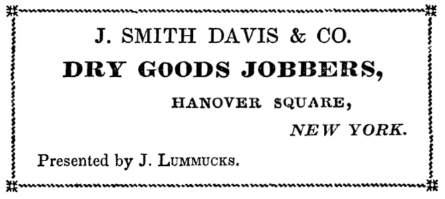

IN TWO VOLUMES.
————
NEW YORK:
F. SAUNDERS, 357 BROADWAY.
1839.
————
ENTERED, according to Act of Congress, in the year 1839, by FREDERIC SAUNDERS, in the Clerk's Office of the District Court of the United States, for the Southern District of New York.
CRAIGHEAD & ALLEN, PRINTERS, No. 112 Fulton Street, New York.
————
CHAPTER I.
Being the beginning of the Book, is very properly devoted to the beginning of the Hero.
ANCESTRAL.
IT is a generally received opinion in some parts of the world, that a man must of necessity have had ancestors; but, in our truly independent country, we contrive to get along very well without them. That strange race, called Aristocrats, it is said, consider every body as nobody, unless they can boast of at least a dozen ancestors. These lofty people would have scorned an alliance with a parvenu like Adam, of course. What a fortunate circumstance for their high mightinesses, that they were not born in the early ages. No antediluvian family would have been entitled to the slightest consideration from them. When the world was only two thousand years old, it is melancholy to reflect, its surface was covered with nobodies; men of yesterday, without an ancestry worth speaking of. It is not to be wondered at, that such a set of upstarts should have caused the flood; nothing less would have washed away their vulgarity, to say nothing of their sins.
But in this blessed country, as is known to all the world, men rest their claims to notice on their own merits; and as we neither hold ourselves accountable for the vices, nor take credit to ourselves for the virtues of our ancestors, it will not be necessary for me to trace my pedigree any farther back than to my immediate progenitor; and of him I shall write but very sparingly, as it is my intention, in these pages, to confine my narrative to my own personal adventures.
Every body has heard of the long Embargo; but every body, it is probable, has not heard as much about it as I have. It was by that wise and patriotic measure, that my father was ruined; and it will not be wondered at, that it should have formed, ever after, the staple of his conversation. It was not the fashion in those days for a man to set up his carriage after he had failed in business; so my father conformed to the custom of the times, as he would have done, probably, if his misfortunes had overtaken him later in life, and having paid all his honest debts, he scraped together the odds and ends that were left to him, and removed to his native village, there to await for better times; and in due course of events, I made my appearance in the world.
My native village was a quiet little out-of-the-way place, about a day's ride from one of the steamboat landings on the Hudson. Like every other little out-of-the-way village, its quiet was in appearance only, for the men and women who made up its body politic, were as much under the dominion of the enemy of man's peace, as ever were the dwellers of a great and crowded city. Of this fact, my unfortunate parents very soon became convinced. My father, it is probable, always was convinced of it; but my mother, who was city bred, and who had picked up her ideas of human nature from novels and romances, expected to find country people and villagers, as innocent as the lambs that frisked about on their meadows; and the first outbreak of uncharitableness, which she witnessed in her new neighbors, caused as much astonishment in her mind, as though she had found a thorn on the stem of a butter cup.
Having thus accounted for my being in the world, I shall close this chapter, and in the very next, proceed at once to the business in hand, and relate my adventures with as little digression as possible. And I trust that my kind reader, when he shall arrive at the end, will not be compelled to ejaculate, as the old woman did when she read the dictionary through from A to izzard, that she could make neither head nor tail of the story.
————
CHAPTER II.
Although very short, will contain more than half my life.
I ONCE had a maiden aunt, who used to say it was easier to raise children than chickens; from which it might be proper to infer, that she hated little boys and girls, and loved poultry. The inference may be true, or not; but none, except the inexperienced, will doubt the truth of her saying. Certain it is, children will thrive upon means in credibly small; and where one little existence is suffered to go out for want of sustenance, dozens are surfeited out of the world, before they are surfeited with it.
I had one sister; she was two years older than myself, and we grew up together almost miraculously; for my father having expended nearly all his means in a legal contest with a stubborn lawyer, had but a trifle to bestow upon his offspring. The next ten years of his existence he lived upon hope, expecting, at the death of my grandfather, who was rich, to come into possession of his property, jointly with my uncle. But my grandfather was an implacable old man, and for some reason, which I never rightly understood, he took a dislike to my father, and bequeathed him but one dollar, leaving the bulk of his property to my uncle. Although the disappointment to my father was very great, when the only prop upon which his hopes rested was knocked from under him, yet the reflection that his father had gone into an unchangeable existence with hatred in his heart against him, gave him more pain than the mere loss of the property. When the full extent of our misfortunes was known, domestic matters were much straiter with us than before my grandfather's death. My father had seemingly lost all his energy; and my mother, to solace herself, took to two articles of domestic manufacture, which owe their support chiefly to indolent old ladies, and romantic young ones; viz., novels and snuff.
My sister and myself were left to follow the bent of our own inclinations, which would no doubt have led us into the street, where the inclinations of young folks generally lead them, had it not been that we were very proud, and our little hearts could not brook the sight of our cousins better dressed than ourselves, and, as we were taught to believe, at our expense. We had no companions, and all our little stock of knowledge was gained from the books which my mother read. Miserable food it was for the minds of young creatures like us, who had no opportunities of correcting by observation the strange accounts we read of the world we lived in. And so, in this idle manner I grew up, ignorant of every thing around me, and with dreamy, ill-defined apprehensions of the way of the world. I had attained to my seventeenth year; and I might have continued until now doing nothing better than reading novels, or what is worse, perhaps, writing them, had it not been for a very trifling incident, which sent me forth into the world to encounter the adventures which I am now about to relate, for the especial instruction and benefit of my kind reader.
————
CHAPTER III.
The first impulse which set the locomotive of my destiny in motion.
IT was one of those peculiar days in March, of which the words bitter, intense, freezing, chilly, or piercing, do not convey an adequate idea, but which the term raw, very nearly defines. I had been on an errand for my mother, and was returning home chilled to the midriff, for I had neither cloak nor great coat, when, as I turned the corner of the street, I met my cousin John, who was advancing towards me clothed in a handsome surtout with a fur collar; his flushed cheek, and his laughing mouth, showed how well at ease he felt, and how well he was defended against the inclemency of the weather. He was a proud, overbearing boy, and I had always tried to avoid him; but I encountered him so suddenly now, that I could not get out of his way without appearing to be either afraid or ashamed of meeting him.
"What," he said, tapping me on the shoulder with his rattan, "have you got no cloak to wear this chilly weather, cousin Harry?"
"I don't mind the cold," I said, trying to look very warm and cheerful, although my lips were so benumbed I could hardly move them.
"I see you don't," he replied.
I felt too indignant to make him any answer, and I turned to leave him, when he called me back.
"I will tell you something," he said, "if you will promise not to let on to any body."
"What is it?" I asked eagerly, thinking it might be something in relation to my grandfather's estate.
"I am a prophet," he said.
"Is that all!" I replied.
"O, no, not quite all; I prophesy that you will die the death of old Cole's dog one of these days. Do you know what complaint he died of?"
"No."
"He died of pride and poverty." And so saying, he laughed sneeringly, and we parted.
There is neither heat nor cold, sunshine nor gloom, in outward nature; they exist in the mind alone. The raw east wind still beat in my face—the long icicles still hung from the branches of the leafless trees—the ground was still frozen beneath my feet, and my back was still unprotected by the friendly warmth of a furred great coat—but I no longer shivered with the cold; the blood burned in my veins, and the sweat started upon my forehead. The words of my cousin entered into my heart; they had either created or put in motion feelings which I had never known before. In a moment, in the twinkling of an eye, I was changed. I was an altered being. I felt desires and aspirations springing up within me, which almost drove me mad.
I hurried home, and throwing myself on the floor, covered my face with my hands, and burst into tears. I had never known the bitterness of grief before. My heart seemed to be running out at my eyes, and at each sob the cause of my grief seemed but to increase. My mother was in the middle of a new novel, but she threw it aside, and caught me in her arms, and began to examine to see if my limbs were broken; and my sister, with out asking the cause of my grief, lifted up her voice, and wept from sympathy. My father looked on in silent wonder, until finding that none of my bones were broken, he said it was extremely indecorous for a lad of my time of life to behave so childish.
I could make no reply to my father's remarks, nor to my mother's tender inquiries, other than to beg them to ask me no questions, and to let me retire to my chamber.
"Alas! alas!" I exclaimed, when left to myself, "it is too true; I shall die, as my cousin has predicted; pride and poverty will lead me to an ignominious grave. I must live, while I do live, known to but few, and despised even by them; and at last I shall die, despised by myself."
After a while my grief began to subside; the fountain of my tears was exhausted; the dreadful words of my cousin grew more and more indistinct, and in their place came thronging into my brain the many wonderful stories I had read, of good luck befalling the poor and the friendless; of great men having taken a fancy to adventurous boys, who had left their homes with nothing but a wallet and a mother's blessing; and of their making their fortunes, and returning with their pockets lined with gold. These fine stories, it is true, were nothing but fictions; but I did not then know nor indeed dream, that there were men and women in the world wicked enough to invent stories to mislead the minds of the young and simple. They were to me veritable histories, the truth of which it had never entered into my head to call in question. And so I asked myself why I might not be as acceptable to fortune as others who had stood in need of her favors, and boldly sought them at her hands; and as I could make no objection to this very reasonable demand, I resolved at once, that I would set out in quest of a fortune myself, and trust to that friendly divinity for aid, who had conferred favors on others no better entitled to them than myself.
"Yes, yes," I exclaimed, in the pleasant excitement of my feelings, "I will prove my cousin a lying prophet; I will gain a name among men—I will become rich—my parents shall lean on me as a staff in their old age, and my sister shall look to me for support, and she shall not look in vain."
With such bold exclamations as these on my lips, and with high resolves in my heart, I fell asleep, and bright and pleasant were the visions which visited me in my slumbers. When I awoke in the morning, I made fresh resolutions to avert the doom which the sneering prophecy of my cousin had invoked upon my head; and when I told my parents of my determination to seek my fortune in the world, they made fewer objections than I had anticipated. In truth, I believe my father was not at all displeased to have the responsibility of providing for me shifted from his shoulders to mine; and my mother was so sanguine of my success, that she could not find it in her heart to oppose my wishes. Indeed, she had always said I should some day get to be governor, and my early ambition she considered as an earnest of my future greatness. But my poor sister did nothing but cry at the prospect of our being parted, and for her sake I should have been willing to give up all my ambitious designs.
After many days spent in debating the subject, it was at last determined that my father should furnish me with all the money he could raise, and that I should proceed to New York, and seek for employment as clerk in a counting house, it being agreed on all hands that that was one of the genteelest avenues which led up to the temple of the fickle goddess; for it was a primary consideration with my parents, that whatever I did should be done genteely. But I made a mental reservation myself, that fortune should not be rejected, let her approach in what guise she might, but particularly if in the shape of a young and beautiful heiress. My plan of operations having been determined upon, no time was lost in getting me ready for my entrance into the world. Although my wardrobe was by no means extensive, it required a great many days to complete all the ripping and altering which my mother considered necessary. I thought there would never be an end to the preparation for my departure; but at last the end came, and unfortunately, the last article of dress which my mother completed was a white Marseilles vest, which she had altered out of an old one of my father's, but it was so bespotted with tears and snuff I was never able to wear it; I prized it more highly, notwithstanding, than I did my new coat, which was made at the tailor's. Very much to my surprise, I succeeded in packing all my clothes into a small hair trunk, which had been a travelling companion of my father's many years before; the corners of it were secured with strong iron clamps, and the top was studded with my initials in brass nails; altogether, I thought it made a very grand appearance, and felt very proud of it. All things being prepared, the night before my departure was spent in talking over with my parents and sister the great things that I was to accomplish in the world; and every moment I felt myself increase in importance, as the time drew near when I should not only be uncontrolled in my actions, but should also have the care of making provision for my own wants.
As you, gentle reader, have no doubt known the sad feelings of one who leaves his home for the first time, it would be superfluous to relate what mine were on this melancholy occasion. Were I a poet, or, indeed, had I any other object in view than simply to make a record of my adventures, this would afford me an excellent opportunity for dilating to the very edge of endurance upon this most interesting period of a man's life. But I shall spare the reader any further reflections on this momentous occasion; and in the next chapter, we will take our seats together in the stage coach, and so proceed on.
————
CHAPTER IV.
The departure and the journey.
THE day had just begun to show itself in the east, when the rattling of wheels was heard approaching nearer and nearer, and presently the shrill notes of the stage driver's tin horn saluted our ears. It was the signal for me to get ready, and I obeyed it as well as I could; but my eyes were so blinded with tears, I could scarcely see to do any thing. I kissed my mother and sister again and again; and when the coach stopped at the door, I was ready with my trunk, and prepared to step in. My father alone had followed me out, and while the driver was securing my baggage, he took my hand, and gave me a few words of advice.
"Your mother, Harry," said my worthy parent, "is, of course, entitled to your affection, and it is your duty to obey her in all things, as the good book says; but, you must be aware, that women are not the fittest persons in the world to give advice to young men on their entrance into the world; therefore, when her advice comes in opposition to mine, your own good sense will tell you that mine is entitled to your first consideration. Never, my son, be ashamed or afraid of speaking to any body, either to solicit a favor, or for any other purpose; bear in mind that men are but men, and there is no station whatever can make more of them; we are all very much alike, and you can judge from your own feelings that there is no man so good as not to feel secretly flattered by the attention of any body who will notice him. And let me once more remind you never to eat an egg out of a tumbler; nature, my son, has bestowed more care upon eggs than upon her other productions, and has furnished in their shells the vessels out of which they should be eaten."
The driver having strapped on my baggage, my father put a small roll of bank bills into my hand, saying it was all he had to give me, and that I must use it with discretion. I squeezed his hand in reply, jumped into the coach, and the next minute I was fairly on my journey. The first bound of the coach imparted life to my feelings, and I should very soon have been in a high state of excitement, but we soon came to a dead halt at the post office, where we were kept waiting half an hour or more for the post master to make up his mail bags. At length the mail bags were ready, and again we started, and again we stopped; it was at the tavern, and here we were forced to wait another half hour for the driver to get his breakfast. The passengers all kept their seats, and some of them grew very impatient at the delay. One threatened to write an article and put into the papers, and others proposed appointing a committee to wait on the driver, and request him to hurry with his breakfast; but while they were debating the matter, he made his appearance with a cigar in his mouth; but instead of jumping on to the box, as he ought, he stood talking quite composedly with the hostler about his horses. A little gentleman who sat along side of me, dressed in a satinett frock coat and a white cravat, put his head out of the window, and spoke to the driver.
"Capting," said the passenger, "I wish you would be so good as to let us be going, if you please."
"O, I presume there's no occasion for hurrying," said the driver. "Yes there is though, you pisen critter," said another passenger, "for I shall have a note protested if I don't get to Simpsonville before three o clock."
But the impatience of the passengers had but little effect upon the driver, who continued to puff his cigar, and talk to the hostler; when he did mount the box, however, truth compels me to say that he drove in handsome style. Good humor was soon restored among all the passengers but one, a very pale faced man, with a bombazine stock, who remarked that whoever served the public, whether he held the reins of government or of a stage coach, ought never to be behind the wishes of his employers.
"No politics if you please, mister," said a red faced gentleman; upon which the discontented passenger drew his chin within the circumference of his bombazine stock, and said not a word.
This was the first coach I had ever seen the inside of, and it appeared to be a very grand affair. The cushions were stuffed very curiously with spiral wires, and some of them had worked through the leather, and at every jolt of the carriage they scratched me very unpleasantly, besides making a rent in my trowsers, which I could not very well conceal. The gentleman who sat behind me said his great objection to wire cushions was, that they attracted the electric fluid in a thunder storm. But I was glad to observe from the bright face of the sky, that there was no danger of a storm before our journey would be at an end. There were just nine passengers, and but one female among them; she sat opposite to me on the front seat, but as she wore a green hood, I had not been able to catch a glimpse of her face. A very finely dressed young gentleman sat next to her, and from his magnificent appearance, I set him down for the governor's son at the least; for I had then no idea of the cheapness of finery, or that a governor's son could dress in any other than the very genteelest clothes. He wore a lilac calico shirt, with a little ruffle bristling in the bosom, and a cameo breast-pin almost as large as a saucer; he appeared quite unconscious of there being any body in the coach besides himself, for he amused himself by whistling a tune, and occasionally tapping the side of his long nose with a little ebony stick which he carried in his hand. After we had travelled some distance, he turned to the young lady, and asked her if she didn't consider Bulwer a very powerful writer.
The young lady raised her head, so that I caught a glimpse of her face, and replied in the sweetest, gentlest voice I had ever heard, that she had never read his works.
"What! never read Pelham," exclaimed the magnificent gentleman, in apparent astonishment.
"I have not, indeed," replied the young lady, more sweetly, if possible, than before.
"Then I pity you," said the supposed governor's son.
As this remark seemed expressive of disrespect for the young lady, I thought I had a right to resent it, for I had conceived a liking for her the moment she spoke.
"I have not read Bulwer either," I said smartly.
"Then I pity you" said the gentleman.
I felt highly indignant at this cool reply, but I remembered the advice which my father gave me, never to speak when I was in a passion, and so I bit my lips and remained silent.
"Is Pelham a good thing?" inquired one of the passengers.
"It's splendid," replied the gentleman; "so sentimental."
After this, there was a good deal of conversation on various subjects among my fellow travellers, all of which I remember very distinctly, for I noted the leading ideas at the time in my memorandum book; but as I have doubts about its possessing much interest for the general reader, I shall relate no more of it.
I had made up my mind to be very polite to the young lady on the very first occasion which should offer; but, when we stopped at the Eagle Tavern to dine, instead of helping her out of the carriage, my attention was so completely absorbed by the exhibition of a monstrous circus handbill, that I left that delicate duty to be performed by the Lambert-like landlord of the tavern. As I stood gazing with intense curiosity at the grotesque figure of the clown in the handbill, somebody struck me a smart blow with a rattan across my shoulders, which caused them to smart not a little, and turning around briskly, I perceived it was the finely dressed gentleman with the calico shirt, who had given me this gentle tap; I felt strongly disposed to be angry, but as he seemed to consider it a good joke, I thought it was one of the ways of the world; and I remembered that my father had told me, that if I set myself up in opposition to them, I should have a rough time of it.
"Come, Colonel," said the gentleman, slapping me on the shoulder, "what'll you take?"
"Nothing, I thank you," I replied, "I have taken enough already."
"What! don't you liquorate?"
I shook my head, for I did not exactly understand him.
"Don't drink, hey?"
"Sometimes," I answered.
"What! temperance man? Signed a pledge?"
"No, I have not signed a pledge not to drink."
"Then you shall take a horn, so come along."
And so saying, he dragged me up to the bar. "Now what'll you take? julep, sling, cocktail, or sherry cobbler?"
"Any thing you choose," I replied, for I had not the most remote idea what the drinks were composed of which he enumerated.
"Then give us a couple of cocktails, bar-keeper," said the gentleman, "and let us have them as quick as you damn please, for I am as thirsty as the great desert of Sahara, which old Judah Paddock travelled over."
I was shocked to hear such language from a gentleman who dressed so genteely, and who professed to be an admirer of Bulwer; but I kept my thoughts to myself, and watched the bar-keeper as he mixed the cocktails: they were a mixture of gin and water, and sugar and nutmeg, and a few drops of a red liquid, which he poured out of a little cruet like an ink bottle with a quill stuck in the cork.
My companion tossed off his cocktail almost at a single swallow, smacked his lips, and pronounced the gin damn'd splendid. But the splendor of the gin proved too much for my unpractised throat, for in my attempt to imitate my companion in pouring down the cocktail, it almost took away my breath, which gave the black hostler and the bar-keeper such lively pleasure that they came near laughing themselves into convulsions.
The bell soon rang for dinner, and I followed my fellow traveller into the dining room, and took a seat at table by the side of a jolly looking double-chinned gentleman, who, as he drew his chair up with one hand, reached out the other and seized a covered dish, one half the contents of which he emptied into his own plate; and I emptied the remainder into mine.
"That's right," said the double-chinned gentleman, "always eat oysters at a place like this, because you can eat them quick; no bones to bother you, toast soft, too, nice and brown. What's that, mace? mace, I declare! Capital! What a fat one! it just fills up the mouth, touches all the organs of taste at the same time, and leaves nothing to be desired. Delicious! what a fat one! Lovely! I knew a man once, an acquaintance of mine—first rate, ain't they?—an acquaintance of mine who—best stew I ever sat down to!—'quaintance of mine who—lovely!—most expeditious eater I ever knew; never was gone from his store more than fifteen minutes to his dinner; in twelve months eat himself into dyspepsia; next twelve, into consumption; travelled on a railroad for his health; next twelve months on his way to kingdom come in his grave."
"He was expeditious," I said, drawing a long breath, and laying down my spoon as I finished the last oyster upon my plate. The double-chinned gentleman finished his at the same moment, although he had been talking all the while, and I had not spoken a word.
"Very, indeed," he said, in reply to my remark, "very expeditious. He lived wretchedly, but he died rich."
"Poor fellow!" I exclaimed.
"Poor fellow," he repeated; "why he was president of a bank; poor fellow, indeed! he left a great estate. But don't waste time; let me help you to a piece of this steak; how do you like it? speak quick."
"I have no choice, I thank you, sir," I replied.
"What, no choice, no choice, bless me!"
"None, sir."
"Then, my friend, do allow me the pleasure of choosing for you. What a steak! how rich! what juice!"
The ejaculations of my jolly companion, and the sight of the juicy steak, caused my mouth to overflow.
"Delicious, ain't it?" he said.
"Very."
"Very indeed, very, how tender; what bread! Salt, sir?"
"Thank you."
"Stop a moment, don't disturb it; let me tell you a secret. When you sit down at a table, always look at the salt first; you will find it a sure index of the quality of the fare, nine times out of ten. Never knew it to fail. Now look at this, ain't it a gem? none of your finical flutings and notchings about it; but a piece of plain unpretending glass, polished like a diamond. How nicely it is filled, how smooth and white on its surface: it looks like a piece of alabaster inserted in a crystal. How fine and spotless! look, it scarce touches the steak before it is dissolved; not a particle of it will grate against your teeth, but its delicate flavor will gratify your palate without your being at all aware that you owe an exquisite enjoyment to so common an article as salt. See, the little heap on the side of your plate looks like a snow flake just fallen."
"Salt is certainly a great thing," said the gentleman with the lilac shirt, who sat opposite, and who had been listening, with his knife and fork suspended, to the remarks of my double-chinned friend.
"'Tis indeed, a very great thing, very indeed."
"Quite an article of commerce," said the other. "I shouldn't wonder if Congress laid a duty upon it."
"I shouldn't wonder," replied the jolly gentleman, winking slyly at me.
"Where on earth does salt come from?"
"Knowing, ain't he?" said the jolly gentleman, aside to me.
"Quite an extensive assortment on the table," remarked the elegantly dressed gentleman, apparently ambitious of being noticed by the double-chinned gentleman. But his sagacious remark gained him no further notice from the object of his attention, for just at that moment the tin trumpet of the driver was heard, and a general rush took place from the dinner table to the bar-room, and after paying half a dollar a piece for our dinner, we scrambled into the stage again; the young lady, I blush while I write it, was handed in by the driver, after all were seated.
"Do you know the name of that individual who helped you to steak?" asked the supposed governor's son in a whisper.
"No, Sir, I do not," I replied; "do you?"
"I know him all to pieces," replied the gentleman.
"Who is he; some great man?"
"He is so. He is the celebrated Mr. Bulbief, the importer of spool cottons."
I looked again at Mr. Bulbief, but he had covered his face with his pocket handkerchief, and was apparently sound asleep. I should soon have dropped asleep myself—but I sat on the middle seat, with a gentleman each side of me, who commenced smoking segars, very much to my annoyance. I thought it was ungentlemanly, and I had a good mind to have told them so, for the smoke made me deadly sick; but I bore in mind my father's saying, "that in private, as well as in public, the will of the majority ought to be the law, even though the minority suffer in consequence;" and I bore the nauseous smoke from principle as long as I could, for I supposed there was a point of endurance, beyond which rebellion would be justifiable. When they lighted fresh cigars, I ventured to hint that the smoke might not be agreeable to the young lady. Whereupon one of the smokers replied, "that he would not smoke another cigar if it was productive of the least discomfort to her; but he presumed the fragrance was rather pleasant than otherwise, as he smoked none but the best regalias, which cost him three cents apiece."
"I should be sorry to deprive the gentleman of a pleasure," replied the young lady, very much to my mortification.
"I thought so," replied the smoker, lighting another cigar.
————
CHAPTER V.
The Steamboat.
IT was dark when we reached the landing place on the river, and we had but just time to get our baggage on to the dock, before we heard the distant ringing of the steamboat bell, which was soon followed by the noise of her wheels splashing in the water, and the hissing of the steam, and then the boat herself came in sight, vomiting forth smoke and fire. It was the first steamer I had ever seen, and the dim outline of her huge form, partially illuminated by the lights on her deck, as she floated past on the dark bosom of the river, filled my mind with extravagant and grotesque ideas of her size and shape. As I stood gazing at her with absorbing curiosity, a small boat suddenly darted up to the dock with the velocity of lightning, the sparkling white foam rising from her bows like a snow drift. Two men jumped on to the dock, and began to throw the baggage into the boat, and one by one, my companions in travel all disappeared. I was completely bewildered, and at a loss what to do with myself.
"Bear a hand," cried a gruff voice from the boat, "or you'll be left."
"Why don't you get in, boss?" said one of the men on the dock.
"I don't see how I can," I replied, looking over the end of the wharf. Without more ado, somebody gave me a push, and I tumbled headlong into the boat; fortunately, I lighted upon a heap of carpet bags, and although I was not much hurt, I was most terribly frightened. The boat was drawn with amazing velocity through the water, and we were very soon alongside of the steamer. The passengers scrambled on board, but as I had so far recovered my senses as to perceive my beautiful fellow traveller sitting in the stern of the boat, I resolved not to let this last opportunity escape of showing my gallantry, and seeing somebody near her, I stepped briskly past, and asked her if I should have the pleasure of assisting her out of the boat; she thanked me very sweetly, and took hold of my extended hand; but as I stepped back my foot slipped, and I fell my whole length in the bottom of the boat. When I got upon my feet again, she was gone. I hobbled on board the steamer, but I could see nothing of her; I had caught her pocket handkerchief in my fall, and as I could not find her to restore it, I put it into my pocket, to keep in remembrance of her.
The deck of the steamboat was crowded with passengers, and a little bow-legged negro was running about, with a bell in his hand, crying out, "passengers what hasn't paid his passages ull please call to the capn's office and set-tel." So I obeyed the call of the little negro, and having paid my passage, I ascended a pair of stairs close by, and found myself alone on the upper deck. There was no moon, but the stars were shining in all their brightness and beauty, and by their light I could trace the outline of the banks of the river, which rose high above my head in black and in distinct masses. The water looked black and cold, and the night wind was damp and chilly. Below, all was light and life; but here, a step removed, all was solitary, dark, and still. I took the handkerchief of my beautiful fellow-traveller from my pocket and kissed it, and pressed it to my heart; I felt very grand, and clasped my hands together, and looked up to the stars, but blushed as the thought crossed my mind, that they might be intelligent existences, which were looking down into my breast, and reading my thoughts.
I now felt that I was in reality afloat upon the wide world, ignorant of its ways, with no definite object of pursuit, and with but slender means of support. I thought of my mother and sister, and my eyes filled with tears. Vague and indistinct apprehensions of evil rushed through my mind, and I looked forward to the termination of my journey, and the return of day, with dread. And then I called to mind the scornful prediction of my proud cousin, and the feelings it awakened absorbed all others. I threw my hands above me with a feeling of confidence and pride, and I vowed never to despair, nor to slacken in my exertions, until I had attained to wealth and fame, and proved my haughty cousin a liar.
To prevent a return of dull and gloomy forebodings, I left the upper deck, and found my way down into the cabin, where the brilliancy and gayety of the scene completely staggered me; so great was the change from darkness and solitude, to light and revelry. The cabin was crowded with passengers; some were lolling on the sofas; some were reading; but the greater part were clustered around the card tables, where they were playing for money. My fellow traveller in the lilac shirt was dealing out the cards at one of these tables, and after dealing them round for a few times, he exclaimed, "vantoon," and without more ceremony, he caught up a little heap of sixpences and shillings, and rose up from the table; and seeing me standing by, took me by the arm, and would make me drink with him at the little bar at one end of the cabin; and then we went on deck together, when he pulled out his pocket book, and asked me to accept his card; it was as follows:

I read this card over and over several times before I could exactly understand its import; but the thought occurred to me that it was intended for an introduction, and that my new friend must be Mr. Lummucks. I felt very much embarrassed, for I had no card of my own to return, and I was at a loss how to make myself known to him.
"Mr. Lummucks, I presume?" I said, inquiringly.
"Yes, sir," replied the gentleman, lifting his hat.
"I have no card about me," I said, "but my name is Franco."
"Mr. Franco, how do you do," said Mr. Lummucks, taking my hand and shaking it very warmly, as though he had met with an old friend after a long separation, "I am very happy to see you."
"I am very well, I thank you, sir," I replied, with as much solemnity as though I had an insurance upon his life, "how is your health?"
So our introduction being over, we talked quite freely again, and I thought Mr. Lummucks was the noblest hearted, the genteelest, and the finest fellow breathing; and I looked upon it as a very favorable omen, that I should in the very outset of my career, gain the friendship of so fine a gentleman. Finding that I was unacquainted in New York, he invited me to go with him to the City Hotel, where he lived. I promised to do so, and we parted for the night.
Being tired and sleepy, I went down into the cabin again to go to bed, but to my amazement, I found not only all the berths occupied with sleepers, but all the settees, and chairs, and tables. I looked all about, but I could find no vacant spot to stretch myself out upon. The cabin was very warm, and the air disagreeable, and the music of three or four hundred men snoring in concert, was any thing but pleasant. I went on deck again, and having found a vacant place, I spread out my plaid cloak and lay down to sleep. Seeing something round and glossy near me, and supposing it to be a pumpkin, I rested my head upon it for a pillow, and should very soon have been fast asleep, but for the difficulty of keeping it steady. It kept rolling away from under my head, till at length I caught hold of it with both hands, determined, if possible, to keep it still.
"Murdther! murdther! murdther!" cried out a voice close by my ear. I started up affrighted, and half a dozen men, in red shirts and begrimed faces, came running to the place where I lay, when I discovered by the light of a lantern, which one of them carried, that the pumpkin which I had been trying to keep under my head, was the bald pate of a drunken deck passenger. When I had succeeded in convincing the men that I had no murderous designs upon the deck passenger, I crept away to another part of the boat, and was soon fast asleep.When I awoke, it was broad day light, the boat had arrived at the wharf, and the passengers were hurrying ashore; I jumped up and rubbed my eyes, very much alarmed, for fear that Mr. Lummucks had gone off and left me; but luckily I found him, and he called a coach, and we rode up to the City Hotel together, where I was accommodated with a room in the fifth story; it was a weary long way up to it, and when I got there, I felt no disposition to go down again. I had never been so far from the earth before.
————
CHAPTER VI.
My first dinner at a Hotel, and the consequences of taking wine too freely.
HAVING thrown myself upon the bed, I slept until the bell summoned me to dinner. I dressed myself, and hurried down to the dining room; and seeing at a glance that there was no standing upon ceremony, took a seat at one of the long tables, which were spread the whole length of a very long room. I eat a plate of black looking soup which was placed before me, and then waited to be helped to something else, but nobody spoke, nor even looked at me. There was a constant shouting of "waiter! waiter! waiter!" and a confused noise of the popping of corks, the rattling of dishes, and the smacking of lips, enough to have confused my senses, if they had not been sharpened by hunger. The gentleman who sat at my left hand, was a lank cadaverous looking personage, with long black hair, and keen glossy eyes; he wore a white cambric cravat, tied in a large bow knot in front, the projecting points of which had intercepted not a few droppings of tobacco juice; he spoke in a drawling effeminate voice, but in a peremptory manner, to a stout negro man who stood behind his chair, and jumped at his commands with the greatest alacrity, while I could not get a waiter to listen to me. There was a decanter of wine standing between this gentleman's plate and mine, with a piece of paper stuck round the neck, on which was marked No. 49, which I took for the number of the cask out of which it was drawn.
Finding that nobody was disposed to help me to anything to eat, I thought I would help myself to something to drink. "Is this Madeira?" I asked of my left hand neighbor, pointing to the decanter.
"I imagine not, Sir," he replied sharply; "I kind o'reckon its sherry."
"Is it indeed," I said; "then I will try a glass of it in remembrance of my father, for I have often heard him say that sherry was his favorite wine." So I filled my glass, and drank it off with a good relish, for it was smooth and finely flavored.
"That's right cool," said my neighbor, fixing his keen eyes upon me.
"Yes it is," I replied; "I guess it has been iced. I believe I shall try another glass." And so I took hold of the decanter again to help myself, upon which the sallow faced gentleman started upon his feet, and squealed out, "You infernal son of a northern abolitionist, I will teach you to drink a gentleman's wine;" and at the same time seizing a table knife, he made a pass at me, which I fortunately dodged, and seized hold of the decanter of wine, and aimed a blow at his head, which would infallibly have cracked his skull, had not the big negro interposed his head, and caught the decanter in its descent upon his own wool, thereby saving his master's head, but not his wine, for the decanter was shivered into a thousand pieces, and its contents flew over me and my antagonist. My next impulse was to lay hold of a dish of cranberry sauce, with which I might have been more successful than with the decanter, but before I had time to reach out my hand, I was surrounded by a dozen, or more, men, who caught hold of me, and dragged me out of the room, amid a wild uproar of voices, which sounded in my ears like the yells of demons. They dragged me through the hall into a small room adjoining, two having hold of my collar, and a stout fellow hold of each arm. Some eight or ten men followed into the room, and then one of them stood with his back against the door to keep the others from crowding in. Somebody on the outside knocked and kicked very hard against the door, and demanded entrance on the score of his being one of the gentlemen of the press. But the man who was guarding the door refused to move, and the gentleman of the press on the outside gave another savage kick, and swore that the public should be informed of the outrage it had suffered, in the disrespect shown to his person.
Among the gentlemen who were admitted into the room, was an elderly man with gold spectacles, and a high bald forehead; they called him "judge;" his heavy black eyebrows, and a protuberant under lip, gave his face an expression of sternness, and I trembled as he bent his eyes upon me. He took a piece of paper and a pencil out of his pocket, and asked me my name, and where was from; but I was so terrified I could make no reply to him, but burst into tears.
"Don't be frightened, sir," said the judge, quietly; "nobody shall harm you, unless indeed you deserve it very richly, which I am inclined to believe is not the case."
After a few sobs, which I could not suppress, I told the judge my name, where I was from, and the particulars of the affray, without being at all aware of the offence I had committed.
"Ha! ha! ha!" roared the judge, as I concluded my account; "I see through it all, I think; you did not attempt, then, to entice away the gentleman's slave?"
"A slave!" I exclaimed, in amazement, "I never saw a slave in my life."
"Well, well; but how is this, colonel?" said the judge, addressing one of the gentlemen, "you said you could swear you saw the young man put a tract into the nigger's hand."
"Well, I wish I mought never see ole Virginny agin, if I couldn't a took a right smart oath I seen him do it, any how; but praps I was mistaken, it mought a been a napkin."
"Very likely it was," said the judge.
"Hows'ever," said the colonel, "I'll take my oath I seen him, if you wish; but as the young gentleman says himself he didn't done it, I reckon I might as well not."
"So I reckon," said the judge. "Well, gentlemen," he continued, "I think you must be pretty well satisfied of the young gentleman's innocence."
"O, perfectly," they all replied, without appearing to have any will of their own about the matter.
"I am satisfied if you is, judge," said the colonel, "but as you and I were at college together, I should like just to swear to something to oblige you."
The judge thanked him for his kind feelings, but said there was no particular occasion just then.
For my own part, my amazement and terror increased ever moment, and I was expecting to hear sentence of death pronounced upon me, when the judge cleared up all the mystery which hung about the proceedings. "Let me advise you, Mr. Franco," said the judge kindly, "the next time you feel an inclination for a glass of sherry, to call for a bottle yourself, and not to drink another gentleman's, unless he should offer it to you. I don't know what the custom may be where you were raised, but such things won't do down south. That gentleman whose wine you made free with with, was no less a person than the Honorable Sylvanus Spliteer, the celebrated southern orator, and these gentlemen are his particular friends, who, hearing something said about abolitionists, for their ears are very quick to catch any thing that is said on that subject, and seeing you and the orator in an antagonistic position, they very naturally concluded that you were trying to entice away his black boy, who was waiting upon him at table."
I did not think the conclusion was a very natural one, by any means, but I felt no inclination to dispute the point.
"But I am very happy to find that all the difficulty has arisen from a very natural mistake of yours, in supposing that the wine upon the dinner table, like the brandy and the butter, was for the benefit of the public."
Although the explanation of the judge had relieved my fears, yet I felt so mortified and abashed, in finding that I had been guilty of a gross breach of good manners, that my face burned with shame, and I could not raise my eyes from the floor. But one of the gentlemen having stepped out of the room, returned again, bringing Mr. Spliteer himself with him, who having heard all the particulars, shook me heartily by the hand, and insisted on my returning to table, and drinking a bottle of wine with him. The judge, and the colonel, and the other gentlemen, said they would join us, and of course I could not refuse so kind an invitation; so we all returned to the dining room, where, as the orator himself expressed it, the remainder of the afternoon was spent with "a perfect looseness."
I must confess that, after this, the titles of judge and colonel lost something more than half their awe inspiring influence over me; for such songs, and such speeches, as came from the mouths of these gentlemen, I never listened to before nor since. Even the orator himself outdid the colonel. The other gentlemen, one of whom was a doctor, and another a major, told several stories, and related circumstances which they swore had happened to themselves, although I had read of the same things in an almanac when I was a little boy, and I remembered that my grandmother told me they had happened when she was a girl. I have no distinct recollections of the manner in which the dinner terminated; but I remember very vividly, that I found myself, the next morning, lying on my chamber floor, with a burning thirst, and a violent pain in my head.
————
CHAPTER VII.
Shows with what ease a man may enter into a commercial speculation, when he has the means and the inclination so to do.
I HAD as yet seen nothing of the city; so after breakfast, not being able to find my good friend Mr. Lummucks, I ventured to take a stroll through Broadway alone, to see the sights, and put myself in the way of fortune. I had not rambled far, when I caught sight of a little red flag hanging upon a pole which was stuck out of a shop door, and hearing a man talking very loud inside, I stepped in, to see what was going on.
It was a little narrow place, hung round with lithographic prints, and double barrelled rifles, and duelling pistols, and other works of art, both instructive and destructive. There was a counter in the centre of the shop, and at one end of it, elevated on a high stool, stood a little bald headed man, with protuberant black eyes and prominent front teeth. He had a little ivory hammer in his hand, which he flourished about with great earnestness, crying out all the while, "a hof, a hof, a hof, a hof," till at last he struck the counter fiercely with it, and said, "Mr. Smit takes the lot at eighteen and a hof." There were two or three gentlemen standing about the counter, but I could not discover that they took the slightest interest in what was going on.
"Now, gentlemen," said the man with the ham mer, "I will give you very great pleasure; you shall all bless your lucky stars, which has superinduced you to enter this store at this present time. I shall now, gentlemen, put up lot number twenty one, and it must be sold to the highest bidder, pos-i-tive-ly—it must indeed, upon my honor. Here, gentlemen, is something worthy the very highest consideration of connoisseurs, amateurs, and epicures; it is indeed. You see, gentlemen, it is a most magnificent rose wood casket, all inlaid with the mother of pearls and divers other waluable minerals, very rare to be got or obtained. But, gentlemen, before I open this casket, and dazzle your precious eyes with the contents thereof, let me tell you its history.
"This casket, gentlemen, is the property of a wirtuous young orphan lady, which lives in the upper part of the city, who is reduced to the unfortunate extremity of disposing of a part of her personal effects, because she done so many charitable acts to the poor, and therefore it must be sold. Why don't you bid!"
So saying, he opened the casket, and emptied its contents on to the counter; they consisted of a necklace, a pair of ear rings, a silver bodkin, a needle case, a musical snuff-box, and a cameo breast pin. They all looked bright and new, and for aught that I could discover, were none the worse for wear.
"Come, gentlemen," exclaimed the little man, flourishing his hammer, "why don't you bid! I shan't take offence at any thing, say two hundred; one hundred; any thing to start with; say fifty dollars; the casket alone is worth five times the money. Any gentleman as wants to make an operation, has now a beautiful opportunity to make four or five hundred dollars, by purchasing this splendid article. Hasn't he, Mr. Isaacs?"
"You may well say that, Mr. Shooda," said the gentleman addressed; "any shentleman is a fool which doesn't buy that bargain at any price."
The demon of avarice whispered in my ear that now was my time to turn a penny, and I resolved to bid for the casket, and so lay the foundation of my fortune. And then the blood rushed to my cheek at the base thought of taking the advantage of a poor orphan girl's necessities to enrich myself; and then I resolved I would do no such thing. But as the auctioneer went on setting forth the value of the casket, and the low price at which he would sell it, I reasoned with myself thus: if I do not buy the casket, another will; and if I do buy it, and give more for it than another would, of course I shall do a good deed, and while I enrich myself, I shall benefit the poor orphan girl. And then I thought it might possibly belong to the beautiful young lady, my companion in the coach, for whom I felt so great a regard, and if it should be hers, with what pleasure I would restore it to her. This last thought overcame all my scruples, and I determined to buy the casket at all hazards.
I am ashamed to confess that, although these thoughts did pass through my mind, still it was the desire of gain that influenced me. So easy is it, when we do a mean action, to flatter ourselves that it is from good motives we do it.
"Do you think he would take a bid of fifty dollars?" I asked of the gentleman whom the auctioneer addressed as Mr. Isaacs.Mr. Isaacs had a nose both high and long, and his eyes were very black, but large and heavy; his hair was black and crispy, and he had a stoop in his shoulders; he wore a blue frock coat, with a black velvet collar, and altogether his dress had a second hand appearance. Upon my putting this question to him, he drew me aside, and whispering in my ear, told me not to bid as high as fifty at the first going off, although he didn't believe the auctioneer would sell the casket for less than two or three hundred dollars; and then, in a very solemn manner, he advised me not to let the opportunity slip of buying the casket. And he told me upon his honor as a gentleman, that he would buy it of me the very next day at just double the money which I might give for it, if I should buy it, protesting that he would bid it off himself, if he had not left his pocket book at home.
So good an opportunity to make money, I was fearful might not occur again very soon, and I resolved to make the most of it. And according to the advice of Mr. Isaacs, I bid thirty dollars for the casket.
"For shame, for shame," exclaimed the auctioneer, "to bid thirty dollars for a magnificent article like this."
I blushed very red, and bid forty.
"Forty, forty, forty, forty, forty, and five, did you say; five, five, five, five, five."
I did not hear any body bid five, but as the auctioneer had said that nods and winks would be taken as bids, I supposed that some gentleman had given him a sly wink.
"Forty-five, forty-five, forty-five, forty-five, forty-five, forty-five," he exclaimed with astonishing rapidity, and just as he was on the point of letting fall his hammer, I bid fifty.
"Fifty, fifty, fifty, fifty, fifty," he exclaimed more than fifty times, my heart all the while beating time to the flourishes of his hammer, till it descended to the counter, and I found myself the purchaser of the valuable casket, and its contents, for the very small sum of fifty dollars. I paid for it immediately, and to make sure of it, wrapped it up in my pocket handkerchief, and tucked it under my arm.
Mr. Isaacs said I had made a great purchase, and tried to persuade me to stop and bid for some thing else; but I was too much elated, and in too great a hurry to get to my chamber, and glut my eyes with my treasure.
As I left the store, I heard a loud whistle, and suddenly turning my head, I perceived Mr. Isaacs with his cheeks distended like a bladder, and his broad lips screwed up like the mouth of a tightly drawn purse, whistling with all his might; but I was so eager to get to my chamber that I did not turn back to inquire the cause of it.
————
CHAPTER VIII.
A school for morals, and the beginning of an adventure.
AT the tea table I met Mr. Lummucks; he had heard of my encounter with the great orator from the South the day before, and he laughed heartily at my blunder, and said, if I would put myself under his tuition, he would soon make a man of me, and learn me what life was. By way of giving me an introductory lesson, he said, I must go to the theatre with him that evening; and as he offered to pay for my ticket, I did not feel at liberty to refuse.
As I had often heard the theatre spoken of as a school for morals, I was not much surprised to meet a good many people there whose morals seemed to stand in need of a pretty severe schooling; for my own part, I do not think my own morals were much the better for any thing that I saw or heard while there.
Mr. Lummucks said he was acquainted with all the principal actors and actresses, and he promised to take me behind the scenes, and introduce me to some of them, but first he took me up two or three flights of stairs into a long room with green walls and red moreen curtains, with a bar at one end, behind which were half a dozen yellow women serving out cakes and coffee, and all manner of liquors. There were a great many young ladies moving about, some with gentlemen, and some without, but all very gayly dressed, and very free in their manners; indeed, one of them had the boldness to ask me to treat her to an orange, which I did, and then she asked me to treat her to a glass of cordial, which I could not refuse to do, because she was a lady, and I judged from the familiar manner in which Mr. Lummucks spoke to her, that she was an intimate acquaintance of his. Another young lady came up to me, and offered me her card, which I took, and promised to call on her. Mr. Lummucks appeared to be perfectly at home; he called one Bess, another Sue, and another Liz. If this, I thought, is the first lesson in life, I shall not be astonished at any thing which I may meet with hereafter.
I heard a great clapping of hands and stamping of feet, and as I began to grow tired of the company I was in, I made an excuse that I wanted to see the play; so I went out of the punch room into the gallery to see what had called forth the clapping of hands, and to take a lesson in morals. On the stage, which was a long distance below me, were a man and a woman singing with all their might, with their hands stretched out as if imploring mercy from the audience. He was tall and thin, with sunken cheeks, which were, not withstanding, very red; and she was short and fat: they were both dressed in the strangest looking clothes I had ever seen, but apparently very richly. I listened attentively, but I could not understand a word of the song, and the musicians kept up such a noise I was hardly able to distinguish the tune. I must acknowledge that I was greatly disappointed in the exhibition; but it would be wrong in me to condemn what I could not understand, and, as some do, pronounce every thing bad which is above my comprehension.
Not feeling any interest for the people on the stage, I began to look around among the audience, and soon discovered something more interesting and beautiful than I had anticipated. There were a great many ladies among the audience, who, being dressed in gay clothes, gave a bright and beautiful appearance to the theatre; but the lights were so glaring, and the whole scene was so strange to me, it was some time before I could look composedly, and view in detail the lovely beings who were clustered together in the circle below me. When my eye had become more familiar with the scene, and my perception keener, as I glanced from group to group, my attention was suddenly arrested by a beautiful girl, who sat in the lower tier of boxes, dressed in white, and looking like a lily in a bed of tulips. Upon looking at her more attentively, I was electrified at discovering in her my gentle companion of the stage coach. It gave a momentary shock to my feelings to find one whom I had, in imagination, invested with a pure and holy character, breathing the atmosphere of such a place; but descending to the next tier of boxes, I took a seat opposite to her, and soon became so completely absorbed in the contemplation of her beauties, as to be insensible to every thing else. She was very beautiful, and having gazed on her for hours, I thought her image was stamped upon my heart, and that it would be ever present to the eyes of my mind; but when I could see her no longer, and I tried to recall her to my mind, it was in vain; I could only remember that I had seen a being of light and loveliness, but the form she wore had left no distinct impression upon my memory.
She sat between an elderly gentleman, and a lady apparently older than herself, to whom she occasionally spoke; and I thought I could distinguish the gentle tones of her voice above all the noise of the orchestra and the hubbub of the pit. When the performances were ended, I hurried down to the lobby, that I might catch a parting glimpse of her as she left the theatre. I saw her come out leaning on the arm of the elderly gentleman who sat by her side, and I got as close to her as I dared, hoping to catch the sound of her voice. They stood on the steps a few minutes, until a carriage drove up, into which they got with the other lady; the footman banged to the door and got up behind, and away they drove. I stood for a moment almost bewildered, and then darted off in pursuit of the carriage; I ran with all my might, and hard work I had to keep it in sight. It was a weary long chase, up one street and down another, till at length, when I was quite exhausted, and scarcely able to move another step, the sweat pouring from every pore in my body, and my wind quite gone, it stopped in front of a brick house opposite to a large square filled with trees.
The party got out of the carriage, and the old gentleman handed the ladies up the steps of the house. "Good night, uncle," said the youngest lady, in a voice which I could have distinguished among all the babel tongues of the world. "Good night, Georgy, good night," said the old gentleman. The door closed upon the ladies, and the old gentleman stepped into the carriage again, and drove off.
I sat down opposite to the house, under the shade of the trees, to recover my breath; and having rested myself, I very reluctantly quitted the spot; but not until I had noted down the number of the house, and read the name on the silver door plate; it was simply, "Mrs. Smith."
It was past midnight when I got back to the hotel, but I found Mr. Lummucks sitting in the bar-room, drinking and smoking with two or three bilious looking gentlemen, whom he introduced to me as merchants from Mississippi. Mr. Lummucks tried to make me sit down and smoke and drink with them, but I resolutely refused, notwithstanding the Mississippi merchants joined in the request, promising me that they would tell me a mighty big heap of good stories, and that the way they would amuse me would be sinful to a christian. But I was in a hurry to be alone in my chamber, where I could shut my eyes upon the world, and think only of her who had enchanted me.
When I got to my chamber, I locked the door, and took out the pocket handkerchief, of which I had by a lucky accident become the possessor, and having pressed it to my heart, spread it out for examination, with the hope of discovering about it some clue to the name of its owner. It was a beautiful handkerchief; the material was of a delicate texture, surpassing any thing of the kind I had ever seen before; it was edged with broad lace, and the corners were curiously embroidered with fruits and flowers, the like of which I had never seen in nature; on one of the corners was a scroll, surrounded by a wreath of roses, and on it was printed, in delicate little letters, "Georgiana De Lancey." I pressed the name to my lips, and kissed it a thousand times, and did many other foolish things, till at last growing weary, I lay down upon my bed with the handkerchief in my hand, and dreamed that the lovely Georgiana was hovering over me, poised in the air by a pair of purple wings, the gentle motion of which fanned the cool air across my brow.
————
CHAPTER IX.
Getting into a Newspaper.
IN the course of my limited reading, I had met with accounts of men who had become famous by accident, and gained an immortality without having labored for it; but, I had never, in my wildest dreams, imagined that such a lot would be mine. I did, indeed, indulge in the pleasing hope of achieving fame and fortune, but I did not expect to have notoriety thrust upon me at the very commencement of my adventures.
The morning after my visit to the Theatre, I was sitting in the bar room of the hotel, reading the morning papers, when I was startled at seeing my own name in print. The sensations which I experienced on the occasion, can be imagined by those who have found themselves unexpectedly in a newspaper. I was seized with such a fit of trembling, that it was some time before I could gather my senses sufficiently together to enable me to read the following article, which fully accounted for the mark of distinction which had been bestowed upon me.
"Serious Affair.—We have been at great pains to gather the particulars of the late disgraceful outrage at the City Hotel, knowing the anxiety of the public mind in relation to this event, and feeling the full weight of the responsibility which rests upon our shoulders, as public journalists, to furnish our subscribers,—who, we are proud to say, are daily increasing, having added more than two thousand to our lists within the last week, which we happen to know, is more than the entire subscription of any of our contemporaries,—with the latest and most correct information.
"Now we distinctly charge, that our contemporary, with whose vile name we will not soil our columns, has presented his readers (?) with a garbled and incorrect statement of the transaction alluded to, notwithstanding he knew we were in possession of the entire particulars of the affair, which we had obtained at a great expense, and with vast trouble. However, we feel ourselves touched in a very tender point, and we shall condescend to hold the wretch personally accountable; and were it not beneath the character of a gentle man to bandy terms of abuse with a blackguard, we should call him an ingrained villain, a brute dyed in the wool, a dirty contemptible creature who could not speak the truth, though it were for his interest to do so, and who never does stumble upon it, unless he surreptitiously filches it from our columns; but we will not make use of the homely phrases of our vernacular; we forbear; we have no wish to take the bread out of innocent lips. We understand our contemporary has an interesting family dependent upon him; but how he came by any thing interesting, is to us a matter of astonishment, and, indeed, we doubt the fact. We leave the creature to work his own ruin, and hasten to lay the particulars of this gross outrage before our numerous readers, premising, merely, that a paper is left at our office for signatures, requesting the Mayor to call a meeting of our fellow citizens to express their feelings on the subject.
"One of those pestiferous vermin, a travelling abolitionist, by the name of Franco, had the unparalleled audacity to enter the City Hotel yesterday, and endeavor, by his damnable arts, to entice away the faithful slave of the Honorable Sylvanus Spliteer, the chivalric orator of the South, who being at his dinner, and having just finished a plate of oxtail soup, a delicacy than which none know better how to concoct than the worthy hosts of the City, and having taken a decanter of sherry in his hand for the purpose of taking wine with a distinguished Senator, and perceiving an attempt made by the abolitionist to force an incendiary pamphlet into the hands of his honest negro, with that promptness peculiar to southern climes, and with that indignant energy with which the chivalry of the South defend their rights, jumped from his seat, and, with unerring aim, hurled the decanter at the head of the fanatic. But unfortunately the decanter was shivered to pieces instead of the head, and the shrivelled creature got his hide well soaked with good wine, a piece of good luck which, we will venture to assert, never befel one of the fraternity before. We regret to add, that Franco was allowed to escape without farther chastisement.
"Now we sincerely deprecate any attempt at violence or an infringement of the peculiar privileges of the law, but there are cases, which of necessity must occur, which call upon the high-souled and the chivalrous to take the law into their own hands, and inflict summary punishment. This maybe one of those cases; we do not say it is, and therefore if any violence should be committed, let no one lay the blame at our door. We have not recommended a coat of tar and feathers, neither have we made any allusions to the salutary effects of a ride upon a rail.
"Franco's first name, we gather from the books of the Hotel, is Harry; he is a youngish person, apparently not more than twenty-one, of a fair complexion, light blue eyes, and chestnut hair. His clothes are healthy in their appearance, that is, they appear never to have suffered from a fit of any kind."
Having always believed implicitly every thing which I saw in print, I could hardly persuade myself that I had not been guilty of the outrage of which I saw myself accused. I felt all the shame, at least, of a real culprit, and hung down my head and pulled my hat over my eyes for fear of meeting the scornful glances of the men who were moving about me. I was terrified beyond measure at the allusion to the coat of tar and feathers, and a ride upon a rail. The prophecy of my haughty cousin flashed across my mind, and now, I thought, the time of its fulfilment had come. The unfeeling allusion to my clothes filled me with indignation; for my mother had exhausted her skill, and her strength too, in making them, and I thought they fitted me to a hair. I sat in a corner of the bar-room, with apprehension, trembling and expecting every moment that violent men would lay their hands upon me, when I heard the voice of Mr. Spliteer himself in the bar-room. I rose up, and with tears in my eyes, showed him the paper, and begged him to screen me from the threatened violence. He read the article, and laughed heartily at it, which I thought showed a great want of feeling in him; but he could well afford to do so, for he got a good deal of praise at my expense.
"Don't be alarmed, young man," he said, "abuse and misrepresentation are the unavoidable penalties of newspaper notoriety. I have had a heap of it in my day, I can assure you, and I care nothing for it now; but I must confess it did grind me at first no ways slow. As for tar and feathers, and a ride upon a rail, don't care a fig about them; there's not a bit of danger; nobody cares any thing about a newspaper, for although there is nothing which men read more eagerly, there is nothing which they heed so little, not even their Bibles. However, to make all sure, I will take it upon myself to see the Editor, who is a personal, as well as a political friend of mine, and to-morrow you shall see that he will contradict every word he has said to-day in relation to you. And now, do me the favor to drink a julep with me, and you will feel better, I dare say."
I thanked the honorable Mr. Spliteer for his kindness, for I did not know how to refuse, and I had, moreover, a curiosity to know what a julep was. He gave the necessary orders to the bar-keeper; and after a great display of nutmeg graters and muddling sticks, and of sousing and flourishing of tumblers by the latter gentleman, the juleps were mixed; and the honorable Mr. Spliteer himself reached me one of them, for it would have been quite beneath the dignity of the bar-keeper to have stooped so far below his proper level as to have acted in the capacity of a waiter. What the ingredients were of which the juleps were composed I could form no idea; there was a bunch of green mint in the tumbler, topped off with a cap of snow, and a slender glass tube was stuck in the middle. As I had never seen a julep before, I watched the motions of the orator before I touched the glass; he drew his tumbler up to him and applied his mouth to the tube, and I did the same.
"Are you fond of juleps?" he asked, taking a long breath.
"Very," I replied, for I found it very palatable.
"So am I," said Mr. Spliteer, "I like them because they are so wholesome."
"Are juleps healthy, then?" I inquired.
"Very," he said, drawing another long breath. "My father drank so many juleps, that when he died the mint sprouted up all over his grave, and one of these days you will see it growing on mine."
"I hope not," I replied.
"Do you, indeed," said the chivalrous orator, "why so?"
"Because," I answered, "I hope you will never die."
"Good, good," he exclaimed, apparently highly delighted, "right good, considering you tried only yesterday to break my head with a decanter."
"You must expect when you take wine, that it will get into your head," I replied.
"So I do," he said, "but not through my skull." And then he laughed very heartily, and I laughed too, and said a thousand other foolish things. Having sucked the last drop out of our tumblers, Mr. Spliteer ordered two more juleps, and told the bar-keeper to make them stiff.
I have not a very clear recollection of what occurred after drinking the second julep, neither do I remember exactly how many I did drink; but I know I felt very valiant and very witty, and that I threw a tumbler at the head of the bar-keeper, and told the honorable Mr. Spliteer that he looked like a bilious baboon. And, I was afterwards told, that I soon grew stupid and sleepy, and was taken up into my chamber, and put to bed by some of the waiters.
————
CHAPTER X.
Recovering from a Julep.
HAD I been philosopher enough to have doubted the truth of a spiritual existence independent of the body, the effects of the juleps would have cured me of skepticism forever. It is a curious fact, that when the senses are benumbed with the fumes of strong drink, and our limbs can no longer perform their offices, and we fall down drunk, stupid, insensible—our bodies deprived of all sense, sympathy or feeling; when the noble mansion, which was created for the in-dwelling of our immortal spirit, has been prostrated by our own follies, and become a mere heap of breathing matter, and all of our faculties are benumbed by the fumes of strong drink, and all of our sympathies, and feelings, bodily and mental, are paralyzed and drunken, then our souls, as if exulting in the release, which our deadened bodies give them, or as if ashamed of the disgraced habitations to which their destiny has assigned them, spread out their wings, and soar away to scenes where the body is incapable of accompanying them. At least such was the case with me, for although I lay on my bed stupid and insensible as a log, never before was my mind so actively employed as then, and never did my fancy play such wild and fantastic tricks, or bear me so high on her wings, in my sober moments.
It was late in the afternoon when I roused up, and found myself upon my bed with my clothes all on. It was a long while before I could convince myself that I was not somebody beside myself, and I should have rubbed my eyes and doubted for a long time, had I not been impelled by a burning thirst to go in search of water; luckily there was a goblet full in my chamber, which I soon emptied, and by degrees became convinced that I was indeed nobody but myself; a very uncomfortable conclusion to arrive at, for I should just then have been glad to have been convinced that I was anybody in the world besides myself, for I felt very wretched. Although I soon established my own identity, I could not easily separate and distinguish the transactions of the past two days from the transactions of my drunken visions.
My father was very particular, when I left home, to caution me against eating an egg out of a wine glass, but he never said a word about abstaining from juleps. It was wrong in me to blame him for my own misdeeds, but I could not help thinking, that, if he had cautioned me against drinking, I might have been spared the bitter feelings which I then experienced. The prophetic words of my cousin were constantly ringing in my ears, and the reflection that I might, by my own folly, have aided to bring on their fulfilment, filled me with grief and shame. I had not yet done any thing towards bettering my condition, and I made fresh resolves not to let another day pass without making a vigorous effort to obtain employment. But the saddening thought came over me, that I was without friends, and I knew not to whom I could apply for help or advice, and I had not even fixed in my own mind what kind of employment I should seek. But I had met with nothing but kindness thus far, and I felt assured that I should still meet with kindness and polite treatment; for if men would, when unsolicited, show me kindness and favor, surely when I did solicit them they would grant it more readily. Thus I reasoned with my self, and very sound reasoning I thought it.
Of all the men whom I had seen, none had treated me half so politely as Mr. Lummucks. I never met him, but he would make me drink with him; he slapped me across the shoulder with the familiarity of a brother; he would make me go to the Theatre with him, and he would pay for my ticket; if I sat near him at table, he would send me his wine, and after dinner he would offer me a cigar, although I always refused it; he had given me his card on board the steamboat, and he had since pressed me to call at his store and see him. What but the kindliest feelings, and the most generous nature, could cause a man to show such civilities to a stranger. Fortune, I thought, had evidently thrown me in his way, and I determined to second her endeavors to help me along, by applying to him for assistance in procuring a situation; and, I had not a doubt, but that a gentleman of his benevolent feelings, would be very glad of an opportunity of doing so.
With these soothing and comfortable reflections, I lay down again, to sleep off all effects of my dissipation, that I might get up in the morning refreshed and invigorated, and better prepared to prosecute my schemes for defeating the malicious prophecy of my cousin. And so I fell asleep, and dreamed of my mother and sister, and of the beautiful Georgiana. For all the cares and anxieties and disappointments of this wicked world, cannot deprive us of the privilege of visiting, in our dreams, the gentle beings whom we love.
————
CHAPTER XI.
Tells of my reception by Mr. Lummucks, and of the manner in which that polite gentleman answered my solicitations.
HAVING dressed myself in my very best clothes, which, to tell the truth, were my very worst also, I set out, soon after breakfast, in search of the store of Messrs. J. Smith Davis & Co., whose names were on the card which Mr. Lummucks had given me.
It was a bright and pleasant morning; the streets were full of life and animation, and every thing looked promising and joyous to me. Men were hurrying past me in every direction, with looks full of business and importance, and I thought, where all seemed to be so well employed, and in such haste, there could be no difficulty in finding something to do. But, as I was not stinted for time, I did not hurry myself, and walked leisurely along beneath the awnings, stopping occasionally to gaze at the heaps of goods which were displayed in the stores, or to read some curious sign which attracted my attention. After a while I succeeded in finding Hanover Square, which I was astonished to find was triangular in shape, and soon discovered the large gilt sign of Messrs. J. Smith Davis & Co. Luckily, Mr. Lummucks was standing in the door with his hat off, and his hair brushed down smooth and glossy. As soon as he saw me, he caught me by the hand, and dragged me into the store.
"How are you this morning, Colonel?" he said.
"Very well, I thank you," I replied, speaking as respectfully as I knew how; "are you well?"
"Fine as silk," said Mr. Lummucks.
I was glad to hear him say so, and congratulated myself upon finding him in such a pleasant humor.
The store of Messrs. J. Smith Davis & Co. was not very large, but it was crowded with goods to the very ceiling, and in the middle of the floor were long piles of calicoes, about which were several young gentlemen, as busily employed as bees in a hive.
A very little man approached us from the further end of the store, jerking his little arms and legs with the precision and ease of an automaton. His dress was new, and bright, and neat. Mr. Lummucks introduced me to him. He was no other than Mr. Smith Davis himself, the principal of the firm. I was almost struck dumb to see so much importance confined within so small a compass. He shook me cordially by the hand, and asked Mr. Lummucks if he knew me.
"Know him like a book," replied Mr. Lummucks.
Mr. Smith Davis shook me by the hand again, and said he was very happy to see me; he asked me how the times were, and offered me a cigar, which I took for fear of giving offence, but the first opportunity I got I threw it away.
"Buy for cash, or time?" he asked.
I was a little startled at the abruptness of the question, but I replied, "for cash."
"Would you like to look at some prints, Major?" he asked.
"I am much obliged to you," I replied, "I am very fond of seeing prints."
With that, Mr. Smith Davis commenced turning over one piece of calico after another, with amazing rapidity.
"There, Major,—very desirable article—splendid style only two-and-six; we done a first rate business in that article last season; cheapest goods in the street."
Before I could make any reply, or even guess at the meaning of Mr. Davis's remarks, he was called away, and Mr. Lummucks stepped up and supplied his place.
"You had better buy 'em, Colonel," said Mr. Lummucks, "they will sell like hot cakes. But did you say you bought for cash."
"Of course," I said, "if I buy at all."
He took a memorandum book out of his pocket, and looked in it for a moment.
"Let me see," he said, "Franco, Franco, Franco, what did you say your firm was, some thing and Franco, or Franco and somebody?"
"I have no firm," I replied.
"O, you haven't, haven't you? all alone, hey? but I don't see that I have got your first name down in my tickler."
"My first name is Harry," I said.
"Right, yes, I remember," said Mr. Lummucks, making a memorandum; "and your references, Colonel, who did you say were your references?"
"I have no references," I replied, "indeed I know of no one to whom I could refer, unless to my father."
"What, the old boy in the country?"
"My father is in the country," I answered seriously, not very well pleased to hear my parent called the old boy.
"Then you have no city references, hey?"
"None at all, sir; I have no friends here except yourself."
"Me!" exclaimed Mr. Lummucks, apparently in great amazement. "Oh, ah! But how much of a bill do you mean to make with us, Colonel?"
"Perhaps I may buy a vest pattern," I replied, "if you have got some genteel patterns."
"A vest pattern," cried Mr. Lummucks, "what, haven't you come down for the purpose of buying goods?"
"No, sir," I replied, "I came to New York to seek for employment, and as you had shown me so many kind attentions, I thought you would be glad of an opportunity to assist me in finding a situation."
Mr. Lummucks countenance underwent a very singular change when I announced my reasons for calling on him.
"Do you see any thing that looks green in there?" he said, pulling down his eyelid with his forefinger.
"No, sir, I do not," I replied, looking very earnestly into his eye.
"Nor in there, either?" he said, pulling open his other eye.
"Nothing at all, sir," I replied.
"I guess not," said Mr. Lummucks; and with out making me any other answer, he turned on his heel and left me.
————
CHAPTER XII.
A change of quarters, and a new friend.
I FOUND that the high rate which they charged me for board at the hotel, would soon exhaust my slender means, so I applied at a genteel boarding house in Pearl street, kept by a Mrs. Griggs, and agreed with her for a bed in a room with only five other young gentlemen; the price which she asked was something less than half what they charged at the hotel. I was very glad to make the exchange, for I was not only continually annoyed by the sight of Mr. Lummucks, but by the frequent mention of my ludicrous encounter with the Southern orator.
The first time I dined at Mrs. Griggs', I was reminded of the advice given me by my fellow traveller, about the salt cellar, for on casting my eyes upon that piece of table furniture, I perceived that it did not indicate a very sumptuous dinner: it was a little gilt edged glass dish, with a piece broken out of each corner, and its contents were coarse and damp; consequently I was prepared to find the soup cold, the mutton overdone, the vinegar sweet, and the salad warm. But, thanks to the poverty of my parents, I had learned to eat my dinner without finding fault with its quality, always satisfied if it was not deficient in quantity; and although I flattered myself I could distinguish a good meal from a poor one, I could be content with either.
Mrs. Griggs' boarders were all young gentlemen, fashionably dressed, apparently full of fun, and with most excellent appetites. Their greatest care seemed to be who should eat the greatest quantity in the shortest space of time. I must confess I could not but regard them with feelings of envy, for they were mostly clerks in counting houses and stores, and I knew it was employment which gave them such light hearts and happy faces. They were somewhat rude in their behavior, but, as it was the rudeness of buoyant spirits, and not of ill nature, there was nothing offensive about it. A very tall young gentleman, with a ring on his forefinger, and a gold chain round his neck, filled the office of carver, and his perquisites of office were, as a matter of course, sundry little pieces of the outside, which he contrived very ingeniously not to touch when he was helping round.
"Mister Barilla, will you, if you please, sir," said one of the young gentlemen to the carver, "be so kind as to send me, per bearer, a small invoice of that mutton?"
"Sorry to be under the disagreeable necessity of informing you, sir," said Mr. Barilla, "have none remaining in first hands, but will be 'stremely happy to send you this tumbled lot," pointing to a scrag on the side of his plate.
"Not as you know on, you may say to your friends when you write home," replied the other.
"I say, Mrs. Griggs," said another, "haven't you a very good memory, mem?"
"Why yes, sir," said Mrs. Griggs, "I believe I have, I was never called unforgitful; my husband used to say I was very good at remembering things. Why did you ask, sir?"
"Nothing in particular, mem, I only wanted to inquire how long it might be since this bread was baked?" said the boarder.
Mrs. Griggs blushed very red, but all the young gentlemen tittered as though they were highly delighted at this piece of wit; but for my part, I looked upon it as a piece of great rudeness, and I did not even smile.
"I will tell you what I do remember," said Mrs. Griggs to the quizzical boarder, "and that is, that you haven't paid your last month's board, you impudence, and I wish you would, or else leave my house. A poor widow lady, like me, can't afford to keep a genteel boarding house for nothing."
There was a general burst of laughter at this reply of Mrs. Griggs; and the witty gentleman turned very red, and looked very sheepish, but he made no reply.
A young gentleman, who sat at my right, observing, I suppose, that no one took any notice of me, and pitying my loneliness, commenced a conversation with me, by asking if I was fond of Manhattan water.
"Is it mineral?" I asked.
"I should think it was," he replied; "it is very hard, at least."
"Does it promote longevity," I inquired, thinking that my neighbour must be a scientific gentleman, and that it would be necessary to speak in a dignified manner.
"It promotes longevity of office," he replied; "his honor, the Recorder, drinks a pint before breakfast every morning, and he has held his office these twenty years. And the company which supplies it will live forever, they have got a perpetual charter."
"Indeed," said I, "that is very curious," not knowing exactly what else to say. "Pray, what are its component parts?"
"Professor Silliman analyzed it once," replied my communicative neighbor, "and found it contained two parts cats and dogs, and the other parts different kinds of salts, the names of which I have forgotten."
"Does any body besides his honor, the Recorder, drink it?" I inquired.
"O, yes, sir, it is drank to a very great extent in this community—you have been drinking it your self."
"O, no, I have never tasted it, I am certain," I replied.
"O, yes, I am certain you have."
"No, sir, I have not," I replied sharply, not liking to be contradicted in so positive a manner.
"Allow me to insist that you have, sir; that is the very article in your tumbler."
At this moment, Mrs. Griggs removed my plate, and placed before me a saucer full of bread pudding, and a copper tea spoon to eat it with; but the remarks of my communicative neighbor had taken off the keen edge of my appetite, and I rose up from the table without tasting it.
After dinner, I wandered about the streets until I was tired and weary, and then I returned to my boarding house, and went early to bed, with a vague hope of being warned in a dream of some piece of good fortune, which might be in store for me.
About midnight, I was aroused out of a deep slumber, by the entrance of three of my room mates; two of them had been to the theatre, and they commenced singing "Meet me by Moonlight," while the third, who had been practising at a Thespian club, delivered himself of Hamlet's soliloquy, trying to make my head answer the purpose of Yorick's skull, which caused a great deal of merriment; but I twitched my head away, and drawing the counterpane over it, pretended to be asleep.
It was not long before my other two room mates came in. They were firemen. They were dressed in red flannel shirts, drab jackets and trowsers, and large leather caps. They were not both members of the same company, and they began talking about their respective machines in a very animated manner, and I expected every moment to see them get into a fight; but after they had abused each other, in a shocking manner, for a few minutes, they suddenly stopped, and joined in the song of "Meet me by Moonlight." I ventured to lift up my head to take a peep at them, when one of the firemen, a little black haired man, with steel spectacles, cried out, "hollo! chummy! come jump out of that, and see the lions dance;" and without more ado, he took hold of my heels and dragged me out on to the floor before I had time to make any resistance. I jumped upon my feet, full of indignation, but perceiving it was all a joke, I joined in the laugh, which was raised at my expense, and was very soon on as good terms with my five room mates as need be.
They were whole-souled liberal hearted young fellows, and therefore they would have something to drink. They cast lots to see who should pay for the drink, and then drew a card out of a pack to see who should go after it, and oddly enough it fell to the lot of the same person to do both; the amateur Thespian was the unfortunate individual. He went out to a neighboring bar-room, and soon returned with a couple of tumblers, and a pitcher full of mint juleps, which were no sooner drank, than we were all seized with a desire to sing.
The little curly-headed fireman, it is proper that I should mention, being pious, refused to drink any of the juleps, but he lighted a cigar, and almost suffocated us with smoke.
The breakfast bell rang the next morning before any of us were awake, but my room-mates all started up at its summons, and began to dress themselves with great expedition, and with a most generous indifference about whose clothes they put on. There appeared to be a complete abandonment of all individual ownership in such articles as shirt collars and stockings, and one of these free-hearted fellows put on my stockings without showing the slightest compunction of conscience. One furnished a bottle of cologne water, and another a pot of bear's grease; one a hair brush, and another a comb. But I believe each one confined himself to his own particular tooth brush; at all events, I was determined to do so myself.
These young gentlemen made a very genteel appearance when they were dressed, and I have no doubt they made a great show in Broadway of an evening, when they were released from their business. I could not avoid reflecting on the ease with which mankind can be imposed upon; and as I had myself been most grossly deceived by outward appearances, I determined to be on my guard for the future, and take nothing upon trust.
I was highly delighted with the profundity of my reflections, and flattered myself that I had made a discovery in morals. The reader will discover, long before he will arrive at the conclusion of my adventures, in what manner I profited by this great discovery.
————
CHAPTER XIII.
A new field, and another speculation.
ONE of my room-mates was a tall slender youth, with light blue eyes and whitish hair; he wore a blue frock coat, with a stand-up collar; a black stock, and a blue cloth cap very much pulled over his eyes; he usually carried a little ebony stick under one arm, and a half-bound book under the other. Sometimes, when he did not forget to put them on, he wore a pair of steel bowed spectacles, the glasses of which were slightly tinged with blue. He had once been a cadet at West Point, and he still wore a certain military air, which, although very easily recognised, would be very difficult to describe. He was very grand in his conversation, and made use of the choicest words in the dictionary. His name was D. Wellington Worhoss.
I was sitting in my room after breakfast, with my eyes resting on Miss De Lancey's handkerchief, while the eyes of my mind were looking into the dim future which the light of my imagination was beginning to enliven, when Mr. Worhoss came in, and having pulled off his cap and gloves, he sat down, and resting his heels upon the mantel piece, he tipped himself back in his chair, and without apparently observing that I was in the room, began to read aloud.
I did not feel myself very highly complimented by the little notice which Mr. Worhoss took of me, and to show him that I held him as cheaply as he seemed to hold me, I opened a book, and began to read aloud myself. He looked at me over his shoulder with as much sternness as a young gentleman with blue eyes and whitish hair could assume, but perceiving that I showed no signs of immediate dissolution from the effects of his glances, he threw down his book, and I did the same.
Mr. Worhoss and I were, a very few minutes after, established friends. He swore he would never desert me, and made me his confidant on the spot.
I was sorry to learn from Mr. Worhoss that times were hard. He informed me that the "House" in which he had been employed as a clerk, had "bursted up," and that he was, in consequence, a gentleman at large. "However," he said in a solemn manner, "I don't care a tenpence about it; I never did like mercantile pursuits. It indicates a want of soul to be devoted to them. Business has a tendency to blunt the finer feelings of our nature, and I will acknowledge to you in confidence, that I always found it an extremely difficult operation to adjust my mind to the level of a counting-room."
"Ah," I said, "I should be very glad of an opportunity to adjust my mind to any occupation which would yield me a small salary."
"Be content," said Mr. Worhoss, "to cultivate your sensibilities in some gentlemanly manner, and don't throw away your talents upon trade. However," he continued, "if gain is your object, I can put you in a way of making a handsome per centage on a small investment."
I told Mr. Worhoss I should feel myself under great obligations to him, if he would; that I had got a little money left, and that I should have no objection in the world to investing it to a good advantage.
"Then you are just the gentleman I wanted to see," he replied, taking my hand, and squeezing it very warmly. "I have written a prize article for the Mirror, for which I expect to obtain fifty dollars, and if you will advance me five dollars, I will return you ten, when I receive the prize."
I thanked Mr. Worhoss for his liberal offer, and ventured to ask, if there was not a possibility of his not receiving the prize?
"Not the slightest in the world," he replied; "it is to be awarded by a committee of literary gentlemen, all men of taste, and they cannot do otherwise than decide in favor of my article. But you shall judge, yourself, of the probability of their doing so. I will read the article to you."
I told Mr. Worhoss he might spare himself the trouble, as I had great confidence in his representations. But, in spite of all I could say, he would read it to me.
As mankind are prone to wreak their vengeance on the innocent when they cannot on the offending, I do not feel myself at liberty to break through an established custom, as I might thereby subject myself to be called a fanatic, or some other evil name; I shall, therefore, revenge myself upon you, most gentle reader, for the sin of Mr. Worhoss, by repeating to you the prize article which that gentleman wrote for the Mirror. Here it is:
A TALE OF FASHION;
OR,
THE MYSTERIES OF THE PASSIONS.
Dedicated to the Thoughtful.
Augustus de Satinett was a jobber; a choicer spirit the region of Hanover square boasted not. Pearl street and Maiden Lane may have known his equal, his superior never. He had risen from junior clerk to junior partner, in one of the oldest firms. The best blood of the revolution flowed in his veins; his mother was a Van Buster, his father a de Satinett; a more remote ancestry, or a more noble, it were vain to desire. Augustus had a noble soul, it was a seven quarter full; his virtues were all his own, and they were dyed in the wool; his vices were those of his age—they were dyed in the cloth.
At the time of which I write, Augustus was perfect in manly beauty; his teeth were white and even, his lips were finely chiselled, a profusion of chestnut curls clustered upon his noble brow, and genius flashed from his hazel eyes. He lifted his hat to all his acquaintances with an air of easy dignity, which spoke, as plainly as an air could speak, that Augustus had travelled in foreign parts, for he had drummed in Arkansas, and collected in the lithograph cities of the west.
It required no stretch of classic fancy, in those who saw de Satinett, to believe that some fond Pygmalion of the sex, whose existence is a sentiment, had loved into life a marble Antinous, which, stepping from his eternal pedestal, had put on the habiliments with which fashion clothes her votaries.
Eugenia Bergenville was the only daughter of a doting mother. She, Eugenia, and not her mother, was all loveliness and all sentiment. In her were all the elements of beauty combined, in parts harmonious. She was like one of those glorious visions of light and loveliness, which sometimes visit us when the soul is warm and plastic, and which leave upon the tablets of memory, an impression which time cannot efface.
Her mother had seen much of the world, for she had once dispensed the culinary offerings of Pomona, in the temple which bears the honored name of Fulton; to speak plain, she used to sell kitchen vegetables in Fulton market. But she had become rich by the purchase of a lucky ticket in a lottery, and retired to private life; and all the energies of her soul were devoted to the education of the young Eugenia, whom she determined to bring up in the genteelest manner; with her, to determine was to do. Eugenia was genteely brought up.
She was an accomplished performer on the piano, and sang in the Italian style; how could she be otherwise than accomplished—had she not taken forty lessons of Goward? Not having a decided taste for reading and writing, those ordinary branches were dispensed with, they not being deemed essentials in a genteel bringing up. But she knew several French phrases by heart, and she could sing an Italian song. What more could the most fastidious desire? But, she could boast of more. Her dresses were made by Madam Martineau, who received the Petit Courier by the Havre packets, direct from Paris. It was the boast of Eugenia's mother, that her daughter dressed in the very first style.
Augustus and Eugenia met: the Fates had designed them for each other; there was, therefore, no reason why they should be kept asunder. It was at a benefit ball in St. Tammany that they first saw each other.
It may be thought by some, that this was an improper place for two such beings to visit. Perhaps it was. Charruaud's might have been more select, or Niblo's a thought genteeler. But perils are to be encountered wherever youth and beauty meet; and we have no desire to interfere with the doings of those peremptory personages, the Fates; it was by them ordained, that Augustus and Eugenia should meet within the walls sacred to St. Tammany.
Many and fair were the forms that graced that benefit ball. Chatham street sent forth its beauties, and the Bowery held not back its gay creatures from the festive scene. Long wreaths of greens and paper roses, were suspended from the pillars of the hall, and the gas lights burned with a brilliancy which made every thing short of liquid rouge look pale. Augustus danced a pas de trois with the Misses P., and Eugenia danced a pas de deux with Mr. P.
Augustus had no sooner seen Eugenia, than he felt that his time was come, and he sought for the master of ceremonies, who wore a white riband in his button hole, and requested to be introduced. Now, the master of ceremonies had never seen Augustus before; but being a perfect stranger, is no bar at a benefit ball, to an introduction; so the master of ceremonies took Augustus under his arm, and introduced him to Eugenia, as his particular friend. Augustus bowed to Eugenia, and requested the pleasure of dancing with her in the next quadrille. Now, Eugenia had engaged her self for every dance that might be danced, and for the rustic reel at the close; but feeling that her destiny was sealed, with an ingenuousness peculiar to the place, she suddenly forgot all her promises, and yielded at once to the solicitations of Augus tus; and he had the pleasure, not only of dancing the next quadrille with her, but of dancing all the quadrilles that were danced on that eventful night.
Many months did not pass by before Augustus spoke of marriage; but Eugenia was a child of nature, and with an artless simplicity, peculiar only to children of nature, and to the disciples of Madam Darusmont, she exclaimed, "what is marriage?"
Augustus endeavored to explain to her how it was necessary, before two souls could be made one, that some form of ceremony should be submitted to, although a very trifling one would satisfy the law; very trifling indeed, compared with its enduring effects. But Eugenia could not understand why she could not love and be loved, as purely and as ardently, without the aid of priests as with. "What is marriage?" she exclaimed again, in simple purity of soul; "if it is to love my dear Augustus better than any other object on earth, better even than my music master, or my mother, then am I married already."
But, if Augustus was satisfied that Eugenia needed not the ties of the matrimonial statutes to ensure her felicity, he knew that they were necessary to ensure his, so he insisted on being married in the old fashioned manner. Eugenia at last consented, and one bright and pleasant moonlight night, they were made one by a Roman Catholic priest, in his back parlor, in Orange street. The priest being an Irishman, his foreign accent imparted a degree of romance to the ceremony; which, in a measure, softened the feelings of Eugenia, and made the requirements of the law less odious to her susceptible soul.
The honey moon had fulled and waned, when I received an invitation to spend a sociable evening with Augustus. I found him seated with his wife. He welcomed me with a cordial welcome, but she neither looked at me nor welcomed me. An ill-natured observer might have said she was in the sulks, but doubtless her heart was too full; she was too happy to speak.
Augustus was a ripe scholar, and he loved to talk of books. His library was choice and elegant; it contained Bulwer and Scott complete, and the "Encyclopedia Americana," and books of a graver cast were not wanting; the works of Hannah More held a conspicuous place on his shelves, and their contents were familiar to his mind: he had read Coelebs when a boy, and he had the highest regard for its author; and when speaking of her, he called her "his Hannah," and his "favorite Miss More." In the course of the evening, he frequently spoke of her by these familiar names, which showed the warmth of his affection for his favorite authors.
Time will pass away even when familiar friends are discussing their favorite authors. Mrs. de Satinett, for so we must call Eugenia, began to give hints, which could not be misunderstood, that it was time to retire. The rain was pattering against the windows, and the house was far up town. Augustus pressed me to take a bed; I could not refuse. As he showed me to my chamber, he took my hand, "Belville," he said, with a solemn earnestness, "you are not married."
"No," I said, "but you are."
"Yes," he said, "I feel that I am."
He could say no more, and I bid him good night.
My chamber adjoined that of Augustus and his wife, and as it was a genteel house, the wall was not so thick but that I could hear the conversation that passed between them. I was unwilling to do so, of course, but I could not avoid it.
"I wish I was dead and in my grave," said Eugenia.
"How can you, my dear, distress me to death," said Augustus to this unnatural wish of his wife.
"No danger of your being distressed to death," said Eugenia, sobbing.
"What on earth have I done, my dear, to deserve this?" said Augustus.
"You have broken my poor heart," said Eugenia.
"My dear, you will drive me mad," said Augustus.
"No danger of your going mad," sobbed Eugenia.
"Don't say so, dear, don't; there," a kiss, "there, then."
"Let me alone," exclaimed Eugenia.
"Oh! oh!" groaned Augustus, "what have I done or said to offend you?"
I could hear him pacing the room with quick and rapid strides, and I thought to myself, how surprising it was, that he did not pursue the only obviously proper course in such a case. I will not name the course of action which appeared to me proper on the occasion, for fear of giving offence; for I am aware that there are differences of opinion on this as well as on other subjects.
Eugenia, after sobbing hysterically a few minutes longer, exclaimed again, "I wish I was dead and buried." "Don't, my dear," said Augustus, "tempt me to say I wish you were." "You cruel wretch," exclaimed Eugenia, "you are trying to kill me. To sit there all the evening, before my face, and talk about that nasty Hannah."
"What Hannah?" exclaimed Augustus, in great consternation.
"Your old flame, Miss More, your favorite, as you call her; to my face too."
Augustus laughed outright. He expostulated with Eugenia; he explained to her that Hannah More was only his favorite author; that he had never seen her in his life; that she was an ugly old maid, and above all, that she was in her grave. But it was all to no purpose, he might have rebuked the angry sea with as much effect. Eugenia had no conception of such a thing as a favorite author; all books were alike to her, from a penny magazine to a polyglot bible; and as to a book having been written by a woman, it was something entirely beyond the circumference of her understanding; she would not believe a word of it. She would have it that Hannah More was nothing more nor less than an old flame, or something worse, of her lord's. She sobbed, and at last he swore.
How they settled the difficulty for the night I am ignorant to this day, for I soon fell asleep, and heard nothing farther of their conversation.
From that memorable night I saw a great change in Augustus de Satinett; but, why prolong a painful tale, or dwell upon the events which prostrated a noble nature. Thenceforth Augustus knew no rest. Eugenia would sit for hours, and the only words which would escape her lips, were, "Miss More." When he sought his home, after a day of fatiguing toil, the first sound that struck his ear, was, "Hannah;" and when he laid his head upon his pillow, instead of the sweet spirit of sleep which once closed his eye lids, the sound of his no longer favorite "Hannah's" name chased the kind sprite away, and he was doomed to hear more of Miss More.
At last, Augustus took to gin; but, that old fashioned alleviator failing to bring relief, he sought for peace amid the din of battle, and on the plains of Texas joined the brave spirits who poured out their blood in the cause of liberty and land speculations.
————
When Mr. Worhoss concluded his article, he exclaimed triumphantly, "what do you think now?"
The truth is, thought I, that fifty dollars would be an extravagant price to pay for the history of Mr. de Satinett, but I was afraid to say so, for fear of offending Mr. Worhoss, so I took out my pocket book and lent him five dollars, and he gave me a promise in writing, to return ten dollars in case he should receive the prize of fifty.
As Mr. Worhoss had been so free in his remarks to me, I frankly told him what my own condition was, and asked him to recommended me to some employment. He advised me to take an office in Wall street, and commence the brokerage business, or to open an eating house, or to study for the ministry. But, as neither of these employments exactly suited my expectations, he promised to take me under his protection, and procure a situation for me immediately, with some respectable jobber.
I felt myself fortunate in securing, at so cheap a rate, the friendship of so accomplished a gentleman as Mr. Worhoss, and I listened to his conversation for two or three hours with great satisfaction.
"For my own part," said Mr. Worhoss, as he threw his heels over the back of a chair and lighted a cigar, "I am determined to live easy, to live well and genteely; and work, I won't."
"Then you have got a rich father to lean upon?" I said.
"No, I haven't," said Mr. Worhoss; "I am sorry to say it, but, my father is very poor. He was a member of Congress a good many years, and as he spent all his time in attending to the affairs of the nation, of course his own affairs all went to sixes and sevens; and all he ever got for his patriotism, was an appointment at West Point for myself, and a midshipman's warrant for my brother, who was dismissed the service for sleeping in his watch; and I left the Point, because I couldn't brook the restraints that were put upon my actions. The fact is, I had a penchant for a remarkably fine turkey cock of the Colonel's, which I endeavored one Christmas eve to introduce into my room; and this trifling circumstance, some how or other, caused me to leave the Point. But, it is not absolutely necessary to have a rich father, in order to live without work. Society, you must know, that is, the civilized world, have agreed that a few of their number shall live in ease and elegance, while the many shall work and sweat like slaves."
"I knew that such was the case," I remarked, "but I never knew before that there was any agreement about the matter. Pray how long is it since the arrangement was made?"
"Ever since the flood," replied Mr. Worhoss, "and probably long before. I do not positively assert that there have been any writings drawn up and signed by the parties, but still the agreement exists, and it has been strictly adhered to in all ages, and will be in all time to come, at least in my time; so I have resolved to make the most of it, without stopping to inquire into the justice of the arrangement."
"Ah," I said, "it is the tyranny of custom, and not an agreement between the parties that causes such an unnatural state of things to exist."
"All stuff," replied Mr. Worhoss; "how can you call it tyranny, when the strongest party volunteers to serve the weakest. Tyranny is an unrighteous exercise of power over those who are incapable of resistance. If seven eighths of mankind choose to endure all manner of privations, that the remaining eighth may enjoy all manner of comforts, you may call it infatuation, but call it not tyranny. However, if you are fond of argument, I will argue with you about the moon being made of green cheese, because that is a subject on which there may be doubts; but to argue about an established fact is an absurdity. The truth is as I have stated it to you, and I will tell you in confidence that I have enrolled myself in the ranks of the minority who receive tribute from the majority, but in what manner I shall receive my portion I have not determined. You, I perceive, are anxious to join the many, and labor for us; well, every man to his liking; I shall not dispute with you in a matter of personal tastes, but, one thing I will advise you to do before you proceed any farther; and that is, to have your head examined."
"My head," I exclaimed in astonishment, "there is nothing the matter with my head."
"Perhaps not," replied Mr. Worhoss; "I mean the developments of your skull, that you may know what pursuit is best adapted to your powers of mind, and in which you would of course be most likely to succeed."
As this was a point on which I was most anxious to receive information, I thanked Mr. Worhoss for his suggestion; and he proposed that I should go with him to the phrenological rooms of his friend, Mr. Fingrum; whither I accompanied him, to submit my head, with all its imperfections, to the examination of that celebrated philosopher.
————
CHAPTER XIV.
Like a previous chapter, adds another link to the chain of my adventures, without increasing the intensity of interest which they may have excited.
THE "phrenological rooms," were a very small office in Nassau street, with a dark closet attached to it. There was a little cupboard in one corner, filled with plaster busts, and most hideous looking skulls. In the little closet, the floor of which was covered with a dirty carpet, sat a lady on a high stool, with her hair over her face, and Mr. Fingrum the phrenologist standing over her, poking his long bony fingers over her head, and calling out the size of her organs to a pale young man, who marked them upon a phrenological chart, as they were announced. Mr. Fingrum was a tall gaunt man, with a very thin face and a very red nose. He wore a rusty suit of black, and a dirty white cambric cravat. Altogether, his appearance was philosophical in the extreme.
After the manipulation of the lady's head was completed, and all her organs were properly set down, she glanced over the chart, apparently with great satisfaction; but, she thought her "amativ." was put down a number too high; upon which, the phrenologist requested her to take off her bonnet again, and he re-examined that particular organ, and decided, that instead of its being rated too high, it was actually a number too low. He explained, that the reason why the lady had doubts about it, was all owing to her "self-esteem" being so very small.
With this explanation, she appeared entirely satisfied; and when she left the "rooms," she said she should recommend several of her female acquaintances, who had very interesting heads, to call on Mr. Fingrum and be examined.
As the phrenological rooms were conducted on the strictly republican principle of "first come first served," I was forced to wait my turn, and a stout red faced gentleman next took his seat upon the stool.
Mr. Fingrum hesitated for a minute before he put his hands upon the head of his sitter, and going to a glass case, he took out a half decayed skull, which he appeared to regard with great delight.
"This," said the phrenologist, with great solemnity, "is the skull of Saint Paul."
"What, the apostle!" exclaimed the stout gentleman, starting upon his feet.
"The very same," replied Mr. Fingrum.
"Bless my heart, bless my heart," said the gentleman, almost turning pale, and taking his seat upon the stool again, "that ever I should live to see the skull of Saint Paul the Apostle. Why he has been dead these eighteen hundred years."
"No he hasn't," replied the phrenologist, "you must remember that Saint Paul was a very old gentleman when he suffered martyrdom, and that he was not converted until some years after the ascension."
"That is true," said the gentleman, "he has not been dead as long as I thought at first."
"I want you should observe, sir," continued Mr. Fingrum, while he polished the skull with the palms of his hands, "that a gentleman may have a development of very bad propensities, and yet be the best and noblest of his race. Or rather he may have organs which might be productive of evil, but which, under proper guidance, will be come instruments of good. Thus you see that destructiv. and combativ., which are so fully developed in Saint Paul, and which once sent him on an errand of cruelty to Damascus, afterwards, when his conscientiousness, which you observe is also very large, had aided the Holy Spirit to work his conversion, caused him to speak out so bravely before Festus and Agrippa, and enter valiantly into the theatre at Ephesus."
"Well, well, I shouldn't wonder, said the sitter.
Mr. Fingrum replaced the skull of Saint Paul in the glass case, and commenced the examination of the stout gentleman, who shut both eyes, and held down his head as reverently as though Mr. Fingrum was about to pronounce a benediction upon him.
The phrenologist pressed his hands upon the head of his sitter, and began to name over the developments to his assistant, who sat, pen in hand, ready to take down his remarks on a chart.
"Amativ. large," mumbled Mr. F.; "Philoprogenitiv. full; Adhesiv. large; Inhabitiv. small; Concentrativ. large; Combativ. very large; Destructiv. very large."
"What," exclaimed the gentleman, opening his eyes, and turning redder in the face, "do you mean to tell me that I am a destructive?"
"I say that you have combativeness and destructiveness very largely developed, and that you must, in consequence, be addicted to fighting, and—"
"I say I am not," replied the gentleman, "and don't you tell me that again. I am one of the most peaceable men in my Ward."
"Perhaps you are," said the phrenologist, "but I am not accountable for your developments, and I must repeat, that your destructiveness is very large."
"Take your hands off of my head," exclaimed the gentleman, jumping up, "and take that for your insolence, you red nosed ghost." And with out more ado, he struck the phrenologist a blow under the ear, which sent him reeling up against his assistant, who stumbled against the case which contained the head of Saint Paul, which he over turned, and smashed the glass plate which covered that valuable relic. The destructive gentleman then took his hat, and walked out of the "rooms," in a state of high excitement.
The phrenologists got upon their feet again, after a while, but it was a long time before either could speak.
"That is all owing," said Mr. Fingrum, as soon as he had recovered from his fright. "to my cautiousness being so small; confound it, I wish it was bigger. I perceived, at a glance, that that man's self esteem and combativ., would make him a dangerous subject to handle, and so I showed him the peculiarities of Saint Paul's skull, to prepare his mind for what I should be obliged to say about his own; but I ought to have been more cautious."
"And was that really Saint Paul's skull?" I asked.
"That, no," said the phrenologist, "it was the skull of Gibbs, the pirate. I saw that the man's marvel was so large that he would believe any thing I might tell him; if I had told him it was the skull of Cain, he would have believed it. But he shall find that my combativeness is as large as his own; I will go immediately to the police office and have him arrested." And so he took his hat and cane, and walked off, and I was obliged to leave the rooms without having my head examined, a circumstance which I regretted very much, as I felt myself entirely at a loss to determine what pursuit my talents best qualified me for. My inclinations rather leaned to the course which my new friend, Mr. Worhoss, had marked out for himself; but I thought it would be prudent to try something else first before I joined his party.
At the tea table I met Mr. Worhoss again, and that kind hearted young gentleman invited me to take a walk with him after tea and see the town. As I was anxious to see every thing worth seeing, I thanked him for his kindness, and accepted his offer. He said he would just step up to his room and dress, and then he should be ready for a walk.
As Mr. Worhoss's "to dress," meant nothing more than buttoning up another button of his coat, and brushing his hair, and pulling down his wrist bands, I thought he was an unreasonable long time in doing it. At length, however, he made his appearance, with his slender ebony stick in his hand, and we walked out together. The street lamps were lighted, and Mr. Worhoss remarked that as it was too late to see any thing in Broadway, it would be advisable to go direct to the theatre. He said there was to be a sterling English comedy, and a new French dancer, and consequently, all the beauty and fashion of the city would be present.
I very gladly assented to his proposal, thinking that where all the beauty of the city was gathered together, my beautiful Georgiana could not be absent.
Mr. Worhoss proposed that we should sit in the pit, as it was decidedly respectable, although not as genteel as the boxes. Of course, I made no objections; and when we reached the entrance, I stopped short, expecting that he would procure the tickets, as Mr. Lummucks had done, when he pave me an invitation to go to the theatre with him. But Mr. Worhoss only pointed to a little round hole in the partition, and observed that that was the place where they took the money for the tickets.
"Is it indeed?" I said.
"Yes," said Mr. Worhoss, "and you had better get a couple of tickets before they begin to crowd about the doors."
"O, ah," I said, feeling very foolish, "I didn't think of that."
"I knew you didn't," replied Mr. Worhoss, "and that is the very reason why I reminded you of it."
According to the delicate suggestion of my new friend, I bought two tickets, and we entered the pit about half an hour before the performances commenced, which gave me an opportunity to observe all the beauties as they took their seats in the boxes. I watched them very narrowly, hoping to discover my beautiful Georgiana among them, but I was disappointed; she did not come. It was some consolation, however, to me, to know that her ears would not be offended by the rude and ribald language of the people in the pit. They were a rough set. I thought that the respectability of the pit was not quite so decided as Mr. Worhoss had intimated; but he remarked, that there was an unusual number of butcher boys present, who were always a great annoyance to the lovers of the legitimate drama, by their eating of roasted pea nuts, and encoring all the songs.
I forget the name of the sterling comedy which was played, but it was all about a wild young fellow, who ran away with a beautiful young lady, whom he succeeded in marrying in spite of the exertions of her old guardian to prevent him. I was delighted with the plot, and thought that the moral was most excellent. After the comedy, Mr. Worhoss, who appeared to know every body in the Theatre, told me not only the names, but the personal histories of a good many of the audience. Amongst the rest, he pointed out to mean elderly gentleman, with a good humored broad countenance, a high nose, and a pair of twinkling black eyes. "That gentleman," said Mr. Worhoss, "is Major Rigmaroll, the editor; he has written criticisms about the stage for the last thirty years. I know him all to pieces. He is going to publish a book about Shakspeare, and he has already published one, in which he proves as plain as the nose on his face, which you see is plain enough, that the American Indians are descended from Shem, Ham, or Japheth, I forget which; he claims relationship, by the way, with one of them himself."
"Perhaps." I said, "he wants to lay claim to some Indian lands, on the score of family connexion."
"Upon my soul I believe he has done so already," said Mr. Worhoss.
"He must be a very learned man," I said, "to be able to trace the origin of a people who are themselves ignorant of their own descent."
"I guess he is learned," replied Mr. Worhoss; "he knows Josephus Millerius by heart. But look, see what a long glass he has got in his hand; he has come here on purpose to criticise the new danseuse."
In a few minutes the stage bell rung; the musicians in the orchestra began to play. "Hats off," cried the people in the pit. Up went the green curtain, and disclosed a scene representing a forest of trees growing out of a board floor, and in bounced a fat woman, who, as soon as she got to the centre of the stage, elevated one foot to a horizontal position, and whirled round on the other like a top. I must confess I was shocked beyond measure, for I had some how or other imbibed an idea that an opera dancer was a light and gentle little creature, who tripped and bounded before your vision in graceful movements, like a sprite; but nothing could be more unlike the reality, for here was a full grown woman throwing about her legs in all manner of ungainly attitudes, and with such an indecent scantiness of clothing as to fairly make me blush.
But my ideas on this subject, I must acknowledge, differed very much from those of Mr. Worhoss, for he declared she was a magnificent dancer, and he said, that, after witnessing such an exhibition, it would be a down right bore to sit through the farce. As I agreed with him in his last opinion, we came out of the theatre, and I was glad to get into the open air again. Mr. Worhoss proposed taking something to prevent our taking cold, and I followed him into a showy bar-room, next door to the theatre. He called for two glasses of port wine sangaree, and after he had emptied his tumbler, he appeared to be deeply absorbed in the contemplation of a hunting piece which hung opposite to the bar. As there were a good many young men standing around, and the bar-keeper seemed to be waiting for the pay for the sangarees, I threw down a shilling, upon which Mr. Worhoss turned suddenly round, and putting his hand into his pocket, exclaimed, "you don't say you have paid?"
"Yes I have," I replied.
"Well, that is too bad; come, let us go," said Mr. Worhoss.
"Now, sir," said Mr. Worhoss, "let us have some oysters, and then we shall be prepared to finish the evening."
I observed that I was not in the least hungry.
"That is nothing," said Mr. Worhoss; "people don't eat oysters because they are hungry, any more than they drink wine because they are thirsty."
I did not want to show my ignorance, so I made no further objections, but followed Mr. Worhoss down a steep pair of stone steps into a cellar, which was brilliantly lighted up with gas lights, and we took our seats in a little box just big enough to hold two persons. The front of it was enclosed by a red moreen curtain, behind which a man's head obtruded itself as soon as we entered, and ejaculated, "stew?"
"What is the meaning of that," I asked, staring at the head.
"Stew?" ejaculated the head again.
"He wants to know if you want a stew," said Mr. Worhoss.
But I did not know whether I wanted a stew or not. So I made no reply, and the man exclaimed once more, "stew?"
"No," said Mr. Worhoss, "none of your stews. Give us two half dozens fried, and whilst they are cooking, two half dozens of raw ones in the shell, and a lemon."
The head disappeared, and very soon returned with the raw ones, which were large and delicious. Although I was not hungry, I succeeded in swallowing half a dozen without any difficulty.
"I suppose you don't often drink anything?" remarked Mr. Worhoss, in an inquiring tone.
"Not often," I replied.
"Neither do I," said Mr. Worhoss, "but a glass of brandy and water is indispensable with oysters. Shall I order a couple of glasses?"
"Certainly," I replied, and the brandy and water was brought.
In the next box were two young men regaling themselves with a bowl of oyster soup. From the sound of their voices I thought they were very young. As they talked very loud, I could not avoid hearing their conversation.
"I say, Nick," says one, "how much does your old man allow you per week?"
"Only a dollar," replied the other.
"Only a dollar! what a mean old skunk he must be!"
"Isn't he, proper? I'm blistered if I ain't ashamed of him. But I tell you how I manage it. When I want money, I go to the old woman and tell her I want to subscribe to the Missionary Society, and she always forks out."
"Ha, ha, that is first rate. But you know I haint got no mother, so I can't do that, of course. But I will tell you how I work it; when I want money, I go down to the store and get a new suit of clothes, and then go and pawn them in Chatham street."
"You do? Well I'm blest if that ain't capital. I mean to try that myself. But hurry and eat up your soup, or we shall miss the after piece."
"What, ain't you going to have some pie?"
"No, I never eats pastry."
"Then let us have some brandy."
When these interesting young gentlemen were gone, I remarked to Mr. Worhoss that I didn't like the cellar at all, it was so close and confined.
"Not like it," he exclaimed; "why, oysters would not be oysters if they were not eaten in a cellar. Don't you know there is an eternal fitness about every thing, but particularly about eating. The luxury of a dish does not consist so much in its material, as in the place and manner in which it is served. A bowl of greasy soup, for instance, with kernels of pimento floating in it, may be eaten in such a place as this with great gusto; but if it were placed before you at a regular dinner table, it would cause a rebellion in your bread-bearer. And what man, in his senses, would sit down to a table so narrow that his knees interlocked with his neighbor's opposite, in any place but an oyster cellar. But there is one exception to the eternal fitness of things. Fried oysters are fitting on all occasions and in all places."
The fried ones were now brought, and Mr. Worhoss called for more cold slaw, and two more glasses of brandy, and during the next quarter of an hour he did not speak a word. When we had finished our oysters, he drew a long breath, and we rose up to-go, and instead of going up to the bar, to pay, he took up a newspaper, and pored over it as earnestly as though he was reading it for a task. The bar-keeper looked at me very hard, and as Mr. Worhoss was so intensely interested in the paper he was as reading, I could not do less than offer a bill in payment for the oysters and brandy. After I had received my change, he threw down his newspaper, and walked up to the bar with his hand in his pocket, but the bar-keeper told him the oysters were paid for.
"Franco," says Mr. Worhoss, putting on a very stern look, "don't do that again."
"No, I won't, I assure you," I replied.
"If you do you will offend me," he replied.
And so we ascended into the upper world again.
"It has just occurred to me," said Mr. Worhoss, when he had reached the pavement, "that to-night is soiree night at No. 8. We will go there if you have no objection; they will admit me because I am a volunteer, and they will not object to you because you are a stranger."
I told Mr. Worhoss I was entirely at his disposal, and he might lead me wherever he liked.
"Perhaps you would prefer to go to a musical party at the Shades," he said.
"Which will cost the most?" I inquired; "the Shades or the soiree."
"O, the Shades, of course," he said; "it will cost nothing at the soiree."
"Then I think I should a little prefer the soiree," I said.
"That is a bright idea," said Mr. Worhoss, "so come along."
We walked down Broadway a short distance, and then turned into a dimly lighted street, where there appeared to be no dwelling houses, and the side walks were lumbered up with bales and boxes. We had not travelled far before we came to a very small house, jammed in between two very high warehouses, with large folding doors, painted in fancy colors, and gilt block letters over the entrance, indicating that it was the Engine Company No. 8. I thought it was a very strange place for a soiree, but I said nothing, and Mr. Worhoss took a small key out of his pocket, and opened the door, and I followed him through a dark and narrow passage, up a pair of steep steps, wondering where in the world he was leading me, when suddenly he opened a door, and I found myself ushered into a brilliantly lighted room, with a long table in the centre, around which were seated fifteen or twenty young men; they were all dressed in drab jackets and trowsers, and red shirts, in the bosoms of which was the figure 8, embroidered with white tape. At one end of the table, seated in an arm chair, which was elevated above the others, I immediately discovered the little curly headed captain, with steel spectacles, who had pulled me out of bed the night before. The room was elegantly furnished, and every thing in it bore a strong contrast to the rough dresses of the company. The chairs were of mahogany, with the figure 8 carved in their backs; the floor was carpeted, and the walls were hung round with pictures in gorgeous gilt frames. One of the pictures represented the apotheosis of a chief engineer, whose name I have forgot.
The little captain in the chair requested us to be seated, but remarked that it was against the rules of the company to allow any but members to be present at a soiree. I put my hand upon the handle of the door to retire, but the little captain begged that I would remain for his sake, and I hung up my hat among the leather caps, and took a seat at the table by Mr. Worhoss.
"That is just the way," muttered a sallow looking member, "we make laws and hang them up in gilt frames, and then we obey them—if we please."
"Of course," said the chairman, "it must be a very bad community where they have not the grace to make good laws, for nothing can be easier than to pass virtuous resolutions; and any society or company, that neglects to do that, must be in a very bad way. That I take to be an axiom, to say the least of it." Saying which, the little chairman took off his glasses, rubbed them with his pocket handkerchief, and put them on again, and looked as though he was determined to frown down all opposition.
But the discontented member went on growling and grumbling, utterly regardless of the chairman's axiom and his severe frowns.
"That is the very thing that I find fault with," he said; "we pronounce our own condemnation by making laws which we have not the virtue to observe. It is just the way with us as a nation; our fathers were willing to stake their lives, their fortunes, and their sacred honors, to maintain the assertion that all men are born free and equal, while at the same time they held one quarter part of the population of their country in bondage."
"Fine him, fine him," cried a dozen voices, "he is talking politics."
"I won't be fined," said the grumbling member; "I am only speaking the truth, and that is not politics, no how you can fix it."
"You must be fined," said another, "for you are talking religion."
"I am not talking religion," said the grumbler; "I am only speaking my sentiments. I appeal to the chair."
"There is no religion in your sentiments, I will swear," said the chairman. "But you shall be fined and turned out too, for you have been talking abolition, and that is worse than either politics or religion."
"Turn him out, turn him out," they all exclaimed, starting upon their feet.
"I won't be turned out," said the refractory member, putting himself in a position of defence; "Let not a soul of you dare to put a finger on me."
But firemen dare do any thing, and the abolitionist was seized and hustled down stairs, and into the street, in spite of all his threats and struggles. Order was very soon restored, and the chairman being called on for a song, he sang the following, which he said was his own composition, and we all joined in the chorus:
THE CAPTAIN'S SONG.
When years twice as many as o'er me have flown,
Shall have dropped from their pinions more sorrows and cares,
And I'm left to bear onward the burthen alone,
Whose weight now a lov'd one endearingly shares.
Fond memory then, with her pencil of light,
Shall depict in bright colors the joys of this night.
When health shall desert me, when friends shall depart,
When wealth shall have open'd his pinions and flown;
When love, even love, shall have fled from my heart,
Then friendship shall cling to me still, though alone.
And memory then, with her pencil of light,
Shall depict in bright colors the joys of this night.
When death, even death, shall approach like a friend,
And I yield myself up to his chilling embrace;
With a hope of hereafter, though here all shall end,
My last effort shall be to help memory trace,
The forms of my friends with her pencil of light,
As she paints in warm colors the joys of this night.
All the rest of the company either sang a song or told a story, as they were called upon. And then the little captain was called upon to relate how he got stuck upon the gable end of an old Dutch house, down in Coenties slip, one winter night, at the time of the great fire, by the seat of his trowsers freezing to the ridge pole; and how all the engines played upon him two or three hours without any body discovering his perilous situation, and how it took two or three kettles of hot boiling water to make Jack Frost relieve his hold of him.
This he did with surprising exactness, as Mr. Worhoss observed, considering he had told it so many times before; for men, he said, were apt to forget the particulars of a story after having repeated it two or three hundred times.
The captain appeared gratified by the compliment which Mr. Worhoss paid to his memory, and shook his head despondingly, and said, fires are not what they used to be, and intimated that the department might go to blazes, for all he cared, if there was not a turn out soon.
"There has not been a fire worth mentioning since the great fire," said one of the members, who had not opened his lips before, and who now looked up and down the table very sagaciously.
"That is a fact," exclaimed one or two other members, with as much solemnity as though it was the only fact that had been uttered for the evening.
"Wasn't that a first rate fire?" said another.
"I guess it was," said two more simultaneously.
"Wasn't it?" said another.
"Didn't Bill Davis do something that night?" said another.
"Do something?" said another little member; "you may well say that; he did more than some thing; he saved ever so many children. How many was it, captain?"
"One only," said the captain, "and a little one too."
"Of course it was a little one, or it could have saved itself," said another.
"How did it happen," I asked, for I did not care to remain silent any longer.
"Is Bill Davis present?" asked the gentleman to whom I addressed myself.
"No, I see he is not, so I will tell you all about it. You have heard about the great fire in Chatham street of course," he said.
"No, sir," I replied, "I never heard it spoken of before."
"You never did?" he exclaimed; "well, wonders will not soon cease, I do believe. I thought every body had heard about that; why, it was on that memorable occasion that I turned out for the first time with number eight. It was a bitter cold night in the month of January, and when I went up to bed, says I, Mrs. Mix, says I, I shouldn't think strange if we had a fire to-night. I shouldn't wonder, says she, if we had, for I have always observed, Mr. Smith, that fires happen in very cold nights. So I went up to bed, and just as I was in the very act of undoing my stock, bang goes the jail bell, so down I went and ran for dear life, and reached the house just as Bill Davis was taking the machine out all alone by him self."
"Isn't that Bill Davis a smart fellow?" said one of the members, interrupting the story teller.
"Isn't he?" said another.
"I guess he is," said a third.
"That is a fact," said another, striking the table enthusiastically with his fist.
The important truth that Bill Davis was a smart fellow being established, the story teller proceeded.
"Hallo, Smith, is that you, said Bill; yes, says I; is that you, Davis? That is me, says Bill, and so we never exchanged another word until we reached the fire, and then, says he to me, I tell you what, Smith, it is going to be a rouser. Isn't it? says I, and then at it we went. Bill took the pipe, and we began to play, when up started a lady; where she came from, we couldn't tell; save my child, she screamed, save my child. Where is he, says Bill; up there, says the lady, pointing to a window in the third story, out of which the flames were bursting. Bless my heart, says Bill, if he is in there, he is gone already. O don't say he is gone, says she; I must save him, he is my only boy; and with that, she steps on the ladder; I can't stand that, says Bill, turning to me, and letting go the pipe; she is the ladiest woman I ever saw, and I will save the child or lose myself; and so he lifted the lady off the ladder, and up he went, and into the window; we never expected to see Bill again; but I'm blest if he didn't soon make his appearance again, with the child in his arms; and down he came, and put it into its mother's lap, who was sitting on the curb stone wringing her hands, and crying enough to break the heart of a loco foco. Didn't she then kneel right down in the gutter, and begin to invoke blessings on to Bill's head. But, Bill says, don't bother me, good woman, with your nonsense. We got comfortable lodgings for her that night, and the next day we got up a complimentary benefit-ball for her and the rest of the sufferers, and I wish I may never see another house afire if her part of the proceeds of that ball didn't set her up in an elegant thread and needle store in the Bowery. And they do say Bill means to marry that woman."
"Ah, that was something like a fire," said the little captain, shaking his head mournfully; "that happened before the hydrants were invented. You don't see such fires now-a-days."
One of the company, after this, favored us with the following song:
THE SECOND FIREMAN'S SONG.
Whose fate 'twill be to weep,
Whose fate 'twill be to die,
Before our feast again we keep,
You neither know, nor I.
But since this hour hath found us,
And friendship together hath bound us,
Pluck memory's flowers, while these moments are ours,
And throw her gay garland around us.
Whose fate 'twill be to prove
Women are not all true,
Is known to one above,
But not to me nor you.
But since this hour hath found us,
&c. &c.
Whose fate 'twill be to find
How weak is friendship's tie,
We do not know, but may it bind
Most firmly you and I.
But since this hour hath found us,
&c. &c.
Whose fate will't be to know
The griefs which spring from wine,
To taste the dregs of human wo,
May't be nor yours nor mine.
But since this hour hath found us,
&c. &c.
The captain declared the song to be so decidedly sentimental that he proposed a turn out and a race with the machine, to work off its depressing effects. The proposal was received with general approbation; but there being nothing on fire just at that moment, they requested Mr. Worhoss to go up to the head of the street and give an alarm. I thought it was a very strange proposition, but he considered it a very good joke, and agreed to do as he was requested. So the soiree broke up, and we all repaired to the engine house, the members in high glee, and the little captain full of importance. The preparations for rolling out were no sooner completed, than we heard the cry of "fire! fire! fire!" The doors of the engine house were immediately thrown open, and away we started, dragging the engine after us like horses, for I had volunteered my services, expecting to see some fine sport. Two ragged little boys ran on ahead with flaming torches, and another followed in the rear with a blue signal lantern. The little captain made as much noise as he possibly could with his speaking trumpet, shouting out, "pull away, boys, pull away, boys," with as much earnestness as though half the city had been on fire. We had not rattled over the pavements long, nor far, before the church bells began to ring, and other engines and hose carts began to dash up Broadway, thundering over the pavements, and adding to the din and confusion. But I got out of breath very soon, and was compelled to let go the drag rope. In escaping to the sidewalk, I came very near being crushed beneath the wheels of a hose cart. The lights from innumerable torches and signal lanterns was flashing and flickering on every side, lighting up the faces of the firemen as they hurried past, and displaying the gorgeous ornaments of the engines which they dragged after them. It was a picturesque and novel sight to me, and as I looked on to the confused scene, I forgot for a time that it was all a farce, and that all the noise, and turmoil, and display, was caused by half a dozen thoughtless young fellows wanting to have a spree. The uproar did not continue a great while, for as soon as it was discovered that there was no fire, the bells ceased ringing, and the firemen dragged their machines slowly back to their respective engine houses.
As I returned to my boarding house, I could not help reflecting, as I went, on the many false alarms there had been in the world, calling mankind from their quiet homes to march like fiends to battle, neither knowing whither they went, nor for what reason they offered up their own or sacrificed the lives of others; and accomplishing no better end than to furnish picturesque subjects for painters and poets.
————
CHAPTER XV.
Shows the benefit of studying morals at the theatre, and the difference between falling in love on the stage and off.
BEING left alone the next morning after the night of adventures related in the last chapter, I had abundant time to ruminate on all I had seen, as well as to form new plans for my future conduct. But the moral of the sterling English comedy which I had seen, took so strong a hold of my imagination, I could think of nothing else. I could not but fancy myself in the situation of the fine, free-hearted, thoughtless young fellow, who ran away with a beautiful young heiress from her boarding school, and then cajoled her cross old guardian into good humor, just before the curtain fell, by a witty repartee. Nothing could be more palpable than the moral of such a conclusion, and nothing more desirable than to imitate such a proceeding. I found no difficulty in comparing myself with the hair-brained hero, and the ingenious architect of airy castles lent her ready aid to help transform the gentle Georgiana De Lancey into the heroine of the comedy. That she was rich I had no doubt; that she was at a boarding school I knew, for a silver plate on the door of the house into which I had seen her enter, announced that fact to the world; that she loved me was not to be questioned; I had travelled with her in the stage coach; and that I loved her, every fibre in my body, and every pulsation of my heart, bore witness. Nothing could be plainer. The fates had very obligingly given me possession of the young lady's handkerchief, as if on purpose to afford me an opportunity of seeking an interview with her; and to neglect such evident advantages would be to tempt fortune; something I could not well afford to do, seeing that all my hopes rested upon her caprices. As I thought over these things, and revolved in my mind the ease with which an heiress could be obtained and her guardian mollified, my imagination became wrought up into a perfect phrensy of delight. But nothing gave me half so much pleasure as the thought of triumphing over my haughty cousin, and of giving the lie to his prediction.
To make all the points of resemblance to my model as exact as possible, I went to a clothing store in Maiden Lane, where I furnished myself with a suit of clothes, at a moment's warning, precisely like his, namely: a claret colored frock coat, a pair of striped pantaloons, and a figured satin vest. It took nearly all the money I had in the world to pay for them; but I bore in mind the valuable casket that I had purchased on speculation, and the ten dollars which Mr. Worhoss was to pay me when he got paid for his prize article. But I should not have hesitated in the purchase, even though I had not had these valuable reliances to fall back upon in case of need; to have done so would have been quite out of character with my original.
Having dressed myself in my new clothes, and made a pretty liberal use of a bottle of cologne water which I found in my room, I liked the appearance of myself so well, that I resolved to set off without any delay, and call on Miss De Lancey, under the pretence of returning her pocket handkerchief, and trust to the kind power who takes venturesome young fellows under her charge, to bring matters to the wished for conclusion.
There had been a slight shower in the morning; but now the sky was clear and blue, and the sun was shining bright and warm, but the snowy white awnings stretched across the side walks gave a cool and delightful shade. The activity and bustle which I encountered as I made my way through the crowded streets, added to my hilarious feelings, and as I emerged from a bye street into Broadway, they were still more excited by the lively and elegant scene which that famous promenade presented, and I pulled up my shirt collar and mingled in the throng with as consequential an air as I could assume, and probably with as light a heart as any in the crowd. When a man's happiness is based upon things in possession, it must, of necessity, be limited in extent; but when it springs from his hopes, there need be no limits to the amount of it. There was, therefore, no reason why I should not be perfectly happy, for I had nothing but my hopes to build upon.
Although I was sufficiently engrossed with a sense of my own importance, I could not avoid bestowing a glance, as I sauntered along, upon the numerous groups of gayly dressed and beautiful women who tripped past me, chatting and laughing, and showing their brilliant white teeth. Some of them were leading by the hand cherublike children, with golden locks flowing down their graceful shoulders. Others were stepping in or out of elegant carriages at the doors of the fancy stores, while the liveried servants, with gold bands round their hats and white gloves on their hands, stood, either holding open the carriage doors, or leaning idly against the awning posts. Neatly dressed young gentlemen, with ebony sticks in their hands, and a tuft of hair on their upper lips, made a part of the crowd, and paced along with measured step, and with an air as solemn and important as though the sun was shining expressly for their particular pleasure and benefit.
What with the attractions of the shop windows, the beauty of the women, the loveliness of the children, and the odd airs of the men, my attention got completely diverted from myself, and I forgot the errand on which I was bound, until I was reminded of it by reaching the street which led to Miss Smith's boarding school. My heart fluttered, and the blood rushed into my face, as I found myself so near the end of my journey; but I got fresh courage, and strengthened my nerves with a glass of wine and a cracker at the Independent Coffee House, and then walked briskly on until I reached Miss Smith's establishment. I felt in my pocket to make sure that the handkerchief was there, and then ran boldly up the white marble steps, and gave the bell handle a pull. The door was opened by a stout black girl, and I asked if Miss De Lancey was at home. "Walk into the parlor," said the girl, "and I will call Miss Smith." I did walk into the parlor, where I was left to my reflections for a length of time, which I could have sworn exceeded an hour, had not a French clock on the mantel piece assured me it did not exceed five minutes. The parlor was altogether the handsomest room I had ever seen, and besides a great abundance of furniture, it contained a good many curious works of art, principally composed of shells, such as grottos and temples, vases of flowers, and card racks in the shape of harps set off with blue ribands; there was also the picture of a young lady and a weeping willow, looking very much like two sisters, embroidered on white satin, and hung up in a highly ornamented gilt frame; this last work of art was executed by Miss Isabella Davis, aged eleven years. Having at a glance observed all these things, and a good many more, I began to feel very uneasy, and I had just made up my mind to steal out of the house as quietly as possible, when I heard a light step on the stairs. It was light to the ear only, for each step seemed to strike as palpably upon my heart as though it had been trod upon; and I am certain if I had died at that moment, the print of a little shoe would have been distinctly seen there. I held my breath with apprehension, but tried to look remarkably easy. The door opened, and in walked, not the beautiful Georgiana, but a tall lady, dressed in a snuff colored silk gown and a turban of fearful dimensions. It was no less a person than Miss Smith herself. I made a low bow, and being entirely at a loss for a remark, waited for Miss Smith to speak.
"Which of the young ladies did you wish to see?" asked Miss Smith.
"I called for the purpose of seeing Miss De Lancey," I replied, blushing very red.
"Have you a letter from her guardian?" inquired Miss Smith.
"Not exactly a letter," I replied.
"Only a note, then, I suppose," remarked Miss Smith.
"I believe not," I replied, feeling in my pocket for the handkerchief.
"Perhaps," said Miss Smith, "you are not aware, that it is contrary to the rules of my establishment to allow any young lady under my charge to see a gentleman without the permission of her parents or guardian."
"Indeed I was not," I replied, drawing a long breath.
"I must then inform you that such is the case," replied Miss Smith, with cold dignity.
"Ah, it is very unfortunate that I did not know that before," I said, as the recollection of the cost of my new clothes flashed across my mind.
"Pray, could I have the liberty of addressing a few lines to Miss De Lancey?"
"By all means," replied Miss Smith, "provided you allow me to read them first."
I thanked Miss Smith for her kindness, made her another low bow, and wished her a good morning. As I turned to go out of the hall, I discovered there were a score of bright eyes peeping over the bannister at the head of the stairs, and not doubting that the brightest and bluest pair among them belonged to the beautiful Georgiana, I consoled myself with the reflection, that she would recognise me, and give me credit for trying to see her. I could not prevail upon myself to give up her pocket handkerchief; for now that I had been disappointed in my attempt at an interview with her, it was more precious than ever in my sight, and I resolved henceforth, that I would wear it next to my heart.
I could no longer compare myself with the lucky scapegrace in the comedy, and nothing could have been more undramatic than my interview with Miss Smith. I felt unhappy and dispirited, and I made my way back to my boarding house, through lanes and bye streets, avoiding Broadway, with its gewgaws and crowds.
————
CHAPTER XVI.
Is full of disappointments, and ends with the commencement of a new career.
MR. WORHOSS repeated his kindnesses to me so often, in showing me the lions, as he called it, that I was soon left without a sixpence in my pocket; for it so happened that I was always left to pay all the expenses incurred for drink and oysters, for these were necessaries, it appeared, which could not be dispensed with on any occasion. And as he had not yet received the money for his prize article, I had no other resource but the casket and its contents; and I determined to avail myself of the offer of Mr. Isaacs, who had promised to buy them of me at just double what I gave for them; so I took the casket under my arm, and went in pursuit of that gentleman, expecting to find him at the auction store where I made the purchase. But I was disappointed in not finding him there. I asked the auctioneer if he could inform me where Mr. Isaacs was to be seen.
"Bless your innocent heart, my friend," said the auctioneer, "how should I know any thing about him?"
"Why, I thought he was a friend of yours," I replied.
"A friend of mine," said the auctioneer contemptuously, "why I never seen the gentleman but once in my life, and I probably shall never see him again."
I was struck aghast at this intelligence, for all my expectations of profit were founded upon Mr. Isaacs' promise. I told the auctioneer that as he had not promised to give me double the cost of the casket, although Mr. Isaacs had, I did not think I could, in strict justice, demand it of him, notwithstanding he had sworn that it was worth more than three times the money that I gave for it; therefore, I would only request him to take back the casket, and return me the money that I gave for it, as it was much too costly an article for me to keep.
"That is a very unmercantile proposition, young man," said the auctioneer, "it is quite out of the common course of business. I couldn't think of doing any such thing."
"Perhaps it may not be strictly according to mercantile usages," I replied, "but as the advantage will all be on your side, I should not think you would refuse my offer."
"You talk exactly like a book, young man," replied the auctioneer, "but it would never do for me to make such an unmercantile operation; if I should, there is no knowing what the Board of Trade might do with me; they would haul me up to Albany right off."
"Is it possible," I asked, "that the rules of trade are so positive?"
"Certainly, my dear sir," replied the auctioneer; "the Board of Trade is a very positive body of individuals; look how that respectable institution used up the Phenix, down there in Wall street, just because it conferred a favor on an individual one morning, just as you want me to do to you. It will never do in the world. But I will tell you what I can do for you, and perhaps it will meet your views. I will take the casket, and sell it for you to-morrow. I expect a very good company, as I have advertised some splendid watches."
Being unwilling to take the casket back again, I thanked the auctioneer, and told him he might sell it the next day, provided he could get what it cost me.
"You had better not limit it, young man," said the auctioneer, "it would be a pity to lose the sale of it for the sake of a shilling or such a matter."
"Well, then," I replied, "sell it for what it will bring; but if Mr. Isaacs should come in, please ask him to take it at the price which he offered."
"I will with pleasure, sir," said the auctioneer, "but I think it is extremely improbable whether he comes."
I left the auctioneer's store, and sauntered about the streets in a very unpleasant state of mind, for the disappointment of not seeing Miss De Lancey, and of not finding Mr. Isaacs, added to the mortifying reflection that I had, in so short a space of time, spent the little money that my father had given me, made me very unhappy. I was still without any prospect of a situation, although Mr. Worhoss had promised to procure one for me, and I resolved to keep closely all the money that I might receive from the sale of my casket.
The next day I called at the auction store, and was told that my casket was sold for five dollars.
The auctioneer reached me four dollars and a half, saying that his commissions were half a dollar.
"Five dollars!" I exclaimed; "you mean fifty-five, I presume."
"No I don't," said the auctioneer, "I mean five dollars; it was every cent the casket fetched; I can prove it by my book-keeper."
I grew sick at the intelligence. "Certainly the silver was worth more than that," I said.
"German silver is not very valuable," replied the auctioneer, at the same time winking to a man who was paying a bill. "Is it, mister?"
"Not very," replied the man; "German silver is something like German philosophy, not worth much when you come to use it."
"Here is your money, young man," said the auctioneer, reaching me four dollars and a half.
"I won't have it," I replied, growing angry at the insolence of the auctioneer. "You have cheated me most grossly either in the first or the last sale."
But the auctioneer, instead of resenting my imputation on his honesty, only laughed and picked his teeth. "Very well, young man," he said, "if you don't choose to take the money, I shall be very glad to keep it these hard times."
"You had better take it," said the man who had given his opinion about German philosophy. "It will be the only satisfaction you can ever obtain; he has the law on his side."
After a moment's reflection I came to the same conclusion, and I took the money and put it in my pocket, feeling that I owed my disappointment to my own credulity and avarice. I said nothing farther to the auctioneer, but as I was going out of the store, I happened to look behind a green baize curtain at the end of the counter, and there, to my great astonishment, I saw Mr. Isaacs himself, scouring a watch case. It was well both for him and myself, that I had no deadly weapon in my hand, for I felt that I could kill him on the spot. As it was, I said nothing to him, but I gave him a look which he must remember till his dying day.
The sale of my casket was a bitter disappointment to me, and when I reached my chamber I could not refrain from tears. Mr. Worhoss came in while I was crying, and asked me if I had heard any bad news. I told him the cause of my grief, and requested him to return me the money I had loaned him, as I wanted it to pay my board with. But that scrupulous gentleman said that he could not return it until the committee of literary gentlemen had decided about his prize article, as it would not be fulfilling the conditions on which he borrowed it, if he should. But I told him if he would return me the five dollars I would not require ten. He said, however, that his principles were too honorable to allow him to do so, and that he could not think of paying me less than he agreed to. I then reminded Mr. Worhoss of his promise to procure me a situation, thinking, of course, that a gentleman who was so scrupulous in fulfilling all his promises, would like to be reminded of any that he had forgotten.
"That is very true," said Mr. Worhoss, "there is a house of my acquaintance that wants a young man from the country, and I will give you their number, and then you can make your own arrangements with them."
"What kind of a house is it?" I inquired.
"O, a first rate house," replied Mr. Worhoss, "Stripes & Co.; they do a splendid domestic commission business in Pine street."
My feelings were so elated with the prospect of employment, that I told Mr. Worhoss I would forgive him the debt he owed me, in consideration of his kindness, and begged him to give me the address of Stripes & Co., that I might call on them without delay. He took a newspaper out of his pocket, from which he cut an advertisement, stating that Stripes & Co. were in want of a clerk. I asked him if I should make use of his name, and he said I might if I chose, but he didn't think it would be of any particular benefit to me, as they didn't know him, although he knew them very well. So I started immediately for Pine street, hoping to make a favorable impression upon Stripes & Co., but I was so agitated by my hopes and fears, that, when I got to their counting room I could scarcely speak, and my agitation was not at all soothed by meeting five or six young men coming out as I went in. I inquired for Mr. Stripes, and was shown into a little room just big enough to contain Mr. Stripes and the desk at which he sat writing. I held my hat in my hand, and in a trembling voice, asked him if he was in want of a clerk.
"We have advertised for one," said Mr. Stripes, laying down his pen, and looking me full in the face, "are you an applicant?"
I replied that I should be glad to obtain the situation, if it would afford me a living.
"What do you think you could live upon?" asked Mr. Stripes.
I replied that I was a stranger in the city, and consequently ignorant of the expenses of a clerk, but that I could, no doubt, live on whatever salary he might pay me.
"I dare say," said Mr. Stripes, "young men can live very cheap when they are so inclined. I used to live on a shilling a day when I first came to the city. Do your parents live in the country?"
"Yes, sir."
"Are they wealthy?"
"Not very; indeed, I am afraid they are quite poor."
"Ah, then they are not in the manufacturing line?"
"Not much; my mother used to make all my clothes."
"Indeed; did she make those you have got on!"
"No, sir, I bought these in Maiden Lane."
"Any relations living in the city?"
"None, sir, that I know of."
"Are your parents pious?"
"I don't know, indeed."
"Then I guess they are not. Are you pious yourself?"
As I didn't know what answer to make to this question, I only blushed and remained silent, feeling sensible that I looked very foolish.
"Would you like to distribute tracts?" continued Mr. Stripes.
"I should be willing to do any thing that was not dishonorable."
"What did you say your name was?"
"Franco."
"Franco, hey, what is your first name?"
"Harry."
"Harry Franco, Harry Franco, it seems to me I have heard that name before. Are you not the abolitionist?"
"No, sir."
"Are you not mistaken? I am pretty certain I saw it in the papers. Are you a colonizationist?"
"I don't know exactly; I believe not."
"I don't know what to think about it. I wouldn't have an abolitionist in my employ. Can you write well?"
"Tolerably; I can show you a specimen."
"I suppose you have been a good deal to school?"
"No, sir, but very little."
"Have you any brothers?"
"No, sir, I am an only son."
"Are you, indeed! There were thirteen of us; two are dead, and the rest are all doing a good business. Are you acquainted with domestics?"
"What, servants?"
"No, no; Ticks and Shirtings and bleached goods."
"Not at all, sir."
"Hem, I don't think we shall want to engage you now; we have had applications from—let me see how many—I will foot up the list: six hundred and eighty-three. But we have engaged a young man who is to come in the morning. He is to have nothing for his services the first year, and the empty boxes the second."
I was completely astounded at the termination of Mr. Stripes catechism, for I had made up my mind that he meant to employ me, from the minuteness of his inquiries, and I stood looking at him without moving, thinking I had certainly misunderstood him.
"That will do," said Mr. Stripes, "I have no farther inquiries to make; we have engaged an individual to fill the vacancy in our office."
"Then why did you put all these impertinent questions to me," I said, my anger getting the better of my discretion.
"Don't be saucy, sir," exclaimed Mr. Stripes, turning blue, for his face before was as white as his bleached goods, "or I will send you to the police office."
I came out of the store of Stripes & Co. with my heart in my throat; the last hope on which I rested was knocked from under my feet, and the terrible prophecy of my cousin seemed about to be fulfilled. His words sounded in my ears, and the forms of my heart-broken mother and sister were the only objects that presented themselves to my vision. "Alas! alas!" I exclaimed, "O that the earth would open and swallow me up." But my wish was unheeded, and I continued to walk on over the hard bosom of the earth, if the paved streets of a city can be so called, until I found myself at the foot of Pine street, in sight of the East River and the shipping. This was a new scene to me, for since the morning on which I landed from the steamboat, I had not seen the water. The life and bustle and novelty of every thing about me soon engrossed my attention, and I forgot my chagrin and disappointments; and even the sound of my cousin's hateful voice no longer rang in my ears; it was completely drowned in the cheerful "ho, cheerly!" which proceeded from the ships, where they were discharging and taking on board their cargoes. Every thing around was full of liveliness and joy, and I wondered at the stupidity of Mr. Worhoss in taking me to walk in Broadway, while here was a scene so full of noble sights. The sky was bright and blue, and a thousand penons and signals, and the flags of many nations, floated gracefully upon the breeze. The magnificent proportions of the ships, with their beautiful figure-heads, and rich gilding, and bright waists, and tall taper masts, and outstretched spars, filled me with amazement; and the countless multitude of smaller vessels, their curious and varying shapes, and the regular confusion of their ropes and spars, gave me no less astonishment. Perhaps those who are in the daily habit of seeing sights like these, may think it extravagant in me to speak of them in such terms; but those who have spent their lives in a secluded village will remember with what wondering eyes they first looked upon the crowded wharves of a thronged seaport like New York in its hey day of activity, and they will think my words are cold, and my descriptions tame, as in truth they appear to me. Since that day I have seen the navies of half the world, and the crowds of merchant ships which fill the walled docks of London and Liverpool, with their flags floating heavily in the murky atmosphere of those smoky cities; and I have visited most of the seaports worth seeing in the old world and in the new, but I have never seen any, for brightness and beauty, for liveliness and joy, that can compare with New York.
As I sauntered along the wharves, I thought of Robinson Crusoe, and Sinbad the Sailor, and Christopher Columbus, and Americus Vespucius, and all of a sudden it struck me that greater things were to be accomplished on the ocean than upon the land, and that it would be a greater triumph if I could achieve a fortune in a foreign land than if I were to acquire one by regular drudgery at home. It as suddenly occurred to me, that I had heard my father speak of a relation of his, whom he used to call Tom Gunnell, who came down to New York, a wild youth from the country, and went to sea in one of my father's ships previous to the embargo. I thought that by this time he certainly ought to be captain of a ship at least, and I determined if possible to find him, and if it should prove that he had a ship, to ask him to take me to sea with him. I popped into the first grocery store I came to, and took up the morning paper to look over the marine list, with the hope of finding the name of Captain Gunnell, and almost the first advertisement that I caught sight of was the "Ship Two Marys, Captain T. Gunnell, for Buenos Ayres;" I could scarcely believe my eyes at first, and I read the advertisement over three times before I was convinced that there was no deception about it. This was a piece of real good luck. I thought the tide of fortune had turned in my favor, and I took heart again; but remembering the many disappointments I had encountered already, I controlled my feelings, and set off immediately in pursuit of Captain Gunnell's ship, determined to know, before I went back to my boarding house, whether he was my relation or not. With the help of an old sailor, who offered his services in consideration of a glass of gin, I found the Two Marys. She was a smaller ship, and much blacker and dirtier looking than those which had attracted my attention at first; she had neither gilding on her stern, nor a varnished waist, nor a figure-head; but the old sailor who had assisted me in finding her, observed that she was a "good wholesome lump of a barkey." Without being very critical in my observations, I climbed up a rope-ladder at her side and jumped upon deck. A stout red-faced man, with whiskers of the same hue, and dressed in a blue coat and a white marseilles vest, was standing under an awning on the after part of the deck. I stepped up to him, and asked him if Captain Gunnell was on board.
"That is my name, sir," he said.
I then informed the captain who I was, upon which he lifted his hat very politely, and shook me by the hand, and said he was very happy to seem; told me I was welcome on board the Two Marys, and inquired very kindly after my father, and asked me how many sisters I had, and whether all the girls were married up in the country. And then Captain Gunnell called out in a gruff voice, "Steward!" But no steward came, and in a few moments he called again still more gruffly, "you steward!" But still no steward came, and then Captain Gunnell called "Mr. Ruffin!" "Ay, ay, sir," answered a voice in the ship's hold, in a still gruffer tone than Captain Gunnell's. "Mr. Ruffin," said the Captain, "send that black rascal to me." "Ay, ay, sir," answered a voice, which I presume was Mr. Ruffin's. Presently, a dirty looking negro, with his head covered with flour, made his appearance from below.
"You black scoundrel," said Captain Gunnell to the steward, "why didn't you reply to me when I called?"
"Cause I don't hear," replied the steward; "I was stowing away eggs, with my head in flour barrel."
"Silence, sir," said the captain, "don't make any back answers; but the next time I call, do you answer me whether you hear me or not, or I'll pick your ears with a crowbar, you black rascal."
"Ay, ay, sir," said the steward. And he was turning to go away, when Captain Gunnell again called out, "steward!"
"Sir," replied the steward.
"What did I call you for, steward?" said Captain Gunnell.
"Captain Gunnell didn't say what he call me for," replied the negro, meekly.
"Steward," again exclaimed the captain, "bring me two chairs."
"Ay, ay, sir," said the steward, and disappeared down the cabin stairs, and soon returned, bringing two chairs with him; one had no back, and the other but three legs. Captain Gunnell invited me to sit down, apologizing for not inviting me into the cabin, as they were stowing away the ship's grub, and it was not in a fit condition to receive company.
I was impatient to know whether Captain Gunnell would take me to sea with him or not, and in a very few words I told him the object of my visit, the which he no sooner heard than he put his hat upon his head, and looked at me from head to foot. I have found it to be almost invariably the case, that when I have asked a favor of a man, his bearing towards me has undergone an immediate and by no means an agreeable change. Captain Gunnell was not an exception to this rule.
However, I was not disposed to be very particular, so I did not pretend to notice that he spoke to me, after he heard the object of my visit, very much in the same manner that he spoke to his steward, as he consented to take me with him, if I chose to go as a green hand. I did not exactly understand the meaning of the term, but I told him I had no objections to going in any capacity that he thought me qualified for.
"Qualified!" said the captain, "I don't think you are qualified for any thing but eating duff. However, young fellow, you are like a young bear, all your troubles are before you, and if you insist on going, I will take you with me for your father's sake; he did me a good turn once, and one good turn deserves another." And then he called for Mr. Ruffin.
Mr. Ruffin answered "ay, ay, sir," from below, and then followed his voice by springing out of the hold on to the deck. He was not by any means a very pleasant man to look at; he was short, and thin visaged, and bow legged; he had a most awful squint, and his nose was all bent on one side; his shirt sleeves were rolled up above his elbows, and displayed his long ape like arms as brown as a piece of old mahogany, and with all their cords and sinews plainly developed; he was dressed in a pair of canvass trowsers and a calico shirt, neither of which was remarkably clean, and on his head he wore a low crowned drab wool hat. with a piece of red quality for a band; every time he spoke he turned over an enormous quid of tobacco in his mouth, and squirted out a torrent of juice; he was the chief mate of the ship.
"Mr. Ruffin," said Captain Gunnell, addressing the mate, "is all the hands shipped?"
"No, sir," replied Mr. Ruffin, "there is one vacancy."
"Then don't give another order, sir," said the captain, "this youngster wants to ship as a green hand, and I will give him an order myself on the notary."
"Ay, ay, sir," replied the mate; and then bringing his eyes to a focus, he surveyed me from head to foot, and jumped down into the hold again; he had no sooner disappeared, however, than the captain again called out in his gruff voice, "Mr. Ruffin!"
"Ay, ay, sir," again answered the mate, and sprang on deck once more.
"Mr. Ruffin," said the captain, "you understand, sir, that I will give this young man an order myself."
"Ay, ay, sir," replied the mate, without showing the slightest impatience at being called up on so trifling an occasion, or indeed on no occasion at all.
Captain Gunnell then gave me an order on the notary, to ship me as a green hand, at ten dollars per month, and told me if I wanted a month's advance, to tell Tom Goin that he would be security for me. After I had left the ship, he called me back, and told me to be on board the next day at twelve o clock.
————
CHAPTER XVII.
Will give a peep into a ship's forecastle, and some other places, which the gentle reader may never have had an opportunity of peeping into before, and therefore he is advised not to miss this opportunity of doing so.
IT may be thought that my prospects were not very bright, and that I had no great cause for rejoicing; but whether I had or not, I left the Two Marys with a heart much lighter than when I went on board of her. My mind was not occupied with Captain Gunnell and his mate, but with the silver mines of La Plata, and my proud cousin, and the all lovely Georgiana De Lancey.
It is a blessed thing for the poor wretches who are, by some means or other, defrauded of their rightful portion of the good things which surround them, that they can wander at will, and appropriate to their own use the greenest spots that they can find in the broad region of Hope. This was my privilege, and I was by no means heedless of my prerogative.
I hastened back to my boarding house, packed up my clothes, paid Mrs. Riggs* for my board, and told her I should leave her in the morning. For the first time, I wrote to my father, and informed him of my determination to go to sea, and hinted that I should not come back until I could come with a fortune. I said not a word to Mr. Worhoss about my intentions, for I didn't consider him entitled to any consideration. As soon as it was dark, I strolled up to the establishment of Miss Smith, with the hope of catching a glance of Miss De Lancey, but without success; there was not a light to be seen, nor a soul stirring about that respectable school; so I gave a parting look to the brick walls, which enclosed the form of the gentle Georgiana, and turned my back upon them with a sigh, without even daring to hope that I should ever behold her again.
[*Transcriber's Note: At this point, "Griggs" becomes "Riggs" and remains so throughout the rest of the novel.]
In the morning I went to the Notary's office, and signed my name to the ship's papers; and while I was reading the articles of agreement, and the act of Congress which they contained, the notary's clerk snatched them away from me, and asked me if I wanted to eat them. I replied, that I didn't like to sign my name to an agreement without reading it; upon which he cursed both his eyes most profanely, and wished he might be knocked into the shape of a cocked hat, if such a thing was ever heard of, as a sailor reading a ship's articles.
A bluff looking sailor who was standing by, said he had got an old "articles" in his chest, and as he was going in the Two Marys himself, he would let me read them in my watch below, when we got to sea. The notary asked me if I had got a protection, and on hearing that I had not, he wanted to know who was going to swear that I was an American, as it was necessary for some body to do so before I could get one. I expressed my fears that I should not be able to get a protection, as I knew of nobody who could swear to the fact of my being a native born. As I said this, a greasy looking man, in a bob tail green coat, said he would sell me a protection that would exactly answer the description of my person, if I had no objections to changing my name to Smith.
"No, sir, I thank you," I replied, "I don't like the name of Smith."
"You are a real fool," exclaimed the Notary, "Smith is as good a purser's name as a man need have."
"I think so too," said the bob-tail-coated gentleman, "it's a good name enough for a green hand any how."
"But why don't you swear for him, Pete?" asked the notary.
"So I scall," said the obliging Pete, "if he scall give me two skillings?"
"I would do so with pleasure," I replied, "but will it not be perjury?"
"Don't make a josey of yourself," said the notary's clerk, "if the man is willing to swear for you, what do you care about his perjuring himself?"
"Well," I replied, "I am willing."
So the gentleman swore that to the best of his belief, &c. that I was born, &c.; and some other form having been observed, a protection was procured for me from the custom house, and I received a month's pay in advance, and was told to be on board the ship with my duds by two o'clock. The sailor who offered to lend me the "articles," asked me to take a horn with him, and as I was anxious to offend no one, I followed him into a grocery close by; he walked up to the counter, and filled a tumbler half full of whiskey, nodded to me, and said, "here's luck, shipmate," and drank it off, without adding a drop of water to it. But for my part, I took a very little gin, and a good deal of water, and nodded to Jack, and repeated his words, but I could not for the life of me swallow a drop of the gin and water, the scent of it was so nauseous. Jack threw down a sixpence, but the bar-keeper returned him a cent, saying he charged three cents a glass at retail, but as Jack took his whiskey by the wholesale, he should only charge him two. There were three or four dirty looking fellows, and a couple of negroes, standing round the bar, and they all laughed very loud at the bar-keeper's wit, as though they had never heard the joke before. Jack himself laughed, and the bar-keeper giggled, and swore it was "too good;" the negroes said it was "too sweet;" and they all swore with one voice, that Jack was bound to treat the company; so he told them to "take hold;" one of the negroes beckoned in two more darkies, who were luxuriating in the hot sun on a lazy bench at the door. While these amiable gentlemen were filling their glasses, I contrived to make my escape unperceived.
As I had no farewells to take, all my little arrangements for the voyage were soon completed, and at the appointed hour, I was on board the Two Marys, with my chest, which contained a couple of calico shirts, a pair of duck trowsers, a monkey jacket, a black silk handkerchief, Blunt's Navigator, and a jack knife. As soon as I got on board, Mr. Ruffin, the mate, told me I must take my long-tail coat off; I told him I would as soon as I had put my chest away, and found a convenient place to undress myself in.
I had got my chest half way down the cabin stairs, when Mr. Ruffin called out in his gruff voice,
"Hollo! youngster, if you want to get into the after part of the ship, you musn't crawl in at the cabin windows, but come aft as I did, by degrees, through the hawse holes, and through every ringbolt in the ship's deck."
I have generally found it a safe way, when any body addressed any conversation to me which I could not understand, to make no reply, and as I didn't comprehend a word of what Mr. Ruffin said I made no answer, but continued to take my chest down into the cabin.
"Do you hear me, youngster?" growled Mr. Ruffin.
"Yes, sir," I replied, looking up, "I hear you, but I don't understand you."
"Don't understand me." exclaimed Mr. Ruffin with an oath, "can't you understand English? Take your traps forward into the forecastle. Do you understand that?"
I did not exactly understand it, but the steward came to my assistance, and showed me where the forecastle was, and helped me to put my chest into it. I could not help thinking that so much violence was entirely uncalled for on the part of Mr. Ruffin, as I would have obeyed the most gentle signification of his will with the greatest alacrity.
The forecastle was a dark and dirty looking hole, without a particle of paint, and destitute of every kind of convenience, for either dressing or eating. If I had seen it before I signed the ship's articles, I doubt whether I should have had courage to have ventured on going to sea. It was not, however, in my nature, to repine long at anything, so I hauled off my coat, and went upon deck, and bustled about and made myself as busy as possible, trusting that I should do right, but I doubt whether I was of much service. The decks were full of ropes and sailor's chests, and all manner of articles, not one of which could I call by its right name.
The crew being all on board, the pilot took charge of the ship, the lines were cast loose, and we drifted off into the river, Captain Gunnell standing on the end of the wharf, hallooing and cursing until we were out of the sound of his voice. When the ship reached the middle of the river, the anchor was let go, the riggers were sent ashore, and the cook, whom Mr. Ruffin called the "Doctor," was ordered to give the crew their suppers. It was an order I was very glad to hear given, for I was very hungry; but I looked in vain for the preparations for eating, which I expected to see. My heart sank within me, when on going into the forecastle, I discovered that our supper consisted of a tub of salt beef, some hard biscuits, and an iron kettle filled with black tea, sweetened with molasses.
The sailors were the roughest looking set of men I had ever seen in my life; they were seated in a half circle on their chests, with each a tin pot of smoking hot tea, and a long sheath knife in his hand; they grumbled and damned, and found fault with every thing before them, for which I did not think they were much to blame. They called the tea "water bewitched," and one of them swore it was the regular "Yawpan," which he had seen sold for sixpence the bushel in Macao. Another said the beef was part of an old horse, and swore he found a horse's hoof, with the shoe on it, in the cook's coppers. As for the bread, they said they should be obliged to carry a ten penny nail in their pockets, whenever they went to their meals, to nail the biscuit down to the deck, to keep the worms from running away with it."I suppose, Bob," said one, "we shall have small stores all the voyage?"
"You may swear to that," replied another, "Philadelfy small stores, a tar pot and a scraper."
At the first sight of the beef, I thought I could not prevail upon my stomach to become a receptacle for a mouthful of it; but, by degrees, my hunger got the better of my scruples, and I borrowed a knife from one of the sailors, and commenced cutting myself a slice; forks there were none, but I found that good carving was an accomplishment, indispensable even in a ship's forecastle, for as my knife diverged a little from a strait line, to include a morsel of fat in the vicinity, one of my shipmates growled out in no very pleasant tones, "cut square, matey;" "none of your Philadelfy slices," exclaimed another, and without further notice, I received a rap across the knuckles, from the knife handle of the last growler.
"Who did that?" I exclaimed, starting upon my feet.
"Who did it? you Johnny raw, I did it," replied a sailor; at the sight of whom all my valor melted away. A stouter person than myself might have pocketed an insult from him, without suffering an imputation of cowardice; his huge fists and broad shoulders inspired me with a feeling of respect rather than fear. But I felt that I had been insulted, and a feeling of shame made me shrink from the notice of my companions, and I crept into one of the berths, from whence I could look down and take a leisurely survey of all that was going on. As I gazed upon the rough faces, and listened to the profane conversation of the sailors, I felt a misgiving that there were evil days in store for me, and I could not but wish that I had never left my quiet home, to seek my fortune in the turbulent world; but thoughts of home were always accompanied with recollections of the cause of my leaving it; and I dismissed all fears, and thought only of the sneering prophecy of my cousin.
A smoky lamp, suspended from the ceiling of the forecastle, gave but just light enough to show the hard faces of the men who sat immediately under it; and to reveal but dimly the prominent features of those who were farther removed, leaving a part of their persons completely wrapped in obscurity; so that they appeared like half formed beings, emerging out of chaos. They were all either drunk, or in that surly and brutish state, which succeeds to a drunken revel. When their supper was over, they kicked the tub of beef into a corner, and threw their tin pots on one side, and all signs of a meal were gone: clearing away the supper things was a short ceremony. Notwithstanding their apparent surliness and ill humor, one of them volunteered a song, and in a voice like a northwester, was proceeding with great solemnity to sing
"It was a ship and a ship of fame,
Launched off the stocks, and bound for the Main,"
when he was suddenly interrupted by a voice on deck, exclaiming, "hallo there below! stand from under!" And down jumped a young sailor, with a little blue keg under his arm. "Who knows me?" exclaimed the new comer; "here I am, Jeremiah Bowhorn!"
Whether it was because of the light hearted and merry tones of the young sailor's voice, or his neat and good-looking person, or the sight of the little blue keg which he brought with him, I cannot say, but his presence seemed to give universal satisfaction; and the sailors all gave him a hearty welcome, although none of them recognized him for an old acquaintance, which gave Mr. Bowhorn, some surprise, for he said he thought he knew every body. After he had satisfied sundry inquiries about the names of his landlord, his sweethearts, and his last ship, he sat down and called for a tort, upon which, one of the sailors took a little horn drinking cup out of the till of his chest, and Jeremiah filled it with gin, out of his little cask, which he called his "bull," and passed it in turn to each of the sailors. As he filled the last tort, he caught sight of my head, as I stretched it out over the side of the berth, to see what was going on, and he swore he would have me out of my hiding place in a trice, if I didn't jump out and take a horn. "Come, come, shipmate," he said, "it is too early to go to prayers yet, so haul your self out, and take a tort of the real stuff." So I jumped out of my birth, for my heart yearned towards the new comer the moment I heard his voice; and in a valiant attempt to swallow a horn of new whiskey, I came near being strangled. My imminent danger, instead of exciting sympathy, caused the most boisterous merriment among my shipmates; and to show me what a green horn I was, each of them drank another tort of the newly distilled poison without winking. A song appears to be always the natural effect of drinking. The singer, who had been interrupted by the sudden dropping in of Jeremiah Bowhorn, again commenced his solemn ditty, which was patiently listened to by all hands until the close. But I will only transcribe this one verse, for the benefit of my readers:
"It was a ship and a ship of fame,
Launched off the stocks, and bound for the Main,
With a hundred and fifty bold young men,
They were picked and chosen every one."
It may, however, be considered ungenerous to give but one verse, and as the next one seems to be necessary to complete the sense of the first, I will transcribe that too:
"Benjamin Jones was her captain's name,
He was a fine and a brisk young man,
And as brave a sailor as ever went to sea,
And we were bound for the coast of Africa."
After this song, there was more whiskey drank, and another song was sung, "'T was down in Cupid's garden," and then another and another. All the songs had choruses, in which I joined with all my might, and a terrible uproar we made. The fish in the river, as they swam past our ship's bows, must have been frightened at the noise. For my own part, I began to think myself fortunate in falling into the society of such a fine set of fellows, and my unfavorable impressions were fast wearing away. Even the man who had rapped me over the knuckles with his knife handle, no longer looked as forbidding as at first sight he appeared; his black shaggy eyebrows, it is true, cast a dark shadow over his face, but the eyes which looked out from beneath them were as blue and as mild as an infant's; and then his broad, manly chest, and bull like neck, to which his curly black hair clung like the tendrils of a vine to the trunk of an oak, gave an assurance of strength which it was comfortable to know I could depend upon in time of need.
The tort was passed around so freely, that at last my pleasant companions began to lose their relish for music, and commenced making sounds which were any thing but indicative of harmonious feelings. In the place of singing, they all evinced a decided inclination for fighting, and more than one boasted of his individual prowess. Fearing that I might get into a broil, and distrusting my ability to defend myself with credit, I again retreated to my berth, that I might be out of harm's way; but it was no easy matter to get into it, for it appeared to be flying round and round, and I was obliged to stand still some time before it got steady.
The stout sailor with the shaggy eye brows, whose name I found was Jack Snaggs, had remained remarkably quiet for some time, sitting with his lips tightly compressed together, apparently waiting for one of his shipmates to begin a quarrel with him. But stout men are generally the last ones that quarrelsome individuals choose to interfere with, and Jack Snaggs would probably have had to forego the pleasure of a fight, if he had not provoked one himself. He sat for some minutes looking steadily at Jerry Bowhorn, who, nothing daunted by his frowns, shot fiery glances at him from his keen hazel eyes.
"I say, shipmate," at last said Jack Snaggs to Jeremiah Bowhorn, "what are you looking at me for?"
"Because you were looking at me," replied Jerry.
"Well, how do you like the looks o'me?" said Jack.
"I don't like the looks of you at all," replied Jerry, with an oath.
"How are you going to help yourself, shipmate?" growled Jack.
To this interrogatory, Jerry made no other reply than to untie his black silk neckhandkerchief and throw it upon the floor.
"I say, shipmate," said Jack, "warn't you once in Jib-boom alley?"
"I disremember," replied Jerry, "whether I was or not; 'spose I was?"
"I know blasted well you was," replied Jack, getting more excited, "and you are the highbinder which took away my young woman, the boy Jack, one night at old mother Dooqueen's, when I was swipy."
"Did I?" said Jerry, tauntingly.
"Yes, you are the very highbinder, which did that thing," replied Jack.
"Do you call me a highbinder, you drunken swab," exclaimed Jerry, starting upon his feet, and at the same time pulling off his shirt, and flourishing his fists in the air.
Jack Snaggs no sooner witnessed this feat, than he imitated it without the least possible delay, and made a pass at Jerry with one of his huge fists. But the other sailors interfered, and said if there was going to be a fight, it should be done in ship-shape fashion or not at all. They then pulled a chest into the middle of the floor, and having placed the two combatants astride of it, with their faces to each other, at a proper distance apart, they fixed them in their places by driving a couple of nails through the seats of their trowsers to prevent them from rising and closing in.
Jerry squared his arms, and looked with an undaunted eye upon his antagonist; but I trembled with fright when I contrasted his slight and delicate form with that of Jack Snaggs, who, now that he had divested himself of his shirt, displayed a broad chest covered with crispy hair, and an arm with prodigious muscular developments; my heart was in my month, and I felt that the only hope for Jerry was, that liquor might have rendered that arm powerless.
They made several ineffectual passes at each other, and at last Jerry succeeded in giving his antagonist a blow in his left eye, which immediately began to swell and turn black. Jack, however, didn't appear to notice it, but sparred away, and presently Jerry got a blow in his chest which staggered him for a moment, and then, as if he had received new vigor from the effects of it, he plied his fists so well, and parried his antagonist's blows with such dexterity, that he soon planted another blow on his right eye, which evidently discomposed him, so much so, that it was plain to perceive he threw about his fists at random, and although he had a decided advantage in the length of his arms, yet Jerry, from the quickness of his motions, soon succeeded in gaining complete mastery over him, when the sailors interfered, and declared Jerry the victor. Poor Jack was dreadfully disfigured; the blood was streaming from his mouth and nostrils, and his eyes were frightfully swollen; he acknowledged that Jerry had flogged him fairly, and threw his arms around his neck, and wept like a child. I could not refrain from weeping myself to see him, apparently without a particle of animosity, take the young sailor in his arms, who had so beaten and bruised him, and hug him to his shaggy breast, while tears, mingled with blood, ran down his rough face.
One of the sailors took a bottle of brandy out of his chest, and washed the faces and hands of both the combatants, and it was discovered that they were neither of them as badly hurt as they appeared to be. As soon as Jack could speak, he declared it was the first time he had been licked since his name was Snaggs.
"Your name ain't Snaggs?" said Jerry.
"But it is though," replied Jack.
"What, Jack Snaggs?" exclaimed Jerry.
"Ay, Jack Snaggs," replied the other.
"Wasn't you in the Vandilly?" inquired Jerry.
"I was quarter-gunner of that barkey," replied Jack.
"Well, I wish I may be turned ashore on a grating, with a pig for a coxswain, if I wouldn't sooner have struck my old mother than you. Don't you remember your old chummy, Bill Bowlin, the side boy, who was put into the mizen top?"
"Remember you, yes," said Jack, trying to pull open his swollen eye lids, "but you said your name was Bowhorn."
"T'other was only a purser's name," said Jerry, "but my real name is Jeremiah Bowhorn."
This discovery, of course, caused a good deal of talk and wonder, and more drinking, and more singing had to follow. While we were in the middle of a roaring chorus, Mr. Ruffin, the mate, came to the forecastle scuttle, and called out, "hallo, there below!"
"Hull high, and you won't break your shins," answered Jerry.
"Do you know who you are talking to?" said Mr. Ruffin, gruffly.
"Yes, I know who you are," replied Jerry, "you were picked up along shore, the other day, with an eye out."
"What is that you say?" called out Mr. Ruffin in great anger.
"Our Sal says she seed you in the museum for a show," replied another of the sailors, mimicking the voice of an old woman.
"Come up on deck, and keep watch, you rascal," said Mr. Ruffin.
"Hadn't you better keep it yourself, as you are up there," said Jerry.
"Come up at once," said Mr. Ruffin, "or I'll be down among you in less time than a cat can lick her ear."
"Come along," growled Jack Snaggs, "and I'll straiten that 'ere crooked eye of yourn."
Nothing will rouse a man's temper like an allusion to his personal blemishes; and he will fight in defence of his deformities when his character might be assailed with impunity. The reply of Jack Snaggs brought Mr. Ruffin into the forecastle at a bound, as soon as the words were uttered. The stairs which led into the forecastle had been removed to make more room, and it showed no small degree of courage in Mr. Ruffin, to intrude himself among us, as there was no way for him to retreat. He had no sooner landed on the floor, than somebody put out the light, and with one accord they all fell afoul of him and beat him until he cried murder. Feeling certain that I should have abundant cause to wish for an opportunity to do so, before the voyage should be ended, I could not restrain an inclination to give him two or three smart kicks myself. At last he begged for mercy, and the sailors took him up and helped him on deck; and glad enough, no doubt, he was to escape with the breath in his body.
They struck a light again as soon as they had disposed of Mr. Ruffin, and to their utter dismay, discovered that in the scuffle the keg of whiskey had been overturned, and all the liquor spilled. It was immediately determined that Jack Snaggs should go on deck and ask permission of the mate to go ashore and get a fresh supply of grog, and if he should refuse, as it was presumed he would, all hands were to rush up and seize the mate, tie him to the fife rail, and then take the boat and go ashore.
It will be seen in the next chapter with what success this plan was carried into execution.
————
CHAPTER XVIII.
According to promise, relates how Mr. Ruffin was tied to the fife rail, and how the sailors went ashore in the jolly boat, and how they returned again.
MR. PATERSON, the second mate, having been married only the night before, had obtained permission from the captain to sleep ashore with his wife; the cook was drunk in his berth; so there was nobody for the mate to call to his assistance but the steward; it was not, therefore, a very valiant feat which my shipmates had undertaken to perform.
Jack Snaggs went on deck, and found Mr. Ruffin walking fore and aft, with his arms folded, and his mind, no doubt, busily employed in devising plans for "working up" the sailors when he should get them off soundings, to pay them for the drubbing they had given him.
"What the h— do you want?" he growled out, as Jack approached him.
"If you please, sir," said Jack, in a supplicating voice, "I left all my white shirts ashore at the washerwoman's, and I want to borrow the loan of the jolly-boat to go after them."
"Go below, you mutinous scoundrel," replied the mate, "or I'll blow your brains out." At the same time he called to the steward to bring him his pistols.
But Mr. Snaggs was not a man to stand still and have his brains blown out; so he caught Mr. Ruffin in his arms, and held him fast, until the men, who were waiting to hear a scuffle, rushed on deck, and according to previous arrangement, bound him hand and foot, and then lashed him to the fife rail. The steward, in the mean time, had come on deck with the pistols, and Mr. Ruffin ordered him to shoot Jack Snaggs, but he declined doing any such thing, saying he didn't ship for it. Jerry had sense enough to reflect that pistols were dangerous instruments, so he took them out of the negro's hands, and threw them overboard. They then lowered away the jolly boat, and finding themselves masters of the ship, they came to the conclusion that they would take their chests ashore with them, for fear they might wish to remain after they got there. One of the sailors said they could go before the Mayor and swear they were afraid of their lives, and that would clear them from all harm. They accordingly put all their baggage into the boat, and insisted that I should go with them; but I was afraid of the consequences, and refused to go. They made me promise that I would not release the mate, and then they jumped into the boat, gave three cheers, and pushed off. As soon as they were gone, I jumped down into the forecastle, crept into a berth, and snored away with all my might, pretending to be fast asleep.
Mr. Ruffin was no sooner set at liberty by the steward, than he came forward, swearing and cursing most horribly; he jumped down into the forecastle, and going to the berth where the black cook was fast asleep, began to flog him with a piece of tarred rope; but finding he could not wake up the negro, he came to the berth where I lay, probably attracted by the noise I made through my nose, in trying to appear as though I was sound asleep, and the first thing I perceived was a stinging cut across my shoulder from a rope's end. I started up to avoid a repetition. "Haul yourself out of that, you green horn," exclaimed Mr. Ruffin, "and come upon deck and keep watch." So without any opposition, I followed Mr. Ruffin on deck; he ordered me to keep watch for the remainder of the night, and to rouse him at seven bells in the morning; he then went below, and after knocking the steward down, and kicking him for falling, he went to bed.
I paced the deck until I grew weary and sleepy, and then I wrapped myself up in a monkey jacket and lay down, and was soon lost in sleep. Dreams are not often interesting at second hand, so I shall not intrude upon my kind reader those with which I was visited on this occasion.
I felt a sudden twinge at my ear, which brought me upon my feet, and opening my eyes, the first object I saw was the ugly face of Mr. Ruffin. "This is a pretty way to keep watch," said the mate; "the sun has been up these two hours."
"I dare say," I replied, rubbing my eyes.
I felt stiff and lame, and it was some time before I could move myself with my accustomed activity. Mr. Ruffin made a signal of distress, by hoisting the ensign union down, and very soon Captain Gunnel came off with a boat full of men. The mate related to him the particulars of the last night's rebellion, with a few gratuitous additions respecting his own valorous achievements; at which Captain Gunnel was so enraged, that he called the steward to him, and then knocked him down the cabin stairs, for having refused to shoot Jack Snaggs; he then struck the cook over the head with an iron soup ladle, and shook his finger at me in a threatening manner. After having promised to do a good many horrible things, he got into the boat and started for the shore, and in less than an hour, he returned with the ship's jolly boat, and all the deserters; but they were as drunk as lords, and Mr. Ruffin, the cook, and myself, were forced to hoist them on board. Another boat came off soon after, with half a dozen riggers, and the pilot; the wind springing up fair, the ship was got underway, and we were soon outside of the Hook, and before sunset, the Highlands of Neversink looked like a little blue speck in the horizon.
The first three days I was deadly sick, and I am entirely ignorant of every thing that took place during that time. The fourth day I began to recover my appetite, and as it returned I devoured the coarse food voraciously, which my stomach had refused to receive before. I gradually gained strength, and ran up and down the rigging without fear, and felt as happy and as careless as the porpoises, which leaped about our ship's bows. All the sailors, with the exception of Jack Snaggs, had recovered from the effects of their dissipation, and they jumped at the call of Mr. Ruffin, and appeared to obey his orders with as hearty a will as though nothing had ever happened between them. Captain Gunnell had lain aside his white waistcoat and ruffle shirt, and made his appearance on the quarter deck, in a dress not much better than a sailors. I have no doubt he felt himself much more at his ease, than he did when dressed up in his shore suit.
The weather was bright and warm, and every thing appeared joyous and pleasant; the ship bounded and dashed through the water, leaving a foaming white track behind her, and throwing the spray from her bows like drifts of snow; the very waves appeared to leap up with pleasure, and the glorious sun seemed to look down upon us with intelligent kindness, for there was not another object that we could see upon the waters, to be gladdened by his beams; and at night the stars twinkled merrily and brightly, as though they kept watch over our destinies; the winds and the waves made music expressly for our ears, at least I could not but think so, for there were none to participate with us in these delights. I was very happy, and had it not been for thoughts of home, and dreams of Georgiana De Lancey, I could have remained forever at sea; at least I felt so then. Every day I learned the name of some new rope, and added to my nautical accomplishments, by practising, in my watch below, the art of making running bowlines and turk's heads.
I have said that all hands had recovered from the effects of their drinking, but Jack Snaggs; he, unfortunately, had contrived to smuggle on board in his chest a jug of rum, of which he drank so constantly, that the delirium tremens, or, as the sailors called it, the horrors, was the consequence. It was a melancholy sight to see a stout vigorous man, like Jack, stand with terrified looks, and cry out that the evil one was in pursuit of him; when ever he laid down in his berth, he would exclaim, "there he is, there he is—save me, save me," and then the sweat would start upon his forehead, and his teeth would chatter like a man's in an ague fit.
On the fifth day after we left port, towards sunset, a heavy black cloud was seen in the horizon ahead, and, as it grew dark, a constant succession of flashes of vivid lightning appeared to dart from it. The sailors said we were getting into the Gulph Stream. The cloud began to rise as we approached it, and the air grew warm and oppressive. We were soon in thick darkness, which was relieved, however, by continual flashes of lightning; the thunder pealed and rattled over our heads, and our ship trembled like a leaf; soon the rain came down in torrents, and sudden gusts of wind assailed us on either quarter. Fortunately, we had shortened sail, and made every preparation for a storm before it grew dark. The courses were hauled up, the topsails close reefed, the jib and spanker hauled down, and a storm staysail set. All hands had been called upon deck, except Jack Snaggs, who, on account of his horrors, was allowed to remain below; and we all stood huddled together, on the quarter deck, that we might be in readiness to carry into execution any orders which should be given. For my own part, I enjoyed the sublimity of the scene highly, and felt not the least fear; indeed, the only thing which annoyed me was the water running down my back, which rather dampened my admiration of the tempest. The sky was pitch black, but the sea was covered with little particles of luminous matter, so numerous and so bright, that they cast a greenish glare upon our ship, and showed in strong relief all her spars and ropes against the sky; in addition to this strange and unnatural light, a ball of phosphorescent matter had gathered at each mast head, and at the ends of the yards, and gave the ship the appearance of being illuminated with goblin lanterns. These were novel sights to me, but to the sailors, and even to Captain Gunnel and the mate, they were sights of terror; these men who, on ordinary occasions, were full of ribald jests and wanton oaths, now stood with hushed voices, apparently waiting for some expected evil. They knew from experience, the dangers which surrounded them; but I, from ignorance, was without fear or apprehension. I stood looking over the gunnel, watching the lightning as it crinkled along on the surface of the waves, when a shrill cry rising above the tumult of the elements, and the pelting of the rain and the roaring of the thunder, caused all hands to start with fear. The sound came from the forward part of the ship, and I recognized in it the voice of Jack Snaggs; a flash of lightning the next moment showed the poor wretch standing between the night heads, with his hands thrown above his head, as if preparing to leap into the ocean. "Bear a hand forward," exclaimed the captain, "and save him be quick." But it was too late; we heard him as he plunged, and I ran to the ship's side, and caught a glimpse of him struggling in the water; we threw overboard all the loose articles about deck, but they were of no avail; it was the last we ever saw of poor Jack.
————
CHAPTER XIX.
Will bring us into port.
THE next morning we were out of the Gulph, and the sky was as blue, the wind as fair, and the sun as bright and as warm as before; the waves again seemed to leap up with joy, and the ship bounded and dashed through the water as gayly as ever; and I should have forgotten the events of the night before, had it not been that Jack Snaggs was missing from our mess.
"Harry," said Mr. Ruffin, the mate.
"Sir?" said I.
"Take a slush shoe, and go up aloft and grease the peril of the maintopsail yard; the slush was all washed off by the rain last night."
"I don't comprehend you, sir," I replied.
"Don't what?" exclaimed the mate.
"I don't comprehend you."
"What the h— is that? don't spout any of your dictionary to me, but go do as I order you."
All hands, except the man at the wheel, were aloft, some at one mast head and some at another; there was no one to whom I could apply for information, and I had not the most vague idea of what a peril could be. However, I thought, I will go up and grease the maintopsail yard all over, and then I shall be sure of greasing the peril. So I got a bucket of warm grease from the cook, and, not without a good deal of difficulty, succeeded in getting it into the main top. I sat the bucket of grease down in the top to rest myself, and at the same time to take a look at the maintopsail yard, to see if there was any curious looking article about it, that probably bore the name of a peril. But I could see nothing which apparently needed greasing. I looked down on deck again, and observing that the Captain and Mr. Ruffin were busy on the quarter deck looking at the sun, with their quadrants, it occurred to me that I might slip down on deck, and get my Blunt's Navigator out of the forecastle, and take it up into the top with me, where I could look for the meaning of the puzzling word at my leisure. I accordingly left the bucket of warm grease standing in the top, and slid down on deck by the mainstay, and got into the forecastle unperceived; but I had scarcely got the Navigator into my hand, when I heard a terrible outcry on deck, and Mr. Ruffin calling out my name with all his might. I dropped the Navigator, and jumped upon deck, and it was not long before I found out the cause of the tumult.
Now it happened, that in consequence of Captain Gunnell having got all his sea clothes wet the night before, he had been obliged to dress himself in his long shore suit, while his other duds, as he called them, were hung up on the spanker boom to dry; it being also clean shirt day with Mr. Ruffin, he too had dressed himself in a new calico shirt and a blue roundabout, for which he paid two pound ten to a Liverpool tailor, and which was as good as new, for Mr. Ruffin having a wife and half a dozen children, was very careful of his clothes. Now, Captain Gunnell and Mr. Ruffin, as I have observed before, were on the quarter deck, taking an observation of the sun, but as the wind was drawing aft, and the ship kept coming up, the maintopsail kept dodging against the sun, and obstructing their view, so they took their stations amidships directly under the maintop, where they could have a better sight.
"Does she rise yet?" asked Capt. Gunnell, putting his quadrant to his eye, and turning his face upward; "does she rise, sir?" for sailors call every thing she, even the sun.
"Ay, ay, sir," replied the mate, who also had his face turned upward, with one eye shut, and the other applied to his quadrant, while his mouth was wide open.
It unluckily happened that while the captain and mate were in this position, the man at the wheel put his hand in his pocket to feel for his tobacco, and a sea striking the ship at the same moment under the counter, the wheel was knocked out of his other hand, which caused the ship suddenly to broach to, and the motion overturned the bucket of warm grease in the top, and down came a torrent of slush, which covered the Captain and his mate from head to foot; and not a small quantity found its way down Mr. Ruffin's throat. Of course there was no observation got that day. I cannot pretend to relate what happened after I came upon deck, for I was so much terrified when I discovered the mischief that was done, as to be quite beside myself. The captain ordered Mr. Ruffin to flog me, and swore he would send me back to the States in irons, by the first man of war he should meet with, to be tried for my life. He threatened, besides, to feed me on bread and water the remainder of the voyage, and to stop all my wages, to pay for his clothes which I had spoiled.
I told Captain Gunnell the reason of my leaving the grease bucket in the top; and after that, neither he nor the mate ever refused to explain the meaning of any term which I did not understand.
It was more than two months after we left the Hook, when, at day break in the morning, we made the land on our lee bow. It proved to be Cape St. Marys, at the mouth of the Rio de la Plata, and as the wind was fair, we were soon making our way up the yellow waters of this famous river. We passed by Monte Video with out dropping anchor, and on the fourth day after entering the river, we were moored in five fathom hole, opposite Buenos Ayres. Captain Gunnell dressed himself in his greasy blue suit, and went ashore in the jolly boat. He sent back orders to the mate not to allow a soul to leave the ship. I was grieved to hear this order, for I longed to set my feet once more upon dry land; and the sight of the domes and towers rising above the flat roofs of the distant city, excited the strongest curiosity in me to have a nearer view of them. I had heard extravagant stories told of the magnificence of the old churches, which were erected in this city by the Jesuits, when the province abounded with gold and silver; of crucifixes of solid ingots, and altars and images of gold, sparkling with precious stones. Night after night, when the labor of the day was over, have I sat gazing at the faint and glimmering lights ashore, until I fell asleep, and dreamed of walking with black eyed Spanish girls beneath the lofty roof of some cathedral, the floors of which were paved with pure gold.
But Mr. Ruffin was determined that dreams like these should never be realized. It was a favorite maxim with him, to obey orders if you break owners; and I do not believe he would have consented for a man to leave the ship if she had been sinking. He was one of those strict disciplinarians, who will keep the letter of the law, even though they break the spirit of it in so doing.
Jerry Bowhorn and I had become fast friends, and he was as anxious as myself to go ashore, though from different motives; he wanted to see the girls, and have a blow out of grog, and I wanted to see the churches and hear the women talk Spanish. Had Jack Snaggs been living, we would have tied the mate to the fife rail, and gone ashore in spite of him, and the Captain's orders. There was no one in the forecastle besides Jerry to whom I could have safely trusted a plan for committing such an outrage, and, even had I been disposed to do so, we were all so tired and weary with hard work when it came night, that we were glad enough to lay down to rest. There is nothing which will so effectually quell discontent, and put an end to a revolt, as good hard work; a man who is tired to death with labor has but an indifferent appetite for treason.
At last an opportunity offered for both Jerry and myself to gratify our desires. We had been in the roads almost three weeks, and we had not seen Captain Gunnell during that time, when at the close of a dark and blustering day, he came on board in a shore boat, which he dismissed as soon as he left her. I thought he had taken a very strange time to visit us, but I was glad to see him again, although he didn't put himself to the trouble of speaking to me. He was dressed in a new suit of clothes, and I thought he looked remarkably fine; indeed it was so long since I had seen any body besides Mr. Ruffin and the swarthy custom house officer, that he must have looked very bad indeed for me to have thought otherwise.
As soon as the Captain came on board, he took the custom house officer on one side, and I observed they were in very earnest conversation. The officer at last shrugged his shoulders, and was walking away, when the Captain took a roll of bank bills, as I supposed, from his pocket book, and gave him, upon which they resumed their conversation, and then the Captain ordered the jolly boat to be lowered away, and Jerry and I were told to get into her. I obeyed the order with great alacrity, thinking an opportunity had come of visiting the city. But Jerry told me I had no great cause for rejoicing, as he understood perfectly well the nature of the expedition on which we were bound; he said the Captain had chosen a stormy night for smuggling some goods on shore, and that he had bribed the custom house officer to assist him in landing them. "How ever," said Jerry, "if you choose to join me, we will work a traverse, and get ashore in spite of them."
I told him I would join him in any thing he might propose or undertake short of murder and robbery, for my desire to go ashore amounted to a frenzy.
Jerry's supposition proved true; the jolly boat was filled with small packages of light goods, and then the Captain and the custom house officer got into her, and we shoved off from the ship, and began to pull in for the shore, the second mate acting as coxswain, while Jerry and I pulled at the oars. The night was dark and stormy, and the waves ran high, which caused us to make but little headway. I rowed with all my might, but the Captain got angry, and swore at me for not rowing better. I had never been accustomed to handle an oar, and I suppose I exerted myself twice as much as was necessary, for, by the time we reached the shore, my hands and arms were so violently cramped I could hardly move them.
The faithless guardian of the customs pointed to a spot opposite to the Recolata, a spacious cemetery, with a large chapel for the performance of the burial services, as being the best and most secure place to land the goods; but the boat was deep, and there being no pier, we could not approach very near to the beach. So the Captain asked Jerry if he thought he could carry him ashore on his shoulders.
"Certainly I can, sir," replied Jerry, "I could carry two just like you."
"But, consider," said Captain Gunnell, "I am very heavy, much heavier than you think I am."
"And I am very strong in my back," replied Jerry, "I was always considered so; I once carried old Commodore Pottgut ashore on my back, in Ballyparaso."
"You did?" said the Captain.
"To be sure I did," replied Jerry, "when I was in the States' service."
"Well," replied the Captain, "if you carried him, you can carry me, I know."
Accordingly, Jerry jumped into the water, which was almost up to his middle, and Captain Gunnell tucked the tails of his coat under his arms, and took the watch out of his fob, and held it in his hand to prevent it from getting wet in case of an accident, and then mounted himself upon Jerry's shoulders. He was a pretty good load, but Jerry, as he said, was very strong in his back, and he bore off his burden very steadily, but not exactly in the direction of the shore. When he had gone about three times the length of the boat, he suddenly stopped, and gave a loud scream.
"Hush, you rascal," said the Captain, in a suppressed voice, "you will alarm the guard."
"I can't help it," roared Jerry, "I have got the cramp. Oh!"
"Silence, you villain," exclaimed the Captain; "if you let me drop, I'll send you on board the prison ship, and have you flogged."
"O, Captain Gunnell," again shouted Jerry, "I shall let you drop unless somebody comes to my assistance. Come here, Franco, and lend me a hand to keep the Captain from falling."
"Jump," said the second mate, "before he lets the Captain fall."
I didn't wait to be ordered a second time, but leaped into the water, and Jerry seeing me coming towards him, suddenly shook his burden from his shoulders, and called to me to follow him, and off we started, leaving the Captain floundering in the water. We soon reached the shore, and climbed up a steep bank, and ran about half a mile, without stopping either to speak or look behind us.
————
CHAPTER XX.
Relates what happened after getting ashore.
"THERE is no danger," said Jerry, "that we shall be pursued to-night," as we stopped to take breath, "so let us find a place to lodge in, and in the morning we will look about us."
Although I was wet and weary, my hands covered with blisters, and the night was dark, and the wind was cold, yet my spirits were light as a feather. The uncertainty of our prospects, and a curiosity to see what the morning's light would reveal, kept my thoughts from dwelling on the destitute condition in which we were placed. We were outside of the town, but there were no indications that we were in the immediate vicinity of a populous city, and there was neither a tree, nor a house to be seen. It was as still and as desolate as the great desert.
"Come," said Jerry, "let us get amongst the houses, and I will soon hunt out something to eat, and a bed, never fear."
"Have you got any money?" I inquired, for I began to fear it would be no easy matter to procure food and lodging without it.
"Not so much as would jingle on a tombstone," replied Jerry, "but I have got something that we can make a raise with, I dare say; here's the captain's watch. I caught it out of his hand to keep it from getting wet, and forgot to stop and return it to him."
I was very sorry to hear this, and told Jerry I would never consent to his selling the watch, nor take any part of the proceeds of it; but he succeeded in silencing my scruples, by reminding me that the wages which were due us, and the clothes which we had left behind, would repay the captain for the loss of his watch.
We turned our faces towards the city, and soon found ourselves in a dark, narrow street, with low, flat-roofed houses on each side, having windows with iron bars and gratings, which gave them the appearance of prisons. We walked some distance down this street without meeting any one, or seeing a light in any of the houses. At length we came to a house which give some evidences of its being inhabited. A light was streaming from a half-opened door, into which I peeped, and discovered a swarthy looking man with long black hair hanging down his shoulders; he wore a conical shaped red cap, and a green jacket, embroidered with silk braid; he was sitting on a low stool, singing in a subdued voice, and thrumming on a guitar; at a table, on which were standing a brown jug and two or three tumblers, were seated two men dressed similarly to the other, apparently amusing themselves by making passes at each other with long, murderous-looking knives, which they parried with great dexterity; they formed a highly picturesque group; but thinking the society of gentlemen who amused themselves after such a fashion, not very desirable, we continued our walk in search of a house of more promising appearance, until we came to a cross street, which by the aid of a very dim lamp we discovered was the Calle Viente Cinco de Mayo. By the captain's watch it was near midnight, and we began to be apprehensive that we should be compelled to spend a sleepless and a supperless night in the streets, for we could neither see a soul stirring, nor catch the glimpse of a light in any of the houses. As we stood hesitating which way to turn next, our ears were suddenly gladdened by a shout of many voices from the house opposite to where we were standing, and the oaths and expressions which we heard assured us they were not uttered by Spaniards. We knocked loudly at the door of the house without any hesitation, and it was soon opened by a tall muscular looking man in a blue jacket, who exclaimed, upon seeing us, "d—n your souls, what do you want?"
"We want something to eat, and a bed," said Jerry.
"The divil take your carcasses then," said the man, "why didn't you come before?"
"Because we couldn't get ashore," replied Jerry.
"Have you run away from your ship?" asked the man.
"Yes, Sir," I replied.
"Yankees too. Och faith, it is all right; come in, and go back into the abbey, and tell the cook to give you some beef. But stop, and take a drop of brandy first." We walked in, and he bolted the door again.
There were about twenty sailors seated at a long table, with cards in their hands, pipes in their mouths, and glasses standing before them. They had apparently just arrived at that point in good fellowship and merry-making, where a man feels himself impelled to call his friend a thief and a liar, and to strike any one in the face who may happen to sit along side of him. But as Jerry and myself were perfectly sober, of course we felt no disposition to participate in their boisterous mirth, but on the contrary we regarded them with feelings which would have done honor to a tetotaller. We passed on through this apartment, preceded by the man who admitted us, into a little square building, which he called the "round house;" here he ordered the cook, who was a one-legged old sailor, to give us some supper. The cook placed before us, with very little delay, a huge piece of roast beef, a couple of very small loaves of bread, and a pitcher of aqua vitæ.
When the keen edge of our appetites was taken off, we asked the cook, who was solacing himself with a paper cigar, what the name of our entertainer was.
"None of your gammon, my coveys," replied the cook, "you know Jemmy as well as I do."
"If that is the name of the landlord here," I replied, "I can swear that I never heard of him before."
The cook having given vent to his astonishment in a multitude of curious oaths, informed us that our entertainer was Irish Jemmy, who had deserted many years before from an English Sloop of War, but who now kept a house for runaway sailors, and who was universally known as the sailors friend.
"Jemmy is the best man as ever lived," said the cook; "he will feed you on beef and rum as long as you have a mind to stay in his house, and never ask you when you are going; and when you do go, if you haven't got a jacket, he'll give you one. But then you musn't make him mad."
"Ah," said Jerry, "who would make such a man mad?"
"Why, you might do it by accident, and then he would as lief kill you as drink a horn of brandy," replied the cook.
"He never did kill any one, did he?" I asked, somewhat alarmed at the cook's account.
"He shot his wife wonst in this very blessed room," replied the cook, in a low voice, "Cos as she disputed him when he was swipy."
"And why didn't the authorities arrest him, and hang him," I asked.
"What, just for shooting his wife?" replied the cook; "you may tell your mammy when you see her, they don't do such things in this here country. Besides, if she didn't wish to be shooted, she oughtent to have disputed him; warn't he her husband? Sarved her right."
"Did she die?" I asked.
"Dead as a door nail. And now he's got another reg'lar nice young heifer," replied the cook.
"Of course," replied Jerry, "he never so much as winks one of his blackguard eyes at his customers, if he does shoot his wives."
"Don't he?" replied the cook; "why bless yer heart, 'twas him as broke my leg, cos I made him mad."
"He break your leg," said Jerry, letting his knife fall.
"To be sure he did," replied the cook, "what on it. I don't care; he's got to find me in grub all the rest o' my days, besides all the new duck I want for frocks and trowsers. I am nothing but an old bugger, it makes no odds whether I've got one leg or two; I'm not running arter the gals, like you young chaps."
"Are you an American?" I asked, feeling my sympathies excited for the old cook.
"Me a yankee!" replied the cook, disdainfully. "No, I am a reg'lar born cockerny. Do you know what that is? A real citizen of Lunnun," he continued, answering his own question; "and do you know what makes me a citizen of Lunnun?"
"I suppose it is because you were born there," I replied.
"No, that ain't it, young feller," he replied.
"Because you were born in Bow Bells," replied Jerry.
"That ain't it," said the cook. "It's because I was born in the cells of New-Gate, you green horn; I knew you couldn't tell." And so saying, the old cook hobbled away with the remains of the beef, chuckling at the recollection of his illustrious birth.
I was not particularly well pleased with the cook's account of Irish Jemmy, so I proposed to Jerry to start for the pampas in the morning, and wait there until our ship should sail. Jerry agreed to do so; and as he had fortunately brought a pistol ashore with him, he swore if Irish Jemmy offered to harm a hair of my head, he would shoot him without any hesitation. But as we had eaten Jemmy's beef, and drank his brandy, I told Jerry we would first talk about paying him, and then we could shoot him afterwards, if there should be any necessity for doing so.
Jerry acknowledged this was right and proper, and said he would leave the Captain's watch in pledge, until we might return. But when we proposed it to Jemmy, he would listen to no such thing.
"Tut, tut," he said, "don't bother me with your nonsense. Put up your watch; you may eat and drink here as long as you like in welcome, for nothing, if you only pay me out of your advance, when you get a ship."
He said we might go out into the camp if we chose, and if we escaped the Montaneros and the Indians, we should find a hearty welcome at any estancia or saladara, that we might fall in with, where, if we were fond of jerked beef and farina, we might stay forever, and no questions would he asked us.
We were delighted to hear so good an account of the hospitable habits of the Gauchos, and retired to bed, with an intention of setting out for the country as soon as it should be light. But the fleas prevented us from closing our eyes, and as we found it was impossible to sleep, we set off before the day broke.
————
CHAPTER XXI.
Adventures in the Pampas, a Pampara, &c.
WE made our exit from the town by the same narrow street through which we entered it the night before; and we made such good use of our legs, that by the time the sun peeped up above the level plain, which lay stretched out to the horizon before us, we could see nothing of the city at our backs, but the domes and spires of the churches and convents. Magnificent objects they were at a distance; but a near view of their dilapidated walls, and the nasty finery of their interiors, completely dispelled all the bright dreams in which I had indulged of their splendor. Alas! alas! that the Cross of Christ should be elevated on a towering dome, only to designate a collection of every thing that is wretched in taste and blasphemous in art.
We continued to trudge on without meeting with either Gauchos or Montaneros; and as the day advanced, and our hunger increased, we began to have serious misgivings of getting neither jerked beef nor farina for our dinners. But we walked sturdily on, neither being willing to give out first, and at last we descried a clump of trees, at the apparent distance of two or three miles, and shaped our course for them, expecting to find an estancia; but on reaching them, they proved to be a small orchard of peach trees, with the walls of a house standing near, which appeared recently to have been burned. The house was surrounded by a deep ditch, with a small draw bridge. We looked for something eatable, but in vain. As we were leaving the place, we discovered a party of horse men approaching, so we halted for them to come up. As they were riding at a furious gallop, it was not long before they were along side of us. There were four of them; fine cut-throat looking rascals they were. The foremost and youngest of them, was a noble looking fellow, and he sat as easily and as gracefully upon his horse's back, as though he had been born there. His face was full and swarthy, his shoulders broad, and his eyes black and fiery; his long glossy black hair streamed upon the wind as he rode. On his head he wore a broad brimmed hat, and over his shoulders a scarlet poncho, the simplest, but most graceful covering ever worn upon a man's back. His legs were bare. The other three were leaner and dirtier, and their ponchos were coarse and ragged. One of the horsemen spoke to us in Spanish, which neither of us could understand; but Jerry supposing they asked us what we were in search of, replied, "very much of the beef and the farina, signors." This they understood as little as we had understood them, and they directly saluted us in a manner which we could not fail to feel, if we did not understand.
The fine looking fellow in the red poncho, drew his sabre, and gave Jerry a hearty thwack across his shoulders, with the flat of it; and one of the ragged rascals at the same time complimented me in a similar manner, with the handle of a spear, which he carried in his hand. This had a similar effect upon both of us, for, without any concerted action, we immediately took to our legs and scampered for life; but we soon found ourselves stretched upon the ground, for these fine fellows had, with inconceivable dexterity, contrived to throw a small cord around our heels, with which they tripped us up. Finding it was impossible to escape, we made no further attempt, and our captors having bestowed two or three more whacks upon our shoulders, motioned to us to get up behind them. As I had taken a fancy to the wearer of the scarlet poncho, I mounted behind him, and Jerry got up behind the ruffian who had belabored me with the handle of his spear. We were no sooner mounted, than away they started at a hard gallop; it was with the greatest difficulty that I made out to keep my seat. I clung to the scarlet poncho with all my might, and came near two or three times bringing both the wearer of it and myself to the ground, for which I was favored with some of the choicest curses in the Gaucho dialect. We rode for more than an hour, without in the least slackening our speed. By and by, we came to an enclosure, where there were a great number of horses. The Gauchos dismounted, and caught, with their lassos, fresh horses for themselves, and for Jerry and myself. When they were remounted, they motioned to us to follow them, and off they started again at a full gallop, and off came Jerry and myself, almost simultaneously. Fortunately, neither of us was hurt by the fall, so we mounted again, and started once more, and succeeded in keeping our seats; we had no saddles, and it was terrible hard riding, for we galloped very hard. Soon, however, my blood became heated, and the rapidity with which we scoured over the plain, excited my feelings, and I experienced a sensation of wild delight, which I had never felt before. I forgot my hunger, my bruises, my perilous situation, and the aimless journey on which I was bound, and thought how happy I should be if I could but ride on forever over those boundless plains.
These sensations lasted but a short time; our horses began, after a while, to flag, their motions became more uneasy, and my blood began to cool, and feelings of hunger and weariness began to oppress me. The sun was sinking in the west, and a heavy, dull looking cloud, apparently charged with rain, and wind, and lightning, was rising in the opposite direction, when we came to another roofless house, with blackened and smoky walls, exactly like the one we had left. It was surrounded by a deep ditch, with a draw bridge, but there were no peach trees near it. There was a drove of cattle grazing near, and one of our captors caught a young bullock with a lasso by his hind heels, and brought him to the ground; and another of the Gauchos severed the head of the animal from his body; it was quick work. We all dismounted, and from the movement of the Gauchos, Jerry perceived that they intended to cook the bullock. So we set ourselves to work, to collect together a heap of sticks, over which they erected a gallows, from which they suspended the carcass, without even divesting it of its skin. One of the Gaucho's took a little pouch from beneath a scarlet girdle, which he wore around his waist, and having struck a light, he set fire to the heap of sticks, which cracked and snapped right merrily, and crisped the hide of the bullock. This manner of roasting beef was entirely novel to me, and under other circumstances, I might not have regarded it with very pleasant yearnings; but as it was, my mouth watered as I stirred up the fire, and the carcass hissed, and cracked, and sputtered. My appetite was so keen, it appeared to me the heighth of human bliss to sit down to sup off a whole ox.
It grew dark very suddenly, and the sky was completely overcast with clouds. The fire, as we stirred it up, and added fresh fagots, cast around a lurid glare, which fell upon the forms of the Gauchos, who were stretched out upon the ground, wrapped in their ponchos, taking a nap, while the bullock was roasting; the grazing cattle and the blackened walls of the house were the only other objects which the light revealed. It was a scene of savage picturesqueness, and I should have enjoyed it highly, had I not been so hungry. When we thought the beef was sufficiently roasted, we let the fire go down, and called up the Gauchos, who began immediately to rake away the coals, and make preparation for taking the bullock down. But they suddenly stopped, and having listened for a moment with hushed breath, they began to extinguish the flaming embers, and to smother the fire by throwing sand upon it. Judging from the earnestness with which they set themselves to work, we conjectured they had some good cause for doing so, and we aided them with all our might. Presently the sound of horses' feet was heard, which grew plainer and plainer every moment; the practised ears of the Gauchos had enabled them to distinguish it long before it reached ours. Having extinguished the fire, they caught their horses and mounted them, and Jerry and I were about to do the same, when one of the Gauchos struck me across the shoulders with his sabre, and throwing me the end of his lasso, the other being fastened to a ring in his saddle, pointed to the roasted carcass, to which I made it fast. I then mounted my horse; the Gauchos appeared impatient to be gone, but they walked their horses, dragging the roasted bullock after them, and Jerry and I followed in the rear. The tramp of horses' feet approaching us, grew more and more distinct, and from the sound there appeared to be a numerous troop. The Gaucho who was dragging along the carcass, finding it an incumbrance, cast off his lasso and left it behind him. We continued to walk our horses a little further, and then we came to a halt. The horsemen from whom we were fleeing were, as I judged from the exclamations of our captors, a party of Indians, who were attracted by the light of our fire. If they had surprised us, they would have cut our throats first, and then regaled themselves with the bullock which we had been roasting for our supper; a consummation, which it was any thing but pleasant to anticipate.
From the actions of the Gauchos, I concluded they considered themselves in danger of being surprised, and I was impatient to start off on a gallop. Our safety, however, was in the pitchy darkness of the night, which almost prevented our seeing each other, although we were closely huddled together. By and by, the horsemen reached the spot which we had left, and came to a halt. They raked open the coals, which sent up a few glimmering sparks, but not light enough to reveal the forms of the marauders. We could hear them yelling and shouting, apparently giving vent to their disappointment in not finding their expected prey. Presently we heard them in motion again, and I thought they were going to continue on their way, but my heart died within me, when I discovered that they were riding in a circuit around us, probably supposing that we were somewhere in their immediate neighborhood. From the sound of the horses' feet, there must have been at least thirty of them. Round and round they rode, sometimes approaching us so closely, that we could hear their voices, as they muttered to themselves. The Gauchos held their breaths, and ground their teeth; they kept their sabres in their hands, and their horses reined up ready for a start. Jerry and myself were closely huddled together, but we were afraid to speak, even in a whisper; he trembled like a leaf, and whether I trembled or not, I came near dying with fright. I thought that my time was come, and the prophecy of my cousin about to be fulfilled. I saw myself, in imagination, with my throat cut from ear to ear, blasting upon a desert plain, and I thought of my poor mother, and my heart broken sister. The horsemen, Indians or Montaneros, or whatever they were, continued to ride around and about us, sometimes almost touching us as they flew past. Once I thought I could distinguish a dusky form, but before I could assure myself of it, it was lost in the darkness. At last the troop halted again, and after giving another yell, they galloped back in the direction which they came, and as the sound of their horses feet grew fainter and fainter, my heart grew stouter and stouter, and by the time the sound had died entirely away, thoughts of the roasted bullock began to intrude themselves into my mind. Doubt less, the musings of the Gauchos were running in the same direction, for they dismounted from their horses, and groped their way back to the ruined house which we had left, feeling about on the ground, as they went, and Jerry and I did the same, but without finding the bullock. Strangely enough, we were unable to find it at all, and the Gauchos each lighted a paper cigar, and crawled up alongside of the half demolished house, and stretched themselves out to sleep. Happy fellows, they could solace themselves with the unsubstantial fumes of a paper segar, and take their rest on the bare ground without inconvenience. Jerry and myself sat together on the ground, conjecturing the probable motives of the Gauchos in making us their captives, and offering such encouragement to each other, as our minds could suggest.
Although the sky was filled with black and heavy clouds, there was not a breath of wind stirring. The atmosphere was warm and oppressive, and I experienced a difficulty of respiration. The horizon in the south-east had for some time been constantly illuminated with flashes of lightning, and every thing seemed to give notice of an approaching storm. One of the Gauchos started up, and exclaimed, "pampara," upon which the others withdrew from beneath the walls of the house, and drew their ponchoes closely about them, and lay down again in an exposed spot. I looked to the east, and discovered the cause of the Gaucho's exclamation. A bright yellowish cloud was rising rapidly above the horizon, and spreading itself over the sky; we were not kept long in ignorance of its quality, for it soon burst, and a gust of wind and hail swept over us, compared with which the hardest gale I had ever experienced was a gentle zephyr. It was well with the Gauchos that they had crawled away from the walls of the house, for they were prostrated in a moment. As we were unable to stand upon our feet, we threw ourselves upon the ground, with our faces down, and a cloud of dust and leaves, branches of trees, sticks, hail-stones, and fire, passed over our backs. I was expecting every moment to hear the troop of horsemen rush by on the wings of the wind. The uproar and hurly burly of the elements did not continue long; but when the tumult began to subside, the rain began to pour down in torrents. The Gauchos raised themselves up, made the sign of the cross, muttered their prayers, and laid down again, and apparently they soon fell asleep. But I was not used to sleeping under such circumstances, and, if I could have slept with the rain pouring down upon me, my fears would have kept me awake. Jerry himself was nodding, and I was left alone to my reflections.
It was very evident that the Gauchos had no intention of robbing us, for they had made no attempt to search our persons, and I could not believe that they had made captives of us for the mere pleasure of beating us; the only use to which I imagined they could put us, was to compel us to join them on some perilous expedition against the Indians.
That was an enterprise for which I had not the least possible inclination. There was neither profit nor honor to be gained in it; nothing that would enable me either to gain the affections of Georgiana De Lancey, or to triumph over my haughty cousin. Weak and exhausted as I was, and hopeless as the attempt seemed, I resolved to make an effort to escape, and find my way back to Buenos Ayres. It so happened that on the afternoon in which I left the ship, I had taken the pocket handkerchief of Georgiana De Lancey, and tied it about my neck underneath my shirt, and now pressing it to my heart, I thought of its lovely owner, and the blood seemed to start with quickened pulsations through my veins; it gave me new life and fresh vigor to go through with my resolution.
I jogged my companion, and told him what I had resolved to do; he was at first loth to join me, fearing that, if the Gauchos should awake before we could make our escape, they would murder us for making the attempt. But I soon prevailed upon him to accompany me, and we crept away from where the Gauchos were sleeping, upon our hands and knees, until we were securely out of their hearing. We were lucky in catching two of the horses which were within the enclosure of the ditch, and having walked them quietly over the little bridge, we mounted them, and turning our backs to the rain, galloped away as fast as they would carry us. I felt at first very stiff and sore, but the motion of the horse soon made me feel warm and supple. We galloped away at the imminent risk of breaking our necks till daylight appeared, when the rain began to abate, and the wind to lull. We were far enough from the Gauchos to have no fear of them; but there was no house in sight, and I felt that I could not hold out much longer without food or rest. We continued to ride until the sun was above the horizon, when our eyes were gladdened by the sight of a house, a long way off, with wreaths of blue smoke ascending from the chimney; it was the most beautiful sight that ever met my eyes; never before did smoke find favor with me. We turned our horses heads directly for the smoking chimney, and when we got to the house, which was only a rude hut, we dismounted from our horses, and walked in without any ceremony. Our appearance told our tale; there was no need of words, even though we could have spoken them. The inmate of the hut understood our wants, and treated us kindly. In the centre of the floor was a bright fire, on one side of which, stuck upon a long stick, was half of a sheep roasting, and suspended over the fire from the end of a pole was a pot boiling and bubbling, and sending forth a savory odor, which caused the water to run out of both corners of my mouth. A swarthy looking Gaucho, and his still swarthier wife, with three naked children, were seated on the bare clay floor watching the fire. The man beckoned us to the fire, and the woman brought us a log to sit upon, while the children crowded around their father's knees, and stared at us with their fingers in their mouths.
Jerry observed that these little Gauchos conducted themselves for all the world like the children in the States, for they, he said, always put their fore fingers in their mouths when they saw a stranger.
By the time our clothes were dry, the mutton was roasted, and the Gaucho's wife having spread it on a board, and taken the pot off the pole, gave each of us a small biscuit, and something like a squash shell; the man motioned to us to eat, and we fell to, first upon the roast and then upon the boiled, and then upon the roast and then upon the boiled again.
It was a delicious meal. Such mutton! and such soup! The Gaucho and the Gaucho's wife looked at us with amazement, as we devoured the fat and juicy meat, and swallowed the scalding hot pot liquor. Many and hearty were the encomiums which Jerry and I pronounced upon our entertainers as we devoured their mutton. Jerry swore that the Gaucho was the gentlemanliest man he had ever seen in his life, and I told his wife, although she could not understand a word of what I was saying, that she was the handsomest woman in the world but one, and that was Georgiana De Lancey.
At length, our appetites began to fail us, and Jerry, in the fullness of his gratitude, pulled out the Captain's watch, and offered it to our host, at the same time turning out his pockets to show that we had nothing else to offer in payment for our breakfast. The Gaucho's eyes sparkled at sight of the watch, but he struck his hand upon his breast, and shook his head indignantly, and told us in very excellent pantomime that his feelings were hurt by the offer. I rebuked Jerry for insulting the honest man's feelings by offering him such a trifle.
"What, then, shall we give him," said Jerry; "you know we haven't got a midi to bless our selves."
"Give him," I replied, "we will give him nothing, since we have nothing to give; but we will stay with him, and work for him, to show our gratitude."
"So we will," said Jerry, putting the watch in his fob again; "we will stay with him the rest of our lives. But I feel confounded sleepy; let us take a nap on that pile of sheep skins in the corner, and when we wake we will pitch into the mutton again. So we lay down upon the sheep skins to sleep, and when we awoke, the sun was in the western sky. I felt greatly refreshed, although somewhat stiff and feverish. Perceiving that the Gaucho's wife was making preparations for the afternoon meal, we got up and stretched ourselves, and when the mutton was ready, the Gaucho invited us as before, and we began to eat, but with appetites not half as keen as they were in the morning; indeed, the mutton appeared to have lost its exquisite flavor, and the pot liquor was barely palateable, Jerry actually found fault because we had but one little biscuit given us. He said he didn't half like the Gaucho's looks, and I was obliged to confess that I thought he had a cut throat cast of the eye. After dinner was over, we sat picking our teeth in the door way; I told Jerry I felt more like travelling than sleeping, and by way of sounding his feelings, observed, that Buenos Ayres could not be a very long way off.Jerry replied that he did not think it was, and if I would say the word, he was all ready to pull up stakes and steer for Irish Jemmy's.
I was glad to hear him say so, and we agreed to set off immediately. I beckoned to the Gaucho, who was reclining on the floor, with his head in his wife's lap, and the little Gauchos playing about him, and tried to make him understand that we were going to set off for the city, and wanted him to show us the way. He pointed in the direction that we must take, and we shook hands with him and his wife, and then took our departure on foot. The horses that we rode the night before having been left to themselves, had taken themselves off.
The storm had passed over, and the pampas looked green and pleasant, the sky was soft and blue, and the sun, though fast sinking in the west, still imparted a warmth to the air; as a good man, even in his dying moments, will warm the soul by his converse.
We trudged on in fine spirits, exhilarated by the influences of the weather, and the happy contrast which our condition bore to what it was the night before. Jerry pulled out his pistol, and on examination, found it to be in good order. We resolved to fight if either Indians, or Gauchos, or Montaneros, should attack us again, and to die rather than incur the risk of spending another night like the last. We had advanced about two miles, when we made these valiant resolves; there was not a soul in sight, and our courage was high. The sun had just disappeared behind the horizon, when we heard the sound of horses feet behind us. I looked round, and perceived a horseman approaching us on full gallop, his poncho streaming out behind in the wind. We stopped, and Jerry pulled out his pistol and cocked it. As the horse neared us very fast, we soon discovered the rider to be no other than the Gaucho, whose hut we had just left. He was coming at a full gallop, and I perceived him to raise himself upon his stirrups and swing his lasso round his head, and the next moment I felt the noose drop over my shoulders, and before I could disengage myself from it, I was jerked to the ground, and dragged along with great rapidity. I heard the clank of the Gaucho's cutlass, as he drew it from its steel scabbard, and wheeled up towards Jerry, who levelled his pistol at him and fired. The Gaucho fell immediately from his saddle, and his horse stood still. Jerry cut the lasso, and disengaged me, but I was so terribly frightened I could not stand upon my feet for some minutes; my head swam round, and I felt deadly sick; the sight of the bleeding Gaucho was by no means calculated to restore me. However, I soon recovered from my fright, and began to assist Jerry in stopping the blood which gushed out, thick and black, from the wound in the Gaucho's breast. Unfortunately, neither Jerry nor myself had on a linen shirt, but I tore the lining out of my jacket, and with it tried to stop the wound, but it was in vain. The poor wretch never spoke after he fell; his eyes were rolled up in his head, and his teeth ground together. He was evidently dead, but I was unwilling to leave him. I was horror struck at the thought of our kind entertainer having been murdered by one of us who had so lately been sheltered beneath his roof.
"Come," said Jerry, "we must not stop to set up an Irish howl over the blackguard now; he's as dead as Julius Cæsar, and it is not his fault that we are not taking our measure on the green sward, with the heart's blood running out of a hole in our breasts, instead of himself. I am sorry he's dead though, any how, for we eat his mutton, and this is a poor way of discharging a debt."
"Well," I replied, "since we can't restore him to life, let us, at least, restore his body to his poor wife."
"No, no," said Jerry, "let us mount his horse and be off towards Buenos Ayres, or they will make mince meat of us if we are caught here."
So both of us mounted the Gaucho's horse, and rode as fast as he would carry us towards Buenos Ayres.
I remember having heard that the Gauchos, though they would never deny a stranger a shelter beneath their roof, nor molest him while a guest, yet they would rob him if they could after he had left their door. This may not be true, but I have no doubt of the intention of the Gaucho to murder us, for the sake of the watch, which his sense of honor would not allow him to accept as a present, while we were his guests.
Jerry and I indulged in a good many grave speculations on this singular trait of character, which helped to pass away the time, and to divert our thoughts from the unpleasant situation in which we were placed. We both came to the conclusion, that, strange and incredible as it might appear for a man to treat us with every kindness, while we were under his roof, and then attempt to rob us as soon as we had left it, it was not a whit more wonderful than that, at home, a man could be a knave, a cheat, and a turncoat in politics, and at the same time be a gentleman and a christian in private life.
————
CHAPTER XXII.
Return to Buenos Ayres and Departure for Rio.
WHEN the sun rose the next morning, the towers and domes of the city were in sight; glad enough we were to see them once more. For fear of exciting suspicion, we dismounted from our horse and proceeded into town on foot. We went directly to Irish Jemmy's, where we learned that the Two Marys had parted her cables, during the pampara which we had encountered in the pampas, and that in consequence of all the cargo being out, she had capsized and sunk; the water being shallow, the crew had saved themselves by clinging to the tops of the masts which were still out of water.
We were now no longer in fear of Captain Gunnell, and I prevailed upon Jerry to return him the watch. After having satisfied myself with rambling about the city, and having discovered that the precious metals were no longer the principal articles of traffic, and that nothing more precious than hides and horns had taken their place, I determined to seek my fortune elsewhere, and accordingly I shipped on board the brig Juno, bound to Rio de Janeiro. Jerry had shipped, unbeknown to me, to go to the coast of Africa, in a slaver which lay at Encinada. We parted very reluctantly, for we were endeared to each other, and I could not help shedding tears when I shook his hand and bade him good bye.
Just ten days after leaving the mouth of the river, we entered the magnificent harbor of Rio. I felt myself amply repaid for all the hardships I had encountered since leaving home, by the sight of this beautiful bay, with its mountains clothed with eternal green, and its waters and sky of unchanging blue.
Our brig lay at anchor, and after the cargo was discharged, I went ashore one afternoon, to look at the city, and while I stood in the palace square, watching the young Emperor, who was playing in one of the balconies of the palace, I felt myself suddenly seized by the arms, and looking up, found that I was in the hands of a Brazilian naval officer, who was accompanied by two men with cutlasses in their hands. The captain of the brig had cautioned me before I went ashore, to keep an eye to windward for a press gang who were picking up all the sailors they could pounce upon for a frigate in the harbor.
As the officer who had seized me by the arms, turned to speak to one of the men, I gave a sudden spring and cleared myself from his grasp. I immediately took to my heels and ran for life, the two men with the cutlasses following in pursuit. Fortunately, I was not encumbered with any superfluous clothing; a pair of duck trowsers, a calico shirt, and a light straw hat, was all the weight I carried. By a dexterous leap over a heap of bananas, I gained a slight advantage over my pursuers; away I went, making my heels fly, but with out knowing where I should land. In turning the corner of a street, I overturned an old bald-headed priest, who stood under an awning, with a silver plate in his hand, begging patacs of the passers by; I meant no disrespect to his black gown, but I was in too great a hurry to stop to make an apology, so I kept on my way and reached the wharf just as a boat was shoving off with an American ensign flying at her stern. I gave a leap and landed just inside of her gunwale, without doing any other damage than knocking the skin off of my shins, and breaking in the corner of the bowman's tarpaulin.
"How dare you leap on board this boat," exclaimed a cadaverous looking man, with an epaulet on his shoulder, who sat with his arms folded in the stern sheets.
As soon as I recovered my breath, I explained the cause of my hasty visit.
"Very well, sir," said he, "I will teach you better manners. Back water."
The boat was backed up along side of the stairs at the end of the wharf.
"Go ashore, sir," said the man with the epaulet.
"I hope, sir," I replied, "you will not turn me ashore to the mercy of the press gang, from which I have just escaped."
"How dare you hesitate, you scoundrel!" said the epauletted gentleman, with severity.
"Because I am an American," I replied, "and I thought I had a right to claim your protection."
"How do I know you are an American?" he replied snappishly. "Where is your protection?"
"I have got none," I answered; "the ship to which I belonged capsized in a pampara, and I lost the one I had."
"That is no fault of mine," replied the officer; "go to the consul and get a certificate from him that you are an American, and then I may allow you to go on board."
There was another officer in the boat, a light haired young gentleman, with an anchor worked on the collar of his jacket, who interfered in my behalf, and observed, that there would be no harm in allowing me to go on board the ship, and then I could return in the market boat in the morning, and, if necessary, the coxswain could take me under his protection to the consul's office.
"Very well," replied the elder officer, "shove off."
I took a seat in the bows of the boat, and in a very few minutes we were along side of the ship. Two little boys, looking like miniature sailors, with blue shirt collars, and white duck trowsers, buttoned very tightly round the hips, reached out the man ropes to the officers for them to ascend by, and when they had left the boat, I asked the bowman the name of the ship, and of the officers.
"The name of the ship," replied the bowman, "is the sloop of war Columbia, and the name of the brute who wouldn't allow you to stay on board the boat is Mr. Wollop; but all hands call him dismal Jerry, except Mike, the mast man, and he calls him Sergeant Longshanks; he is first leftenant of the ship, but he is much fittinger to be captain of a millinery store than one of Uncle Sam's ships. The other officer ain't no officer at all; he is nothing but a drunken swab of a young gentleman by the name of Mr. Ruffalley."
The boat being made fast to the swinging boom, I climbed on board the ship, and never having been on the deck of an armed vessel before, I was amazed at the sight of such a number of men lounging about without apparently having anything to do. Some were reading, others were sewing, and some were playing drafts with the marines between the guns. Nobody seemed to be doing any other duty than amusing themselves, excepting a sailor dressed in a snowy white shirt and trowsers, who was walking the poop-deck with a spy glass under his arm.
But, notwithstanding the apparent contentment and ease of the sailors, such a set of grumblers I never encountered before; they all agreed that a certain unmentionable place would be a pleasant abode compared with their ship. For my part, I thought that nothing could be more delightful than to lounge about a ship's deck, with an awning spread over your head, an abundance of oranges and bananas to eat, and the loveliest and most picturesque scenery in the world to gaze up on. I found that the Columbia had been almost three years on the station, and that she would soon be relieved, and I resolved not to go ashore again unless I was sent.
At sun down, the band was stationed on the poop, and played some martial airs, which were answered, seemingly by echo, from the French and English frigates which lay moored at some distance from us. The last tune played was, "Hail Columbia," and as the final note died away, a couple of violins struck up a sadly merry Scotch reel, in the starboard gangway, and all the younger and thoughtless part of the crew capered away with great industry till the perspiration ran from their faces in streams.
This was all very pleasant, and fixed me in the determination to stay on board if I could. The Captain, a man of kind and gentlemanly looks, was walking the deck with his thumbs thrust in the arm holes of his waistcoat, apparently utterly regardless of every thing around him. I thought he might be thinking of his wife and little ones at home, and that it would be a favorable opportunity to speak to him; so I stationed myself by the fife rail of the main mast, and, as he approached me, I touched my hat to him. He stopped and asked me what I wanted.
I told him the reason of my being on board his ship, and asked him to allow me to enter as an ordinary seaman.
He replied that he would speak to the first lieutenant about me in the morning, and then resumed his walk.
It was a bright and pleasant evening, the sea breeze had just begun to ripple the still surface of the bay, and the Magellan clouds, and other celestial beauties, which are hid from the gaze of northern eyes, were beginning to show their bright faces. I felt melancholy, notwithstanding the mirth and laughter and boisterous gayety of those around me. Thoughts of home, of the beautiful Georgiana De Lancey, and of the harsh prophecy of my cousin, came over me and oppressed me; I yearned for a sympathetic bosom, with one throb which beat in unison with my own; there were none among the living souls around me. I crept away unperceived, and lay down on the top gallant forecastle, and stretched out my arms to the huge fantastic hills which reared their giant heads against the night sky.
* * * * * * *
The next morning one of the boatswain's mates told me to go down to the doctor. I accordingly went and found him on the birth deck with the lob-lolly boy. The doctor was a little man, with red hair and a very long nose; he was dressed in a thread-bare blue suit with tarnished buttons, and a black bombazine stock; pretty sure signs that he had a growing family at home, which absorbed about seven eighths of his pay and rations; but that was no business of mine. He felt of my arms and legs, pounded on my chest, and did some other things, the propriety of which I could not exactly understand, and having pronounced me sound in limbs and body, I was enrolled on the ship's papers as an ordinary seaman.
————
CHAPTER XXVII.
Is devoted to a slight sketch of Lieutenant Wallop, and being not at all essential to a proper development of my adventures, may be read or not, as the reader pleases.
MR. WALLOP was by courtesy gallant, as all officers of the navy and army are; he had seen service on board of a revenue cutter, which might have been seen during the time of his command, at least eleven months and some odd days out of the year, lying quietly at anchor in the neighborhood of that famous strait known to the dwellers about Gowannus Bay by the name of Buttermilk Channel. It was not a service in which much renown was to be gained, but in which a good deal of comfort could be taken, and that with some is quite as desirable as fame.
Mr. Wallop was tall and thin; his face was pale, and his eyes were fishy in their aspect. He was troubled with a cough which should have admonished him that his body was made of perishable materials, the thought of which, one would suppose, should have softened his temper and humanized his feelings: but the effect of it was the reverse; he seemed to feel a spite towards every one who enjoyed better health than himself, and yet he never showed the slightest compassionate feeling for those who were sick and feeble, but on the contrary, he did all in his power to make them miserable. Some people, I doubt not, considered Mr. Wallop the very nicest person in the whole world; for there are those who estimate a man's virtues by the complexion of his garments, and Mr. Wallop's vest was as spotless as snow, and his buttons were innocent of rust. He was cleanly to a degree passing credulity. If others reckoned cleanliness among the half virtues, he considered slovenliness as a whole vice, and he punished all dirty offenders accordingly. If a man by accident spit upon deck, he flogged him; and if in his walks about the ship's decks, he discovered a hat or a jacket, or any other article, no matter how valuable, out of its proper place, he would throw it overboard, without asking to whom it belonged, or moving a muscle in his face. Once, he threw a jacket overboard, which belonged to an old sailor who had lost an eye in one of the engagements of the Constitution, in the last war, which so enraged the old veteran, that he caught up his bag, which contained all his earthly store, and in a paroxysm of rage, threw it out of a port hole, to keep his jacket company. Mr. Wallop smiled, but said nothing; and when the old man appeared at quarters without his jacket, the gallant lieutenant stopped his grog for a fortnight.
But Mr. Wallop was pious; he read prayers every Sunday morning on the drum head of the capstern, for there was no Chaplain on board, and in the afternoon, he read a chapter or two from the Bible. His readings, however, were never of gentleness and mercy, but always of wrath and indignation. He would smack his lips over the destruction of Sodom and Gomorrah, with as much apparent satisfaction as though he had been personally aggrieved by the abominations of those wicked cities; and a smile of delight would steal over his cadaverous features, while he read of the terrible feat of Samuel, in hewing down the captive Agag, in Gilgal. It is but justice, however, to say, that Mr. Wallop never allowed himself to get into a passion; he always had the most perfect mastery of his passions, and he would give the harshest commands in the meekest and most lamb-like voice.
One morning, while we lay at anchor in Rio, he came out of his state-room, just as the hammocks were piped up, in his dressing gown and slippers, and ordered the gratings to be rigged, and told the boatswain to send Jack Hanson to him. It was in the gray of the morning, and the night mists still hung about the ship. Jack Hanson came aft to the lieutenant; he was a weather beaten old sailor, who had been petted by all the officers in the ship, except Mr. Wallop, who never petted any body but himself. Jack was in some sort a privileged character, and he had been allowed to do, and to say, any thing he pleased; but he had, unfortunately, the night before, drank a glass of whiskey, which one of the boys had contrived to smuggle out of the ward room, to pay for a hammock lashing, which Jack had grafted for him; and his old head being weak, and his blood thin, the fumes of the liquor had warmed his feelings, and he had had the audacity to sing "The Guerriere so bold," in a louder tone than exactly harmonized with Mr. Wallop's ear.
Hanson had not the slightest suspicion that the preparation for flogging were intended for him; and when Mr. Wallop told him to take off his shirt, the old man turned pale with fright.
"I hope you are not going to flog me, sir," said Hanson, his lips trembling as he spoke.
"I am," replied Mr. Wallop, calmly.
"For what, sir?" said Hanson.
"For being drunk," replied the lieutenant.
"When, sir?"
"Last night."
"Heaven bless you," said Hanson, "I was no more drunk than the sheet anchor is at this moment. I was only a little swipey."
"Silence," said Mr. Wallop. "I say you were drunk. Tie him up, quarter master."
"I am an old man, sir," said Hanson, looking imploringly up into the lieutenant's face.
"I know you are," replied Mr. Wallop, in his mild and gentle voice, "and I would flog you, if you were my grandfather."
Hanson was too much of a sailor to handy words with his officer, so he took off his shirt, and the quarter master tied his ancles to the grating, and his wrists to two eye-bolts in the gangway above his head. The boatswain's mate, a stout, active man, with an arm so muscular, as to he unable to strike a light blow, if he had wished to, took his station, and leisurely disentangled the cords of his cat.
"Begin," said Mr. Wallop.
Hanson groaned as he heard the command given, and when the first blow fell upon his bare back, he gave a terrific shriek which went to my very heart. I had never seen a man flogged before, and I had no idea that one human being could inflict such a punishment upon another. I shuddered at the thought of unwittingly incurring it myself, and, dreadful as it appeared, the disgrace appeared to me greater than the suffering.
The master at arms, a gray headed old sailor, counted the strokes, as they fell upon poor Han son's back, with a tremulous voice, and when he had counted twenty-four, Mr. Wallop motioned the boatswain's mate to stop, and wrapping his gown about his lank person, he retired to his state-room, probably to engage in his morning's devotions.
Hanson was cut down, and he went below to his berth; his back was purple with gore. He wanted for neither torts of grog, nor sympathising friends, but the old tar's spirit was broken, and he never again could be prevailed upon to sing his favorite song of
"The Guerriere so bold, On the foaming ocean rolled."
It was not my intention when I commenced writing my adventures, to make an omnibus of them; but I find that when a man makes up his mind to go down to posterity, he must of necessity drag others along with him, whether their company be agreeable or not. Mr. Wallop is one of those that I am thus compelled to take with me, but to render his company as little obnoxious as possible, I have, as it were, given him an outside seat, all alone by himself.
————
CHAPTER XXIII.
Continues and ends on Shipboard. A narrow Escape from a flogging, and from Death.
THE next day after I came on board, I was put into a mess, and when dinner was piped, for they do nothing on board a man of war without first being piped, I took my seat with my messmates, around a huge plumb pudding, and a kid of boiled beef.
I don't know how it happens, but it is always so arranged on board a man of war, that there is a bully, a buffoon, and a butt, in each mess. I am not certain that such is not the case every where; even in bodies of collected wisdom, I have heard of things very much like bullying, and buffoonery, and perhaps there always will be butts in all societies, as long as there are inequalities of intellects.
Now, in the mess which I had joined, it chanced that the butt had lately set up for a buffoon, and they immediately pitched upon me to fill the vacancy which he had left.
"I say, chummy," said Tom Sweeny, the captain of the after guard, "ain't your name Newcome?"
"No," I replied.
"But it's Johnny Comelately, ain't it, you?" said a young mizen topman.
"No," I replied again, doggedly.
"Well, it's Johnny Raw, I know," said a foretopman, who was the bully.
I gave the bully an indignant look, but made him no reply.
"Well, I'll tell you what it is, sloop mate," said Mr. Sweeny, winking to his messmates, "it's my 'pinion the doctor won't pass you no how."
"Why won't he?" I said.
"Because you have got strong symptoms of the fantods; your skin is so tight you can't shut your eyes without opening your mouth."
At this bright sally, all the mess laughed very heartily, the captain of the after guard, as a matter of course, laughing louder than any.
The late butt, who had been absent, now joined the mess, and perceiving the laudable work in which his messmates were engaged, took his part, by saying that the boatswain had sent him to tell me to go down to the purser's steward, and get a piece of cheese to make a fid for the foretopgallant mast.
"And when you come along," added an ugly old brute, who acted as cook of the mess, "please to give my complements to the capting, and tell him as Mister Swazey would be werry much obliged to him for the loan of one of his eperlets, as I wants to go ashore this arternoon, to see my sweet heart, the Countess of Santos."
"What did you come to sea for any how?" asked the foretopman.
"I know," replied Mr. Sweeny, "it was to wear out his old clothes."
"No it warn't," said the cook, "he is a gentleman's son, and he corned to sea cos as they wanted him to marry a gal which he didn't like, so he run'd away."
"I will tell you what I didn't come to sea for," I said, jumping up, "I didn't come to be made fun of by a dirty rascal like you."
"O, ah! didn't you mister?" replied the cook.
"No," I said, throwing down my knife, "and neither you nor any other man shall make fun of me." So saying, I leaped on to the messcloth, and gave him a blow in the eye, which sent him reeling against the bulwarks.
"Hallo, there," cried the officer of the deck, "what's all that?"
"Nothing, sir," answered the captain of the after guard, "only this here Mister Comelately wants to take charge of the ship."
"Very well, sir," replied the officer, "let me hear no more of this, or I will make every mother's son of you drink six water grog for a fortnight."
Whether it was owing to the threat of the officer, or to the attack I made upon the cook, I cannot say, but neither the bully, nor the buffoon, nor the captain of the after guard, ever again attempted to crack any jokes at my expense.
About a month after this, part of the starboard watch, to which I belonged, was sent on to Hospital Island in charge of a midshipman and the boatswain, to overhaul some rigging, preparatory to our departure for home. Hospital Island is one of the pretty little spots of living green which dot the upper part of the harbor of Rio; there is on it a pile of grotesque old buildings, which were once occupied as a convent, but they are now, or were, rented by the United States, for a store house for the government ships on the Brazilian stations.
Mr. Ruffally was the officer whom the first lieutenant sent in charge of the gang, with the launch, and he had strict orders, neither to allow a boat to approach the island, nor one to leave it, lest grog, in some shape, should be smuggled on board the ship; for Mr. Wallop believed that the Evil One entered mankind through their gullets, in the shape of strong drink, and he was determined that no evil spirits, nor any other spirits, should enter his ship's company, at least in that manner. But Mr. Ruffally liked a horn himself, and what was more, he had no objection in the world to others taking a horn, and he was the very last man in the steerage that Mr. Wallop should have sent in charge of the starboard watch to keep them sober. But the first lieutenant had never known Mr. Ruffally to go ashore with the other midshipmen, and he thought him one of the discreetest young gentlemen in the ship.
The reason why Mr. Ruffally did not go ashore was this: he was once, before Mr. Wallop joined the ship, appointed caterer of his mess, and the very first time he went ashore to purchase provisions, he gambled away all the mess money, pawned his side arms, lost his gold laced cap, and came off to the ship with an old straw hat on his head, and his face most wofully scratched. The consequences were, the mess had to eat pork and beans for the next three months, and he was not allowed to go ashore until he had furnished him self with side arms, and so forth, and the state of his finances had not yet enabled him to do so.
We had not been on the island long, when a little skiff was seen approaching the shore from Pragy Grand. Mr. Ruffally discovered the corpulent form of Portuguese Joe seated in the stern, and guessing the errand on which the crafty smuggler was bound, he contrived to busy himself in the chapel of the convent in overhauling some old rubbish.
The little skiff touched the beach, and landed, in the twinkling of an eye, some dozens of bladders well filled with Aquadente, and Portuguese Joe being well paid for his trouble, shoved off, and continued on his way towards the opposite side of the harbor. Mr. Ruffally made his appearance, and exchanged a knowing wink with the boatswain, and very soon contrived to have a whole bladder of Aquadente to himself, to which he paid his respects so freely, that he soon was under the necessity of laying down on the grass, observing, as he stretched himself out, that the climate was so enervating he should be under the necessity of leaving the ship if she was not ordered home immediately. It was not long before he was snoring, as Bill Littlepenny said, like seven bells half struck.
All work now ceased, or rather we all went to work in good earnest, under the directions of the boatswain, winding spun yarn round the bladders of liquor, so that they could be smuggled on board the ship, where they would be under the charge of that worthy gentleman, who would then be enabled to indulge in deep potations of the most abominable distillation that ever scalded the throat, or eat up the liver of a man, whenever he had an inclination. We had hardly got through with the job of enclosing the bladders of liquor in a covering of spun yarn, when the signal was set for the launch to return to the ship. Mr. Ruffally was too far gone either to move or speak, so we lifted him into the boat, and laid him in the stern sheets, and shoved off for the ship.
Mr. Bunker, the boatswain, was very happy; his eyes sparkled, and his tongue, though apparently too big for his mouth, was not idle a moment; he cursed, and laughed, and cried by turns, and in quick succession; he told stories about killing whales, and talked about the Essex Junior and Commodore Porter; and he bet his silver call, chain and all, against a head of tobacco, with Bill Littlepenny, a foretopman, that he could out jump him, out lift him, out drink him, and out sing him. Such familiarities from the boatswain, gave the boat's crew immense satisfaction, and we came along side the ship in high glee. Myself and a marine were the only sober men in the launch; but the others, drunk though they were, had sense enough left not to make any noisy demonstrations of their happy condition, as we came within hail of the ship.
The captain was walking the poop, and seeing Mr. Ruffally lying in the stern sheets of the boat, he called out to the boatswain, to know what ailed him.
"I cant say, sir, exactly," said Mr. Bunker, very prudently keeping his seat, "but I believe he is in a fit."
"A fit!" exclaimed the captain.
"Yes, sir," replied the boatswain, "appleplexy, or something of that sort."
"How long since he was taken?" asked the doctor, who now appeared at the gangway.
"About two hours since, sir," replied the boatswain.
"In the name of heaven!" exclaimed the captain, "why did you not bring him on board before, or send to the ship for assistance."
"I had no orders, sir," replied the boatswain, gravely, but at the same time giving a comical twist of his mouth, which set the whole boat's crew in a broad grin.
"What stupidity!" exclaimed the captain.
"Bear a hand there, Mr. Gravel," he said, addressing the officer of the deck, "and get a whip on the main yard, and hoist Mr. Ruffally on board, in a chair."
The doctor ran below for his phlebotomising instruments, to be in readiness to bleed the unfortunate midshipman to death, in case he should not be dead already; and the whole ship was in commotion. The whip was overhauled, and Mr. Ruffally put into a large arm chair, out of the captain's own cabin, and carefully hoisted on board, in an incredibly short space of time. His case was immediately reported to the first lieutenant, who reported it to the captain, who ordered the drunken young gentleman to be put under arrest. Mr. Bunker was sent below to his state-room, with a marine, with a rusty cutlass in his hand, to stand guard over him. Mr. Wallop looked paler than ever, and he was seized with a fit of coughing, which he had no sooner recovered from, than he ordered all the gang who were on the island, to come aft and toe a seam in the deck. But this was a performance which none of them were equal to, except the sober marine and myself; so they were all put in irons, and soon became very noisy.
Mr. Wallop asked me how the men got their liquor, and whether they had smuggled any on board. But I remembered the kindness which Mr. Ruffally had shown me, when I leaped into the boat, and I was resolved not to betray him, let the consequences be what they might. So I replied to Mr. Wallop, that I knew nothing at all about the matter; as I was not placed in charge of the men, I had not troubled myself to watch their actions.
"You lie, sir," said the lieutenant, with a little more passion than he usually showed, "you do know all about the matter, and I will flog it out of you, if you do not tell me."
This threat was placing me in an antagonist position, and instead of terrifying me, it only in spired me with fresh courage to hold out in my determination. As I had conceived a most thorough contempt for Mr. Wallop, I could not resist the inclination to tell him, if he attempted to flog any thing out of me, he would find it would flog it into me.
"Order the gratings to be got up instantly, sir," said the captain, who overheard me; "and if he does not tell you, sir, give him two dozen."
The order was obeyed with great alacrity. The gratings were placed in the gangway, and the boatswain's mate summoned.
"Now, you scoundrel," said Mr. Wallop, "answer my question instantly, or I will flog the life out of you."
The sight of the preparations for flogging were, indeed, terrifying, and a glance at the sturdy boatswain's mate, with his arm bared, and the cat with its thongs still red with Jack Hanson's blood, in his hand, made me quail; but I was resolved to die, sooner than I would yield to the tyrannical command of the lieutenant. I made no reply to his threat, except by a shake of the head.
"Strip off your shirt, you wretch," he said, trying to suppress a cough, "and, boatswain's mate, pipe all hands to witness punishment."
The order was obeyed. The men came crowding aft to the gangway; the marines were turned out under arms; the old gray-headed master at arms took his station; the boatswain's mate stood ready, and the quarter masters, with their nettles in their hands, were prepared to seize me up. I took off my shirt, and stepped with my bare feet upon the gratings; they put the cords about my ankles, and around my wrists; they were in the act of making them fast, when I made a sudden spring on to a gun, and then on top of the hammock nettings, and from thence into the main rigging. It was a sudden impulse, for the possibility of escape had never occurred to me, and, indeed, if the act had been premeditated, I could not have accomplished it. Luckily, there was no one aloft, and I reached the top before the first lieutenant recovered from the astonishment into which my sudden leap threw him.
"Come down, sir," called out the captain, who stood with his sword in his hand on the poop.
But I made no reply to his command, and sprung into the topmast rigging.
"Jump aloft there, captain of the main top," said Mr. Wallop, "and bring the rascal down, or throw him out of the top."
But the captain of the top did not jump quite as fast as I did, and before he showed his head through the lubber's hole, I had reached the topmast cross-trees, where I stood with my arms folded, and gazed about quite at my leisure. Two other men were sent up to catch me, and as they moved rather faster than the captain of the top, I climbed up the topgallant rigging, and then up the royalmast shrouds, and clinging around the foot of the skysail mast, with my feet resting upon the stay for support, for a moment I almost forgot my perilous situation. The higher I mounted, the lighter my spirits grew, and the less fear I felt. So grand and glorious a view as met my eye, while I gazed around, might have beguiled a man's thoughts even upon the gallows. But I was not allowed to enjoy the prospect long. The captain of the top reached the topgallant mast head, and told me if I did not come down, he would certainly haul me down; but I told him if he came within the reach of my feet, I would give him a kick, which should send him headlong to the deck, as sure as his name was Dick Smith. But the captain was bellowing through his speaking trumpet, commanding him to shake me off the mast, and Dick knew no better than to obey the command of his superior, even at the risk of his own life, and he began to climb up towards me. My first impulse was to carry my threat into execution, which I could have easily done; but a better thought suggested itself to me, and I slipped down on the opposite side of the royal shrouds, and laying hold of the topgallant lift, slid down and perched myself on the end of the yard, where, with my arms crossed, I looked down upon deck, with a feeling of exultation. My pursuer was about to follow me, when I drew my knife, and assured him, with an earnestness which frightened him, that if he made the attempt I would cut the lift, and both of us should go overboard together.
The captain threatened to shoot me, if I did not come down, but I preferred being shot to being flogged, so I shook my head, and folded my arms again, and turned my face towards the sun, which was just going down behind the long range of grotesque and lofty mountains, which bound the western horizon, giving their peaks of deepest blue a tinge of gold and crimson. The Sugar Loaf, and Gloria Hill, and Cocovado, began to look black and sombre, as the sun withdrew his rays. The time for sending down the topgallant yards, on one of which I was perched, had arrived; the sun had set, but the colors were not hauled down, and the sunset gun had not been fired.
I could see all the movements that were going on upon deck, the captain and first lieutenant were pacing the poop deck in a rage, while the other officers were collected together in little knots, and all the men were gazing up at me, apparently with intense solicitude. Presently I saw Mr. Wallop speaking to the marine who had returned from the island with me in the launch; and from what followed I supposed that he too had refused to tell how the liquor was procured; for he was seized up at the gangway, and directly his piercing cries rang through the air, as the boatswain's mate laid the cat upon his bare back. I writhed and shuddered every time the boatswain's mate raised his arm. They gave the poor marine thirty-six lashes, and then they cut him down; he behaved manfully, and refused to divulge a word.
The captain seized his speaking trumpet again, and called out to me to come down, swearing a horrible oath, that he would shoot me if I did not. I only shook my head, and clung more closely to the lift. He called for the sergeant of marines, who, I remembered having heard, was an expert marksman with the rifle. The sergeant went upon the poop with his rifle in his hand, and the captain, ordered him to take aim at me, and fire; but he hesitated, upon which the captain drew his sword, and commanded him again to fire at me, swearing that he would run him through if he missed me.
I cannot say that I felt any fear; death was a thousand times preferable to the disgrace of a flogging, besides, I felt myself innocent of any offence. And there, too, were the upturned faces of the whole crew, gazing at me with their hearts in their eyes, and I knew that I had the sympathy of every man on board, with the exception of the captain and Mr. Wallop, and even they, I knew, could not condemn me in their hearts.
I saw the sergeant bring his rifle to an aim, I averted my head; there was a death-like stillness on deck; the next moment I heard the click of the trigger, and quicker than the ball which sped from the rifle came the thoughts of my mother and sister, the gentle Georgiana, and the prophecy of my haughty cousin; now was its fulfilment, and all my exertions had come to nought. O that these thoughts had come but a moment before; with them in my mind, the gangway would have been divested of its terrors, the anguish of a life was crowded into the smallest conceivable space of time. I made an effort to raise my arm, but it was too late; the ball whizzed through the air, and struck the lift just beyond the reach of my arm. It did not cut it in two, only two strands of the rope were severed. There was a hope! How my eyes gazed upon that slender thread upon which my earthly existence was hanging, and with what a shock the blood rushed back into my head as I saw it snap asunder.
In my fall from that fearful height I glanced against the main yard, which gave a slight turn to my body, just sufficient to carry me clear of the main chains into the water. The rush of the air as I fell, the many-voiced shriek of the crew, and the roar of the water as I sank beneath its surface, all sound in my ears even now while I write; and often since have I started from a deep sleep, with the same confusion of noises ringing in my brain.
I had scarcely touched the water before a dozen men had leaped overboard to rescue me, and, strange as it may seem, the captain was among the number; they caught me as I rose to the surface, and lifted me into one of the cutters, from which I was hoisted on board by the same whip which was got up for Mr. Ruffally, the cause of all the tumult. I was scarcely for a minute insensible to all that was going on, but I did not choose to show any signs of life till I had been well rubbed, and had a glass of brandy poured down my throat, when I opened my eyes, and made a motion with my hand, just in time to save myself from being bled by the doctor, who stood by me with his lancet in his hand. I was then taken below, and put into a cot, where I lay comfortable enough for the next three weeks, receiving visits every day from the doctor, and congratulations and kind words from all my shipmates, particularly from the boatswain and the men who were on the island with me; all of whom had been set at liberty, without being punished, and even Mr. Ruffally, the drunken swab of a young gentle man, was liberated from his confinement.
————
CHAPTER XXIX.
Leave Rio, and arrive at New York: a wide interval, but a short chapter.
DURING the time that I was confined to my cot, our ship was relieved by the arrival of the Corvette Union; but a revolution having broken out in Rio, the American merchants residing there, and the English admiral on the station, sent to our captain, requesting him to delay his departure for a few days, until the result of the outbreak should be known; but he had promised his crew that he would weigh anchor for home the day after his relief should arrive; and before he returned an answer to these requests, he called the crew aft, and told them he felt it his duty to remain, but that he could not do so without they would release him from his promise; they, however, were too anxious to get home to do so, and they insisted on his fulfilling it, which he did.
Mr. Wallop's cough had grown so bad he considered it prudent to remain on the station, and when he left the ship, the crew could hardly be restrained from giving three cheers. The third day after the ship left Rio, I came upon deck, and continued to perform my duty the remainder of the time I was on board, without experiencing any inconvenience from the effects of my fall. The officer who succeeded Mr. Wallop as first lieutenant, was Mr. Futtuck, a good sailor and a strict disciplinarian; under his command the duty of the ship was well performed; the crew were cheerful and obedient, and the cat was dispensed with. The brutalizing exhibition of one man flogging another was never again repeated. Mr. Futtuck was not one of those imbeciles, who are forced to seek the aid of a boatswain's mate to compel respect from their inferiors in station.
We were favored with bright skies and full sails on our homeward passage, and on the forty-seventh morning after leaving Rio, we came in sight of the Highlands of Neversink, with their woody sides and white beach, standing like an old friend, to greet me on my return, with an unchanged face.
The wind being favorable, we sailed directly up to the Navy Yard, and the next day the crew were paid off. As I was only rated an ordinary seaman, it will readily be supposed that the amount of my wages was but small, which was true enough, and yet I was paid off with more than double the amount that any of the crew had to receive.
Mr. Futtuck, the first lieutenant, called the petty officers together the morning on which we were paid off, and told them if they did not get up a subscription for me, as a compliment for my generosity in refusing to inform on them, even at the risk of my life, they were no men, and not deserving the name of sailors; and he promised them if they did not, he would work the souls out of them, if he ever caught either of them on board of a ship again.
They all acknowledged it to be a good and seamanlike proposition, and showed their convictions of its propriety, by ripping out some of the roundest oaths that were ever uttered. A paper was accordingly drawn up, requesting the purser to stop out of each man's pay the sum which should be subscribed against his name, and to pay the same over to me.
Mr. Ruffally headed the list, by putting down his name for fifty dollars; but it was not paid, as he had already overdrawn his account; but he told me not to think the less of his generosity, as he intended, when he went back to North Carolina, to make me a present of a rice plantation and a hundred negroes. The boatswain, determined not to be outdone by a reefer, put down his name for fifty dollars, which was paid. When the list was handed in to the purser, it amounted to something more than a thousand dollars.
As I was the last man that joined the ship, I was the last paid off; and when the purser reached me a check, I was startled at the amount, and told him he had made a mistake; for I knew nothing about the subscription, it having been kept a secret from me on purpose. When the purser explained to me, and told me the money all belonged to me, I could not help bursting into tears. I told him my conscience would not allow me to keep the money, as I had done nothing to entitle me to it.
"Don't be a simpleton," said the purser, "you must take it, for the men are now all ashore, and most of them drunk before this time. So take the check, and make a good use of the money. I am only sorry it is not twice as much."
So I put the check into my pocket, and having packed up my few clothes in a canvass bag, I was about leaving the ship, when Mr. Futtuck called me to him on the quarter deck.
"Now, Franco," said Mr. Futtuck, "how much money have they given you?"
I showed him the check which the purser had given me.
"Now that is something like," he exclaimed; "I am glad of it; you deserve it all, and more too. If it were not for my poor old aunt, who is on my hands just now, God bless her! I would add something handsome to it, I'm d—d if I wouldn't. However, it's a pretty good sum; more than I ever expect to be worth, unless the 'bill' should pass both houses, and I know it won't. But, my fine fellow, don't go among the girls with a copper in your pocket; they are the very devil for getting money away from sailors, as I know to my cost. And take my advice, and don't go to sea again; it's a dog's life. And yet it is a pity that you should not, for I don't know exactly what a smart youngster like you could do ashore; perhaps you might get the cashiership of a bank, or something of that sort. However, keep a stiff upper lip, and if the bill for creating admirals should pass through Congress, I will use my influence with the Secretary to get you a midshipman's warrant. I will, upon my soul; but the service is going to kingdom come, as it is. Bless my soul, it eats into my happiness, like salt water on a gilt button, to think that a set of broad-shouldered, strong-fisted, stout-hearted, clear-headed, and free-thoughted, fine fellows, should be at the mercy of a third rate lawyer or a second rate hack novelist—fellows that don't know a cat-head from a cat-harping."
Knowing it was a peculiarity of Mr. Futtuck's to talk as long as any one would listen to him, I thought there would be no more incivility in cutting him short at one time than another. So I thanked him for his kind promises and good advice, which I promised faithfully to observe, and bade him good bye.
I took my bag under my arm, jumped into the boat along side, and pulled myself ashore.
All my shipmates had left the ship some time before me, and she looked dreary enough. The only signs of life about her were two or three midshipmen standing on the poop, looking very anxiously upon the green fields of the Wallabout. Her colors were hauled down, her masts housed, her rigging was hanging about in disorder, and her top gallant yards, the scene of my triumph, lay upon deck. I gave her a parting glance, and calling to mind the gang-way and gratings, and the cat o'nine tails, I turned my back upon her, and quickened my pace.
My first object was to find a boarding house, and to divest myself of my short jacket and nankin collared shirt.
————
END OF VOL. I.
————
CHAPTER I.
Get settled in a genteel boarding house. Grow sublime.
IT was a broiling hot day, and as I toiled along through the dusty streets of Brooklyn towards the ferry, I almost wished myself back again upon the blue sea.
It was almost two years since I left New York in the Two Marys, but when I stepped ashore from the ferry boat by the Catharine Market, every thing looked as natural and as unchanged as though I hall been absent but a day. I looked around in the expectation of seeing some familiar face into which I could look for a smile of welcome. There was an old red faced apple woman sitting under the shade of a tattered canvass awning, brushing away the flies from her little pyramids of dusty fruit, with a palmetto leaf in one hand, while with her other she wiped the perspiration from her broad face. Close by, was a negro opening hard shelled clams, with a red flannel shirt on his back, and a bell crowned brown beaver hat on his head. Not far from him was a young girl in a black silk dress and a tattered leghorn hat, selling ice cream; and near her was a negro wench, sitting on a curb stone, and crying out in the most heart-reading tone imaginable, "Here's your nice hot corn." Three or four cartmen, in dirty frocks, were seated on their cart tails, each of them studying a penny paper, apparently with the most intense curiosity. There were also wood sawyers sitting listlessly on their bucks, and spruce looking gentlemen, very much dressed, with glass show cases on the side walk, displaying quantities of jewelry, and soaps, and penknives; and there was an old man, very poorly dressed, with an assortment of second hand books and tattered maps.
These might all have been old acquaintances of mine, for aught that I knew to the contrary. They looked extremely natural, and even familiar; but as I could call neither of them by name, I passed on, feeling lonesome and down hearted. I longed to grasp somebody by the hand.
I turned down into Water street, and perceiving a door open with the sign of the Foul Anchor above it, I walked in, and engaged board with the proprietor, Mr. Robert Murphy, a gentleman who had had the misfortune to lose one of his legs. There was nothing particularly attractive in the appearance of Mr. Murphy's bar-room, so I gave him my bag to take care of, and set out in search of a tailor's shop. I found one close by, the "Emporium of Fashion," in Cherry street, where I procured a full suit of clothes, very similar to those which I had purchased in Maiden Lane, nearly two years before. As I had not got the money for my check, the tailor's bookkeeper went with me to the bank to get it changed, and having paid him for my clothes, I put the balance in my pocket, and went in search of Mrs. Riggs' boarding house, for I was impatient to see somebody that I knew, and I had no intention of returning again to the Foul Anchor.
I found the place where I had left Mrs. Riggs' house standing, with a brass plate on the door; but no house stood there now: a street had been cut through the very spot, and towering high brick stores, with square granite pillars, had sprung up all around it. I could hardly believe that it was the same place; but I inquired in one of the stores, and found that it was. I inquired about Mrs. Riggs, and was told that she had sold her lease to an operator, in real estate, for ten thousand dollars; and that she kept a genteel boarding house in Broadway. I took her number, and soon found the house. It appeared to me to be on the most magnificent scale. There was a large silver plate on the door, with "Riggs" engraved on it; it is not a very imposing name in itself; but being surrounded with a good many flourishes, it made a very respectable appearance. I pulled the bell handle, and the door was opened by a black man, with gold lace on his coat collar, much finer than our lieutenant of marines. He showed me into the parlor, and Mrs. Riggs soon made her appearance; she wore more ribands, and wrinkles too, than when I saw her last; but I knew her, the moment she entered, and I jumped up and took her hand, and shook it very heartily; but she drew back, and I was surprised when I found that she did not recognise me.
I explained to her who I was, and then I had the additional mortification of learning that she had forgotten that she ever did know me; but it was still a pleasure to me to see her, and I engaged the only vacant room she had. Her charges were just treble what they were in Pearl street, and the dinner hour was changed from two to five o'clock.
"Is not five o'clock a very late hour for dinner?" I inquired.
"It may be for some," replied Mrs. Riggs. "Mechanics dine earlier, but five o'clock is much the genteelest."
I never knew before that one hour was more particularly genteel than another; and as I was anxious to conform, in all things, to the very genteelest customs, I asked Mrs. Riggs what was considered a genteel hour for going to bed.
"Some of the gentlemen," she replied, "which goes to the Opera, don't retire to rest until after one o'clock."
I apologized for my ignorance, by observing that I had been absent from the country almost two years, and that things appeared to have changed very much.
"Been travelling?" asked Mrs. Riggs.
"Some," I replied.
"They are quite genteel in Europe, I presume?" suggested Mrs. Riggs.
"I presume they are," I replied, "but I have not been travelling in Europe. I have only been in South America."
"Ah," said Mrs. Riggs, "that, I believe, is near Cape Horn."
"Somewhere in that neighborhood," I answered.
"Were you in any of the gold, or silver mines?" inquired Mrs. Riggs; whose views of South America were very much like my own, before I had any experimental knowledge on the subject.
Mrs. Riggs was called away before I had time to make any reply, but I was not left a great while to my reflections, for a young lady, almost immediately, entered the parlor, and taking a seat at the piano, began to thrum away, and scream with all her might.
As I was not particularly charmed with the young lady's voice, I left the parlor, and with the hope of catching a glimpse of Georgiana De Lancey, I walked up to St. John's Square; but here I was doomed to another disappointment. The house in which she had lived was pulled down, and a larger and handsomer one was built in its place. It was not finished, and a heap of rubbish obstructed the side walk in front of it.
I returned to my boarding house, weary, disappointed, and dejected, and went up to my chamber, and threw myself upon the bed to revolve in my mind some plan for my future conduct.
I could no longer derive consolation and pleasure from the bright and glittering hopes which crowded about me, before an encounter with the stubborn realities of the world bad put them all to flight. I had to build my expectations out of such materials as my slender experience had furnished me.
My first impulse was to go home, for I loved my parents and my sister most dearly, and my heart yearned after them. But I loved Georgiana De Lancey also, although against hope and reason; and I felt unwilling to leave New York without first seeing her, or hearing of her; if I could have caught but one glance of her soft blue eyes, I should have felt happy; at least I thought so. And then the prophetic words of my cousin, too, rose up to deter me from returning home; how could I meet his sneering look, while the great object of my pursuit was not half accomplished. It was true, I had money sufficient to enable me to make a transient flourish before him; but as I had no permanent source of income, and not even a profession to lean upon, I should, by doing so, only draw down fresh contempt upon my head, not only from him, but from others. So I resolved that I would not return to my home until I had attained a station in the world that would entitle me to the respect of my cousin. And that I might not be turned from my purpose, I determined to keep my arrival at New York a secret from my parents. I struggled hard with my feelings in forming this determination, and many bitter tears it cost me.
I got off the bed, and to soothe the anguish of my feelings, paced back and forwards in the chamber. I perceived there was a small black bottle standing on the dressing table, which had probably been left there by the former occupant of the room; and thinking it was a cologne bottle, I smelt of it; but its contents proved to be brandy. I put it to my lips, and drained it dry.
It was dark; the air was warm and heavy, and I sat down at the open window of my chamber with my cellar unbuttoned, and cast my eyes upward to the stars, which shone dimly above me; they seemed to be oppressed with the heat. I felt very grand, and very gloomy. I threw my hands above my head, and gazed upon the dim stars, until they appeared to be shining within my very soul.
Men have delivered themselves of maudlin sublimity before now, and much of it has been well received by the world; why should not I do the same? It was the last strain of the kind in which I indulged, and it shall not be lost to the lovers of fine writing.
"Tell me," I exclaimed, "ye bright and beautiful existences, glorious in your mystery, and eloquent in your eternal silence; solitary in your companionships, and in your might subservient, do ye hold within your burning orbs the destinies of beings like me? Creatures as ye are, formed as I am, but to fulfil your ends, and then expire? If ye do, O! reveal to me, in characters bright as your own fires, the fate which awaits me! Or do you, by your strong power, hold an unacknowledged influence over the thoughts of men, leading them to foretel, in their dull whisperings, those changes of fortune, which should only be revealed by your own voices. O, stars! bright and beautiful! ye are high and enduring, but I am low and transient. Speak to me, that I may know my fate. Waste not your existence in ethereal solitudes, but hold converse with me, who am your fellow-being; we are children of the same parent. Glorious cousins, satisfy my longings, and give me to know whether I shall die the death of old Cole's dog?"
————
CHAPTER II.
Magnificent Prospects.
SUDDENLY I heard a strange noise; it was as though all the starry host were shouting together. I started upon my feet; my heart beat terribly, and the sweat started upon my forehead.
It was morning. The bright warm sun was shining full in my face, and, very much to my astonishment, I discovered that I had not been undressed, and that I had spent the whole night sitting with my head resting on the sill of the window. The stars had all modestly withdrawn themselves, and I could not distinctly remember whether they had answered the questions which I had put to them or not. But with the bright and cheerful rays of the morning, my spirits had mounted up, and I should have been inclined to doubt the stars themselves if they had taken me at my word, and revealed a different destiny from that which I wished them to. The strange noise which had startled me was caused by a Chinese gong; a signal for the boarders to make preparations for breakfast, like seven bells on board a man of war.
After I had dressed myself, I counted my money over, to make sure that none had been abstracted in the night, and then buttoned it up in my pocket, and descended to the breakfast parlor, which was also the dining room and the drawing room. There were but three or four gentlemen at the breakfast table, and I took my sent rather timidly, fearing that the hour was not strictly a genteel one. A young man sat opposite to me, with a pale face, and very red whiskers, which grew under his chin, and gave his head something the appearance of a Phœnix sitting on its funeral pyre. On his upper lip were two tufts of light colored hair, which threatened to soak up his coffee every time he put the cup to his month. I felt very hungry, and I could have eaten up every thing I saw before me; but in the presence of a personage so evidently genteel, who picked up a few crumbs of dry toast, and carried them deliberately to his mouth, on the ends of his long fingers, without the least apparent satisfaction, I felt afraid to eat any thing with a hearty good will and a smack of the lips, a practice which I was very much given to when I felt hungry. So I restrained the urgent demands of my appetite, and sipped my coffee and nibbled apiece of dry toast, as genteelly as I could.
"How is lots?" said one of the gentlemen at the table, addressing the man with the sandy moustachios.
"Pretty fair," he replied, "but I am devlish sorry I didn't keep that piece of property I sold yesterday. I only made twenty thousand dollars by the operation, and the gentleman which bought it of me has went and made forty thousand by selling it at Bleecker's."
I opened my eyes very wide to hear a man talk so coolly about making twenty thousand dollars; but his reply did not cause any astonishment in the others at the table, from which I concluded they must all be immensely rich.
"Ah," said the gentleman who made the first remark, "I believe it is utterly impossible for a man to buy a piece of property without doubling his money on it."
"I believe so," said another gentleman.
"And so do I," said Mrs. Riggs; "there was my milkman, old poppy Van Krouteater, which served his customers with milk only last Tuesday morning, rode past here yesterday afternoon in his own carriage, with two great black Long Island niggers, all dressed in beautiful liveries. He had sold his farm for almost a million of dollars, on the condition that the purchaser should build a town on it, and call it Van Krouteater city."
"That's nothing at all," said the gentleman with the fiery whiskers; "there was a reskill of a hackdriver called for me yesterday while I was into Bleecker's, at the sale of some splendid lots in Bulwer city, and he popped his ugly head into the auction room just as the auctioneer was going to knock down a corner lot at twenty-two hundred dollars, 'what shall I say for you,' said the auctioneer, catching the twinkle of the hackman's eye; 'twenty-four,' replied the scamp, meaning the number of his coach. 'Twenty-four hundred dollars,' exclaimed the auctioneer; and down went the hammer. 'What name, sir,' said the auctioneer. 'Barney,' said the hackman. 'What is your first name, Mr. Barney?' said the auctioneer. 'Sure that is my first name,' said the hackman 'Ah, then what is your last name, sir?' said the auctioneer. 'McFee,' says Barney. Now when Barney found he had bought a corner lot for twenty-four hundred dollars, without knowing it, he almost went crazy, he was so frightened, for he hadn't twenty-four cents in the world to bless himself with. So the auctioneer put the lot up again on Barney's account, and I wish I may never sell another piece of properly if he didn't get forty-eight hundred dollars for it; so Barney made twenty-four hundred dollars by the operation."
Having tantalized my appetite beyond all possible endurance, with nibbling a piece of dry toast, I get up from table, and went out to a pie shop, where I eat apple tarts and drank coffee, until the cravings of hunger were appeased; after which, I read all the morning papers, and then look a walk into Wall street.
Here all was bustle, and life, and gentility; the side walks were filled with well dressed men, some of whom carried long half bound books under their arms, and others maps in their hands. The walls of the houses, the trunks of the trees, the fences, and the lamp posts, exhibited innumerable plans of lithographed towns and cities, which were to be disposed of at auction, on the most liberal terms. Every man's face wore a keen and anxious expression; a vacant stare was not to be encountered in that whole assemblage of busy men. Every body was talking to somebody, or watching for something. The questions most frequently heard were, "how's stocks?" "how's lore?" "how's money?" And the answers almost invariably given were, "up," "so, so," and "tight." Nobody appeared to have an inclination to inquire after any body's wife and children, nor to make any sagacious remarks about the weather.
I had no recollection of ever having heard or seen any thing about speculations in lots and new cities, when I was in New York before, and I stood on the corner of William street, watching the crowds of men as they hurried to and fro, wondering to myself what could be the cause of all the stir and bustle which I witnessed, when I observed a tall young man, with a stout ebony cane, almost as big as his leg, in his hand, and a roll of paper under his arm, walking with a solemn stride towards me. I recognised the gentleman instantly; it was no less a person than Mr. Worhoss. Remembering our former intimacy, and that he had not paid me the five dollars which I lent him, I felt myself free to claim his acquaintance. But Mr. Worhoss had forgotten me entirely. However, when I mentioned the circumstance of his borrowing five dollars of me, it refreshened his memory wonderfully.
"But," said Mr. Worhoss, "as the committee of literary gentlemen were a stupid set of fellows, they rejected my article, and, consequently, you cannot expect me to return the money; the fault was all theirs, and not mine; so you will know where to lay the blame."Mr. Worhoss also informed me, that he had given up literary pursuits, as he found them not only unprofitable, but quite disreputable; as all his intimate friends cut him, when they found he was engaged in writing for periodicals. He said he was now gelling rich fast, by operating in real estate. He gave me to understand that he considered poverty highly disgraceful. I blushed as I remembered my own condition.
"I presume you have been making money since I saw you last?" observed Mr. Worhoss.
"Some," I replied.
"Ah," exclaimed Mr. Worhoss, "been speculating in fast property?"
I did not precisely comprehend the meaning of his question, and I replied that the property which I had acquired, was all in cash.
"In cash," exclaimed Mr. Worhoss; "what, money down? Perhaps you would like to make fifteen or twenty thousand dollars by a small investment?"
I replied that nothing would be more agreeable to me; upon which he instantly unrolled the paper which he carried under his arm, and displayed to me a lithographed map of Gowannus city. I had no recollection of ever having heard of such a city; but Mr. Worhoss told me it was one of the most prosperous in the union; and truly it had a very pleasant appearance on paper. It was regularly laid out with avenues and streets intersecting each other at right angles, and plentifully ornamented with squares and public places, with the very grandest names.
Mr. Worhoss offered to sell me a choice of corner lots, in a certain section of the city, at the very moderate price of one thousand dollars each; and he assured me if I kept them only one week, I might sell them again for double that sum.
I replied that I should be very glad to make such a speculation, but that I should not be able to buy more than one lot.
Mr. Worhoss replied, that that should be no hinderance to my entering into the speculation, for by paying ten per cent. down on the purchase money, the balance might remain on bond and mortgage, and by repeating the operation until I had purchased and sold a hundred lots, I could easily clear a hundred thousand dollars.
Such magnificent prospects almost deprived me of breath. In my wildest dreams of fortune, I had never imagined any thing half as brilliant. One hundred thousand dollars! The very mention of it bewildered me. But Mr. Worhoss spoke very coolly about it, and said such operations were of daily occurrence. He invited me into a coffee-house near by, and asked me to take a mint julep, and then took me down to an auction store in Broad street, where there was a sale of lots, that I might see with my own eyes the manner in which fortunes were made.
The auction room was long and narrow, and crowded to suffocation, with all manner of men, who were bidding for lots, in a high state of excitement. Some of the bidders were ruffian-looking fellows, with long beards, and a little rivulet of tobacco juice trickling down the corners of their mouths; others were very neat and delicate in their persons. Lots upon lots were knocked down by the auctioneer; I forget in what city they were located, but I believe it was in the city of Julius Cæsar. After the sale was over, the buyers began to boast of their bargains, and according to their own showing, there was not a man present who had not made at least twenty thousand dollars.
For my own part, I was strongly tempted to make a bid, but remembering my former speculation in an auction room, I restrained my desires to purchase "fast property" in spite of all the seductive temptations with which I was beset.
When we came out of the auction room, Mr. Worhoss introduced me to a gentleman, whom he called Mr. Dooitt. He was a tall, square-shouldered man, with high cheek bones, a pale, freckled face, and a paltry little nose; he shook my hand, and begged me to excuse his glove; he said he was extremely happy to see me, and hoped I was very well, and concluded by observing that the weather was remarkably pleasant for the season.
Mr. Worhoss told me in a whisper that his friend Mr. Dooitt was immensely rich, although six months before he was as poor as a church mouse, and that he made his money by speculating in up-town lots.
I looked at Mr. Dooitt's person again, and observed it was ornamented with a gold chain, worn around his neck, and an enormously large breast pin.
Mr. Dooitt asked me if I had a mind to speculate in fast property.
I replied that I had some thoughts of doing so, upon hearing which he winked to me knowingly; and while Mr. Worhoss was occupied in reading an advertisement, he whispered in my ear, and told me not make any purchases until I had first called at his office, and looked at a map of a city in which he was interested in Ouisconsin; and slipping his card into my hand, he bade me good morning, and left me.
Mr. Worhoss gave me a map of his city—"Gowannus City," and told me he would call on me at my lodgings, but before he left me he cautioned me against making any purchases except from him, as he was bent upon making a fortune for me for old acquaintance's sake.
After Mr. Worhoss left me, I sauntered about the streets, under the cool shade of the awnings, delighted with every thing and every body. I considered myself already worth a fortune. All my highest wishes were about to be gratified, and more than I had dared to hope for would be realized. The pleasurable anticipations in which I indulged were almost maddening; there was, however, one dark spot in my bright horizon—I was ignorant of the dwelling place of Georgiana De Lancey; but I consoled myself with the thought that fortune had now, for a certainty, taken me under her especial charge, and that surely so great a requisite to my happiness as the possession of her whom I loved would not be denied me.
These were pleasant thoughts, and under the influence of them I went home to my dinner, and called for a bottle of three dollar Madeira, and took wine with every body at the dinner table.
————
CHAPTER III.
Bright and pleasant.—On the high road to riches.
AS I was sitting in the hall of my boarding house after dinner, conjuring up a thousand bright. images, I heard my name spoken by somebody at the door, and starting up, I perceived Mr. Dooitt. That wealthy gentleman had called on me to invite me to his house to tea; his carriage was at the door, and of course I could not refuse so great an honor. I took my seat in his barouche in a high state of excitement. Mr. Dooitt's equipage spoke his immense riches. His coachman was dressed in a long blue coat, the seams of which were covered with gold lace; he wore a pair of bright yellow gauntlets, such as tragedy heroes wear on the stage, and his glossy hat was ornamented with a broad gold band. The footman behind the carriage was dressed in the same manner, with the exception of the gauntlets.
Mr. Dooitt. was not, like some great men, ashamed of the condition from which he had risen, but, on the contrary, spoke with becoming frankness of his sudden elevation.
"Only eight months ago," said Mr. Dooitt, "I done a small business in the hook and eye trade." "As a jobber?" I inquired, wishing to make myself agreeable.
"No, I warn't even a jobber," said Mr. Dooitt, meekly, "I was only a commission agent for a New England concern."
"Is it possible!" I exclaimed.
"Yes, it is possible," he replied, "and now I am worth millions. But mind you, I don't want it to be known."
"Why not; it is not looked upon as disgraceful, is it?" I inquired.
"O! no, quite the contrary," said Mr. Dooitt, "but they would make me pay a heap of taxes if they knew how rich I am."
I could not but express my admiration of Mr. Dooitt's talents and good fortune.
"There is no good fortune about it," he said, "any man may get rich if he isn't a fool. I have taken a kind of a liking to you, and if you will take my advice, I will put you in a way of making two or three hundred thousand dollars in less than six months."
I thanked Mr. Dooitt, with great fervency, for his kind offers, and as he saw my eyes fill with tears, he very considerately turned the conversation, and told me he intended, as soon as he could arrange his affairs, to go to Europe, where his father's relations were living.
I asked him in what part of Europe his relations lived; he said he didn't exactly know, but he had no doubt he could easily find them for money.
As Mr.Dooitt's house was in the very genteelest extremity of the city, it was almost dark before we reached it, but there was still light enough for me to discover that it was a bran new house, and as nearly resembling all the rest in the same street, as though they had all been cast in the same mould. It was as red as red paint could make it, the windows were shaded with bright green blinds, and the front door and iron railings were all bronzed. As we walked into the hall, it smelt of varnish, like a cabinet maker's shop; every thing was bright and new. Mrs. Dooitt was seated in the parlor, on a crimson ottoman, with a superbly bound annual in her hand.
"Allow me to make you acquainted with my wife," said Mr. Dooilt. "My dear, this is my particular friend, Mr.—Mr.—. I forget exactly the name."
"Mr. Franco," I said, blushing very red.
"Mr. Franco," said Mr. Dooitt.
The lady rose and made a very low curtsey, and I made a very low bow.
I felt very much embarrassed, but ventured to remark that the weather was very pleasant.
"It is indeed very," said Mrs. Dooitt, with so much earnestness in her manner, that I congratulated myself upon having made an observation exactly suited to the occasion. So I followed it up with another on the same subject.
"I think we may reasonably expect a change before long," I said.
"Indeed, I should not be extremely surprised, if we did experience one before a very lengthy period of time," observed Mrs. Dooitt, emphatically.
Feeling entirely at a loss for another remark, I fixed my eyes upon a plaster cast of General Lafayette, which stood on the mantel piece, with as much earnestness as though I had never seen one before in my life.
Mr. D. seeing that I cast a glance towards the marble centre table, remarked, that it was a beautiful piece of mechanism, and asked me to guess how much it cost.
I had not the slightest knowledge of the value of furniture, but I felt ashamed to say so, and I guessed a thousand dollars. At which Mr. and Mrs. D. both laughed very loud, and both spoke at once, and said it cost eighty dollars only. I felt very much confused, but Mrs. D. appeared to be highly delighted with my blunder. She asked me to guess how much the French clock on the mantel cost; and then Mr. D. asked me to guess how much the card tables cost. My answers caused a good deal of merriment to Mr. D. and his accomplished lady, and, after having spent half an hour in this pleasant manner, he asked me to take a glass of champagne with him, which of course I did not refuse, and then I was invited into the tea-room to tea.
The tea-room was a little square box, with whitewashed walls, and one window with a green blind to it. Like the hall and the parlor, the tea-room smelt disagreeably strong of paint. We were waited upon by the coachman, with his blue laced coat, but without his yellow gauntlets. The tea table was most abundantly covered with all manner of contrivances, for destroying the appetite; there were two plates of cakes, a plate of cheese, another of bread, another of crackers, two glass dishes of preserves, a champagne glass full of radishes, a dish of hot waffles, a plate of raw beef, and a plate of butter.
I had eaten a hearty dinner at five o'clock, and the champagne which I had just drank, had given me a perfect loathing for food, and I was distressed beyond measure by Mr. Dooitt and his wife, pressing me to eat, sometimes alternately, and sometimes together.
"Have you got the dyspepsia?" asked Mrs. D.
"Ain't you a Grahamite?" asked Mr. D.
"Why don't you eat?" ejaculated both together.
I spent a very uncomfortable half hour at the tea table, and then Mr. Dooitt and I returned to the parlor; Mrs. D. remaining in the tea-room, as she said, to feed the baby.
Mr. Dooitt exhibited to me the plan of a good many new cities, and he promised to name a street after me in one of them, if I would take an interest in it.
I replied, that I certainly should take a very lively interest in it.
He said the kind of interest he meant, was to buy some of the lots. He offered them to me on the same terms that Mr. Worhoss had; but as I had promised that gentleman that I would not make any purchase, without consulting him, I was obliged to decline Mr. Dooitt's liberal offer. Finding that I would not buy any lots, he said if I would lend him a thousand dollars, he would allow one quarter per cent. interest per day for it, and give me some endorsed paper as collateral security. By doing this, he remarked, my money would not remain idle an hour.
I liked this proposition very well; for the rate of interest which he offered me, would pay my daily expenses, and I could select some lots, either from his city or from Mr. Worhoss's, at my leisure. But I felt a little delicate about receiving collateral security, from a gentleman of Mr. Dooitt's wealth, and liberal feelings; so I told him if he would give me his own note, and name in it the rate of interest which he proposed to pay me, to guard against accidents, I would not require the collaterals. He assented very willingly to this proposal, and I gave him the money, and he gave me the note as I wished. After we had concluded this negotiation, I pretended to have an engagement, and took my leave of my generous host. It is such men as Mr. Dooitt, I thought to myself, as I left his door, who compel us to think well of our species, and convince us that the human heart is not, as some assert, wholly evil.
As I am writing my own adventures, I might, of course, pass over all my own weaknesses without noticing them, and so give the reader a more favorable impression of my character than it might deserve; but that, I conceive, would be acting unfairly, and I shall therefore make a record of my foibles with as much candor, as though I were writing the adventures of somebody else.
The attentions which were shown me by the wealthy speculator in fast property, and the bright prospects which were opened to my delighted fancy, by the promises of that gentleman, and my old friend, Mr. Worhoss, nearly upset my reason. As I walked from Mr. Dooitt's house down Broadway, I felt very grand, and twirled round my black ebony stick, and inclined my head from one side to the other, as though it was so full of big thoughts, that I could not keep it balanced upon my shoulders. I stopped at some of the genteelest bar-rooms, and drank a julep in one, a cock tail in another, and a sangaree in another; and to appear grand, I bought a shillings worth of Spanish cigars; but I took good care not to put one of the nauseous things into my mouth.
I got to my boarding house about midnight, and went to bed, and awoke the next morning with a burning thirst, and a terrible feeling in my head. At the breakfast-table, I nibbled my toast, and sipped my coffee, with as poor an appetite as the greatest gentleman could desire. There was not the least affectation in the mincing airs which I exhibited. I felt miserably enough.
It was not long before I began to have misgivings that the suit of clothes which I had purchased at the "emporium of fashion," were not as strictly genteel as they might be, and I consulted Mr. Worhoss on the propriety of purchasing a new suit. He advised me to do so by all means, and said he would introduce me to his own tailor, the celebrated Mr. Suffers, of the late house of Allskirt and Suffers. Mr. Worhoss was very warm in the praise of his tailor; he represented him as being a perfect gentleman in his manners, and so entirely devoted to the science of cutting, that he cut up five pieces of superfine wool dyed black cloth, annually, in experimental garments. Like all the rest of the world, Mr. Suffers had grown immensely rich by speculating in lots, but he still continued to carry on his business from a love of art.
For my own part, I thought the best plan would be to employ the gentleman who published the reports of the fashions, but Mr. Worhoss said it was a decidedly vulgar concern, and I allowed myself to be guided by his better judgment. He took me to the establishment of the celebrated Mr. Suffers, in Broadway, and introduced me to him, and I submitted myself to the hands of that accomplished gentleman, who took my measure for a full suit, consisting of a black dress coat with a velvet collar, a green satin vest, and a pair of pantaloons of ribbed cassimere. Mr. Suffers recommended me to have my coat of inwisible green, and although it was, no doubt, presumption in me to differ from such high authority in matters of dress, yet I insisted on having black.
Fine clothes, they say, make fine birds; but they do more, they cause fine feelings. I was so well pleased with my new suit when I put it on, that I made a memorandum, at the time, of the leading ideas of an essay I meant to write on the usefulness of tailors; but as I was afterwards very much annoyed by the frequent calls of Mr. Suffers' collector, I concluded not to write it.
Time passed pleasantly away for a few days; I became acquainted with a good many genteel young men, and a good many lucky speculators in lots—noble, whole souled fellows, who spared no expense in promoting their own pleasures, but who were quite indifferent about the happiness of others. Female society I was a stranger to, but I did not regret it. The gentle image of Georgiana De Lancey, which grew brighter and brighter in my memory, was all-sufficient for me. I felt myself in honor bound, for her sake, to keep aloof from all woman kind.
————
CHAPTER IV.
A change. Mr. Dooitt turns out to be anything but a gentleman.
AFTER repeated consultations with Mr. Worhoss, and the examination of a great number of lithographed maps, I, at last, concluded a bargain with him for one hundred lots in the city of Communipaw, at one hundred dollars each, ten per cent. of the purchase money in be paid down, and the balance to be paid in five annual instalments, for the security of which I was to give a mortgage on the property.
Mr. Worhoss proved to me very clearly that the lots were worth five hundred dollars each, and he assured me upon his word and honor that he would not sell them for less than that to any other person.
"It is first rate properly," said Mr. Worhoss, "and you may consider yourself worth fifty thousand dollars as soon as the bargain is closed, by your paying the first instalment."
I had set my heart upon a hundred thousand, so I did not feel much elated when I found I should be worth only half that sum. I asked Mr. Worhoss if he would oblige me by selling me one hundred more lots at the same price, if I should want them.
"Perhaps I might," said Mr. W. "if you would not object to taking a few water lots with them."
"What are water lots?" I inquired.
"Some very beautiful situations," he replied, which extend about two hundred yards into the river; they require nothing but merely to be filled up, to make them very desirable spots to build upon."
He pointed them out to me on the map, and as they looked quite as well as the others, I promised to take them; it was a matter of very trifling moment with me, where the lots were situated; all that I wanted was to speculate with them.
Mr. Worhoss reminded me that it was near three o'clock, and that he had made his calculations to pay a note at the bank with the money which I was to pay him.
So I ran in great haste to the office of Mr. Dooitt, and requested that lucky operator to give me a check for the amount I had loaned him. But Mr. Dooitt requested me to call at some other time, as he was busily engaged in transferring some property.
Of course, it was not for me to urge a gentleman, through whose influence I expected to make a fortune, and I ran back empty-handed to Mr. Worhoss, who was pacing the floor of his little office in great agony. It lacked but five minutes of three. When he found I had returned without the money, he cursed and swore most vilely. He stuffed half a dozen blank checks into his hat, and said he must go out and kite it to save his credit. I must confess it astonished me not a little, to find that men so immensely rich as Mr. Worhoss and Mr. Dooitt represented themselves to be, should be put to such shifts for so trifling a sum as a thousand dollars.
The next day I called again at the office of Mr. Dooitt, and luckily I found him disengaged; he shook me cordially by the hand, said he was very happy to see me, and hoped I was quite well; asked me if I had heard any news from Europe, and whether I should like to travel with him.
I was quite overcome with his politeness, and in my turn inquired after his health, the health of Mrs. Dooitt, and the health of the little boy; and then added, that he would oblige me by returning the money which I had loaned him.
"O, ah, yes, certainly," said Mr. Dooitt; "if you will call at precisely half past one o'clock, it will give me great pleasure to do so."
I promised to return at that hour, and I did, to a second. But Mr. Dooitt was not in his office, neither did he return again on that day.
The next morning I waited on him again; he was not quite as polite as he had been, and when I reminded him that he had not kept his promise the day before, he looked very surly, and asked if I meant to insult him in his own office.
"No, Sir," I replied, "I certainly do not mean to insult you, and I hope you did not mean to insult me when you appointed an hour to meet me here, without any intention of keeping the appointment."
"Don't bully me in this office," said Mr. Dooitt, raising his voice, "I won't stand it no how. Walk in here, Mr. Carrygutt, and hear what this fellow says." This was addressed to a cadaverous looking clerk in the outer office, for Mr. Dooitt was in his sanctum.
"Now repeat that again, will you, Mister," he said, as his clerk poked his head in at the door.
"There is no need of my repeating it," I said, "but I repeat that I want my money, and I must have it, and I will have it."
"Well, Sir," said Mr. Dooitt, "if you must have it, and will have it, of course I have nothing more to say about it; get it if you can. Mind this, I always deal fairly and honestly with every body."
I was completely thunderstruck by this strange conduct of Mr. Dooitt's, and I walked out of his office without making him any farther reply. Fortunately, I had his note of hand For the money I had loaned him, with the exorbitant rate of interest named in it, and I was determined to let him know, that he should not trifle with me with impunity. I went straightway to a lawyer, determined to prosecute him on the note, and take the full measure of vengeance which the law might allow me.
I remembered to have read in the newspapers, a few days before, of a counsellor who threw an ink-stand at the head of the judge, in one of the courts, and I thought he would be a very proper person to carry on a suit with spirit. I found his direction in the city directory, and called upon him at his office in Beekman street; his name was Slobber.
Seeing Mr. Slobber's name on a tin plate on the window shutter, I walked boldly into a little musty room, the walls of which were blackened with smoke, and the windows and shelves covered with dust and cobwebs. A young man was writing at a desk in one corner of the room. I asked if I could see Mr. Slobber.
"Certainly you can," replied the young man, in a voice enriched by an unaffected brogue, "if you will please to walk into the back office."
I walked through a long, dirty hall, and feeling a little timid at the idea of entering unbidden into the presence of so spirited an individual as Mr. Slobber, I tapped gently at the door at the end of the passage.
"Come in," exclaimed a voice inside.
I took off my hat, and opening the door, found myself in the presence of a little gray-headed man, stretched out at his full length on a dirty, red sofa, smoking a cigar.
"Well, sir?" said the little man, looking up in my face, but without moving.
"I wanted to speak with Mr. Slobber," I replied.
"Well, sir, that is me, I am that individual; speak on."
"I have a claim for a thousand dollars," I replied, "against a gentleman, who has not only refused to pay me, but has insulted me grossly. I should like to take out a writ immediately, and have him sent to prison."
"I will attend to you with a gwate deal of pleasure," replied Mr. Slobber, and forthwith he leaped off the sofa, and took a seat at his baize covered table, and having favored me with three or four puffs of segar smoke, he said, "Well, sir?" again.
I related to Mr. Slobber the whole story of my loaning the money to Mr. Dooitt; told him how I was like to lose an opportunity of making fifty thousand dollars, by an operation in lots, and was proceeding to tell him some other things, when a rap was heard on the floor above our heads.
"Stop one minute, if you please, young man," said Mr. Slobber, "and I will return and hear the remainder."
Mr. Slobber was gone more than half an hour; and as he left me without any means of amusement, I am very certain he will not take it amiss when he finds that I employed part of the time in writing a description of his office.
It was a little old fashioned room, with a very low ceiling, and from its shape and situation, I presume it had once been used for a dining room; from the dusky appearance of the wall, and the tattered condition of the paper with which the sides were covered, and the venerable looking cobwebs which rounded off all the angles, it would not be unfair to infer that neither mop, broom, nor duster, had invaded its precincts since the late war.
There was a wooden clock in one corner, without any pendulum, and a pair of monstrous jack boots hung directly under it; an Indian bow and arrow hung in another corner, and a small birchen canoe was suspended over one of the windows; there were two book cases, neither of which had a whole pane of glass, and one of them had a faded green silk curtain, which displayed innumerable rents; there were piles upon piles of soiled papers, tied with red tape, and half a dozen shelves of sheepskin covered books, well filled with dust, as though time had been sifting the sand from his hour glass upon them. I took one of them down and opened it, and it emitted an odour, which suggested no other idea than that it was caused by the flapping of the gray wings of the old destroyer.
At last, Mr. Slobber reappeared, picking his teeth, his face giving a pretty sure indication that he had just risen from dinner. He took his seat in an old arm chair, and having lighted a segar with a loco foco match, he asked me to let him see the note of hand which Mr. Dooitt had given me.
I reached it to him, and he contracted his eye brows and screwed up his mouth, as he read it.
"Of course, you are appwised, young man," said Mr. Slobber, "that it is the custom always to pay for legal adwice?"
"I suppose it is," I replied.
"Of course," said Mr. Slobber, "I am not such a downwight Tool as to spend my pwecious time and money in acquiring knowledge for the benefit of indiwiduals for nothing."
"Of course not," I said, "and how much must I pay you for the advice which you are going to give me in this business?"
"Why, sir," replied Mr. Slobber, "the charges are warious for legal adwice, sometimes fifty dollars, and sometimes less. I think a ten dollar bill would be about fair in this case."
This was more than I could afford to give, indeed it was nearly all the money I had in the world; but I saw no other alternative, so I took out my wallet, and reached Mr. Slobber two fives.
He put the bills into his pocket, and gave me back Mr. Dooitt's note of hand.
"Well, sir," said Mr. Slobber, "as you have paid me for my adwice, of course I shall give the best I am capable of. Don't think of going to law, you will only incur a heavy bill of costs for nothing. The note isn't worth two stwaws."
"Why not?" I inquired, although it was with difficulty I spoke, I was so agitated.
"Why not, sir," said Mr. Slobber, "because it is tainted, sir."
"Tainted!" I replied, looking at the note, "how tainted?"
"Tainted with woosuwy, sir," replied the lawyer.
He then explained to me the beauty of the usury laws, and to my great astonishment, as well as grief and mortification, made me acquainted with the fact, that in our free country, a man has no right to pay what he pleases for the use of his neighbor's money.
I was astounded at this intelligence. I felt humbled and abased; I was caught in a pit of my own digging. But I could not believe that Mr. Dooitt would be guilty of such an act of wicked cruelty, as to withhold my money from me. I hurried back to his office, and requested him, very humbly, to return me my money, and offered to give him all the interest that was due on the note. But he pretended that I had insulted him grossly, by doubting his honor, and ordered me to leave his office. He even went so far as to say, he didn't owe me a copper.
I did leave his office, and without saying a word; I was too full of grief to make a reply. I saw too plainly that Mr. Dooitt had intended to cheat me, from the beginning; and I had no doubt, but that my old friend, Mr. Worhoss, had similar designs upon me; I, however, went immediately to the office of that gentleman, and told him all the particulars of my transactions with Mr. Dooitt, and observed to him, that as he had introduced me to Mr. D., I should look to him for assistance in getting my money back again.
"Well," said Mr. Worhoss, when I had finished, "you are a devilish sight greener than I took you to be; if you had put confidence in me, I would have made your fortune for you; but as you saw proper to act on your own responsibility, you must continue to do so. There is the door; I have business of my own to attend to."
My feelings were almost too keen for endurance; the sudden overthrow of my hopes, left me without one prop; so deep and bitter was my grief, that I was denied the poor solace of tears. I am ashamed to confess that I had recourse to the vulgar expedient of drinking brandy to drown my reflections. Having, as I thought, drank myself into an oblivious condition, I staggered to my chamber, and threw myself upon the bed, and was tormented in my drunken sleep with visions, a thousand times more frightful than any that my sober senses could have conjured up.
A very short acquaintance with almost any of the ills of this life, will reconcile us to them.
When I arose in the morning, I felt much more serene than when I lay down at night. I bathed my temples in cologne water, and having dressed myself with uncommon care, I assumed as pleasant and unconcerned a look as I could, and descended to the breakfast room; and at the table I had the gratification of hearing the particulars of my transaction with Mr. Dooitt related by one of the boarders, who had not learned the names of the parties. It caused a good deal of merriment, and to my utter astonishment, nobody spoke a syllable in condemnation of the scoundrel who had wronged me; but, on the contrary, every one spoke of him as a confounded smart fellow. In addition to this pleasant story, I had the mortification of hearing each of the boarders tell of some lucky fellow who had made a fortunate operation by purchasing lots the day before.
I made out to swallow one cup of coffee, and then I left the table with my blood in a commotion. I knew not which way to turn, nor whither to go for relief; but with the hope of diverting my thoughts from my melancholy situation, I took a stroll through Broadway.
I was always hoping for something, I hardly knew what; a dim form, like the shadow of a desire, was ever before me, to beguile my senses. I could not even now divest myself of the idea that some piece of sudden good luck would befal me. With feelings like these, I stumbled upon a lottery office, and immediately purchased a ticket in a lottery, which was to draw the next day; after I had paid for the chance, I had but seven and sixpence remaining in my pocket. But the possession of the ticket placed me two or three steps from absolute despair. My hopes had now something tangible to feed upon, and miserable fare though it was, they thrived upon it amazingly; they were like balloons, the lighter the substance with which they were filled, the higher they rose.
When I went to my boarding house to dinner, I was struck aghast by the sight of my bill, which Mrs. Riggs put into my hand as soon as I entered the parlor door. I took it in as careless a manner as I could, and told her I expected to receive some money in the morning, when I would pay it. My manner did not seem to impress my landlady very favorably, and when I went up to my chamber, I found the door locked; I asked for the key, and was told that I could not have it until I had paid my bill.
I afterwards found that Mr. Dooitt had called on Mrs. Riggs, and cautioned her against keeping me any longer in her house, as he knew I had no money to pay my board with.
Of course I did not eat my dinner at Mrs. Riggs's, but I went and satisfied my appetite with a bowl of oyster soup, in an oyster cellar in the vicinity of the Bear Market. Afterwards I sauntered about the battery, and about midnight, when the tread of feet was no longer heard, I stretched myself out on one of the benches, and soon fell asleep; my feverish brow cooled by a gentle breeze, which just rippled the water, and caused the tiny waves to dash with a pleasant sound against the sea wall. In the morning, I awoke refreshed and invigorated, and without experiencing any inconvenience from sleeping on an outdoor couch, other than a most ravenous appetite.
Let those enervate gentlemen who turn and toss through a weary night, and rise from their beds more fatigued than refreshed in the morning, try a night's lodging on one of the battery couches, and they will learn to speak with less contempt of those houseless loafers who sometimes spend a night on that lovely spot. For my own part, I was so well pleased with my first night's lodging, I did not scruple to sleep there again and again. But there are, it must be confessed, two disadvantages in making your bed on the battery; one is, that you sometimes lay down in company with gentlemen, who may be well enough when the mantle of night covers them, but whom you would not care to acknowledge were your bed fellows when the bright sun shines upon them; the other is, that you get up with such a devouring appetite, that you will find some difficulty in appeasing it, if your means do not happen to be extensive.
————
CHAPTER V.
Meet with no less than two old acquaintances under very peculiar circumstances.
I inquired at the lottery office, with a beating heart, and found that my ticket was a blank. I was now without a hope; not the slightest foundation left for me to build upon. I had neither a cent in my pocket, nor a single article of any value; even my pencil case and pocket knife were both gone. But I did not despair; I was too hungry to feel gloomy. My supper the night before was a very light one, and my breakfast was still more unsubstantial; a glass of cold water was the only refreshment I had taken. There had been a change in the weather, and a keen cold wind had given an edge to my appetite, sharp enough to have rendered even a sloth ferocious.
There are many men, beyond a doubt, who go down to their graves without ever having known what hunger is; they are to be pitied who do; they lose an existence, without having tasted one of the highest tests that can be imparted to it; their experience of life is imperfect.
I knew there was nothing to be gained by standing still, and as I came out of the lottery office, I turned up a street towards the Park, and was tantalized by the savoury vapors which ascended from the Terrapin Lunch, beneath the American Museum. As I continued on through Park Row, it appeared as though all the restaurateurs in that gormandizing region, had conspired together to torment me with an exhibition of good things. Such steaks at the Goose and Gridiron, with delicate streaks of yellow fat, a thousand times more precious to the eyes than the heaps of golden coin in a broker's window! such oysters at the Shakspeare, and such fish and game at the Cornucopia! I had never seen the like before, but I averted my head and walked on; they were as much beyond my reach as the Georgium Sidus; if I looked upon them, it was only in silent admiration. I continued to walk on, until I came to Catharine street, and then turned down towards the market, attracted thither, perhaps, by that secret sympathy which causes birds of the same feather to fly together. It was certainly one of the last places that I should have resorted to, under other circumstances.
The impressions which I had received of the region round about it, were any thing but pleasant. But I continued on my way until I arrived opposite to the door of a cook shop, which emitted such a delicious odour of fried eels, and other delicacies peculiar to that quarter, that I found it impossible to resist the temptation to go in.
I took a seat at one of the little tables, covered with oil cloth, and looked wishfully at the various dishes which were displayed on the counter; my eyes rested with peculiar satisfaction on a huge basin of baked beans and pork; it appeared to me the loveliest object in the world.
The master of this house of refreshments, was a round-faced, big-bellied man, with a bright hazel eye and glossy black hair; he wore a snowy white apron, and brandished in his right hand an immensely long carving knife. Supposing, as a matter of course, or perhaps judging from my anxious looks, that I wanted something to eat, he asked me what I would have?
"Beans," I replied, for I had not the power of resistance.
"Small plate or large?" he asked.
"Large," I replied, of course.
And forthwith he brought me a large plate, with praiseworthy alacrity.
It was a large plate of smoking warm baked beans, with a slice of pork, the rind nicely checkered and most deliciously browned, lying on top; there was a pickled cucumber on the edge of the plate, and a slice of bread stuck on the end of the fork.
I smacked my lips as I drew it before me, and seized the knife and fork, and was about to begin, when the keeper of the eating house exclaimed,
"I suppose, bossy, you mean to pay for that 'ere?"
"Of course," I replied, for so I did intend to do when I got able.
"Then of course you mought as well hand over a shilling first as last, if you please."
I was entirely at a loss for an answer; had there been less at stake, my wits might have suggested a satisfactory reply, but the stupendousness of the demand, completely paralyzed me, and I let the knife and fork fall in despair.
The man seeing my confusion, caught hold of the plate, and bore it back to his strong hold.
Never before had I known what disappointment was; this was its bitter dregs; the loss of my money was a trifle in comparison.
"That is a magnificent vest of yours," said a man who set at a table opposite, and whom I had not observed until he spoke. "Why don't you offer it to Mr. Stewpy in pledge, and take your plate again?"
"Do you think he will take it?" I asked eagerly.
"To be sure you will, won't you, Mr. Stewpy?" said the benevolent stranger.
"I should rather think I would, if it was offered to me," replied Mr. Stewpy.
I made no further inquiries, but pulled off my coat and vest, and gave the latter garment to Mr. Stewpy, who, in the most generous manner, returned the plate of beans to me, and I fell to, and devoured them as quick as I could, for fear of another surprise.
"Is that all you are going to call for?" asked the stranger, who had kept his eyes steadily fixed upon me all the time I was eating the baked beans.
"I could eat something more," I replied.
"Then why don't you call for a couple pieces of pie, and a couple glasses of beer?" said the stranger. "These eating house people have no sensibility; good eating blunts their finer feelings; they have no soul, sir; if you don't ask for something more, you may depend upon't Mr. Stewpy will not offer any thing to you; and your vest is worth a good many shilling plates."
I improved the hint of the stranger, and requested Mr. Stewpy to bring two pieces of pie and two glasses of beer.
"I will take pumpkin pie," said the stranger, "and be so good as to put my beer into a pewter mug."
Mr. Stewpy brought the pie and the beer without any hesitation.
Feeling a little more at my ease, I took a glance at the features of the kind stranger, who had rendered me such important service. He was a youngish person, with a pale oval face and black restless eyes; he had a remarkably hook-billed nose, and a high forehead, with a narrow promontory of crispy black hair, extending far down the centre, and a rivulet of bare skin running up on each side towards the top of his head. His dress was none of the brightest; and his shirt collar, although making no pretensions to a snowy aspect, was ostentatiously turned over his black stock, notwithstanding.
"You ought always to drink out of a pewter mug," remarked the stranger.
"Why so?" I inquired.
"Perhaps you have not been in the habit of attending lectures at Clinton Hall?" he said, without answering my question.
"I must acknowledge I have not."
"Ah, I thought so. If you had, you might have learned that when you apply your warm lip to the edge of the pewter, a sort of an electro-galvanic action takes place, which imparts a very peculiar flavor to the liquor, as it pours over the surface of the metal into your mouth."
"Is it possible?" I exclaimed.
"Fact, upon my soul," said the stranger, "just try it. And so saying, he put the pewter mug to my lips, and I drank a swallow, but I was obliged to confess that I failed to detect the flavor.
"Now let me try yours," he said, and taking up my tumbler, he drank off its contents, and smacked his lips with great satisfaction, and said, the difference was quite obvious.
"This is a vulgar hole," exclaimed the stranger, after a moment's silence.
"I dare say it is," I replied.
"I perfectly detest it," he said.
"Then why do you come here?"
"Why!" he exclaimed, striking the table with his fist, and putting on an indignant frown. "Because—but no matter; perhaps you will not comprehend me."
"O, I dare say I shall," I replied, for I was very curious to know why a gentleman should visit an eating-house which he detested so heartily.
"Because," said the stranger, with a solemn air, "I am in advance of the age."
He had rightly surmised that I should not understand him. I thought that a very strange reason indeed, and I said so.
"It is because I have got a soul above these money-making wretches. They toil for silver, I work for fame. They revel in ignominious wealth, I eat my crust with the Muse. Wealth is aristocratic; genius is democratic. But I will take my revenge of them; they shall go down to posterity with a brand in their foreheads. I will read you a thrilling extract from my work in the press. There is one consolation about it, I shall get as much for it as Milton got for his Paradise Lost. You know Otway?"
"I cannot say I do."
"He was one of us. He starved to death. And Chatterton, poor Chatterton! You know him?"
"No."
"He was another. Sons of Fame, but heirs of Indigence."
"Poor fellows!" I ejaculated.
"It is ever thus with poets, 'tis too true. Who would be a poet?"
"Not I, for one," I replied.
"No more I wouldn't," said Mr. Stewpy.
"How could you help it?" exclaimed the stranger, striking his forehead, and rolling up his eyes, as though his system was undergoing an agonizing revolution.
"I guess I could help it very easily," said Mr. Stewpy; "I never writ a line of poetry in all my life, I am blessed if I did."
The poetical stranger made no other reply to the remark of Mr. Stewpy than a disdainful toss of the head. But turning to me, he asked me where I lodged.
I blushed at the question, and replied, "down town."
"On the battery?" he asked.
"Sometimes," I replied, affecting to speak carelessly.
"It is getting to be too common on the battery," said the poet; "there are so many low characters resort there for a lodging, it makes it quite disagreeable for a gentleman of any sensibility. Now Washington Square is quite select, beautiful, clean spot, elegant houses; Waverley Place is quite a poetical name. Then there is the University, it imparts a classic gusto to the reflection of having slept under its shadow."
This singular gentleman having delivered himself of his encomiums on Washington Square, begged me to excuse him, as he had an engagement with a gentleman of the press; he said he should be most happy to encounter me again, when he would read me an extract from his poem, of thrilling interest; he then shook my hand very warmly, and bade me good bye.
After he had left, I asked Mr. Stewpy to make a further advance on the vest, which he agreed to do, and I indulged myself with a cup of coffee, and half a dozen dough nuts.
During the remainder of the day I sauntered about from street to street, reading the names on the door plates, and trying to beguile the time, and cheat myself with idle surmises and conjecture about the occupants of the houses. But the day wore away very slowly. I thought the sun would never go down. By and by, however, it was dark, and then I walked through the most frequented streets, up and down Broadway, and round and round the park. I looked with envy upon the watchmen, as they walked their prescribed limits. They had something to walk for; they were occupied; they were paid for sauntering. Every body I met appeared to be engaged about something. On what a variety of errands were the multitudes bound who passed me. I alone was without an aim.
I often wonder now, as I pass through the crowded thoroughfares of the city, if there are any among the seemingly hurried multitude that I meet, who, like me, are wholly without an aim; who walk in weariness of heart and body, striving to forget the cheerlessness of their condition, but reminded of it at every step by the contrasted cheerfulness of those they encounter. What a relief to such, is the upsetting of a coach, a cry of fire, or of stop thief, a new print in a book-seller's window, or a new placard stuck upon a wall; any thing, though it may beguile the mind but one minute, or one second; is a relief; and it is sought for with the same earnestness that Dives prayed for one drop of water to cool his burning tongue.
I continued to walk until nearly midnight, and then feeling sleepy; I took the poet's advice, and sought for a lodging in Washington Square. I found that he had not overrated it. The houses were elegant, the grounds were neat, and the university, though looming up in the moonlight like a mountain of snow, cast a broad dark shadow around. Fortunately, the large door in front was left open, and I took the liberty of entering the hall, and coiling myself up on the marble steps.
The morning was well advanced when I awoke. I felt cold and stiff. Marble steps make but an indifferent resting place of a chilly night. I resolved in my mind not to lodge again in the hall of the university.
The weather was comparatively mild and pleasant when I fell asleep, but during the night, one of those changes, so common in our climate, had taken place, and a dry, piercing cold wind now swept through the streets, converting heaps of mud and filth into clouds of fine and penetrating dust. The shop doors were all closed, and men hurried through the streets, wrapped in their cloaks, and their hats drawn lightly over their eyes, and their heads bowed down to keep the dust out of their faces, as it met them in spiral eddies at the corners of the avenues. The omnibuses were all crowded, for nobody would venture to walk through clouds of dust and coal ashes, when they could ride under cover for a shilling; and the little ragged omnibus boys would hardly condescend to take their hands out of their pockets, to open the doors for passengers. A poor seamstress, but slenderly protected from the cold wind by a thin shawl, might be seen here and there, hurrying to her daily task. Little barefooted boys were crying out, "here's the Sun," in shrill piping voices, while their teeth chattered together, and their faces were blue with cold. Although I was compelled to walk very fast to keep myself from shivering, and sometimes by the force of a sudden gust of wind, I could not help noticing these poor creatures, and envying them, miserable though they were. They had something to do.
I was very cold, and with my coat buttoned close up to my throat, I have no doubt I made a very wretched appearance; but I was indifferent about my looks; I was hurrying down Broadway, with a determination to go to Mr. Stewpy, and make an appeal to his generosity for at breakfast. I had got as far as Reed street, when, as I was about to turn the corner, I encountered an apparition, which drove all thoughts of breakfast out of my mind, and caused the sweat to start from every pore in my body.
The apparition which I encountered was not of the spectral order; it would have startled me less if it had been; but it was a ruddy cheeked, hearty looking young man. It was none other than my haughty cousin, whose unfeeling taunts had driven me from my home, to seek a fortune in the world. He was elegantly and warmly clad, with a fur collar to his outside coat; he was leaning on the arm of a young man, and laughing right heartily, apparently at some observation of his companion. As soon as I caught sight of him, I crossed over to the opposite side of the street, hoping to escape his notice; but he recognised me, and called out my name. But I kept on my way without turning my head, and heard him exclaim, "I told you so; remember what I told you." And then he and his companion laughed.
I did remember what he had told me; the words still burned in my brain. I thought my heart would burst; all the blood in my veins seemed, to rush into it at once. I wandered about, blinded with grief; my brain was dizzy, and I felt sick. I looked around in search of some place where I might hide myself from observation, and give vent to my feelings in tears.
I had unconsciously strayed into a wretched street, the houses of which on either side were disgustingly mean and filthy in their appearance. Vile looking women, negroes, and squalid children, hogs, and all manner of unclean things, were seen all around; and oaths, and lewd talk, and boisterous revelry, without mirth, were heard proceeding from the cellars and shop doors. I did not know before that there was such a vile and wretched spot in the city, and I spoke to a negro woman, who sat on the sill of a cellar door, smoking a pipe, and asked her what place it was.
"Get away, white man," replied the wench, "you don't say you don't know where de pints is; get along wid your bodering me. Dis is Five Points, dat you knows precious well."
While I was looking around me at the squalid misery on every side, which appeared a thousand times more hideous from its evident association with the most degrading vice, a little bare-headed and bare-footed child asked me for a penny, in a voice so weak and feeble, that it smote upon my bean. But I looked sternly upon the little wretch, and answered, "no."
"Won't you come and see mother," said the child, at the same time reaching up to take hold of my hand.
"Where is your mother?" I asked.
"She's a bed," answered the child. "Do come and see her."
I had nothing to give, not even a penny, but I could not resist the appeal of the little creature, and I followed it through a dirty narrow passage, into a little square court, surrounded by old wooden sheds, in at most ruinous and dilapidated condition.
Into one of these hovels I was led by the child. In a low room, destitute of every convenience, was a bed, on which lay a middle aged woman, covered over with a few miserable rags. Two children, smaller than the one that had led me in, were nestling over a few expiring embers; they were almost naked, and their pale and emaciated faces showed too plainly how severely the little innocents had suffered for the want of wholesome food. The destitution of the place was extreme. I could hardly believe that there were human beings living, or rather dying, in such a condition, in the very centre of this great and wealthy city.
The poor woman hardly moved her head when I came in. I stood some minutes, and gazed on the misery around me, and forgot my own; but when I remembered that I had not the power to offer the slightest relief; I wept tears of bitter agony. The little children ran to the bed side of their mother, and she looked up at me with disappointment in her face, when she found that I had nothing but tears to offer her.
The little boy, who had gone back as soon as he had conducted me into the room, now came running in, exclaiming, "she's coming, mother, she's coming; don't die mother, she's coming, she's coming." I looked out of the window, and saw a female approaching across the court. Ashamed to be seen in such a place an idle looker on, I stole out of a side door, and left it partly ajar, that I might catch a glimpse of the gentle being who had come on an errand of mercy, into this loathsome place.
The children crowded around their visiter when she entered, and I observed that she gave them some food from a basket which she carried in her hand; her face was turned from me towards the sick woman, but I could hear the tones of her voice, which were soft and musical. Although I could not hear the words she uttered, I doubted not they were words of consolation and pity. After she had administered to the poor woman's wants, she took a seat on the side of the bed, and taking a book from her basket, she commenced reading; from the few words that I heard, I supposed it was a religious tract. The gentle murmur of her soft voice fell upon my ear like angel whispers; I stood completely entranced, while she was reading, with the tears running from my eyes. The sick woman sobbed aloud, and the gentle being at her side, when she laid down her book, spoke a few words to her, and then took off her bonnet, and knelt down by the bedside to pray.
When she knelt down, her face was turned towards me. My eyes were almost blinded with tears, but I could not be mistaken. She lifted her eyes to Heaven. I could never forget their gentle expression. It was Georgiana De Lancey.
She crossed her hands upon her breast, and prayed long and fervently for the sick woman and her children. O! that I too could have been remembered in her prayers. Surely, I thought, if ever prayer be heard, it must be when it is breathed by lips like hers.
Had she been a stranger to me, I could not have looked upon her unmoved. Had I never loved her before, I must have loved her then. When I saw her last, she was in a crowded theatre, amid the glare of bright lights, and surrounded by forms and faces, perhaps as beautiful as her own, and I thought her then the loveliest vision that had ever been revealed to mortal eyes. In the two years that had elapsed, she had grown in stature, and, if possible, in beauty, and now I saw her in her proper sphere, like one of God's particular angels, just lighted upon earth on an errand of love. When I saw her last, I had some hope, but now I had none. I had not the courage to hope to be ever admitted into her society. I felt the wretchedness of my condition in all its force. I had struggled in vain. The objects at which I aimed could never be mine; they were placed at an immeasurable distance from me. I felt that I was doomed to misery; the prophetic words of my cousin had been again repeated, but I had no kind parents now upon whose bosom I could pour out my grief; and no tender sister to mingle her tears with mine. But I could die, and I exulted in the thought. Death would not turn from me. I resolved to die, and I felt calm.
I looked again at the fair vision before me, but my eyes were blurred with tears; I never expected to behold her again, until I should look upon her in the next world.
————
CHAPTER VI.
Verifies the old saying, it never rains but it pours; I meet with another old acquaintance.
IN opposition to half the world, and perhaps to the whole of it, I must be allowed to say, that hunger and cold are life preservers.
I am very certain that if my back had been warm, and my belly well filled, when I quitted the miserable hovel in the Five Points, I should have gone immediately to the nearest and most convenient spot, and there have put an end to my existence. My determination to do so was fixed. But I had not walked the length of half a dozen blocks, before the piercing cold wind, and the urgent demands of my appetite, completely drove all thoughts of suicide out of my head. The idea of killing myself before I got something warm and comfortable to eat, was not to be endured. Mr. Stewpy, and his warm cooking stove, completely usurped the place in my affections, which Georgiana De Lancey and my cousin occupied but a few minutes before.
This is a humiliating confession to make, and perhaps justice to myself would allow me to withhold it; but as I am writing a true history of my adventures, and not a fictitious story, I feel bound to record it.
I was walking as fast as I could towards the eating house of the portly Mr. Stewpy, when, as I crossed Water street, my eye caught sight of the sign of the Foul Anchor, which brought to my recollection the fact that I had left my bag of clothes there in charge of Mr. Murphy, the landlord, the day on which I came over from the navy yard, a circumstance which I had unaccountably forgotten. The bag contained some articles of value, and I stepped into the house, and inquired, after my property.
The bar-room was full of sailors, drinking and singing, and it was some time before I could get the bar-keeper to attend to me. Mr. Murphy, the landlord, bluntly and resolutely refused to give me back my bag, notwithstanding I pointed it out to him, among a heap of others, and told him I could describe its contents. He said it was left in his charge by a sailor, and he would not deliver it up to a long coated highbinder.
While I stood disputing with Mr. Murphy, one of the sailors stopped short in the middle of a song, and stepping up to me, exclaimed,
"Hallo, shipmate!"
But as I did not know him, I supposed he wanted to pick a quarrel with me, and so I turned my back upon him, without noticing him.
"Ah!" said the sailor, with an oath, "I see how it is; now you have got a long tailed swinger on, you are too proud to speak to an old shipmate."
I looked at the man again, and notwithstanding his voice sounded very familiar, I could not recognise him.
"My good fellow," I said, "I do not remember you; but if you remember me, I am very glad to hear it. Perhaps you can convince Mr. Murphy, here, that I am no highbinder, although I have got a frock coat on."
"What, disremember me," exclaimed the sailor, "after you and I have rid half over South America, on one horse together."
"What, is it Jerry?" I exclaimed.
"Isn't it?" he said, "Jeremiah Bowhorn, himself. I guess it's me. I am not certain, but I believe so."
I was so delighted, I could have fallen upon his neck and kissed him. I had now found a friend. It was no wonder that I did not know him; he had but recently recovered from an attack of the small pox, and his once handsome face was very badly marked.
Jerry was not less delighted to meet with me, than I was at meeting him. He took me out of the bar-room into the back parlor, or dining room, where we soon became acquainted with each other's situation and prospects. He called for something to eat, and while I was regaling myself with same baked beef and potatoes, and a glass of Monongahela whiskey, he gave me a summary of his adventures since we parted company in Buenos Ayres, the conclusion of which was, that he was paid off the day before from his last ship, and that he had something more than a hundred dollars in his pocket, any part of which, or the whole, was entirely at my service.
Mr. Murphy, the landlord, finding that I was not a highbinder, and that the bag of clothes really belonged to me, delivered it up to me. I took off the coat, which had caused me to be regarded with suspicion, and put on my blue jacket, and exchanged my black satin stock for a black silk handkerchief.
Jerry swore that I looked more ship-shape, and something like a man in my new dress, or rather my old one, and he was so well pleased with my appearance, that he insisted on taking me up stairs into the parlor to introduce me to Miss Mary Ann, the landlord's daughter. As I saw Jerry thought it would be conferring a great honor upon me, I made no objection, and was accordingly introduced to the young lady. The parlor of the Foul Anchor was on the second floor, and the front windows commanded a view which included a coppersmith's shop, a clothing store, and a camboose factory. Jerry called the parlor the ladies' cabin, and Miss Mary Ann sat in it, surrounded by the gifts of a thousand ocean rovers. She was an only daughter, and a pretty little black-eyed girl she was. She had a round face, glossy black hair, and sparkling bright eyes; as she was always good-natured, and neat in her dress, she won the good-will of all her father's boarders, who rarely failed to bring her a present when they returned from sea. Her little parlor was literally filled with all manner of curious things, enough to stock a dozen village lyceums. There were sea-fans, and branches of coral, Indian arrows, and models of ships, ostrich eggs and whale's teeth, stuffed birds and flamingo's feathers, shark's jaws and albatross' wings, the skin of a penguin, and Chinese slippers, a Turkish pipe, and a model of London Bridge, a glass ship and a view of Mount Vesuvius, and a thousand other equally rare and curious articles.
Miss Mary Ann affected to simper and look shy, and as I felt in no humor for trifling, I remained but a very few minutes with her.
Jerry was a favorite in the house, and to please him Mr. Murphy consented to receive me as a boarder. I had not fully recovered from the severe shock which I experienced in the morning in encountering my cousin and Georgiana De Lancey; no, no, my feelings had been so severely worked upon that their elasticity was gone; I felt heart-broken and dejected still, and was still determined upon self-destruction; the more familiar the idea became, the less repugnance I felt to the act. I saw no prospect of realizing my former hopes; but as suicide was an act not to be repented of, I concluded to wait a few days longer before I consummated my intentions.
In the evening, the sailors grew very boisterous, and to escape from the noise and confusion, I went up to Miss Mary Ann's parlour, where I found a gentleman seated alongside of her, whom she introduced to me as Mr. Davis, mate of one of the liners. He was a stout young man, with light hair, and a florid complexion; dressed in a blue coat, with bright buttons, and a white vest, and a very high shirt collar. He was balancing himself on the hind legs of his chair, when I entered, but on being introduced to me, he rose and shook me by the hand, and said he should be much pleased to see me on board the Columby. He then took his seat and balanced himself as before, and after a few minutes silence, he asked me if I had heard any news.
I answered that I had not.
Miss Mary Ann said she had heard, but she couldn't positively say it was true, that the Dutch had taken Holland.
Of course, we all laughed at this bright sally, and Mr. Davis sat looking for full five minutes at Miss Mary Ann, with the liveliest satisfaction depicted in his countenance. He then asked me if I had noticed which way the wind was.
I told him I had not.
But Miss Mary Ann, with a saucy toss of the head, said she guessed it was "nor-west and by west, half west, Captain West." Mr. Davis and I laughed again, but the young lady pouted out her lips, and looked very surly.
Thinking that I was probably the cause of her pouting, I rose to go, when she jumped up, and giving me a wink, told me she was all ready, and begun to put on her shawl and bonnet.
I was quite taken by surprise, and was just going to ask her what she meant, when a glance from her roguish black eye gave me to understand that I must remain mute.
Mr. Davis looked a north wester at me, but he said nothing. When the young lady had adjusted her hat to her satisfaction, she requested Mr. Davis to excuse her, as she had engaged herself to go to the museum with me.
I followed her out, feeling very foolish, as I had not a copper in my pocket, and I was ashamed to acknowledge my poverty. But she soon relieved me from my embarrassment by slipping a dollar into my hand, and telling me not to think any thing amiss of it, as she only wanted to make her beau feel jealous.
I was glad to find that Miss Mary Ann had no other motive for making so free with me. We went to the museum, and afterwards to a confectioner's, and then returned home, and discovered Mr. Davis walking to and fro on the opposite side walk, under the shadow of the awning. Probably he was meditating some stupendous plan of revenge, such as drowning himself, or murdering me and his sweetheart. But whatever his thoughts or feelings were, they did not prevent him from visiting the young lady every night for the next week; and she omitted no opportunity of tormenting him, by bestowing the sweetest smiles upon me whenever I was present.
I had been at the "Foul Anchor" a week, when I found Jerry one morning sitting on his chest, and looking very much cast down and dejected; I sat down by his side, and commenced talking to him, but it was some time before he would make me a reply; he, however, at last, told me the cause of his down heartedness.
"The long and the short of it is, Harry," he said, "I have been very misfortunate; I never was caught in a white squall before, and now I have lost every rag of canvass; blown clean out of the bolt ropes; not a thread left. You see the facts of the case is simply this: I got into a hack as was standing before the door here yesterday, for a bit of a ride. Where shall I drive, says the hackman; any where, says I. Well, that is nowhere, says the driver, so I'll stop here until you conclude on something a little more particular. Just then, I recollected there was a young woman of my acquaintance as lived up town, and which I wanted to see. so I gave the hackman her number, and told him to drive me there. When we got there, I squared the yards with the driver, and in I went, and found the young woman all alone, and down we sat together, and had something to drink quite sociable. Very soon I begins to feel drowsy, and the young woman, says she, lay down on the settee, Jerry, and rest yourself; so down I lay, and when I got up again, I found I had been asleep, and I wish I may be blown into a gin shop if I warn't skinned clean O! The young woman had not only picked my pockets of every cent there was in them, but she had even taken the shoes off my feet, and shoved them up the spout along with my new hat. So I had to toddle back again, bare footed and bare headed, and without a sixpence in my pocket to pay for a tort of grog."
"Of course," said Mr. Murphy, who had listened to Jerry's recital, "you didn't leave the young woman's house without smashing every thing into it."
"Perhaps I didn't," said Jerry. "All I cared about it for, was, because I had just a hundred dollars in my pocket, and was going to give half of it to you, and the other half to my mother; but now I shall not go to see the old woman, for I don't like to go home to her without a dollar in my pocket after being gone from her so long."
Jerry's eyes filled with tears as he spoke of his mother, but he brushed them away, and soon resumed his usually cheerful tone.
————
CHAPTER VII.
Contains a Ballad.
I BEGAN to grow very restless and dissatisfied at the Foul Anchor. Miss Mary Ann favored me with more attentions than I coveted, and I began to fear that what she intended as a jest, would end in earnest. Indeed, she had already asked me to take the place of bar-keeper to her father, but I declined her kind offer.
My mind having nothing to feed upon, began to busy itself again with my cousin's prediction, and with the all beauteous Georgiana De Lancey; and the thought of destroying myself would occasionally intrude itself into my mind.
I was sitting, the morning after Jerry's disaster, in Miss Mary Ann's parlor, with my face covered with my hands, and my busy fancy raising up the ghosts of a thousand withered follies, when that young lady bounded in, and reached me a little dirty looking misshapen letter. She said it was from Jerry Bowhorn. I opened it and read as follows:
"FRIEND HARRY.
"Dear Sir—This is to inform you as I have entered in Uncle Sam's service, and have took three month's advance. I have kept money enough to have a good drunk, and the rest I send to you. Keep it and spend it for my sake. I wanted to of given you more, but that young woman, blast her—but never say die. So no more at present till death, and don't forget your old shipmate,
"JEREMIAH BOWHORN."
Enclosed in the letter, were three ten dollar bills. I read the letter to Miss Mary Ann, and she agreed with me, that Jerry was the best and frëest hearted fellow in the world. I said that I loved him like a brother.
"Ah!" said she, looking at me, while a blush stole over her pale face, "do you indeed love him?"
"Indeed, and in truth I do; see what he has done for me."
She tripped out of the room, and in a few minutes returned, and with her face averted, she put a little package into my hand, and then ran out again, without speaking a word.
I opened the little package, and found it contained a roll of bank bills, wrapped up in a piece of greasy brown paper; there were about sixty dollars in almost as many bills, and of as many different banks. I could not misunderstand this manifestation of the young lady's kind feelings, and to prevent any further indiscretion on her part, I determined to quit her father's house immediately. Accordingly, I went down to the bar-room, having first put the roll of bills into the young lady's work box, to pay Mr. Murphy for my board, and to my surprise, I found that Jerry had paid a month in advance for me. This new proof of his attachment and kindly feelings, made so keen an impression upon my mind, that in the warmth of my feelings, I resolved to unite my fortune with his, and not set lightly by a friend who had acted so generously towards me.
So I went off to the rendezvous for shipping seamen, in search of my friend Jerry, with a firm determination of entering on board the same ship with him; but when I got there, I found that he had been carried off to the receiving ship, about an hour before, as drunk as a lord.
Having had time to make a few wholesome reflections, I got the better of my enthusiastic determination, and once more I began to think of proving my cousin a lying prophet. Having my bag under my arm, and being in the neighborhood of Mr. Stewpy's eating house, I stepped in there to rest and refresh myself. I redeemed my green satin vest from Mr.Stewpy, and put it on again, together with my frock coat and satin stock, and with them all my former pride, and anxiety for distinction and riches, seemed to return.
While I was adjusting my dress, the poet came in; he was overjoyed at seeing me; he inquired after my health, and said he had been very anxious to meet with me, as he wanted to get my opinion of a ballad that he was going to insert in his poem, which was in the press. He said he should place a very high estimate upon my opinion, as he knew from my phrenological developments, that I had considerable soul.
The poet looked very hungry, and as Mr. Stewpy had just brought in a famous piece of roast beef, I invited him to dine with me. I ordered two shilling plates, and at the poet's suggestion, two cups of coffee, and a small plate of pickles. Our dinner was soon despatched, and then he took a roll of manuscript out of his hat, and read the ballad. The thrilling extract, he said, he would read to me at some other time.
I begged a copy of the ballad, and as the reader may not have met with the poem to which it belonged, and in which it should have appeared, I will transcribe it for his benefit.
THE COUNT COMMUNE DE PAS.
A BALLAD.I.
There was once a tall, fine gentleman, came all the way from
France,
To teach the beaux and ladies all, the genteel way to dance.
His hair was black as Lehigh's mines, it hung in glossy curls;
His mouth was wide; his eyes were black; his teeth, two rows
of pearls.
II.
Mustachoes, frowning fiercely black, upon his lips he bore,
And rings, both large and numerous, upon his hands he wore;
He was praised by all the ladies fair, and puffed by all the
press;
They set him forth perfection's self, the Prince of politesse.
III.
Now this very fine, tall gentleman, kept thinking all the while.
"What a fool am I to teach dese brutes to dance in true French
style;
Tree tousand dollar, more or less, is all dat I shall gain,
But a handsome fortune I might make by Hymen's Coup de
main."
IV.
"Nons verrons," said this gentleman, "we will see what I shall
do,"
And he put his fiddle in its bag, and close the strings he drew.
"Va laissez moi. One fiddle bow, I never more shall draw,
I'll be one Count, to-morrow night, le Comte Commune de Pas."
V.
"To-morrow night," was ushered in, it was a night most rare,
A grand soiree was held up town; the Count, of course, was
there.
He danced such steps! the gentlemen beheld him in a rage,
For the ladies all declared such steps would ornament the stage.
VI.
"But stop," said one, "he is no Count; he cannot sing a song."
The Count was asked to volunteer, "oui Madam, certainment!"
And such a song! not one false note, in foreign accents too!
The envious gentlemen confessed, he was a Count most true.
VII.
A lovely girl shone there that night, her father's pet and pride,
She heard the men, with slanderous tongues, the foreigner deride.
She knew he was a real Count, by a never failing sign,
His hands were small and delicate, Lord Byron's test, and mine.
VIII.
Now to show to all the town her taste, and prove she was no
dunce,
She saw him dance, she heard him sing, and fell in love, at once.
"Ah ha! sans doute, my fortune's made," cried Count Commune
de Pas,
"One rich bank president shall be my father in the law."
IX.
This lovely girl, in one week's time, was languishing a bride,
And this very tall, fine gentleman, was lounging at her side,
Whilst her pa and ma were rummaging their son in law's
'scrutoire,
To seek the Count's credentials, and find out if all was fair.
X.
Now suddenly they pounced upon a bag of faded green,
"Why wife," cries pa, "hang me if here is not a violeen!"
"A violeen! why bless my soul! and here's a bundle stout
Of bills for teaching boys to dance, all regular mode out."
Sans ceremonie, out of doors, the Count Commune de Pas
Was straightway kicked into the street, by his father in the
law,
And the lovely bride began to pine, and would have been a
corse,
But the legislature, when it met, awarded a divorce.
XII.
"Par bleu! ma foi! mon Dieu! Sacre!" the gentleman did
say,
As he took a monstrous pinch of snuff, and quickly walked
away.
"One mes alliance I did make. I shall go back to France.
I'll see these yankees all be dem, they shall never learn to
dance."
"How do you like it?" asked the poet, looking round with a triumphant air, when he had done reading it.
"Very much, indeed," I replied, "only I think if I had been in the count's place, I would have claimed my bride."
"I wouldn't have done no such a thing," said Mr. Stewpy, "I would have gone right off and commenced a suit for 'salt and battery 'gin the old 'ristocrat, her father, the old villain! that's just the way with them bank-men. If I had been on the jury, I'd guv the count as much damages as he had a mind to ask for." So saying, Mr. Stewpy puffed out his cheeks, and whetted his carving knife very fiercely.
The poet smiled scornfully, and said, "You are both wrong. In the first place, I do not believe that either of you would have practised such a high handed piece of deception as the count did; and if you had, you would have sneaked off as he did."
"That is very true," said Mr. Stewpy; "nobody but a Frenchman would have had the impudence to did that thing."
"'Cepting 'twas an Irishman," said Mr. Stewpy's assistant.
Hereupon arose a little discussion between these two gentlemen, which ended very differently from discussions in general; for both the disputants came to the same conclusion, namely: that it was quite possible for any body to have been guilty of as great a piece of roguery as the count was, except an American; and that it was entirely out of the range of possibility for one of their own countrymen to err in any thing.
"Well," said the poet, addressing himself to me and Mr. Stewpy, for he appeared to look upon Mr. Stewpy's assistant as altogether unworthy of his attention, "you are both of you a fair sample of the critics of the present day, who, instead of considering a character philosophically, and tracing out his true springs of action, condemn him for not acting as they think they would act themselves, if they were placed in his situation, with entirely different motives to influence them. No man is qualified to judge of the naturalness of a fictitious character, unless he be either possessed of sufficient discernment to enable him to comprehend the whole scope and design of the author who created it; or of sufficient enthusiasm to identify himself so completely with it, as to lose sight of his own individuality, and feel his soul swayed to and fro by the same influences which prompt it to action.
"You see now that when Mr. Stewpy said if he had been in the count's place, he would have gone to law with the old bank president, he forgot that, if he had been in the count's place, he would not have had his present high minded and democratic feelings."
"You are right there, for once," said Mr. Stewpy.
"And you," said the poet, turning to me, "if you had been in the count's place, and had married the young lady for the sake of her father's money, it would have been the last thing you would have thought of doing, to lay claim to your bride, after being kicked out of doors."
I was compelled to acknowledge, on re-considering the matter, that the count was quite right in pocketing the affront put upon him, and going back to France.
"However," resumed the poet, "it is not my intention to defend the character of the count very warmly, for I have bestowed but little care upon his composition. The fact is, between you and I and Mr. Stewpy, I have been accused by the critics of ignorance of the languages, and so I wrote this ballad to convince them that I knew French. But in the main, I disapprove of sprinkling original compositions with quotations and foreign words. An author's productions should show the culture of his mind, as a fine melon shows the richness of the soil on which it was raised, by its size and flavor, and not by a daub of manure sticking upon its rind."
"All the same," said Mr. Stewpy; "as if I was to send you a plate of this fat mutton, with a turnip top on to it, to show you what the critter was fatted on."
"Precisely," said the poet. "Now," he exclaimed, "were I to read you an extract from my serious poem, the Deserted Daughter, you would hardly believe that I could write a ballad like this."
"Quite impossible, I dare say," said Mr. Stewpy, who appeared highly delighted with the poet's conversation.
"The fact is, Sir," continued the poet, throwing back his coat collar, and brushing up his hair with his fingers, "some people think an author is like a shopkeeper, who always knows the exact amount of his stock in trade, and who can, at any moment, display any article in his shop, but can do no more. But far different is it with the poet; he knows not himself; of the pearls and sparkling gems which lie hid in the depths of his own genius, like jewels in the sea, until the workings of his mind, like the billows of the ocean, wash them from their secret caves, and they are exposed to his view like gems upon the sea-shore, all bright and sparkling. And when the poet has glutted his eyes upon them, he may, if it suit his humor, give them to the world. For the offerings which genius bestows upon the world are gifts; they endure forever, and there is nothing given in return. But the bequests of conquerors and statesmen are mere lendings; they avail but little, and their cost is infinite. A battle gained has more than once cost a nation its liberty. Thousands of years have flown over the world since the great temple of the wise king crumbled into ruins, but the sweet notes of his golden harp still vibrate on the ear. Think you that half the bright and glorious things which meet the poet's gaze are ever looked upon by other eyes? O! no, he revels in a world you know not of. Shakspeare knew Juliets more than one I trow, and fairy queens were Spenser's constant guests; and cherubim and angels lovelier far than those which on the perishable canvass live of Raffaello, were his sitters oft; and forms of deities and patriarchs towering high, in simple majesty, more numerous far than those which Michael chiselled from the stone, were seen by him, but never by the world; the high basilica, if placed beside the mighty model to his eye revealed, would dwindle to the cottage of a cit."
As the poet concluded, a butcher's boy, who was eating his beefsteak at one of the tables, exclaimed, "I couldn't have did it better myself." A compliment which the poet did not appear to estimate very highly.But Mr. Stewpy, who had more soul than the poet gave him credit for, exclaimed, "Good! that's what I call just the thing, neither underdone nor overdone. It's worth a treat anyhow, and if nobody else won't stand it, I will."
As no one made an offer to stand a treat, Mr. Stewpy redeemed his promise by giving each of the company a glass of small beer.
The poet drank his down at a swallow, and having pulled his cap as much over his eyes as his nose would permit, he wrapped his old camblet cloak about his person, and stalked out very grandly.
When I was left alone to my thoughts, I could not but accuse myself of being a poet, although I had never dreamed of such a thing before, for I had been living in a world of hopes and fears, which none but myself knew of; and I had viewed myself in situations which the world had never yet seen me in.
————
CHAPTER VIII.
Gain employment.
THE generosity of my old shipmate had rescued me from absolute want, and given me a short respite from death. The means which I now possessed I was resolved to use with the greatest prudence, and make one more exertion to prove my proud cousin a liar, and render myself worthy of Georgiana De Lancey. I tried hard to forget her, but without success; I could sooner have forgotten myself; she was a part of my existence. She hovered over me in my dreams at night, and walked by my side through the day; I heard her voice in every gentle sound, and I saw her sweet smile in every thing that was bright and beautiful. The folly and absurdity of such feelings towards one who knew nothing of me, and of whom I knew nothing, were apparent to me, but I could not overcome them. I could only hope that time and exertion might eradicate them; I dared not to hope that they would ever be gratified.
In accordance with my prudent resolutions, I obtained a cheap boarding house, and in a few days, I chanced to see an advertisement in one of the morning papers, for a clerk in an office in South street. I determined to let no opportunity pass of gaining employment, though it were in ever so humble a capacity. I had waited upon Fortune long enough to find that I was not one of her favorites, and now I meant to depend solely upon my own exertions.
The advertisement directed applicants for the situation to apply at the counting room of Marisett & Co. in South street, between nine and ten in the morning. So I dressed myself as neatly as I could, and made my appearance at the appointed place, as the clock struck nine, determined to be the first on the list of applicants.
I felt a little nervous, as I went in, and inquired, with some trepidation, for Mr. Marisett.
One of the clerks who was writing at the nearest desk, spoke to another clerk, whom he called Mr. Hopper, and asked if Mr. Marisett had come down?
"Mr. Marrisett is not in the office," said Mr. Hopper, addressing himself to me, "but our Mr. Bargin is in. Have you any business with the firm?"
"Nothing very particular," I replied, "I wanted to make application for the clerkship which is vacant."
The announcement of my business gained me a glance from all the other clerks, who looked at me over their desks.
"O, ah!" said Mr. Hopper, "you will find our Mr. Bargin in the private office. Perhaps he can arrange matters with you."
Mr. Hopper pointed with his pen towards the door of the private office, and I entered, with my hat in my hand. It was a neatly carpeted room, and the walls were hung round with the portraits of ships. There were three writing desks, with a broad bottomed mahogany arm chair to each, one of which was partly filled by a long sided cadaverous looking gentleman, with his neck confined in a stiff white cravat; he was very neat in his dress, and looked as though he had just been taken out of a bandbox. A pair of green colored kid gloves, as spotless as a snow drop, lay aside of a pile of unopened letters, on his desk before him. As there was no other person in the office, I supposed, rightly enough, that this was Mr. Bargin. He looked an me inquiringly, as entered, and I told him the object of my visit.
"Very good, sir," he said, "have the goodness to take a seat for a few moments."
I sat down, and soon after another gentleman came in. He addressed Mr. Bargin, as "William," and Mr. Bargin called him "Mr. Garvey."
Mr. Garvey took up the letters which Mr. Bargin had opened, and glanced over them very rapidly, apparently imbibing their contents with as much ease as a mirror reflects an object when held before it.
Mr. Garvey was a very spare gentleman, and his hair was very red; his dress was of the very straitest cut of the straitest of all possible sects, Hicksite quakers; his coat had neither a superfluous button, nor a superfluous seam; and no luxurious linen showed itself above his narrow confined neck-cloth, to hide the sharp points of his projecting jaws.
"The cotton market looks well," said Mr. Garvey.
"Quite so," replied Mr. Bargin.
"Them sea islands will leave a handsome margin," said Mr. G.
"Very much so," replied Mr. B.
"Who is that?" asked Mr. Garvey, putting his mouth close to Mr. Bargin's ear, but speaking loud enough to be heard in the next office.
"Thee wants to apply for the situation, does thee?" said Mr. Garvey, addressing himself to me.
"Yes, sir," I replied, rising.
"What house was thee in last?"
"I have never been employed in any counting house," I replied.
"What is thy name?"
"Harry Franco."
"Well, Henry, how old is thee?"
"I am about twenty. But my name is Harry."
"Thee is particular, Harry, about thy name; thee shouldst also be particular about thy age. Is thee just twenty, or more than twenty, or not quite twenty?"
"A little more than twenty."
"I should think so. I don't think thee will answer, but thee can sit down and wait until our John Marisett comes in; he will arrange with thee."
Very fortunately Mr. Garvey put no more questions to me, or if he had, it is probable I should have given him a reply that would have ruined my prospects with the house of Marisett & Co.
After Mr. Garvey had left, Mr. Bargin remarked, that it was the senior partner of the firm who wanted a clerk, and consequently he preferred making the engagement himself, otherwise there would be no necessity for me to wait for him.
But I was not kept waiting a great while longer, for Mr. Marisett came in very soon after Mr. Garvey went out. He spoke to me before he read one of his letters, and having asked me one or two unimportant questions, he said that, although he had named the hour in his advertisement, he should not be able to attend to me, and requested me to call on him again at five o'clock, when he would be at leisure.
The words and kind manner of Mr. Marisett, were drops of honey to me, and I left the counting room with the most agreeable anticipations of success.
Time went wearily with me until five, and just as the clock struck the appointed hour, entered Mr. Marisett's private office, and found him at his desk alone.
"Ah," he said, looking at his watch, "there is nothing like punctuality. Sit down."
After writing a few minutes, he laid down his pen, and wheeled round his chair, folded his hands quietly together, and having paused a moment, asked me my name, what my former occupation had been, how long I had been in the city, and what my age was; but in a manner so kind and encouraging, that I felt assured there could be nothing gained by practising the least deception, and so I related to him, as plainly and as shortly as I could, the particulars of my adventures since I left my home; the manner in which I got my money on board the man of war, and the manner in which I had lost it. I said nothing, however, about the predictions of my cousin, nor of the beauty of Georgiana De Lancey.
He listened very patiently to my relation, sometimes smiling slightly, and sometimes looking very grave. When I had made an end, he said that my education and habits had not been exactly of the right kind, to fit me for the duties which he should put upon me, if he were to engage me as his clerk. But as they were very simple, and required nothing so much as industry and punctuality, he thought I might discharge them to his satisfaction, if I chose to devote my whole time to them.
I assured him that I would not only devote all my time to his service, but that I would make use of all the energy of which I was master, to qualify myself for the duties which he might require of me.
He said that his two partners, and each of the clerks in his employ, had their respective duties to perform, and he wanted a clerk to attend to his own private affairs, and when necessary to assist in the counting room. Such an employment, he remarked, would afford me an opportunity of acquiring a knowledge of mercantile affairs, and fit me for some more important station. He concluded by saying he would take me on trial for a month, and at the end of that time, if he was satisfied with me, and I should be willing to remain with him, he would make a permanent engagement with me.
I left the office of Mr. Marisett in an ecstacy of pleasurable anticipations. The first time I saw him, I felt my affections drawn out towards him. His manners were winning and unaffected, and while his gentleness and apparent good nature inspired you with confidence, and led you to act without restraint in his presence, there was a calm dignity about him which inspired you with respect; indeed, with me, it amounted to a feeling of awe.
In person, Mr. Marisett was a little under the ordinary height; but he was very muscular, and somewhat inclined to corpulency, although there was not the slightest approach to grossness; his complexion was clear and ruddy; his forehead was high and broad, and as smooth as marble; his hair was a rich chestnut color; he were it long and parted on his forehead; perhaps he was vain of it; if so, it was a most excusable vanity, for it was truly a glory even to a head like his. But his most remarkable feature was his mouth; you might read his whole character in its expression, it was so sweetly stern, so firm, so gentle. He had a peculiar manner of compressing his lips, and casting down his eyes, which, having once seen, you could never forget.
————
CHAPTER IX.
Contains the particulars of a commercial operation.
I ENTERED upon the duties of my new employment the next morning, with a light heart, but, I must acknowledge, I found them wearisome enough at first. Copying mercantile letters is a dull business, and I was put to nothing more stirring the first fortnight. Mr. Marisett did not appear to overlook my writing, but he contrived to point out to me all the mistakes I made. As may be supposed, I was very anxious to please him, and so I applied myself very closely to my duties. I sat up half the night, and wrote in my chamber, that I might handle a pen with ease; I read the price current every morning that I might become familiar with the names and prices of merchandize; I studied McCulloch's Dictionary, and read all the old letter books in the counting-room, through. When Mr. Garvey or Mr. Bargin gave me any thing to do, I strove hard to do it well, and to do it quick, and although I sometimes made strange blunders, yet I found I grew in favor every day. It was not long before the routine of counting-room transactions became perfectly familiar to me, and I wondered at my ignorance in not having known how to do what appeared so perfectly simple and easy.
Mr. Morisett's desk was under my particular charge, and one part of my duty was to file away all his private letters in it. One day he requested me to look for a particular letter among some of the old files, and while I was searching for it, I came across one, headed in his own hand, "From Georgiana;" the sight of the name startled we, and the blood rushed into my face. Why should it?—There were many Georgianas in the world. But it was a name most dear to me, and I could neither see it written nor hear it spoken without emotion.
Mr. Marisett had not only left his letters for me to read, but he had even told me to look over his old files, that I might become familiar with the names of his correspondents, and their places of residence. Why then should I not read this letter "from Georgiana," and satisfy myself as to who Georgiana was? I had a burning desire to know, and I longed for an opportunity to do so. One day when Mr. Marisett was on change, and Mr. Garvey and Mr. Bargin were out on some business, being alone in the office, I took down the file which contained the letter "from Georgiana," and having searched it out, I was just in the act of taking it from the bundle, when a slight noise in the outer office caused me to turn my head, and in so doing I caught sight of my face in a little glass which hung opposite to me; I was startled at the guilty expression it bore, and hurriedly replaced the file in its pigeon-hole without looking at the letter. "No," I said, "I will not betray the confidence that has been placed in me." The act itself was innocent, but the motive was evil. My face burned with shame at the thought that I had been guilty of the meanness of wanting to pry into the private concerns of my benefactor. Even though the letter had been written by Georgiana De Lancey herself; what right had I to read it? Clearly, none. I knew it was not a business letter from the manner in which it was headed.
Some may think I was over nice, and perhaps I was; but I felt the guilt, and by a strong effort overcame the temptation: it was the first, and I cannot but fear that had I yielded then, I should at some other time have erred more seriously.
As it was, the letter "from Georgiana" was sacred in my eyes, and I felt a reverence for the bundle in which it was filed. But it caused me many heart-burnings, and sometimes I even regarded my employer as my rival.
At the expiration of my month's probation, Mr. Marisett offered me a small salary, but told me he would increase it at the end of the year. I was too happy to be retained in his service upon any conditions, to make objections to the smallness of the salary. The kindness with which he treated me bound my heart to him. Perhaps it was a delusion, but I fancied he spoke to me in a kindlier tone than he did to the other clerks, or even to his partners. Whether he did or not, I thought he did, and that caused me to redouble my exertions to please him, and render myself useful to him.
Had I known the character of Mr. Marisett, the reputation which he had gained as a merchant, and the importance of the situation which I filled, I should never have had the boldness to apply for it. Doubtless many were withheld from making applications for it, out of sheer modesty; while I, the unfittest person in the world almost, boldly applied, and was accepted.
The house of Marisett & Co. had been established more than thirty years, and during that period, it had stood unmoved through all the revolutions which had taken place in the mercantile world. Mr. Marisett was supposed to be immensely rich, and such was his reputation for shrewdness and honorable dealing, his credit, both at home and abroad, was without limits. He had had many partners, all of whom had retired from the concern with fortunes. His present partners, Mr. Garvey and Mr. Bargin, had both been clerks in his employ, and although their characters were as unlike as their persons, their services were alike valuable. Mr. Garvey was the senior of the two; his forte was making a bargain. If he sold an article, he got more for it than any one else could, and in his purchases, he always bought a little under the market. He was noted as being the best buyer on 'Change. Perhaps the secret of his success was the peculiar sanctity of his coat, and his mild and oily thees and thous, which completely barred all suspicion of sinister designs out of the minds of those with whom he bargained. What man could suspect another of mercenary or knavish feelings, who wore horn buttons on his drab coat, and called every body by their first names. Mr. Garvey was a Philadelphian by birth, and he had a becoming contempt for the vain things of this world; there was no affectation in his plain coat, nor hypocrisy in his sentiments. The achievements of art, the revolutions of fashion, and even the gay trappings of nature herself, had no allurements for him. Mr. Garvey cared nothing for worldly trifles; his sole aim was to make money. Mr. Bargin came from 'down-east,' for it somehow or other happens that you rarely meet with a New Yorker born; what becomes of all those who are born here, I know not. He had served a year or two with a ship broker, when he first came to the city, and afterwards entered the employ of Mr. Marisett in about the same capacity, and under similar circumstances, that I had. In course of time he was sent to Cuba to attend to some business for the house, and while there, he gained a knowledge of Spanish, and on his return to New York, Mr. Marisett took him into the firm to supply the place of a partner who had just withdrawn.
His particular duty was to attend to the correspondence, and to attend to correspondents who might visit the city in person.
What the exact extent of Mr. Bargin's acquirements in Spanish were, I had no means of knowing; but if his conversation in that language was as limited as it was in his own, his studies ought not to have engrossed much of his time; unless a question or an observation called for a very special answer, he rarely ventured upon any other reply than, "quite so," or "very much so," but then he had a manner of delivering these words, it must be confessed, which impressed you with an idea that he had said something. There was one other expression which he made use of on all occasions, in season and out of season, whenever he spoke of any person or thing; it was always, au fait.
The cup of Mr. Bargin's ambition was filled to the brim; he lived in Broadway, and visited in Lafayette Place; he wore the genteelest clothes, and read the most fashionable books; he would as soon have gone into Chatham street for a coat, as to have read a book which was not in the fashion; he had a pew in a fashionable church, and he eat no longer soup, but potage. Notwithstanding, Mr. Bargin was a kind hearted gentleman, and the more I saw of him the better I liked him.
Although Mr. Garvey had never shown any decided marks of strong affection for me, yet he had always treated me with kindly civility; but a circumstance occurred after I had been in the office a few months, which drew down upon my head all the spite which that exemplary friend was blessed with; and it was no fault of his, that Mr. Marisett did not kick me out of doors.
A letter was received from a correspondent in a neighboring city, ordering a thousand barrels of flour to be purchased, at a certain price, and Mr. Garvey took the letter, and went on change, where he succeeded in making the purchase, within the limits.
Punctuality, promptness, and decision, were as much a part of Mr. Garvey's existence, as were his love of money, or his red hair; and were merchants only machines, and men not accountable creatures, he had been the best merchant in the world. But as merchants are men, and as men have consciences, he was perhaps the worst.
Now Mr. Garvey, as soon as he had purchased the flour, came immediately back to the counting room, and not finding Mr. Bargin at his desk, he sat down at it and wrote a letter to the correspondent, advising him that the flour had been purchased according to his directions, and then went out again to make some other purchases, leaving the letter lying on Mr. Bargin's desk; and I seeing it there, and thinking it was intended for the mail, as it was, took a copy of it, sealed it, and took it to the post office, together with some private letters of Mr. Marisett's.
But it so happened, that when Mr. Garvey went out, he found a packet had just arrived from Liverpool, bringing some important news respecting the grain market in England, which had caused flour to advance in price a dollar a barrel. Here was an opportunity to make an operation, which would leave a fair margin, too good to be lost; and Mr. Garvey did not hesitate long, but immediately determined to keep the thousand barrels of flour, and write word to the correspondent that it could not be bought at his limits. When he returned to the counting room, he found Mr. Bargin sitting at his desk, writing letters. So he reached him the letter which contained the order for the flour, and told him to reply to it, that the flour could not be purchased at the price named.
Mr. Garvey's thoughts were so much occupied with the probable profits of the operation he had just made, that he entirely forgot the letter he had written. It was the first time his memory had ever played him false; but the devil loves a laugh sometimes at the expense of his own, before the final winding up of their affairs, like an old woman, who cannot wait for her chickens to be hatched, before she begins to count them.
A very few days elapsed before the receipt of these contradictory letters was acknowledged. The confusion which was caused thereby, may be imagined by those who are familiar with mercantile usages. Mr. Garvey made the best apology he could, but Mr. Marisett was deeply mortified; it was the first transaction that had ever taken place in connexion with his name, to which the charge of double dealing, or unfairness, could be attached.
Mr. Garvey knew who it was that had put the unfortunate letters into the post office, and henceforward, I had to contend against the active exercise of his ingenuity to get me out of the office; but Mr. Marisett understood perfectly well the cause of his partner's animosity to me, and all his efforts against me were unavailing.————
CHAPTER X.
The mystery of the auspicious letter cleared up. Meet Georgiana De Lancey at a tea-table.
I HAD studiously avoided prying into the private relations of Mr. Marisett, and I knew nothing more about him than that he was a bachelor. I was afraid to ask, or even to listen to, any thing concerning his family affairs, lest it should turn out that the letter "from Georgiana" had some reference to her, whom I fondly, but foolishly, called my Georgiana. It was true, there was a great disparity in the ages of Mr. Marisett and Miss De Lancey, but I knew that the cupidity of parents and guardians, had often caused youth and loveliness to be bound to old age. But I was not long left in doubt on the subject.
Mr. Marisett had remained at the office unusually late one afternoon, and when his carriage came for him, he told me he wanted me to ride home with him, as he had some papers which he wanted me to copy at his house.
Mr. Marisett's coachman wore no gold lace; nor yellow gauntlets, like Mr. Dooitt's, but on the contrary he was dressed very plain, although his clothes fitted him. The carriage also was very plain, and it bore no coat of arms, neither upon the panels, nor embroidered upon the hammercloth. Mr. Marisett made no pretensions to high descent, but rested all his claims to distinction upon his own merits. But it would have been better for him to have followed the way of the world, for his simple habits only gained him the title of an aristocrat.
It was dark when we reached Mr. Marisett's house, and when we alighted, he asked me to take a cup of tea with him before I commenced writing. Of course, I did not refuse, and very shortly after I had entered the parlor, tea was announced, and I followed him out into the tea-room, and took at seat at the table.
There was no one at the table but Mr. Marisett, and Mrs. Butler, the housekeeper, but I observed there was a cup and a plate for another. I heard alight step in the hall, the door of the tea-room opened, and a young lady glided gently in; she turned her face towards me. It was Georgiana De Lancey.
"My niece, Miss De Lancey, Mr. Franco," said Mr. Marisett.
Miss De Lancey made a very slight curtesy, scarce perceptible, and sat down at the table, opposite to me. I had just taken a cup of tea in my hand, and was in the act of raising it to my lips, when she came in, but her sudden appearance operated on my nerves like an electric shock, and my cup and saucer slipped from my fingers, but fortunately without scalding me.
I did not dare either to lift up my eyes or my saucer again, but employed myself the remainder of the time that I sat at the table, in picking a piece of dry toast to pieces. Knowing that Miss De Lancey could not but take notice of my confusion, and feeling certain that I made a very ridiculous appearance in her eyes, by no means tended to allay my trepidation.
"Mr. Franco," said Mr. Marisett, "be so good as to reach the cake to Miss De Lancey."
I made an attempt to take hold of the cake basket, but my hand trembled so violently, I was obliged to withdraw it.
"Never mind me, uncle," said Miss De Lancey, "you know I can always take care of myself." She smiled gently as she spoke, and blushed deeply.
Mr. Marisett smiled also, and the old housekeeper pursed up her lips, and fumbled about her keys, as if she had suddenly thought of something of great importance, and then jumped up from the table and whisked out of the room, and returned again in a few minutes, the end of her nose looking very red; she sat down, and poured out a cup of tea for Mr. Marisett, and then bustled out of the room again. I had the satisfaction of thinking that she was indulging in a good hearty laugh at my expense.
I was relieved from my uncomfortable situation by Mr. Marisett, who told his niece she must excuse us, as we had some writing to attend to. I followed him into his private office, and when he had given me directions about the writing, he left me alone.
But I tried in vain to write; I could neither hold a pen in my hand, nor fix my mind upon my work. I could think of nothing but Georgiana De Lancey, and as I recalled to mind the ludicrous situation in which she beheld me, I felt sick at heart. Whether to be rejoiced or cast down at finding her the niece of my benefactor, I could not determine; but there was one healing reflection, I had no longer any suspicions of finding a rival in my employer.
"But why should I waste a thought upon one to whom I had never spoken but once, and then by accident? Why should I be guilty of the monstrous folly of indulging in the thought that I loved one, who, I had no reason to believe, had ever bestowed a thought upon me at all, either for love or hate. It was probable that she had no recollection of ever having seen me before she met me at the tea table, and if she had, what had I ever said or done to give her a favorable impression of me? clearly nothing; but, on the contrary, much to give her an unfavorable impression. What had we in common? she was beautiful, oh, how beautiful! and I, I could not flatter myself with the thought that I was possessed of even ordinary comeliness; would she then bestow her loveliness upon my deformity? She was the niece of the wealthy Mr. Marisett, and I was his humble clerk; would she bestow her wealth upon my poverty? But above all, she was good, pious, holy; and what had I of holiness, or even akin to goodness? Could I hope that she would link her purity with my corruption? What madness, what wickedness, what worse than wickedness, what foolishness, then, to think, for one moment, of Georgiana De Lancey, with any other feelings than such with which we gaze upon night's white robed queen. As well might I pine for the lost Pleiad. As well might I look for popular favor as the reward of virtuous actions, or hope for any other impossible thing."
I thus reasoned with myself, and although I made out a very strong case against myself, and set forth a dozen good reasons, the least of which was all-sufficient, why I should not love Miss De Lancey—I still felt that I did love her, and that most clearly.
Mr. Marisett came in, and finding me with my face buried in my hands, he asked me if I felt unwell.
I replied, that I felt badly, which was true enough.
Whatever his thoughts might have been about my ill feelings, he asked me no more questions, but told me to lay aside my paper, and wait until the next evening before I finished my writing. I was glad enough to be relieved, and made the best of my way back to my boarding house, where I shut myself up in my chamber, and tormented myself the remainder of the night, in trying to dismiss Georgiana De Lancey from my mind.
In the morning, I dressed myself with unusual care, and thought, when my toilet was made, that I never looked half as bad before. At night, I rode home with Mr. Marisett again, and on entering the parlor, I found Miss De Lancey sitting by the fireside. I succeeded in saying, 'good evening,' and in taking a seat without any accident; but I felt so dreadfully embarrassed, I was at a loss what disposition to make of my legs or my hands. As I was not a visiter, I supposed it was not expected of me to join in the conversation; so I remained at a respectful distance, silently enjoying the music of Miss De Lancey's voice, as she replied to the playful sallies of her uncle. She was dressed very plain, as if jealous of an ornament, lest it should divide the attention which her loveliness had a right wholly to claim. As I gazed upon her, and my ear drank in the soft tones of her voice, I wondered at my stupidity in not having discovered before, how beautiful she really was.
At the tea table I had command over myself, and drank two cups of tea without giving Mrs. Butler occasion to leave the table once. I even ventured to leave the table before Mr. Marisett, and made a bow to Miss De Lancey as I went out of the room. I went directly into the private office, and commenced upon the writing which Mr. Marisett had given me to do the night before, and I wrote so steadily, that before he came in, I had finished it.
He appeared well pleased with my performance, and said he had no farther use for me then. I took my hat, and was about to withdraw, when he called me to him.
"Harry," he said, "have you got a good boarding house?"
"It is a cheap one," I replied.
"Are you much attached to the people?"
"Not much," I replied; "Mrs. Mixen and her daughters have been very kind to me."
"Ah, widows and their daughters are sometimes very pleasant; it would not be at all surprising, if you were attached to them. I was going to propose to you to take a room in my house, as I shall have frequent occasion for you during these long evenings; if you choose to do so, it will save you the price of your board, and add to your usefulness to me. Mrs. Butler will see that you are well taken care of, and it will be your own fault if you do not feel yourself at home. There is my library which you will find always open, and you may amuse yourself there when you are at liberty."
If I had been asked to name the thing which I should esteem above all others, it would have been that I might be allowed to live under the same roof, and eat at the same table, with Georgiana De Lancey.
But I restrained my joy as well as I could, and thanked Mr. Marisett with dissembled moderation, for his kind offer. I told him I would consider of the matter, and give him an answer in the morning.
"Oh, very well," he replied, "You are at liberty to act as you please, and I would not have you to make any sacrifices on my account."
I thanked him again for his kindness, and bade him good night.
When I got into the street, I ran with all my might, until I reached my boarding house, when as soon as I recovered my breath, I gave my landlady notice that I should leave her house the next day, and proceeded immediately to pack up my clothes, an operation which required but a short space of time.
In the morning, I told Mr. Marisett, as soon as he came down, that I had concluded to accept his offer, and would remove my trunk to his house immediately. I was afraid to delay a day, lest some accident might interfere, to prevent what I wished for so anxiously.
————
CHAPTER XI.
Is short, and of no great importance.
THE room which Mrs. Butler assigned me was in the third story; it was better furnished, and more commodious, than any I had ever occupied; and the first night I lay in it, I could hardly sleep for thinking of the great change which had taken place in my condition. What a variety of lodging places I had slept in during the past few months. The forecastle of a ship; the unsheltered pampas of South America; the berth deck of a man of war; the topmost pigeon hole of a genteel boarding house; a bench on the Battery; the marble stairs of the University; and now I was sleeping, or rather should be sleeping, beneath the same roof with Georgiana De Lancey! I dared not trust myself to anticipate what the next few months might bring forth.
As Mr. Marisett's house was a long way up town, I was obliged to take my dinner at an eating house, and there being a young gentleman in the counting room, to whom all the clerks appealed for information, in all matters relating to high life and the fashions, I got him to recommend me to a fashionable restaurateur, for I was anxious to avoid all the places where I should be likely to meet any of my former associates and acquaintances, for I had taken at great dislike to drummers, and speculators, and even to poets. I meant, if possible, henceforth to associate with none but respectable people.
Mr. Wycks, that was the name of the fashionable clerk, said he would introduce me, with a great deal of pleasure, to a first-rate establishment, kept on the Parisian plan, which he patronised himself. This was an eating-house in the neighborhood of Wall street, kept by two yellow gentlemen, who chose to call themselves "Smith, Brothers." Their gentility was beyond dispute, for one had been at servant in the family of a French importer, and the other had been second steward on board of a Havre packet. The red and yellow window curtains, the dirty gliding about the eating-room, the greasy wall, the marble top tables, and the bill of fare, constituted its claim to the title of Parisian; but if these were insufficient, the fare and the prices fully established its claim to this distinction. After I had eaten my dinner, I put the bill of fare in my pocket. I will give a copy of it for the benefit of those who may be ambitious to live genteely, and who may have the means, but lack the art. Here it is:
CARTE À MANGER.
Soups.A la Julien.
Des Weets.
Potage au Lay et de Mush.
Ros Bif.
Bif au Naturel.
Bif a la Angloy.
Dindong, etcet., etcet.
D' Eels.
Desweets.
Desweets.
De Mouton.
Paté de Pot de Clams Piser.
Pattey de Pumpkin.
Etcet., etcet., etcet.
It may not be improper for me to mention that I dined on bif au naturel and pomme de terre a la maitre d' hotel, a dish which bore a striking resemblance to beef and potatoes.
I was convinced from the observations which I made in this genteel eating-house, and in some other places of equal pretensions, that to be genteel was to be thoroughly vulgar. So I very shortly withdrew my patronage from the "Brothers Smith," and having found out a quiet little nook, kept by a widow, whose only daughter waited upon the customers, I got my dinner there, and had the satisfaction of eating my food well-cooked, and of hearing it called by its right name.
————
CHAPTER XII.
Georgiana's Conversion.
A FORTNIGHT had passed away since I had been an inmate of Mr. Marisetts house, and although I had sat opposite to Miss De Lancey at table, twice a day, I had not exchanged a word with her. Indeed, I hardly dared to look towards her, and yet I felt that my admiration of her increased every day; and every time I saw her, she appeared lovelier than when I saw her before. If I heard her foot upon the stairs, or in the hall, as she tripped lightly by the door, it made the blood rush impetuously through my veins, and when she spoke, the sound of her voice thrilled through my whole frame.
Mrs. Butler, the housekeeper, had an only son at sea, and for his sake she paid me a thousand little attentions, which I had been a stranger to since I left my own home. Whenever she found me alone, she would sit and talk about her "dear boy," her "poor child," while the tears ran down her cheeks, and she would tell me how much I resembled him, and how happy she would be if she could see him but for one minute, only one minute, just long enough to kiss him, and bless him.
One evening I was writing in Mr. Marisett's private office alone, the door opened softly, and Mrs. Butler walked in.
"Do you hear the wind, Mr. Franco?" she asked, "hark! how the rain beats against the windows. O my poor boy!"
"My dear madam," I said, "have you any reason to believe that your son is on the coast?"
"I do not know where he is," she replied, sobbing, "but he is at sea, and I never hear the wind, but I think he is exposed to it, and every blast goes right to my heart."
"But my good Mrs. Butler," I replied, "perhaps at this moment your son is sailing over a sea scarcely rippled by the wind, and beneath a sky as blue and as bright as, as, Miss De Lancey's eyes."
I spoke before I was aware, and blushed as the words escaped my lips. But Mrs. Butler's thoughts were suddenly diverted from her son by my answer.
"Ah!" she said, "her eyes are blue and bright."
I sighed involuntarily.
She shook her head, and exclaimed. "Take care."
"However," I said, "her eyes may be black, or gray, for aught that I know; she never looks at me."
"Perhaps she don't?" said Mrs. Butler, in a tone meant to imply, perhaps she does. "Poor girl!" continued Mrs. Butler, "she never hears the wind blow, I dare say, without a beating heart."
"What, has she a friend at sea?" I asked, while a jealous pang shot through my heart.
"Ah, no," replied Mrs. Butler; "her father was lost at sea, and her mother died in consequence, of a broken heart. But Miss Georgy is well enough off. She has got enough to make herself independent, and anybody who may be lucky enough to get her, besides."
"Miss De Lancey is a very serious young lady, is she not?"
"O, very. But she was not always so. Once she was quite gay, but soon after she came from boarding school, she got religion, and since then, she has been very serious. I don't know how it happens, but young people didn't have a concern of mind when I was a young lady, as often as they do now. And yet I do know how it happened with Miss Georgy, too; and I must say, it was the strangest way of being converted, I ever heard of in my born days."
"Indeed! and how did it happen?"
"It happened thus. Her uncle is very fond of pictures, so much so, that he paid enough for one old painting, to make me comfortable for life. Well, there is young artist in the city, whose pictures pleased Mr. Marisett so much, that he gave him an order to paint a picture of a certain size, to be hung up in a particular spot in the parlor, which was left vacant, for you have observed that there is not now a vacant spot left."
"Yes, I had observed that the walls are well covered, or rather that they are all covered."
"You needn't have corrected yourself, for you must acknowledge they are well covered. But to proceed, Mr. Marisett not only gave the painter the choice of a subject, but he allowed him to name his own price for the picture when it was finished. When it was brought home and hung up, the dear, good man, was so well pleased with it, he made the painter a present of a beautiful gold watch, besides paying him the price agreed upon."
"Which picture is it?" I asked; for I had been particularly struck with a holy family, which hung in a conspicuous place in the parlor.
"It is the large picture facing the hall door as you enter the parlor," replied Mrs. Butler.
"I thought so."
"Did you? Isn't it lovely! It represents the infant Savior lying on a bed, while the mother lifts up the covering to show him to the young baptist, who is kneeling at his feet. What a wonderful expression there is in the full black eye of the little John. Such tenderness, such grief, such intelligence! And yet you only catch a glimpse of it too; it is not turned full upon you. What a wonderful art, that can give a little daub of blueish paint the power to break up the frozen fountain of tears in a living creatures breast. And the little sufferer's feet have been wounded by the hard sand in the desert; and his tender back has been scorched by the hot sun; the hairy girdle about his loins, too, did you ever see any thing like it before; the hairs stick out from the canvass, the light glistens among them, and I always fancy I see them move when a draught of wind sweeps over the pictures. The poor little dear has fed upon locust and wild honey; you can see it in his looks. I never look upon it but I think of my poor Charles, who is at sea, poor soul. Ah! did you hear that gust of wind?"
"It was only a slight pull. But what connexion was there between this beautiful picture, and Miss De Lancey's conversion?"
"O, I quite forgot what I commenced talking about," said Mrs. Butler. "Why, Miss Georgia was affected by the picture, more sensibly than any one else. She was fond of reading, and having no companion of her own age, she was a good deal alone, and much of her time she spent in the parlor. One day, I went in suddenly, and there I found her on her knees before the picture, with the tears streaming from her eyes, and the Bible open at her side. Why, Miss Georgiana, I said, what in the world is the matter with you? 'O! Mrs. Butler,' she said, 'I am so wicked, I cannot help it.' My dear child, I replied, how can you talk so. Your uncle would be highly offended, if he were to hear you say such dreadful things of yourself. Do, my love, hush up, it is awful. 'My uncle is not my judge,' she said, still sobbing, and raising her eyes to the picture. Soon after this, she commenced going to the chapel, and in course of time, she was admitted to the communion; she has continued very constant in her attendance at her meeting, and there is no end to what she does for the poor. I do think, if ever there was a real christian, Miss Georgy is one."
"Did her uncle oppose her joining the chapel?" I asked.
"Why, Mr. Marisett, you know, is the loveliest man in the world; isn't he a perfect gentleman? Of course he approves of every thing that is just and proper; but he was very proud of Georgiana, she was his only sister's only child, and she was highly accomplished; he did say to me, in confidence, that he thought it was a great pity for her to join any society that would in a measure prevent her accomplishments from being seen; however, he says, Mrs. Butler, there is nothing becomes a woman, after all, half so well as piety."
"And I think so too;" I said, for I could not but remember how surpassingly beautiful Georgiana had appeared to me, when kneeling in prayer, by the side of the sick woman's bed in the Five Points.
"Why, yes," said Mrs. Butler, slowly, "it is quite interesting. But young ladies were not so presuming in such matters when I was a young lady, as they are now."
Just at this moment, a carriage stopped in front of the house, and Mrs. Butler bustled out of the office, and left me alone to my thoughts.
————
CHAPTER XIII.
Love and Religion.
THE next Sabbath, after the conversation with Mrs. Butler, related in the last chapter, I went in the morning to the chapel where Miss De Lancey worshipped. It may be supposed, very justly, that my only object in going, was to see her. I had not been in a church of any kind, excepting the Cathedral at Buenos Ayres, since I left my native village. And old Doctor Slospoken, our domine at home, who had regularly put his congregation to sleep every morning, for almost half a century, was the sole idea of a preacher in my mind.
The officiating minister at this place, gave me a new idea of a preacher, if he did nothing more. He allowed no one to close an eye, who sat under the droppings of his voice. He was a tall spare man, with high cheek bones, gray eyes, large and protuberant, a high broad forehead, a mouth remarkably expressive of firmness, and peculiar from the upper teeth projecting very much over the lower ones. His manner was very startling, at least it was to me, and yet there was neither rant nor affectation about him; but his voice was soft and clear, although his words were harsh; his statements were so plain, and there was such a positiveness in his assertions, that it was impossible to hear him without becoming somewhat interested in what he was saying. However, I did not go to be preached to; I had another object in view, and having sought her out, the preacher's words fell on a deaf ear.
Georgiana appeared to listen with great attention to the preacher, and during the prayer she meekly bowed her head. It was enough for me that she was there; the preacher, the place, and the people, were all sanctified by her presence, and made holy. When the plate was handed round, I put into it all the money I had in my pocket, and would very freely have given more if I could.
When the sermon was closed, and the benediction pronounced, the minister requested all the church, and such of the congregation as were disposed, to assemble in the lecture room adjoining the chapel. As Georgiana went in, I waited until all had gone in who seemed disposed, and then I entered myself, and took a seat near the door.
It was a dull cold day, and a mixture of snow and hail was falling; the wind was high, and it beat against the windows of the room in which we were assembled, and howled in the open court in front. The ceiling of the room was low, and the walls were dusky with smoke; the windows were few and small, and the glass being covered with frost, they admitted but little light; a large black stove in the centre of the lecture room sent forth more smoke than heat, and added by its cheerless aspect to the uncomfortable and dreary appearance of the room, and every thing in it.
The assemblage was large, and for a short time there was a dead silence, broken only by an occasional groan, or at long drawn sigh.
Presently, the minister stood up behind a plain, unpainted desk, and looked upon the people with a severe frown. It was not an easy matter for a stranger to decide whether it was pity or contempt, which caused him to knit his eyebrows together, and compress his lips as though some mighty truth was struggling for an outlet.
"I have called you together," he said, after a long pause, "for the express purpose of keeping you from your dinners, and I trust I shall succeed in thawing out some of your icy hearts."Having explained to his church the benevolent feelings which had caused him to call them together, he turned to a middle aged man, who sat near, and told him to pray. The man did as he was told, and knelt down, and prayed very loud, and very long; but he did not appear to give entire satisfaction to the pastor, who kept nudging and whispering in the ear of the suppliant, "pray; why don't you pray, brother Jones, pray! PRAY!" Brother Jones increased the loudness of his voice at each nudge of his pastor, but to little purpose; for he had no sooner pronounced amen, than his spiritual leader jumped up, and reproved him for not praying with more spirit; "such a prayer as that," he said, "is no prayer at all, but a mere mockery." He also made some other remarks which I do not feel disposed to repeat.
When he sat down, a pale young man stood up in a dark corner of the lecture room, and after hemming two or three times, said, in a faint, tremulous voice, that he thought no man had a right to criticize another's prayer; that, to his mind, it appeared right for a man to pray to his Maker, and not to his minister; and that if there was a holy spot upon earth, it was that on which the christian knelt in prayer, within the holy precints of which no mortal should intrude. He was about to make another remark, when the preacher interrupted him.
"O, brother Smith! brother Smith! Is it possible that you can throw yourself down right at the threshold of the church, for sinners to stumble over your body down into hell! O!"
The pale faced young man made no reply to this reproof of his pastor, but knelt down and buried his face in his pocket handkerchief. The preacher then proceeded to call out the names of his people, who rose as they were called; and having received a reproof for some alleged transgression, they sat down again, and followed the example of brother Smith. When he called the name of Georgiana De Lancey, the blood tingled in my veins to hear the name of her, whom I regarded as but little less than a divinity, spoken with so little reverence.
Georgiana stood up in her place, and answered softly, "here."
"Is it true, Georgiana," said the preacher, "can it be true, that you said you did not want to attend the morning prayer meeting, because it was held at four o'clock?"
"I did," replied Georgiana.
"O! O! Oh! And did you say that you could pray in your chamber at that hour as well as you could in the lecture room?"
"Yes."
"What levity! what obduracy! what blindness of heart!" he exclaimed, rolling up his eyes devoutly; "your heart is harder than the nether millstone. I shall never be able to bring about a revival as long as there is such worldly mindedness among us. Sit down, Georgiana. Now let all who intend, from this hour, to renounce all the follies and vanities of the world, kneel down, while I pray for their souls." Nearly every one present kneeled down, but I was rejoiced to perceive that Georgiana kept her seat. For my own part, I did not care to be singled out as an obdurate sinner; so I sat down, and looked as penitent as I could. The prayer was accompanied by a perfect whirlwind of sighs and groans, and when it was completed, a man with light gray eyes, a long nose, and a brown wig, came and sat down by my side, and whispering in my ear, asked me if I was a christian.
I was at a loss for an answer to so pointed a question, but I replied, "I hope so."
"What makes you hope so?"
"I don't know, exactly."
"Don't know? are you an American?"
"Yes."
"How do you know?"
"I was born in America."
"Then if you are a christian, you have been born into Christ's kingdom; is it so?"
I shook my head.
"Come forward, then, and sit upon the anxious seat, and have your soul prayed for."
I thanked him, but refused.
"Do come, do, only to please me, do; I am sure you will get a hope."
But I persisted in my refusal, and he left me, and commenced operations upon a little boy who was soon prevailed upon to make a seat upon the anxious bench.
After another prayer and another exhortation, the pastor very considerately let his people go home, probably highly satisfied with the reflection, that their dinner would be either spoiled or cold, if they got any at all.
The sleet which had fallen was frozen hard, and the steps of the chapel and the side-walk in the street, was slippery as glass. I stood at the door of the lecture-room, and when Georgiana came out I offered her my arm. She could not refuse it, for it would have been impossible for her to have walked alone without falling, and she would not allow the carriage to be sent for her on a Sunday. It was the happiest moment of my life when I felt her hand resting on my arm, and I blessed the hard-hearted pastor for gaining me this happiness by keeping his people from their dinners.
As the distance from home was long, and the walking slippery, Georgiana had frequent occasion to cling with both hands to my arm for support; and notwithstanding her seriousness when we left the chapel, she laughed outright two or three times before we reached home. But whenever either of us made a misstep, she would take occasion to remark, that we all stood upon slippery places, and unless we leaned upon the outstretched arm of one who was mighty to save, we should be sure to fall and perish.
The wind was piercing cold, but I felt it not; a warm and thrilling delight pervaded my whole frame. When we reached home, we found Mr. Marisett dozing in the parlor, and Mrs. Butler in the dining room with some dinner kept nice and warm for us by the grate.
Georgiana retired, for a few minutes, to her chamber, and when she returned, we sat down to the dinner table together, Mrs. Butler sitting by the fire. But I could scarce swallow a mouthful, and Miss De Lancey eat very sparingly.
I have remarked before that every time I saw Miss De Lancey, she appeared lovelier than before; and at this time she did appear more exceedingly beautiful than ever; whether it was owing to the peculiar dress which she wore, to the exercise she had taken in the keen air, or to my own excited feelings, I know not; but her eyes beamed with a deeper blue, her cheeks appeared more ruddy, and her hair of a more golden hue; even her voice sounded more musical, and her movements were more graceful than ever. As soon as she had finished her dinner, she retired into the parlor, and left me sitting at the table.
"Why, Mr. Franco," said Mrs. Butler, "why didn't you wait on Miss Georgy into the parlor?"
"Would it have been proper, Mrs. Butler?" I asked.
"Proper! I am surprised at you; to be sure it would."
"I am very sorry, I hope she will not think me very unmannerly."
"She will forgive you, I dare say."
"Do you think so?" I said sighing.
"I guess you would think so too, if you knew all that I know. But a still tongue is a wise one." And so saying Mrs. Butler sailed out of the dining room, leaving me to conjecture as many delightful things as I chose, and to magnify to the extent of its capability the share of bliss which had already fallen to me lot.
The next day I dined at home; it was an unusual occurrence, and I deemed it a good omen. I sat opposite to Georgiana, and felt unspeakably happy.
"How does it happen, Mrs. Butler," said Mr. Marisett, "that you never give us any apple dumplings? It is a long time since I have seen any on the table."
Mrs. Butler made no reply, but I observed she colored slightly, and her eyes filled with tears.
"Eh, Mrs. Butler," continued Mr. Marisett; "are apple dumplings out of Fashion, or how is it."
"My poor Charles," said Mrs. Butler, wiping the tears from her eyes, "was always so fond of dumplings, I can never endure to see them while he is away, poor boy! I could not sit at table where they were, without thinking of him. It is very silly of me, but I hope you will excuse me."
"Well, well, say no more about it," replied Mr. Marisett, "but when your Charles comes home, which I hope may be soon, we will then be treated to some dumplings."
That evening, the kind old lady came into the office where I was writing alone, and as usual, began to talk about her son, her dear boy. She knew I had been a sailor, and she wanted in ask me if there was any probability of her darling child ever getting any of his favorite dumplings at sea. I told her I had never seen them served up on ship board myself, but that plumb puddings were very common, and I had no doubt her son Charles got his fill of that luxury, at least once a week. This piece of information seemed to give the good old lady great satisfaction.
As usual, when she spoke of her absent boy, she was very communicative, and I thought she would never cease. And from speaking of him, she very naturally branched off into the subject of his father, her first husband. "Ah!" she exclaimed, "there never was such a man as poor, dear Captain Bowhorn."
"Captain Bowhorn, did you say?"
"Yes, my husband, my first husband. I dare say you have heard of him, for he was beloved by every body."
"I once had a shipmate named Bowhorn, but he was quite young. I thought he might have been a relation of yours. His name was Jeremiah."
"Why, that is my child's name," almost shrieked out the old lady, "His name is Charles Jeremiah."
Sure enough, a few more questions and answers, established the fact very clearly, that Mrs. Butler's darling Charles, and my old shipmate Jerry, were one and the same person.
The joy of the old housekeeper, when she found I had actually sailed in the same ship with her boy, was unbounded. She hung upon my neck, and wept aloud; she kissed me again and again, and laughed and wept by turns. And I was scarcely less affected, for Jerry had been my best friend, and the last act of kindness he had shown me, had enabled me to obtain the situation which I now held. I was rejoiced to have an opportunity of repaying his kindness to me, by attentions to his mother.
From this time forth, my prospects brightened. Every indication in my favor which the old housekeeper perceived, either in Mr. Marisett or his niece, was faithfully reported to me, and I have every reason to believe, that she was not backward in speaking well of me to them. Many months did not elapse, before Georgiana knew that I loved her, and I knew that she loved me; although we had neither spoken a word of love to the other. The sympathies which attract souls, made in the beginning for each other, are secret; they do not shew themselves by corresponding actions in those they affect, and often they only know of their existence, who are affected by them. It was so with us.
————
CHAPTER XIV.
Encounter my Cousin at a party.
TIME flew past me now on purple wings, or rather he bore me with him through a sunny sky. Each day, and each hour, brought with it some peculiar pleasure. I was constantly receiving some now proof of confidence from Mr. Marisett, and some new evidence of kindly regard from Georgiana De Lancey. My duties in the counting room had become so familiar, that their performances ceased to be either irksome or laborious. At home, so I called Mr. Marisett's house, Mrs. Butler was untiring in her endeavors to add to my comforts by innumerable little attentions, which women only can bestow.
I had studiously avoided all public places, and even shunned Broadway, from fear of encountering my cousin. It is true, my condition was immensely bettered since I saw him last, but still I was only a humble clerk, and while I felt conscious of being in a station inferior to him, I could not exult in his presence. The thought of bursting upon his envious sight with the all-lovely Georgiana leaning upon my arm, was intoxicating to my senses; the bare idea made me reel and stagger with excessive delight; it was a happiness too great even for reflection. I could not dwell upon it.
It happened about this time that a distant relation of Mr. Marisett's, Mrs. Brown, the wife of one of the firm of Brown & Smith, cotton brokers, gave a large party, and very much to my surprise I received a card, for I had never seen the lady. It was the first invitation I had ever received in my life to a party, and I was quite beside myself with joy, for Georgiana was to be there. I was wholly unprepared for the event, and the first thing I did was to purchase a bottle of Cologne water, and a box of bear's grease; the next was to consult with Jack Gauntlet, the fashionable young gentleman in the counting-room of Marisett & Co., about the particular costume proper for such an occasion, and according to his directions, I furnished myself with a pair of morocco pumps, and black silk stockings, a white cravat, and a linen cambric pocket handkerchief; my wardrobe was already supplied with the other requisites. Jack said there would be no dancing, because Mr. Brown was pious, but that there would be any quantity of thrumming on the piano, and scandal by the wholesale, besides sugar kisses, and phillippinas.
The cards were sent round almost a week before the party took place; it was for Thursday night, and I thought it would never come; but one after the other, Monday, Tuesday, and Wednesday, hobbled away, and the sun of—of Thursday—set at last. I dressed myself early, and that I might be sure of being neither too soon nor too late, I stationed myself on the opposite side of the street, a few doors from Mr. Brown's house, and when I thought that about one half the guests had arrived, I crossed over, and hustled up the steps, as though I had come in a great hurry.
Georgiana went early in the afternoon, by particular request from Mrs. Brown. I forgot to mention that Mrs. Butler, observing the uncommon pains I was at in dressing myself, offered to loan me her broach; it was ornamented with her first husband's initials in front, and a lock of his hair on the back, very curiously worked to represent a weeping willow, but I declined wearing a gem of such value, as it could not be replaced if I lost it, and she, I dare any, was glad that I refused it.
Mrs. Brown's house was brilliantly illuminated with a sperm candle in each side light, and two in the fan light over the door. I pulled the bell, and the door was instantly opened by a tall black man, in a white apron, who took my cloak and hat, and left me to make what disposition of myself I chose. There were two or three young men standing in the hall, apparently waiting for some one possessed of more courage than themselves to lead the way into the parlor; the door stood a-jar, and I boldly pushed it open and walked in, leaving it to chance to direct my footsteps. But my heart beat terribly, notwithstanding, although I had an idea that the secret of good manners was to appear perfectly unconcerned, and to speak civilly to any one near me. I knew Mr. Brown, and I cast my eyes round upon the company assembled, with the hope of seeing him, but he caught sight of me before I saw him, and very kindly took me by the arm, and walked me through the folding doors, and introduced me to Mrs. Brown, who, after a moment's conversation, took my arm, and introduced me to Miss Green, a very tall young lady, dressed in white satin, and with a large bunch of cammelias in her hand. As there was a vacant chair by her side, I sat down, anticipating a taste of the scandal which Jack Gauntlet had prepared me for. I looked over to the opposite side of the room, and there sat Georgiana De Lancey and my cousin by her side, in close conversation with her. I immediately turned my head as if I had not observed them, and made an attempt to speak to Miss Green, but for the life of me, I could not open my lips. She appeared very anxious for me to say something, and smiled in anticipation of what I might utter. But in spite of my having previously arranged in my mind a very smart speech, in case I should be introduced to a young lady, I could not command a word. So I offered my arm to Miss Green, and asked her to promenade round the room; she caught it with eagerness, as though she considered me a windfall; and well she might, for she was tall, and yellow, and thin, and she had contrived, with a strange perversity of taste, to dress herself in such a manner as to magnify all her blemishes. But had she been beautiful as the Paphian queen, or any other beauty who never had an existence, it would have been all the same to me. I was so overcome at seeing my cousin seated by the side of Georgiana, that I had no eyes for any thing beside. I felt sick and dizzy; I could see nothing distinctly, and a strange sound was buzzing in my ears. Fortune seemed to make use of me expressly as a set-off to my cousin; whenever I met him I was sure to suffer by comparison with him. As I passed through the folding doors with the tall Miss Green clinging to my arm, I could not help turning my head to look at him, when my eye met his, and I quickly averted it. I fancied there was a sneer upon his lip, and that Georgiana was smiling at something he had said. Perhaps it was some contemptuous remark about me. I grew faint at the thought. The simperings of Miss Green sounded in my ear like dismal howlings. By some manœuvre, I know not how, I got away from my long companion, and succeeded in reaching the piazza at the back of the house; the night air was cold, and I soon revived; but my feelings were too much excited, to allow of my reappearing in the parlor. So I took my hat and cloak, and hurried back to my chamber.
————
CHAPTER XV.
Letters from Home.
LET not the reader think. because I have so long omitted to make mention of my parents, that I had forgotten them. Not so; my affection for them and my sister was undiminished.
As soon as I made an engagement with Mr. Marisett, I wrote to my father, informing him of the change in my prospects, and by return of mail, I received the three following letters:
"MY DEAR BOY,
"I was happy to hear from you again, and to learn that you had obtained a situation to your mind. I hope you will so conduct yourself in it as to merit the approbation of your employer. I know the house of Marisett well; I had dealings with them before the embargo.
"From the great length of time which had elapsed since you left home, without our having heard a word about you, your mother began to grow very uneasy on your account, although I told her it was extremely indecorous in her, and assured her that I had no doubt you were doing well, and that we should see you some time or other.
"Your cousin, I hear, has been fortunate in his speculations; he is a great credit to his parents; he is a fine gentlemanly fellow, and as you will probably meet him in New York, I hope you will try to model yourself after him. Your mother and sister, I suppose, will urge you to come home, but you know that business must be attended to. Don't make any sacrifices for the sake of coming home. Many of your young acquaintances have been married, some have died, and all are doing well.
"Enclosed I send you a small draft, which you are at liberty to use according to your discretion. &c. &c.
"H. FRANCO."
My yearning affections shrunk within me as I read my father's letter. His allusions to my cousin made the blood boil within me, and I vowed to myself never to return home until my prospects were at least equal to his. I could not think that my father intended to taunt me with my cousin's superiority; but in effect he did so, and I could hardly refrain from tearing his letter to pieces. The draft enclosed was the most incomprehensible part of the letter; it was for five hundred dollars. By what means he had procured this amount of money, I could not imagine.
The letter from my mother was as follows:
"DEAR, DEAR HARRY,
"Is it true that my dear boy is alive and well! O, Harry, I have read your letter over and over; and your poor sister has read it, and cried over it, and prayed over it. I put it under my pillow when I lay down at night, that I may be able to press it to my lips when I wake in the morning. Your father tells me it is weak in me to do so, but it is a weakness caused by the strength of my love for you. O, Harry, my dear boy, I have had such dreams about you! but they were only dreams, and I will not distress you by relating them. Let us give thanks to our heavenly Father for all his mercies. When we received your letter, it was my wish to return thanks publicly through Doctor Slospoken; but your father would not give his consent. What the neighbors all thought, I cannot say. But my dear Harry, why did you not come home? to your own home? Do not think, my dear child, that you will be more welcome to your home and your mother's heart, if you bring the wealth of the Indies with you. If you be covered with jewels your mother will not see them, and if you be clothed in rags, she will only see her child.
"From your affectionate mother,
"S. FRANCO.
"P. S. Enclosed is a ten dollar bill; it is all the money I have now; your father tells me he has sent you more.
"Once more good bye; and that our heavenly Father may bless you, is the heartfelt prayer of my dear son's affectionate mother,
"S. F.
"N. B. Come home immediately."
The other letter was from my sister; it read thus:
"MY DEAR BROTHER,
"Your letter has made us all happy; how happy I cannot express; for we had mourned for you as one that was dead. I cannot, in a letter, relate to you all that has been said and done since we heard from you; but you may be assured we have been almost beside ourselves with joy, and all our talk has been, Harry, Harry, Harry.
"There have been great changes in our village since you left. There have been great speculations going on, and father has been offered a great price for our garden, which has been laid out into building lots, with a street running right through my flower beds, which is to be called Franco avenue. There are no houses built upon the street yet, but the ground plan has been most beautifully lithographed, and hung up in our parlor, in a gilt frame. Our house is newly painted, and is to be called the mansion house; a company have agreed to purchase it, and convert in into a hotel. They have already paid fifty dollars to make the bargain binding. Father can get as much money as he wants from a new bank which has been set up here. Every body has grown rich, and our cousin, they say, has made a splendid fortune in New York, by selling his father's orchard for building lots. He cuts a great dash when he comes home, but I am certain that you, dear brother, will outshine him, when you come home, which I hope will be soon. Don't disappoint us, and do let us know when we may expect you.
"From your affectionate sister,
"MARY FRANCO.
"P. S. I have promised you to a young lady whose father has just made a large fortune."
How cold, cheerless, and benumbing is the affection of a man, even though he be your father, when contrasted with the warm, pure, and overflowing affections of a woman. The letters of my mother and sister were balmy to my soul; they contained expressions which I could treasure up in my heart. But my sister's letter was full of pleasant news which excited my hopes to the highest degree. The mansion house and Franco street sounded very well, and I repeated them over a dozen times. The allusions to my cousin gave additional strength to my ambition to excel him. He had received his property from his father, but I had thus far received no assistance from mine, and it would be a proud boast if I could succeed in raising myself to a level with him, by my own exertions. I resolved to try; and if I should ever succeed in gaining the hand of Georgiana De Lancey, on what an exalted eminence would the possession of her alone place me; how proudly I could then look down on my cousin, and with what feelings of envy would he regard one whom he had pretended to despise.
Thoughts like these haunted me continually; they nerved me to persevere in my duties, and solaced me when I was weary or dejected.
The first interruption to my bright dreams, was that which occurred at Mrs. Brown's party. When I went home, I met Mrs. Butler in the hall; she was surprised at seeing me return so soon. I told her I felt unwell.
"Dear soul," said the good woman, "let me warm your bed, and give you some boneset tea."
I thanked her for her kindness, but refused it. My malady was not one that could be affected by a warming pan, nor by that best of all herbs, boneset. I went up to my chamber and spent the remainder of the night in tossing upon the bed, striving in vain to dispel the apparition of Georgiana De Lancey, with my cousin seated by her side.
In the morning Mrs. Butler told me that when Georgiana came home, she asked particularly about me, and that she appeared alarmed when she heard I was unwell. This intelligence revived me; to know that Georgiana had expressed any anxiety on my account, made my heart leap with pleasure. I went down to the counting-room, feeling happier than I ever felt before.
————
CHAPTER XVI.
A Crisis. Making love.
GEORGIANA was punctual in the observance of all her religious duties, and constant in her attendance at the chapel, and I never failed to accompany her there whenever I was at liberty. But the oftener I went there, the more I disliked the place. At first, it was hallowed, in my estimation, by her presence, but as the religious meetings which she attended engrossed so much of her time, I began to fear that they would estrange her from me altogether. I hated them heartily, and my aversion increased, because I was obliged to keep it within my own bosom; I was afraid to discover it either by words or actions, for fear of offending her.
One evening I was startled by seeing my cousin at a prayer meeting; he sat directly in front of Georgiana, where she could not but observe him, and he joined in all the exercises with seeming devotion. I could not but regard him with feelings of disgust, for I knew his sole purpose was to attract the attention of Georgiana. Ever after, he was sure to make his appearance whenever she was present at a meeting.
My cousin was handsome in his person, and pleasing in his manners, when he wished to please, at least so people said, but to me he appeared the impersonation of all that was vile and hideous. The object of his pretended sanctity could not be mistaken, and I was dreadfully alarmed, lest he should succeed in gaining the affections of Georgiana by his hypocrisy. It is true, I had good cause for believing she loved me, but she had never told me so, nor plighted her faith to me; if she had, I could never have felt a jealous pang. But it was one of the peculiarities of the faith she professed, that it was sinful for christians to be yoked together with unbelievers, and her pastor had publicly announced that he would in no case unite such together in the everlasting bonds. And knowing the purity of her mind, her devotedness to the faith she professed, and her strong sense of duty, I could not hope that, for my sake, she would do violence to her conscience. I would gladly, for her sake, have joined myself to any society, or made a profession of any religious belief, but I could not for a moment entertain the thought of practising deceit towards her; and as to any actual change taking place in my feelings, I did not regard it within the reach of possibility.
One Sunday evening she was prevented by the rain from going to meeting. I found her sitting in the parlor with the bible open before her. Her uncle was in his private office, where he usually spent his Sabbath evenings; and the state of the weather precluded the possibility of visiters; I exulted in the hope of spending an evening uninterruptedly with her.
The weather was cold—it was March—and the fire burned bright and cheerful in the grate, and the mellow light from a Sevres shade imparted a rich and softened hue to every thing around. The walls were hung with the loveliest creations of the art of all arts, and angelic faces and limbs of matchless beauty seemed gazing and reaching from frames of burnished gold, like cherubim peering through a halo of glory. Georgiana herself was a picture of living beauty, showing forth more of grace and loveliness than any of the fair faces which seemed to look down upon her as if enamored of her charms.
I sat down by the little table on which her bible was placed, and was greeted by her with a smile and a blush.
"O! Mr. Franco," she said, after a short pause, "do you know what high and holy pleasure we are capable of receiving from this blessed book?"
"I know," I replied, "that it is capable of giving high and holy pleasure, or Miss De Lancey would not choose it so often for a companion; and I am willing to believe that the fault is in me, and not in the book, that I do not receive pleasure from reading it."
"And do you not, indeed?" said she earnestly, and looking up into my face with her full blue eyes. "And yet why should I wonder that you do not; once it gave no pleasure to me."
"I do not wonder," I said, "that those who profess to make the bible the rule of their conduct should, from a sense of duty, diligently search in it for the principles by which they think their lives should be governed; but I am compelled, in honest candor, to acknowledge, I cannot understand how the bible can impart the delight of which you and others speak."
"Now, it is strange," said Georgiana, "very strange; but when you came in, I was striving to look into my own heart, to examine if it were not for some cause other than love for the truth itself, which led me to consult this precious book so often. Indeed, I have often wished that the truths which it contains were embodied in a homelier and sterner form, that the sincerity of my love might be more surely tried."
"Perhaps," I said, "Miss De Lancey, if you were to read to me some of those enticing passages, I too might be affected by them; for I am not willing to acknowledge myself incapable of receiving pleasure from that which pleases you."
"Then I should read to you every page in the bible," she said, at the same time letting the leaves slip through her delicate fingers.
"But are there not some portions which have left a deeper impression on your heart than others?"
"There are; but I cannot read them aloud. I love to pause over them, and close my eyes, and, sustained by faith, follow whither they may lead me. To kneel beside the sufferer in Gethsemane; to go with Mary, before the day dawns, and look down into his tomb; or to hover with those bright and honored spirits on the verge of the sky, who sang peace and good will to man at His first appearing. But, there are beauties which must strike the dullest apprehension; I will not do you wrong by believing you to be a stranger to them. Here is one, or rather a constellation of them, so bright and dazzling, that they can never appear familiar to me, although I have read them a thousand times. Shall I read it?"
I nodded my wish, and she read the eighteenth Psalm. She commenced in a low and tender, but distinct tone; but as she proceeded, she elevated her voice, her eyes beamed with emotion, her nostrils seemed to dilate, and her cheek and lips assumed a deadly paleness. I was awe struck, and when she paused, I cast down my eyes and was silent; feeling as one may be supposed to feel who has heard the blast from the trumpet of an angel.
After a short pause, she turned over the leaves of the bible, and read from the story of Esther; her soft and tender voice, apparently adding richness and beauty to the passages which she read.
"Is there not an account somewhere in the bible," I asked, "of the sons of God having taken wives from among the children of men?"
"Yes," she said; "and the consequence was, these children were giants in sin, monsters in iniquity, whose misdeeds brought ruin upon the world."
"And is there no account of the sons of men taking wives from among the daughters of God?"
"I have never read of it," she replied.
"I wish there was," I replied.
"Why?"
"That I might hope"—I could say no more.
"Hope what?" said Georgiana, in a trembling voice, and with her eyes cast down.
"But I cannot hope—no, there is no hope for me." My face burned as I spoke, and my heart beat violently. I fell upon my knees, and hiding my face in my hands, I said, or at least tried to say, for I am not sure I did say these words, "My dear Miss De Lancey; forgive me; I cannot help it; I love you better than my own life. I cannot tell you how long and how well I have loved. But with my whole soul I love you, and must forever, while my soul endures."
Georgiana sobbed aloud, and while with one hand she wiped the tears from her eyes, I took the other and pressed it to my lips. She withdrew it gently, and, emboldened by her silence, I sat down by her side. I had unburdened my heart of a heavy load, and I felt more at my ease. Georgiana at length broke silence; her eyes were swollen, and she looked very serious.
"It is many weary long years," she said, "or at least they have seemed many to me, since I wept for the loss of my parents; and since then, I have never known what it was to lean upon one who loved me, or to feel that there was one in the world whose happiness depended upon mine.
My uncle has been very kind to me, too kind; he has gratified me in all my wishes. But I felt it was not love which caused his kindness. He never restrained my inclinations; and I have an indistinct recollection that my father used to chide me. My uncle has kissed me often, but he never shed a tear over me; but I remember, as distinctly as though it were but yesterday, of feeling my mother's warm tears drop upon my cheek, when she has bent over me to kiss me. O! it is a desolate world where there is none to love you."
Georgiana did not speak these few words without frequent sobbings, which so touched my heart, that when I attempted to speak, my utterance was choked with tears. I could not articulate a word.
"It is I," said Georgiana, "who must ask forgiveness of you, Mr. Franco. I have done wrong in allowing so close an intimacy to spring up between us; I should have taken up my cross, and denied myself the pleasure I have received in your society. Were my feelings different in one respect; or, were yours different from what I fear they are, perhaps I might not turn away my ear when you tell me you love me; but now I must."
"My dear, dear love," I said, "my whole existence is yours; there is no division in my affections. I love you with all the strength and fulness of my soul; and but to hear you say you love me in return, I would do or endure more than I may seem capable of; but I could not, even for your sake, profess a feeling to which I am a stranger, or put on the sanctity of a hypocrite.
"I did not wrong you by believing you could; and for my sake, I would not have you strive after that grace which can only be obtained for the sake of Him, through whose intercession it can be given. How often have I prayed that you might receive it for His sake who died for you."
The heavy footsteps of Mr. Marisett in the hall, warned us of his approach. Georgiana wiped the tears from her eyes, and I seated myself opposite to her, and looked as indifferent as I could. She opened her bible, and commenced reading again, as her uncle opened the parlor door.
"Upon my word, Georgy," he said, "you are entertaining Mr. Franco in sober earnestness. I hope he is satisfied with your manner of amusing him."
"He has made no complaint," replied Georgiana.
"I dare say not," said her uncle; "you have given him no opportunity, I'll be bound."
"She has given me no cause," I said.
"Well done," said Mr. Marisett, pleasantly. Georgiana looked steadily on the page of her bible, while I looked earnestly at the fire. The color of our thoughts was undoubtedly of the same hue.
Mr. Marisett would at times apply himself, with a wonderful degree of intensity, to any subject which required his attention, until he gained the result after which he sought; and then, like a spring which had been stretched to its utmost tension, and suddenly let go, his thoughts seemed to bound up and vacillate from side to side, for half an hour or more, before his mind would settle to its usual calmness. He had probably just risen from some laborious mental effort, when he entered the parlor, for he was unusually lively and playful; and that prevented him from observing the unusually grave demeanor of his niece. He kissed her affectionately; and after listening to two or three of his playful sallies, I retired to my chamber.
————
CHAPTER XVII.
Almost a murder.
I HAD frequent opportunities of walking to church, and to prayer meetings, with Georgiana; and sometimes I accompanied her in her charitable visits, although she usually preferred going alone on such errands. But we were rarely together in her uncles house. Mrs. Butler was no stranger to our feelings, and she never interfered when there was a prospect of our being left alone; but my duties, or company, or some other cause, rarely allowed me this happiness.
It was the settled conviction of Georgiana, that it would be sinful in her to plight her faith to one, whose heart had not been touched by the same divine influences which she believed had wrought a change in her. She quoted to me the proofs from holy writ, on which her faith was founded; and although I could not refute her arguments, yet they failed to carry conviction to my mind. I had the double mortification of feeling my inferiority to her, and of knowing she loved me, without the hope of ever possessing her. Truly, with me, religion was the "one thing needful." Never, since the cross was erected, did a man strive harder to convert himself. I read the most powerful and argumentative essays; I listened attentively to the most stirring sermons, and even tried to look pious, with the hope that a habit of body might beget a corresponding habit of mind. Many and earnest were the prayers which Georgiana breathed in my behalf. But all to no purpose. My dislike to religious things and duties increased in proportion to the efforts that were made to overcome it. At last, I began to look upon all religious men, and books, and even upon the bible itself, as united in a conspiracy to rob me of my life's pleasure.
My sole hope was, that Georgiana herself would change; that her delusion would wear away, or be overcome by her love for me. I began to fear that no change would be effected in me.
But it was no small consolation to know, that Georgiana actually loved me, and that she refused me, not for personal, but for spiritual reasons. And it added not a little to this consolation, to know, that in gaining her affections, I had achieved a mighty triumph over my cousin. He was introduced to her for the first time, at Mrs. Brown's party, and fell in love with her on the spot. He had called on her repeatedly since, but had always been coolly received. He pretended to be engaged in some religious enterprise, and became a regular attendant at the chapel which Georgiana frequented; and once, when he attempted to address her, as she came out of the door, when the service was over, she merely made a slight inclination of the head, and taking my arm, we walked quietly away, and left him to chew the cud of his disappointment at his leisure. I took a wicked pleasure in mortifying his pride, and I longed to whisper in his ear the odious words which he had planted in my memory. I cared nothing now for his real estate, nor his money; and I knew he envied me the situation I held, as it allowed me free intercourse with Georgiana. I frequently passed him in the street, but I never gave him a look of recognition. The cause of his showing such a wanton malice towards me, I never knew; I was some years his junior, and I had never, until he unprovokedly wounded my feelings, entertained a hard thought of him; although from a child he had sought every occasion to excite my anger.
It was very seldom that my services were required at the counting room of an evening; but the night after that on which Georgiana had taken my arm, as my cousin spoke to her when she came out of the chapel, Mr. Bargin requested me to remain, and assist in preparing the invoices and bills of lading, for a ship belonging to Marisett & Co., which was to sail the next morning. I was always glad when an opportunity offered to render myself serviceable; and on this occasion, I remained in the counting room as long as there was any thing to be done. It was midnight when I left, and I had almost three miles to walk. Mr. Marisett's house was on the north side of the city, at the foot of one of the new streets which led down to the Hudson. The night was cold and dark, and I wrapped my cloak about me, and walked briskly through the silent streets, till I got within a block or two of the house, where the side walk was shaded with young sycamore trees, when a man suddenly jumped from behind one of the casings of a tree, and caught me in his arms, and before I could clear myself from my cloak, he tripped up my heels, and I fell upon my back; in my fall, my hat got jambed over my eyes, which prevented me from seeing my assailant, and before I had time to make an attempt at defence, I felt a sharp instrument graze my left side. But it was directed with such force, that, as it struck the pavement, it slipped out of the murderer's hand, and I caught his arm before he could regain it. I held hard, and shouted murder with all my might. The sound of the watchman's staff was soon heard, and I struggled hard with the assassin, but he had an advantage of me by being on top, and before the watch came, he had escaped. The blood had flown freely from my wound, and I had no sooner told the number of the house where I lived, than I fainted.
When I revived again, I found myself undressed and in bed, and in my own chamber; Mrs. Butler and Mr. Marisett were both at my bed-side, and they spoke soothingly and kindly to me. It was some time before I could call together my scattered senses, or be made to understand what had happened to me. It appeared that I had received a deep cut in my left side, and in my arm; but the doctor had pronounced the wounds not dangerous; but I had bled profusely, and felt extremely weak and feverish.
An ivory-handled bowie-knife was found by my side by the watchman who picked me up; it was a murderous-looking weapon, but of beautiful workmanship; on each side of the blade was a motto, or rather an inscription: "Short and sweet," on one side; "A heart-seeker," on the other. Mr. Marisett delivered it to the officers of the police, next morning, and offered a reward of a thousand dollars for the apprehension of the assassin who attacked me, and the mayor of the city offered a reward of five hundred dollars in addition. But he was never detected. It was evident, that the object of the murderer was not plunder, for it was at a time when all those gentlemen who live by plundering their neighbors, were making money fast enough to satisfy their desires, by speculating in lots. Owing to the suddenness of the attack, and the darkness of the night, I did not even catch a glimpse of his person, and consequently I could not furnish the slightest clue to lead to his detection. A horrible suspicion crossed my mind, but I would not trust it to my own thoughts. I was conscious of having injured no one, and consoled myself with the reflection, that I had been mistaken for another person.
I was confined to my bed a fortnight, and during that time I received many additional proofs of regard from Mr. Marisett, and Georgiana, and from good Mrs. Butler, who hardly left me ten minutes at a time. Georgiana read the bible to me every day, and prayed by my side; she improved the peculiar circumstances in which I was placed, by admonishing me of the uncertainty of life, and the necessity of being always prepared for a summons to the next world. But it was in vain she talked, I could think of no other heaven than that which her presence made. Had I been called upon to worship her, I could have knelt devoutly at her feet; but I could not dismiss her from my mind long enough to dwell on a higher or a purer being.
A few days after I had sufficiently recovered to go down stairs, Mr. Marisett gave a small dinner party, and as mishap had in some sort made a little lion of me, he invited me to the table. The guests were principally merchants, gentlemen with whom the house of Marisett & Co. had transacted business; Mr. Bargin was present, of course, for, as he said himself, he was au fait at a dinner party: he knew exactly what to do on such an occasion; he had not studied the fashionable novels for nothing. The only ladies present were Georgiana and Miss Rippletrump, a cousin of Mr. Marisett's; she was a fine, stately-looking woman, as matronly in her appearance as though she had been the mother of a baker's dozen. She made a boast, that she had passed her fortieth year, and was not married yet. She made her appearance on this occasion in a blue satin turban and maraboo feathers. I have always observed, that your bold, dashing women, are fond of a turban, and I do not remember that I ever met with a modest, retiring woman, with one on her head. Georgiana was dressed with great simplicity and neatness, and she appeared to great advantage by the side of her dressed-up relation.
The finest gentleman of the party, excepting Mr. Bargin, was Mr. De Challies, an importer of French millinery articles. He spoke of the prices of goods, and the prospects of trade, with an air bordering upon grandeur. Mr. Looman, a stockbroker, took rank next to the importer. He was a tall, pale man, with a broken nose and a broken voice; but those were trifles; his slender form was ornamented with a filligree chain, which dangled from his neck. Mr. Looman spoke about 'dollars,' and 'operations,' and 'loans,' and 'exchanges,' and 'bills,' with such an air of superiority, that I felt myself the meanest creature in existence, when I remembered my own poverty.
"Aw, Looman, what has become of Smith?" said Mr. De Challies.
"What, the grocer, or the broker?" said Mr. Looman.
"The grocer," replied Mr. De Challies.
"Oh! he is dead."
"Dead! Now that is very strange. Bless my soul and body, I thought. I saw him yesterday with a decidedly shabby vest on. Poor Smith; he was the best judge of French brandy in Front street."
"Oh! then if you saw him yesterday he can't be dead. But he's a poor wretch."
"Is it possible!" exclaimed Mr. De Challies, suspending his spoon midway between his plate and his mouth.
"True fact, sir," replied Mr. Looman; "he isn't worth a dollar."
"What, failed, and didn't save nothing for himself?" asked a gentleman whose name I have forgotten.
"The fool!" said another.
"Very indefatigable man, Smith," said another.
"Quite an ingenious man," said another.
"Poor stick," ejaculated another gentleman.
"Quite so," added Mr. Bargin, and with him the remarks on Smith terminated. Mr. Marisett said nothing on the subject. Mr. De Challies took wine with Miss Rippletrump, who sat opposite to him.
"That's a rich wine, madam," remarked Mr. De Challies.
"Cousin usually keeps good wine, I believe," replied the lady.
"He is an importer of the article, I presume," said Mr. De Challies, in whose estimation an importer outranked a mere jobber.
"Very probable," replied Miss Rippletrump, with a stately toss of her turban, which made her maraboo feathers shake again.
"In his own ships," said Mr. De Challies, smacking his lips, and repeating again, "very rich wine."
"Every thing is rich now-a-days," said the lady; "for my part, I long for the good old days when people were poor. If I only knew where there was a poor man, woman, or child, I should be glad. I wish, cousin Marisett, you would take a fashionable young wife to help you spend your money, and then I could hope some day to find a poor relation in you."
"I am extremely obliged to you for your kind wishes," replied Mr. M.
"Then why don't you take my advice," replied the lady.
"Humph!" ejaculated Mr. Marisett; "if women were always women, perhaps I might. But some have usurped the offices of men, and made me half suspect the gentleness of the others. Some have taken swords in their hands, and others pens; some have gone into the pulpit, and others have mounted the rostrum. Such women are not for me; no, no, cousin; when I lay my head by the side of a woman, she must be every thing that a man is not. But come, come, why do you not get married yourself, cousin?"
"If men were all men," said Miss Rippletrump, parodying the words of Mr. Marisett, "perhaps I might. But some have usurped the offices of women, and made me more than suspect the manliness of the others; some sit cross legged, with needles in their huge fingers, and others stand all day behind a counter, using their lusty arms to measure out millinery; and the best do but devote their days to no more noble objects than hoarding money; no, no, cousin; such men are not for me; if ever I do sacrifice myself to a man, he must be every thing that a woman is not."
Mr. De Challies and Mr. Looman and Mr. Bargin, looked at each other with the liveliest consternation depicted in their countenances, which seemed to say, "did you ever?" Men could not have manifested greater amazement by their looks.
But good humor was soon restored, and the dinner passed off very pleasantly. However, neither Mr. De Challies nor Mr. Looman uttered another syllable about their business. As soon as the dessert was brought on, Miss Rippletrump and Georgiana retired to the parlor, where I joined them very soon. The first named lady was still in a high excitement.
"I am very glad you have joined us, Mr. Franco," she said, "for I cannot find out from Miss De Lancey, whether you are rich or not; if you be, I hope you will not take offence at what I have said."
I assured Miss Rippletrump, that the meekest man in the world would not desire to be poorer.
"Well, I am glad to hear it," she said, "although money is well enough in its way; indeed, I have got a little myself, which I should be very sorry to lose. But money, without refinement, makes brutes of its possessors."
————
CHAPTER XVIII.
Political.
THE next evening, I was engaged with Mr. Marisett in his private office, for, although my left arm was still in a sling, I could write very easily with my other hand. I had been writing a duplicate letter, and was waiting for him to put his signature to it.
"It is a poor business, after all," said Mr. Marisett.
"I think it will leave a margin, sir," I replied, thinking he referred to the matter contained in the letter I had been copying.
"Not that," he said, smiling, "not that; but I was thinking of my cousin Rippletrump's remarks about making money; they have run in my mind all day. This money-getting, certainly, does not fill up the full measure of a man's dignity. She was right. Once it was something to be rich, but now I meet with men daily who are richer than myself; even the milkman who brought milk to my door but a few months ago, now rides through Broadway with a liveried footman behind his carriage. Getting money is not, to be sure, a feminine employment, but it is neither manly nor ennobling."
I could not guess at the thoughts which were running in Mr. Marisett's mind, so I made no reply to his remarks, but only bit the top of my pen, and waited to hear the remainder of what he was going to say.
"It has been hinted to me, Mr. Franco, that if I would consent, I could receive the nomination of representative in Congress at the coming election."
"Indeed," I replied; "of course, you have determined to accept."
"I am at a loss what to do; I could not endure the mortification of a defeat."
"Surely," I said, and with sincerity too, "there can be no probability of that."
Mr. Marisett shook his head, and smiled. "There is another objection," he added; "if I should be elected, it must be by the votes of a party, and the very sound of party is odious to me. 'My country,' has a noble sound; but 'my party,' savors of meanness and littleness of purpose. It would never satisfy the cravings of my ambition to be the representative of but a moiety of my fellow-citizens, and to see it registered in the public papers, that there were so many thousands, who refused to give me their votes; and to know the exact number who considered me unworthy of their confidence."
"Why not then," I said, "offer yourself as a candidate for the suffrages of all parties. Of course, the highest talents and greatest virtues will command the most votes; as the best merchandize always commands the highest prices."
"Ah! I see you know nothing of politics," replied Mr. Marisett.
"I must confess I do not; but this party system is a strange business."
"It is a system of the arch fiend," said Mr. Marisett.
And so the subject dropped. But the next evening Mr. Marisett told me he had been persuaded to allow his name to be used by the nominating committee of the party to which he belonged; and while we sat in the little office, a gentleman called to speak with him an the subject. It was Mr. Bloodbutton, a patriotic lawyer, very celebrated as an orator at ward meetings.
"I have called on you, sir," said Mr. Bloodbutton, addressing himself to Mr. Marisett, with a solemn air, "having been deputised for that purpose, to make some inquiries, and ascertain some facts in relation to your private history, that I may be enabled to make some effective points in my speech to-morrow night at the Hall."
Mr. Marisett smiled, and replied, "upon my word, Mr. Bloodbutton, I think the wisest way will be to say nothing at all about me, for I know of nothing that can be said to any advantage; except, indeed, that I have always paid my debts."
"That," replied Mr. Bloodbutton, "wouldn't be a circumstance. We must have something to hurrah about, or we shall lose the election. Were you ever a fireman?"
"Never in my life," replied Mr. Marisett.
"Did you never save the life of some poor emigrant's child, by jumping into the river, or in other words, the briny deep?"
"Never."
"Did you never save any body's life in any manner?"
"I am quite sure I never did. Indeed, I am positive."
"Perhaps you were engaged in the late glorious struggle, our second war of Independence?"
"No, I cannot say that I was."
"But, you were not a member of the Hartford Convention?" exclaimed Mr. Bloodbutton, evidently alarmed.
"Never was in the Bluelaw State in my life, sir."
"That's fortunate," said Mr. Bloodbutton; "I trust you were not born down east."
"My Father was a New England man, sir," replied Mr. Marisett, "and I claim to be a descendant of the Pilgrims."
"That is bad, very bad," said Mr. Bloodbutton, shaking his head. "All the down-easters are Hartford Conventionists."
"My poor father, sir," said Mr. Marisett, "died before the Convention was thought of."
"That makes no difference in the world, sir," said Mr. Bloodbutton, "the public would never be satisfied with such an apology as that. He was a federalist, of course?"
"Then the public is unreasonable in the extreme," said Mr. Marisett.
"They generally decide right, sir; we are bound to respect the will of the majority, in such cases," replied Mr. Bloodbutton.
I thought it was a very hard case, but I kept my thoughts to myself.
"But, surely you were drafted during the war," said Mr. Bloodbutton.
"I was," said Mr. Marisett, "but I hired a substitute."
"All the same as though you went yourself," said Mr. Bloodbutton, making a memorandum in his pocket-book. "Was your substitute in any engagement?"
"I had the curiosity to make some inquiries about him, and I found that he deserted the first time be heard the report of a musket."
"Never mind about telling any farther. He was in actual service; it will make a beautiful point. I wish he had taken a standard; it would produce a most thrilling effect to wave it over the heads of the people at the Hall."
"I wish he had," said Mr. Marisett.
"Were you born at the time of the revolution?"
"I was not."
"That is dreadfully unlucky, I should like to make a revolutionary hero of you."
"Would not that be dishonest," said Mr. Marisett.
"Dishonest, sir," replied Mr. Bloodbutton, evidently astonished at the remark; "nothing is dishonest in politics that is available. But next to a revolutionary hero, there is nothing like being born in the gem of the sea; I presume you can lay no claim to that distinction?"
"Not the slightest."
"Were not some of your relatives revolutionary soldiers?"
"My grandfather, I have been told, was a sergeant in the Continental Army."
"Was he wounded?" inquired Mr. B. eagerly.
"I have heard my grandmother tell that he had his right heel knocked off, by putting out his foot to stop a cannon ball which he supposed was nearly spent."
"Good, good," cried the orator, in an ecstacy of delight. "Of course there is but one way of speaking of that circumstance; it has all the dignity of a historical fact; your ancestors poured out their blood like water upon the ensanguined field of—of—what battle was it?"
"I do not remember."
"Well, never mind; upon the ensanguined battle field, will do.
"There are two or three more questions, of rather a delicate nature, which I wish to ask. I mean no disrespect, but there are certain things, of which it is necessary to be informed. You never stole away the gentle partner of a man's bosom, nor any thing of that sort?" inquired Mr. Bloodbutton, timidly, as if afraid an answer in the affirmative might be given.
"No."
"Never run one of your particular friends through the body with a sword cane?"
"No."
"Nor shot a high-minded and talented genteman in a duel."
"No."
"Of course, you never hung a militiaman?"
"No."
Mr. Bloodbutton made another entry in his pocket-book, and then shook Mr. Marisett's hand, and then extended his hand to me, which I grasped cheerfully, for I had conceived a high regard for him, seeing he took such a lively interest in the affairs of my kind employer.
When Mr. Bloodbutton was gone, Mr. Marisett leaned back in his chair, and laughed heartily.
"What nonsense," he said, "to talk about broad-farce in the theatre; after all, there is nothing really serious in this world, but the act of going out of it."
————
CHAPTER XIX.
The effects of speaking in public.
IT was well known in the counting room of Marisett & Co. the next morning, that the senior partner was to be put in nomination for a member of Congress, and all the clerks took a very lively interest in the matter, much livelier, indeed, than Mr. Marisett himself did. A meeting was to be held that evening, when the nominating committee were to make their report; and we all agreed to go from the counting room together. Invoices were left unfinished, and letters were sent off without being copied; the excitement was very great. Even Mr. Bargin seemed to have the starch taken out of him, as one of the clerks observed; but Mr. Garvey's religious scruples would not allow him to mingle in such worldly pursuits as politics; so he attended to his duties, as usual.
As soon as it was dark, we all started off for Masonic Hall in a body, and got there before the doors were open. We waited with patience, until the doors were open, and then made a rush up the stairs, and we had the satisfaction of having the Hall all to ourselves for nearly half an hour, during which time, we examined all the architectural beauties and elaborate ornaments of that celebrated place; and we came to the unanimous conclusion, the reverse of a celebrated piece of criticism, that if the architect had not taken quite so much pains, the Hall would have been a good deal handsomer. After the expiration of half an hour, the people began to pour in, and very soon the Hall was crowded to suffocation, and when no more could get up stairs, the crowd below organized, and appointed their own Chairman and Secretaries, and had their own speeches. Although I was almost dead with the heat, and choked with dust, I was rejoiced to see the crowd; for I looked upon it as an undoubted evidence of the popularity of Mr. Marisett. I got jammed between two very fat men, and I thought they would have squeezed the breath out of my body. But I was most annoyed by a tall man, who stood directly in from of me, and prevented me from seeing any of the persons on the platform. Somebody was addressing the meeting, but the only words I could hear were, "fellow cit-i-zens." I had never been at a political meeting before, and I had a great curiosity to see and hear every thing. There were fifty Vice Presidents, and thirty-five Secretaries; and as they were all, as a matter of course, personal friends of Mr. Marisett, I was anxious to see them; but the only portion of their persons that I could catch a glimpse of, was the tops of their heads, which either exhibited a tuft of gray hair, or a smooth, glossy surface.
There was a great many speakers, and among them Mr. Bloodbutton, who, as he promised, made a decided hit, by introducing the revolutionary event, with suitable embellishments. When Mr. Marisett's name was mentioned, there was a tremendous clapping and cheering. When the meeting broke up, our little party from the counting room adjourned to the bar-room below, where we spent more than half the night in drinking slings and cocktails, and in exchanging congratulations. The newspapers the next morning contained the most exciting accounts of the meeting, and all the editors seemed to vie with each other in praising Mr. Marisett. All the great men of ancient and modern times had to suffer in their reputations, for he was declared to be infinitely superior to the best of them, and the descendant of a revolutionary hero besides. As for his opponent, the candidate of the opposite party, he was a Foreigner by birth, an infidel in religion, a turncoat in politics, a bankrupt in fortune, low in his pursuits, mean in his origin, intemperate in his habits, ugly in person, of inferior capacity, and limited in his acquirements. Of course, there could be no doubt of the issue in a contest between two such men; and on strictly party grounds, without any reference to the qualifications of the candidates, it was asserted there could be no doubt of victory; the reaction in the public feeling was astounding.
We were all in the highest spirits at the flattering prospects of our employers' success, for we all loved him, and we knew that the fine things that were said of him were all true. It was proposed by Mr. Cornstock, the assistant book-keeper, that we should all go to Tammany Hall the next evening, just by way of a joke, to enjoy the desponding looks of our opponents. The proposition was agreed to, and when the evening came, we all went in a body. But the opposition were not quite so cast down as we expected to find them. The front of the hall was brilliantly illuminated with great flaring transparencies, and the interior was very finely ornamented with flags; and a live owl, to represent an eagle, was tied to the speaker's chair. There was a great gathering; and not withstanding the severe articles in the papers, the crowd appeared in fine spirits, and were noisy as victors. They had the same number of vice presidents and secretaries that we had at our meeting, and I must acknowledge I did not see any very great difference in their appearance, although I expected to have seen the meanest and most contemptible looking set of fellows in the world.
A short, thick set gentleman, with a pair of twinkling black eyes, a smiling countenance, and a smooth tongue, got up and addressed the meeting in favor of their candidate, to whom he attributed all the virtues, and asserted, with unblushing effrontery, that he was the son of a colonel in the continental army. Such impudence filled me with astonishment. But, when the orator, after exhausting all the eulogistic epithets in praising his own candidate, fell upon Mr. Marisett, and began to heap the foulest abuse upon him, the blood fairly boiled in my veins. I could scarce contain myself until he had finished speaking. This was too bad to be endured, and I felt myself called upon, by every principle of honor and gratitude, to defend the character of my benefactor.
So while the people were shouting and clapping their hands, after the speaker had sat down, I elbowed my way up to the platform, and mounted the steps. I took off my hat, and the mob greeted me with three rounds of cheers; and then followed a deadly silence. My heart fluttered, and I wished myself any where in the world but where I was, when I looked round upon the multitude of human eyes which were levelled at me. It is nothing to make one of a crowd, but to stand above one, and to see its thousand eyes gazing at you, is something. But there was no retreating. I drew a long breath, and then took a swallow of Manhattan water, and tried to speak; but I could say nothing more than, "fellow cit—i—zens."
The mob commiserating my confusion, encouraged me to proceed by giving me three more rounds of applause. I began to gain confidence, and pronounced once more, "fellow cit-i-zens," took another glass of Manhattan water, and proceeded. "I am bold in rising to address you, although for the first time." "Speak louder, speak louder," cried the mob—"because,"—"speak louder, Bub," said one of the vice presidents, encouragingly—"because," I continued, "freedom of debate and liberty of conscience are, I am told, among the glorious privileges for which you do battle; and having gained them for yourselves, you are willing to accord them to others." Three more rounds of applause, and cries of, "bravo!" "go it!" "spit it out!" &c. "Therefore I say, I can, with confidence, stand here, and claim the privilege of vindicating the character of a great and good man, whose character has this night, and on this platform, been slanderously assailed. I need not say that I allude to that excellent gentleman, Jonathan Marisett."
As I concluded these words, a shout of yells, shrieks, and hisses, broke from the mob, and made the Hall tremble to its foundation. "Hustle him out," "bustle him out," *kill the 'ristocrat." "off with his ruffle shirt," "out with him," were sounds that rose up above the confused din. A dozen ruffianly fellows caught hold of me at once, and I was tossed, and kicked, and cuffed, and thrown from one to another, over the heads of that patriotic assemblage. Canes were levelled at me from every side, and quids of tobacco showered above my head like hail, and now and then a torrent of warm tobacco juice came gushing into my eyes. By and bye I felt myself descending the stairs, and at last, the cool night air blew upon my face, and suddenly I found myself lying in the gutter.
I was completely stunned, and frightened almost to death; my coat was torn off, my shirt was in tatters, and my hat and watch were gone; the wound in my arm had started to bleeding, and I was covered with gore. My companions picked me up, and put me into a hackney coach, and drove me home.
Georgiana, hearing the noise as they took me into the hall, came out oflhe parlor, and as soon as she saw me, fainted. Mrs. Butler had me washed and put to bed, and a physician sent for, when it was discovered that, although I was badly bruised, I was not dangerously hurt.
Mr. Marisett said, he was extremely mortified at what I had done, and for the first time, since I had been in his employ, he censured me. But as soon as I was well enough to go out again, he gave me a gold watch, and told me to go to his tailor's and get measured for a suit of clothes. Although my hurt was not dangerous, yet the doctor said it was necessary for me to keep my bed for a fortnight. Once more I had the happiness of having Georgiana to sit by my bed side, and read to me from the book she loved so well. But still my heart was untouched, except by her charms. How could aught beside find a lodgment there. She completely filled up, and engrossed all my affections; all my thoughts, hopes, wishes, and desires, centered upon her. Even my ambition to excel my cousin daily grew less; the whole strength of my soul was exhausted by love for Georgiana.
The day of the election came round, and found me still in bed; I was very anxious to be out, but the doctor would not allow me to go. It was a special election, and the interest which is usually shared by a dozen candidates, was engrossed by two. I was in a state of continued and feverish excitement, until the result was known, which had the effect of retarding my recovery. At last the astounding news was brought to me. Mr. Marisett was defeated by an immense majority!
The next day, the papers were full of dark hints about bribery and corruption, and mysterious inuendoes about contesting the election; but the next day after, they contained not a word on the subject, and Mr. Marisett and his virtues were as suddenly and as completely forgotten, as though he had never had an existence.
But Mr. Marisett did not forget his defeat, although the public did; he was mortified and disappointed; and the exciting passion for distinction having taken possession of him, he could not break away from it, and resume his quiet business habits.
————
CHAPTER XX.
Tears and smiles.
A FEW weeks after the election, I sat in the private office, arranging some papers, when Mr. Marisett came in, and seated himself at his desk. He remained almost an hour, with his eyes cast down, and his lips compressed in his peculiar manner, conveying to the mind an impression of firmness, which I have sometimes felt, when gazing on a granite pillar.
"I have been defeated," he spoke at length, "in the only attempt l ever made to gain popular favor. I was a fool to make an adventure where I had no experience, and where I could have no controlling influence, and where success could be insured neither by calculation nor merit. Henceforth, Mr. Franco, we will act with more discretion."
"I certainly shall try to," I said, holding up my arm, which I was still obliged to wear in a sling; "but I was not aware that any one beside myself had shown any want of discretion in the contest."
"I mean in choosing the object, and not in pursuing it," he said. "However, it may prove fortunate for me that I lost the election. I have almost matured in my mind a plan, which will, if I carry it into operation, gain me more renown, and greater means of usefulness, than if I had been fifty times a member of Congress. I have not named the subject to my partners yet, but I shall to-morrow, and if we determine to carry it into execution, we shall have occasion to send you off on an agency."
I replied that nothing would give me greater happiness than to be instrumental in advancing his interests, but that I should greatly prefer doing it at home, if I could as well.
Mr. Marisett looked me full in the face, and I blushed; for I thought he suspected the cause of my unwillingness to go abroad. I may have been mistaken, but the thought made me feel uneasy and confused, and when I had finished my writing, I bade him good night, and retired to my chamber.
I felt unhappy at the prospect of leaving Georgiana, for I considered it as certain that I should be compelled to do so. Mr. Marisett was one of those men who never allow any one to share in their thoughts, but wait until their plans are matured in their own minds before they expose them to others. His manner with his partners was this:
"Well, gentlemen, I have thought of entering into such and such an arrangement; what do you think of it?"
Perhaps one of them would venture to make an objection.
"Well, gentlemen," he would reply, "my mind is made up; we will do as I propose."
But it was only in affairs of importance that he was thus positive; in matters of minor concern he would always yield his own opinion with the best grace imaginable.
The next day, Mr. Marisett told me he had consulted with his partners, and that he had determined on carrying his plans into execution. It was nothing less that an attempt to get the control of the cotton market into his hands. It was a stupendous undertaking; but Mr. Marisett was a conqueror in business, and nothing with him appeared difficult of accomplishment, where industry, foresight, or calculation, could be of avail. The entire plan of operations by which he expected to effect his object, I never knew; for it was his practice never to give one man any further insight into his views than what was actually necessary to enable him to perform the particular duly assigned to him. But with me, Mr. Marisett had generally been less reserved; on this occasion, however, he merely told me that I must get myself in readiness to leave for New Orleans at the end of the week; that I must make all possible haste in getting to my place of destination; and that my instructions were not to be opened until I got there.
Although this proof of confidence was gratifying to my pride, I would gladly have remained in his office at home, if I could; for I had still a hope of being able to overcome the scruples of Georgiana, and I was afraid that, in my absence, my cousin would succeed, by his hypocrisy, in gaining her affections.
The bare thought of such an event almost distracted me, and once I determined to tell Mr. Marisett that I could not go. But a second thought reminded me of the honor and profit which I should gain by going; and that I should thereby triumph over my cousin, and heap coals of fire on his head; so pride, and revenge, and avarice, at last overpowered love. But it was a hard struggle. And yet I would not have resigned Georgiana De Lancey for the whole world; but I was willing, seemingly, to give her up for a season, that I might thereby gratify the darling passion of my soul.
The few days which were left me for preparation, flew away more rapidly than time had ever flown by me before; and the last night in which I was to sleep under the same roof with Georgiana, had arrived. It was late in the evening when I closed a letter to my parents, informing them of my intended journey. It could make but little difference, whether a thousand or a hundred miles separated us; and yet I could not refrain a tear, at the thought of being farther removed from them. I sealed my letter, and hastened out of the office, where I had been writing alone. As I passed through the hall, with the intention of going up to my chamber, I saw Georgiana sitting by herself in the parlor. She appeared sad. I stopped a moment at the door; she raised her eyes; I fancied there was an invitation in their glance, and I entered and sat down. But it we a long time before I could speak; my utterance was choked, and I made many attempts before I could articulate a syllable. Georgiana was very pale, and but for the tremulous motion of her lips, she would have looked like a corpse. I had never seen her look so sad and dejected before. At last I spoke.
"I shall leave you to-morrow, Miss De Lancey," I said, "and as this may be the last time I shall ever be allowed the privilege of speaking to you alone, I cannot leave you, without telling you once more that I love you. I know it is unreasonable in me, so worthless, to hope that you, who are so worthy, should return love for love, or even cold esteem for warm and glowing passion. I know it is even wicked to indulge in the unholy dream of being united to one so much above me. But our affections are not always under our own control; and madness though it be in me to love, still I must love, because it is madness. I do love you, dear Georgiana; how well, I cannot speak. And my love is not lessened, because I feel how unworthy I am of you. The heart yearns for something higher and holier than itself; as you, when you first felt guilt in your soul, looked up and sought communion with the Holy Spirit. You found the purity for which you sought. O! that my heart might find the purity after which it yearns."
Georgiana made no reply, but she covered her face with her hands, and sobbed aloud.
"O that I could leave you," I continued, "knowing that you feel an interest in my welfare! I could then go with a free and buoyant spirit; but if otherwise, it will be a weary road that I shall travel."
Georgiana continued to sob, and I felt it would he ungenerous to press her to make a confession, which her religious scruples forbade, let her inclinations be what they might. I took her hand, which hung by her side, and pressing it to my lips, bade her good bye, and left her. I felt assured that she loved me. It was enough.
The next morning I did not see her; but the kindhearted housekeeper met me at the door as I was leaving, and I whispered in her ear to remember me to Miss Georgy.
Mr. Marisett accompanied me to the steam-boat, and as he put the package into my hands which contained my instructions, he told me that it depended upon the prudence of my conduct in New Orleans, whether I was admitted as a partner in the firm of Marisett & Co. on my return. He shook me cordially by the hand, and bade me farewell. I stepped on board the boat; the last bell was ringing, and as I was elbowing my way along the deck, a small package was suddenly thrust into my hands. I turned to see from whom it came. "Cast off," exclaimed the pilot; a slight boyish figure sprang ashore; the fasts were cut loose, and away we darted through the water. I looked long and anxiously, but the slight form was lost in the crowd, and I saw it no more.
The letter which had been put into my hand so mysteriously, was directed to me in a pretty woman's hand, which I recognised immediately as Georgiana's. I sought out a retired spot, and tearing open the envelope with a beating heart and trembling hands, read as follows:
"DEAR HARRY,
"My conscience upbraids me with having broken the golden rule, in my intercourse with you, and I cannot allow you to leave me, under a false impression of my feelings. I am afraid I have not been sufficiently plain, when you have spoken to me on the subject, in giving you to understand that my mind is unalterably fixed, never to unite myself to one, whose heart has not been bowed under the conscious burden of his sins; for my promise has been passed, mentally only, I own, but I cannot break it. It is registered above. Had I known you before the vow was made, perhaps it never would have been; but it is, and I am bound by it. Our hands, dear Harry, may never be united, but our hearts may be. I cannot dissimulate, I do love you; how well I love you, let this confession witness. If it be sinful in me, I trust that He, in whom is all my trust, will pardon me, and deliver me from my bondage. And my constant prayer to Him is, that he will bring you to the foot of that Cross, where alone I can meet you.
"I know that I am overstepping the worldly line of propriety in making this confession to you, but what has the world to do with you and me? I know the integrity of my own heart, and I have no fears of yours. Dear Harry, you will not love me less because I do not deceive you. If I were indifferent to you, I could not deceive you; how then can I, regarding you as I do, fulfil the law, by allowing you to leave me, with painful suspicions in your mind, and ignorant of the true state of my affections? Would I that others should do so to me? Life is too short for deceit; the time is too near at hand when all things shall be revealed.
"Once more let me entreat you to put on the armor of faith. Repeat; confess your sins; pray; read your bible. Forgive me, that I, who am so ignorant, should thus dictate to you. Attribute this too great zeal—to love for your soul.
"May the God of all grace defend you, support you, and convert you.
"GEORGIANA DE L."
I read this precious letter a thousand times; I studied it, and weighed every word; I dissected every sentence, but the flattering hope of my breast found no spot whereon to alight. True, to be assured by Georgiana herself that she loved me, was a bliss to which I had never even dared to aspire; but to be told by her that she loved me, and that she could never be mine, was a depth lower in wretchedness than I had ever even feared.
————
CHAPTER XXI.
Arrive at New Orleans, and meet with an old acquaintance.
IT was just at dark when I landed on the levée, in New Orleans, and after seeing my baggage deposited at Bishop's hotel, I took a stroll through the town. Some of the streets reminded me strongly of the dark Calle which I first entered in Buenos Ayres, and some of the houses were facsimiles of those in that city. As I sauntered along through the Rue St. Louis, my attention was arrested by a bright light, and the jingling of silver, issuing through a partly closed door. My curiosity was excited, and I pushed open the door and entered. I perceived at a glance that I was in a gambling house. It was a large room, brilliantly illuminated with argand lamps, and well filled with a motley assemblage of men. There were three roulette tables, and two faro tables, and in one corner of the apartment was a capacious mahogany sideboard, on which was placed an abundance of what is called refreshments, viz.: claret and whiskey, Bologna sausages, and segars.
There was an excited crowd round each of the tables; and oaths, and curses, and sometimes long drawn sighs, were mingled with the continual jingle of dollars, and the gruff voices of the croupiers, calling out the numbers which decided the issue of the games. These croupiers were sturdy looking men, dressed in snowy white jackets, and very much ornamented with jewelry. One of them, a long nosed man, I thought I had seen before; he was dressed very fine, and his manner appeared familiar to me. I stood looking at him earnestly, as he exercised his long mahogany stick, and hauled in the little heap of half dollars and quarters which were lost on the roulette table at which he was sitting, when suddenly he caught sight of me, and exclaimed, "Franco, my pippin, how are you?" He gave up his stick to a man who was sitting at his elbow, and came from behind the table and shook me heartily by the hand.
It was my old acquaintance, Jack Lummucks, the drummer. He said he was most infernal happy to see me; although the last time I met him, he turned his head away from me.
Mr. Lummucks took me by the arm, and walked me into a coffee-house close by, and insisted on my drinking a julep; there was no escape, so I submitted. I should have been very glad to get rid of him, but he would cling to me. He had acquired the habit of hanging on to one when he was a drummer, and he couldn't leave it off now that there was nothing to be gained by it; it was also as natural for him to treat, as it was for him to breathe. He invited me to go to his boarding house to supper, but I refused. However, I might as well have gone willingly, for he at last compelled me to go; I could not shake him off. As his boarding house was in the lower part of the city, before we reached it, he related to me, without shame or reserve, how his old employers, J. Smith Davis & Co. had sent him down South, on a collecting and drumming tour, and that having collected some thousands of dollars, he came down the Mississippi with the intention of embarking in one of the packets for New York; but he dropped into the gambling house one night, where I met him, and lost all the money which he had collected for his employer, and afterwards the proprietor of the house had engaged him for a croupier. It was the most natural change in the world; his habits as a jobber's drummer, exactly qualified him for a gambler's croupier. But I could not help expressing my opinion of Mr. Lummucks very plainly; he took it very coolly, however, and justified his misconduct by laying all the blame to the door of his old employer, Mr. J. Smith Davis, who, he said, had brought him up to it.
When we got to the door of Mr. Lummuck's boarding house, I hesitated about going in; but calling to mind that holy and good men had sat down to meat with evil ones, I thought it would not be becoming in one so imperfect as myself, to be over scrupulous in the choice of my company.
The house was a little shingle cottage, with a projecting roof, and a door which opened from the street into the parlor. We found the table spread, and the family just sitting down to supper. Mr. Lummucks introduced me as his particular friend, from the North, and I took a seat at table by the side of the landlady, Madame Grandemaison, a jovial French woman, with a treble chin; her two daughters, pretty, black eyed girls, sat opposite to me. There were two gentlemen besides Mr. Lummucks and myself, a tall, red nosed, blue eyed, sandy haired Scotchman; and a little sleek looking Frenchman, whose body bore no small resemblance to an apple pudding, with an apple dumpling placed on top of it.
Madame talked incessantly; and the two Mademoiselles talked incessantly. Monsieur talked without ceasing, and so did the Scotchman. I could not repeat their conversation if I were disposed, for it was in French, and I could not understand a syllable. But spite of the talking, there was no interruption to the eating and drinking, and a large dish of rice and gumbo, and half a dozen bottles of sour claret, with a due proportion of bread and artichokes, disappeared very rapidly.
After the supper. and while the table was still standing on the floor, the young ladies expressed a strong desire to waltz; and as the proposition found favor with all present, Marie, the black cook, was called in to sing.
Now I had never waltzed in my lite, but I had seen others waltz, and I thought nothing could be easier. So I yielded to the entreaties of Mr. Lummocks, and offered my arm to Madame Grandemaison herself; a huge mountain of flesh though she was, she whirled around with the velocity of a top. Mr. Lummucks put his arm around the waist of one of the Mademoiselles, the Scotchman paired off with the other, and the sleek little Frenchman being left without a partner, caught up a chair, and with great good nature exclaimed, toujours gai, clasped it to his breast, and joined in. The black cook struck up in a loud and clear voice, the waltz from Der Freyschutz, and away we went. It was with difficulty that I kept hold of my partner, for the circumference of her waist was entirely beyond the capacity of my arms.
The supper table was in the centre of the room, and the circuits we made around it would have been it very pretty illustration of the solar system. Black Marie was giving us her music in double quick time, and consequently our revolutions were very rapid; how many we had made, I could not tell; they appeared to me a million at least; I began to grow very giddy; the sweat started from all the pores in my body; my head grew lighter and lighter; the candles appeared to be flying about the room, and the floor seemed to be rising and falling; objects began to grow dim and indistinct; the shrill tones of Marie's voice sounded, in my ears like the hum of a monstrous moscheto, and her sable visage, as I caught short glimpses of it, with her white teeth and scarlet gums, looked like the face of the evil one. I tried to stop, but in vain; Madame grasped me tightly by the shoulders; round and round we continued to spin. I grew sicker and sicker, till at last my knees could no longer support me, and down I tumbled, bringing Madame Grandemaison with me in my fall. She made the cottage shake to its foundations, if it had any. Over went the supper table, scattering the gumbo, and claret, and china, and glasses, in every direction. The others were whirling around with such an impetus, they could not stop themselves, and down they came on top of us. Mr. Lummucks and his partner first, then the Scotchman and his partner, and lastly, the little Frenchman, who, in his fall, forced the leg of his chair down the throat of the Scotchman, who lay on his back with his mouth open, and demolished two thirds of his front teeth. Such screaming, such swearing, such spoiled dresses, and such broken crockery, I will venture to assert, were never heard nor seen before, on a similar occasion. I contrived to extricate myself from the ruins, with the loss only of my coat tail, and the supper I had eaten; part of which I bestowed on each of my companions, in my struggles to get clear of them. What damage they received individually, I do not know, for I found my hat, and rushed out of the door, and never returned to Madame Grandemaison's again.
————
CHAPTER XXII.
The beginning and the end of my operations.
ON opening my instructions, I found that Mr. Marisett had given me positive directions for the purchase and disposition of cotton, and had left almost nothing for the exercise of my judgment. I was not displeased that it was so; for he had given me abundant proof of his confidence, by placing at my disposal an almost unlimited amount of available funds, with which I was to pay for the purchases I might make. He had also given me letters to some of the principal houses in New Orleans, but had enjoined me not to deliver them unless I should have particular occasion to call on the merchants to whom they were addressed.
When I left New York, many prudent merchants, far-seeing or fearful, had already began to throw out dark and ominous hints of an approaching catastrophe in the mercantile world; croakers there always are, who, in the brightest sunshine can see a black cloud rising in the horizon; but there was good cause at that time to anticipate a fearful winding up in the affairs of the trading and speculating world. Mr. Marisett, however, had no fears for himself; he had stood the shocks of a great many revulsions in the commercial world, and it was not a matter of especial wonder that he deemed himself invincible. But an extraordinary course of action in a quarter which hitherto had produced only healthful influences, was surely working to overwhelm thousands in inevitable ruin, because they could not guard against evils which precedent had given them no cause to anticipate.
Already had the anticipated crisis began to give signs of its nearness, which could not be misunderstood when I arrived at New Orleans. There seemed to be a dread of some overhanging calamity in the minds of all with whom I conversed. Men would meet together in the Exchange or on the Levée, and shake their heads, or regard each other with looks of suspicion or concern, and after making some vague surmise, they would part to encounter the same looks of distrust, and the same surmises, in the next with whom they conversed. But there was a strange, daring recklessness, mixed up with all this despondency and apprehension. They rushed into the wildest speculations, while they were even looking for an unfavorable termination of those in which they had already engaged.
It was impossible that I should mix long with men whose looks, and acts, and talk, were all tinged with the dingy hue of despair, without becoming in some measure similarly affected myself.
I continued to make purchases and new contracts for cotton; but I wished that my orders had not been so peremptory, for I was afraid that I was bringing ruin upon my employer, and upon myself; by acting up to the letter of his instructions. But I knew that in matters of business, success must depend upon implicit obedience of orders; and I had no alternative. I was anxiously expecting letters from New York, but none came. Affairs, however, soon assumed such an aspect, that I was compelled, of necessity, to suspend all business operations. My funds consisted of blank acceptances of Marisett & Co., which I had negociated without difficulty, as I had occasion. One morning it was announced that two or three of the most prominent houses had suspended, and suddenly a panic seized upon the minds of the whole people, such as had never been known before, except when sudden fear has struck upon the hearts of a city, from a convulsion of nature, or the approach to its gates of a hostile army.
The banks closed their doors with one accord, and a simultaneous suspension followed among all the merchants. Feeling the want of an adviser in this emergency, I called at the house of an old merchant, a particular friend of Mr. Marisett's, to whom he had given me a letter; but I encountered there nothing but wailing and wo; he had, but a few minutes before, nearly severed his head from his body with a razor, and his gory corpse lay stretched upon the floor, with his distracted children weeping over him. This was not a solitary case; many similar occurred almost daily.
At last, the anxiously expected advices arrived from New York, bringing with them accounts of overturnings, failures, and distresses immeasurable. The letter which I received was in Mr. Marisett's own hand; it ran thus:
"New York, — —.
"Mr. H. Franco, New Orleans.
"SIR,
"Immediately on the receipt of this, you will destroy all the blank acceptances of Marisett and Co., which may remain in your hands. Make no farther contracts of any description, for account of our house, but hold yourself in readiness to return to New York.
"Yours, &c.,
"MARISETT & Co."
This letter relieved my anxiety, in some degree, but I looked anxiously for further advices; I was in a hurry to leave New Orleans. I was not left many days in suspense, for I soon after received the following letter from Mr. Bargin:
"Mr. H. Franco, New Orleans.
"DEAR SIR,
"Since our last, of the 28th ult., we have come to the determination of stopping payment. It may be necessary for us to make an assignment; if so, we will advise you farther, and remain,
"Your obedient servants,
"MARISETT & CO."
I had never dreamed of the possibility of the house of Marisett & Co. stopping payment; the intelligence, therefore, of the fact, came upon me with the suddenness and severity of a thunder stroke; it stunned my faculties, and it was a long while before I could fully comprehend that it was real. My affection for Mr. Marisett alone, would have roused all my sympathies; but in the fall of the firm, my own towering hopes were all brought to the ground. Love, ambition, and revenge, were all laid low.
To be on the ground is nothing; but to fall there from a great height, is sometimes fatal.
The next letter that I received was as follows:
"DEAR SIR,
"We are without any of your valued favors since we acknowledged yours of the 14th. You have already been informed of the stoppage of our house; and I have now to inform you, that in consequence of our Mr. Garvey having used the name of the firm to a very great extent, in his private land operations, our liabilities are found greatly to exceed our assets. Our senior partner, I am concerned to add, is completely prostrated by this event, and unable to afford me the aid which I require in adjusting the affairs of the concern. All the circumstances considered, I think it will be advisable for you to return to New York as soon as you can bring matters to a close at New Orleans.
"Cotton, I think, is now down to the lowest point of depression, and a beautiful thing might be made out of it if we had the means to go into an operation.
"Referring to copy of our last respects, enclosed,
"I remain, yours, &c.,
"WM. BARGIN."
My worst fears were all realized; I could hope for nothing by returning to New York, but to encounter the haughty scorn of my cousin in my altered circumstances, and to be tortured by the sight of Georgiana De Lancey; to know that she loved me, and that an incurable fanaticism prevented her from ever becoming mine.
The suddenness of the change which had taken place in my prospects unsettled the fixed purpose of my soul. The time had passed when I could find relief in tears; the bitterness of my disappointments was too great for grief. I began to think of death. The recklessness of life, and the daring of dissipation, which surrounded me on every side, were infections. It was an easy thing to die; but to sustain the burden of life was a weary task.
I had a considerable sum of money still in my possession, the proceeds of a draft which I had discounted before receiving the advices from Mr. Marisett, and I determined to take it with me to the gambling house where I had seen Mr. Lummucks, and try my fortune at the pharo table; if I should be successful, then I would return to New York, fearless of my cousin, and with at least one of my desires gratified; and if I should lose, why then I would rid myself at once of all my troubles. I furnished myself with a pistol and ball, and putting them in my pocket, took my money in my hand, and left my hotel in search of the gambling house in the Rue St. Louis.
————
CHAPTER XXIII.
The great change.
ALTHOUGH it was early in the evening when I left the hotel, the streets were very dark, and there being a thick fog, I very soon lost myself, and my mind not being in a very quiet state, I got quite bewildered. I was afraid to ask any one to show me to St. Louis street, lest they might suspect my motive in going there; so I groped along till I came to a half-opened door, with the light streaming out of it. I thought it was the place for which I was searching, and hastily pushed open the door and walked in. But I perceived at a glance that I had stumbled upon at house of quite a different character. It was a large room dimly lighted with tallow candles, and about half filled with men and women, and not a small portion of them were black; I stepped back, and was about to leave the place, when an old negro woman, bent almost double, and shrivelled with age, put her hand upon the door, and said:
"Massa, what for you don't sit down; take a seat, do young massa."
"What should I stay here for," I said, trying to push the woman aside.
"Stop and hear good sarment, do your soul good, massa," replied the negro.
I made an attempt to pass out again, but she kept hold of the door.
"Now do stop, massa, do; I love your precious soul, and the Lord Jesus love you too. Do stop, young massa, and hear what the Lord do for you; he is good for your soul, sartain true; I am only poor old nigger slave, massa, but I will pray for your soul all I can."
The old slave was very earnest in her manner, and perceiving that the eyes of the congregation were turned upon me, I sat down upon one of the benches, with the intention of slipping out as soon as I could do so unperceived. Strange as it may appear, I actually thought the old negro suspected the errand on which I was bound, and I felt ashamed to encounter the glance of her eye.
At one end of the room was a little temporary pulpit, which was occupied by a very young looking man, apparently still in his teens; he immediately stood up and commenced the services by making a short prayer, and then he gave out the hymn. He was a fair haired and light complexioned youth, with a delicate blush on his cheeks, and withal so modest and unassuming in his manner, that my curiosity was excited to hear what kind of a sermon could proceed from such a source, and I made up my mind to remain a few minutes and hear him. He named his text; it was the last words of the Bible, "and the spirit and the bride say, come," &c. The words were familiar to my ear, for they had been read to me by Georgiana, and her soft and tender voice had imparted a sweetness and beauty to them which had impressed them upon my mind. But now they seemed not to fall upon my ear alone, but upon my heart; I did not hear them only, I felt them.
The young preacher spoke with great boldness and strength, as if roused by the majesty and holiness of the words he had uttered. My attention was arrested, and I soon forgot my determination of leaving the room. Every word he uttered seemed like the effect of inspiration, and he appeared to me an impersonation of the spirit whose message he uttered. I knew not why it was, but I felt strangely. I had listened to many sermons before, and from men too who had convulsed whole communities by their preaching, but never until now had I experienced the slightest emotion. The very words which the preacher spoke, passed from me as they fell upon my ear, but they left an impression upon my heart, which I believe will exist in eternity. I listened with eager attention to the whole of the sermon, and at the close, wished that he had continued to preach longer. I felt anxious to stay and speak to him, but I was ashamed to be seen by those present; but most of all by the old slave who had detained me. I looked upon them with envious feelings, as I observed their quiet, placid faces, if those feelings can be called envious, in which there is neither malice nor ill-will.
When the meeting was dismissed, I left the house without speaking to any one, and hastened back to my hotel; and on my way I passed the gambling house which I had been in search of, but I shuddered as I passed it; the door was partly open, and the click of silver, and loud oaths and curses, struck upon my ear. I drew the pistol from my pocket, and threw it into the street. O! that I could as easily have torn from my breast the load of conscious guilt which oppressed me.
I reached my chamber, and locked myself in, in an unquiet state of mind. I wanted relief, but I knew not how to obtain it; my first impulse was to seek for it in the Bible, but alas! alas! I had none. It was late in the evening; the stores were all closed, and I knew not where to find one. O! how I longed to look into its precious pages, and how cutting to my soul was the reflection that I had often turned over its sacred leaves with an idle curiosity, and then thrown it heedlessly aside. I tried to recall to my mind some of those passages, which Georgiana had so often repeated to me, but in vain. All I could remember was, "Search the Scriptures;" but whether these words were the injunction of some kind friend, or of the Holy Book itself, I could not remember; they were continually before me.
But why should I obtrude upon the world the wrestlings of my spirit with its maker? While I glory in acknowledging that I found peace in believing, that peace which they alone find who hang their sins upon the cross, I draw the veil of time over the tears and struggles which will be revealed in eternity.
Within a very few days my feelings were all changed, and although I no longer looked upon the world with the same eyes with which I regarded it before, I could not be insensible to the events passing around me. Scarce a day passed in which some poor wretch, whose worldly prospects were suddenly blasted, did not, with his own hands, deprive himself of the life which had become a burden to him. But the disasters of this period are still fresh in the minds of men; and their effects are still felt. I am conscious it is not a proper subject to dilate upon, except as it concerns myself. My operations for account of Marisett & Co. were not very extensive, and as I was not personally liable for any of the contracts I had made, I concluded to return immediately to New York. I went down to the levée to engage a passage in one of the packets, and going on board, I inquired for the captain.
"I am the captain of this barkey," said a big bearded man, in a voice that sounded familiar to me, as he stepped out of the hurricane house on deck.
"Are you, indeed," I replied; "I am very happy to hear it, for although I have forgotten your name, I remember you are an old acquaintance."
"His name is Capting Davis," said the mate, stepping up.
"So it is; I am happy to see you, Captain Davis," I said.
"How do you do, sir," said Captain Davis, raising his hat with one hand, and extending his other for a shake. "You are welcome on board the Ocean; but you have got the advantage of me, I do not remember your name."
"My name is Franco," I replied; "perhaps you will remember me when I remind you that I met you at the 'Foul Anchor,' in Water street."
Captain Davis looked a little confused, and said be recollected having met me there very well.
"And I suppose you don't remember me no how?" said the mate.
"What, Mr. Ruffin!" I exclaimed, as I looked at him; "is it possible; I do indeed remember you very well." And thereupon, Mr. Ruffin and I shook hands very cordially, and talked over the particulars of our adventures together; and I learned from him that Captain Gunnell had got tired of the sea, and gone west, and purchased a farm.
"And pray, when did you see Miss Mary Ann last?" I inquired of Captain Davis.
"Not five minutes since," replied the captain; "she is my lady; if you will walk down into the cabin, I will introduce you to her."
I found Mrs. Davis, the late Miss Mary Ann, in full possession of the ladies' cabin of the Ocean, looking quite as pretty as when I saw her last, and a good deal happier. She looked somewhat confused when she saw me, but I pretended to take no notice of it, and after drinking a glass of wine, and eating a piece of her wedding cake, and chatting with her a few minutes, I went on deck again, and engaged my passage; luckily, I was just in time to secure the last berth. The next day after, we left, and after a pleasant passage of twenty-one days, arrived at New York.
————
CHAPTER XXIV.
Arrival at New York, and departure therefrom; with many other matters.
AS soon as I landed, I hastened immediately to the office of Marisett & Co., in South street. I found Mr. Bargin dressed as neatly, and looking as stately as ever. He expressed a great deal of pleasure at seeing me, and inquired very coolly about the cotton market in New Orleans.
I cast my eyes towards Mr. Garvey's desk; it was covered with dust, and appeared to have been some time without an occupant. Mr. Marisett's mahogany arm chair was wheeled up into one corner, and his desk was closed. I shook my head, and remarked, that "a very few months had effected very great changes."
"Quite so," replied Mr. Bargin.
I inquired after all the clerks in the office, and then, last of all, I inquired after those who were first in my affections.
"And Mr. Marisett? Is he well?" I said. "Very much so, or at least he was when he left," said Mr. Bargin.
"Left!" I said; "pray has he gone?"
"It is more than a month since he left," replied Mr. Bargin.
"Of course he will soon return?" said I, inquiringly.
But Mr. Bargin shrugged his shoulders ominously. "I am afraid," he said, "I shall never see him again. His reverses have completely upset him; he will never be fit to do business again, at all events."
"And where has he gone?" I asked.
Mr. Bargin shrugged his shoulders again, and said, "no one knows here where he has gone; he would tell nobody; he assigned all his property for the benefit of his creditors, and they discharged him from his liabilities. I never saw a man so completely broke down; he couldn't survive the loss of his credit, and he went of in search of an unfrequented spot, where he could end his days in quiet; where there would be nothing to remind him of his misfortunes."
"Of course, Miss De Lancey remains in New York," I said.
"No; she would go with him, contrary to the advice of her friends," said Mr. Bargin, coolly.
How my heart sunk at this intelligence! "Melancholy! melancholy fate!" I exclaimed, unconsciously.
"Very much so, indeed," said Mr. Bargin, "but it was as well for her to go. She had lost all her property; her uncle had employed it in a speculation, in which every copper was used up; and she, woman-like, would stick by him in his reverses."
"Happy, happy man," I said, "to have a gentle spirit like hers to console him."
I inquired after Mrs. Butler, and having obtained her address, I bade Mr. Bargin good day, and went in search of the old housekeeper. I found her in the upper part of the city; she was delighted at seeing me, and although she could tell me many things about Georgiana and Mr. Marisett, yet she could give me no information respecting their present place of abode. Neither could I discover from any other source the least clue to their retreat.
I was occupied almost a week in settling my affairs with Mr. Bargin; and after I had arranged my business with him, I renewed my endeavors to discover the retreat of those who were most dear to me, but without success. The obstacle which had previously existed, to prevent my union with Miss De Lancey, was now, I hoped, removed; the scales had fallen from my eyes, my tongue was loosed, and my ears were unsealed. But I did not repine that an obstacle still existed to prevent that which I wished for so fervently; if we could not be united here, I had a blissful hope that we should be united hereafter. It was some consolation to me to frequent those places which had been hallowed by the presence of Georgiana; but most of all, the abodes of poverty and wretchedness, where I accompanied her when she went to dispense her charities. I went in search, one day, of the wretched hovel where I had seen her, from my place of concealment, kneel down at the bed; side of the dying woman, and pour out her soul in prayer. The former occupants of the place were gone, and its present tenants were hardly less wretched. I gave them my mite, and left them. As I came out of the narrow passage which led into the hovel, I met a shabbily dressed man, whose aspect had in it something of gentility, notwithstanding his rags and dirt. As soon as he perceived me, he exclaimed,
"Where in the world did you come from? How are you; how do you do? I have called at Mr. Stewpy's fifty times, but without ever seeing you. Let Rome in Tiber melt."
It was the poet, the author of the ballad; he opened his arms as if he would embrace me, but I contented myself with a shake of the hand. He did not look quite as respectable as he did when I saw him last. His coal was more than thread bare, and it was buttoned close up to his throat, or rather pinned up, for the top buttons were all gone; his gloves were ragged, and his boots were heel-less; his cap, as usual, was drawn very much over his eyes.
"I have been very anxious to see you," said the poet; "I want to read you a serious composition of mine. My ballad was criticized most awfully. The fact is, sir, the age is not yet prepared for those things; it is a sad thing to be in advance of the age; it is much better for one's own comfort, to be behind it. To be in advance of the age, is to be an advanced guard; you are sure of getting the first compliments of the enemy, while those who are in the rear, or in the baggage wagons, generally meet with a safe deliverance. But I flatter myself I have this time got into the main body of the army. I have taken to serious writing; the world, I believe, is getting pious. But this is an unpleasant place to talk in; we shall get upset by a litter of pigs; let us walk in here and sit down."
So saying, the poet led the way into a door, over which was suspended an enormously large red ball, on which was emblazoned the word O Y S T E R S.
This place was one of those licensed nurseries, which are under the particular protection of the Mayor and Aldermen of the city, and without which the office of a police magistrate would soon become a sinecure; black eyes and red noses would soon go out of fashion, and perhaps fewer heart-broken wives would be beaten by their husbands, and fewer children starve, from the neglect of their parents. But these are not matters of much importance; a few thousands of men and women cheated of their rightful happiness in this world, and endangered in their prospects of happiness hereafter, cannot materially affect the public at large. The corporation derives a revenue from licensing places of this kind, and the vote of a brothel keeper is as good as a banker's.
Miserable, filthy abodes they are, where every thing that is mean, and vicious, and brutalizing, may be seen. Vice can hardly be said to spring up in such places, for it must have attained to its full growth before it could seek such a spot. The whole aspect of the place which we entered, was blear eyed; the atmosphere was impregnated with the fumes of tobacco, mingled with a thousand congenial odors; the inmates of the hole were pale and sickly, and a young man, dressed in filthy finery, was standing behind the bar to wait upon customers. Mirth, cheerfulness, and good-fellowship, were strangers here; and contentment, with his honest face, and charity, with her open hands, had never crossed the threshold of the door. A placard, stuck upon the walls, conveyed the intelligence that this was the democratic head quarters of the ward.
"Don't be alarmed, Mister," said the poet, addressing himself to the bar-keeper, "I am not going to preach; I am not one of those pious individuals, who having repented of his own sins, has nothing to do but to rebuke the evil doings of others;" and then turning to me, he said, "button up your pockets, and keep your hand upon your watch; these are none of your Bulwerian scoundrels, who talk sentiment and pick your pockets, but regular honest rascals, who pretend to be no better than they really are."
The poet sat down, and taking off his cap, drew therefrom a small roll of paper, and recited the following lines, premising first, that he cared nothing at all about newspaper critics.
"Why should I?" said the poet; "did not all the great luminaries in the literary world attain to their perihelion before the press itself had an existence? and now the press sets up for a dispenser of fame; but presumption is the sin of a parvenu!"
AN OLD BLIND MAN AND GRAY.
An old man blind and gray,
Waiting in hope his Saviour's face to see,
When his allotted hours should pass away,
And set him free.
A young man strong and fair,
His dream of life in youth's warm colors traced,
His vision bounded by the earth, and there
His hopes were based.
Thus spake the youth : "old man
High in the Heavens the sun is shining now,—
As when his first diurnal course he ran,—
Gilding thy brow,
"Crowning thy head with light;
Yet his revealings fair thou canst not scan,
This summer day to thee is blackest night,
Alas, old man!
"Myriads of beauteous flowers,
Of myriad hues, in this fair scene abound,
And fields of ripening grain, and pleasant bowers,
Are all around.
"And flocks of snowy sheep,
Like fleecy clouds which sometimes dot the sky,
Upon yon hillock's green and gentle steep,
Are feeding nigh.
"And frolic children gay,
A troop of loves from tedious school turned out,
Hark! as they vig'rous hasten to their play,
They joyous shout.
"The distant city's spires,
Dim in the horizon, just meet the view,
And dusky smoke, raised from a thousand fires,
Looks aerial blue.
"And hast thou never known
A bright joy-giving scene, old man, like this,
Or hast thou groped in darkness all alone,
Deprived of bliss.
"And hast thou never seen
God's best bestowal, worthless all beside,
Earth's fairest flower, man's heart-enthroned queen,
Helpmeet and bride."
"Aught of this goodly earth,"
Thus spake the Eld; "to me was ne'er revealed,
By sense of sight, mine eyes were, at my birth,
In darkness sealed.
"Nought have I ever seen,
Not e'en the lineaments of my own race,
Never a look of love, nor, thought most keen!
A mother's face.
"But let not pity's sigh
For me be breathed, not pity's tear be shed,
Although I cannot see the bright blue sky
Above me spread.
"For God hath goodness shown,
In giving darkness for my portion here;
And distant glories to my faith made known
In visions clear.
"My soul awaits that day,
When the first object that my eyes shall see,—
My spirit freed from this all blinding clay,—
My God shall be."
As he repeated the concluding stanzas, to give impressiveness to them, he struck his fist fiercely on the table, which was in the centre of the room, and with such force that he disturbed the dreamy fancies of a man who had been snoring with his head resting on a pile of newspapers; he started up, and looking round, muttered a curse on the intruder who had roused him from his sleep. The voice startled me; I looked at the man—it was my scornful cousin! But he was strangely altered in his appearance; his dress was shabby, and his face pale and haggard; his eyes were red, and his long black hair gave him a singularly wild and desperate look.
I could not help exclaiming, "can it be possible that you have come to this!"
"Who is that," he cried, starting upon his feet; "ha! is it you? What in the name of h— brought you here?"
What a luxury it would have been to my evil heart once, to have encountered him thus; but now my pride of heart was gone; I no longer envied him, and how could I exult over him in his degradation? I could not, and my heart smote me for having nursed a passion of hatred against him. He was my cousin, and I could freely forgive him the wrong he had done me. I advanced towards him with my hand extended, but he caught hold of a chair, and raising it above his head, said, "don't come near me; don't lay the weight of your finger upon me, or I will kill you this time." And so saying, he would, perhaps, have put his threat into execution; but the poet jumped in between us, and the bar-keeper leaped over the bar and caught hold of my arm, although I had not made the slightest attempt at defence. A slight scuffle ensued, which caused a mob of negroes and noisy women to collect about the door, but I contrived to extricate myself, and make my escape, without any serious damage to my person, although I suffered some in my clothes.
On my return to my lodgings, I found letters from home; they were full of pleasant news, and one of them, from my father, contained a considerable remittance in bank bills. It appeared that, notwithstanding the hard times, the improvements in our village had been carried on; the track of a railroad had been carried through my father's garden, which had enhanced the value of his property almost a hundred fold; a joint stock company had purchased the family mansion, and altered it into a classic temple, by adding a row of wooden pillars and a pediment, and giving it a coat of white paint; it had been christened Franco Hall, and lithographed views of it were hung up in all the taverns in the county, and my sister wrote that it was to be in one of the annuals. My father had suddenly become a man of consequence, and there were rumors of his being nominated for Congress. It is wonderful how soon a man's abilities are discovered, when it is known that he has made a fortunate speculation.
I must acknowledge that I was not altogether indifferent to this accession of wealth in the family, for although the estimate which I once put upon worldly prosperity was greatly reduced, I was by no means insensible to the advantages which a moderate competence confers; and more especially at this time, I could not but reflect on the happiness it would give me, if it should ever be in my power to render any aid to my benefactor and my friend. I hardly dared to trust myself to think of Georgiana, for my heart bled at the bare idea of her ever being in want.
The news I had received from home, made me more anxious than ever to see my parents and my sister, but I could not prevail upon myself to leave New York until I had gained some intelligence of Mr. Marisett and his niece; but week after week wore away, and all my exertions proved fruitless. At last I was on the point of abandoning the hope of ever hearing from them again, when I discovered, by a lucky accident, that Georgiana had inherited, from a relation of her father's, a small estate in North Carolina; thither I doubted not she had gone with her uncle; in what part of the state her property was located, I knew not, but I determined on setting out immediately to discover. It was enough for me to know that there was a probability of her being in the state; it appeared an easy matter to visit every town in it, and indeed every house, until I discovered her. I told Mr. Bargin of my intentions, and he endeavored to dissuade me from attempting to carry my plan into execution. He advised me to write to every post master in the slate, and make inquiries concerning them; but my heart yearned after them, and I could not wait for so tedious a messenger as the mail. A steamboat was to leave for Charleston in the morning, and without heeding his advice, I engaged a passage in her, intending to commence at the southern extremity of the state, and so travel northwards on horseback, until I should meet with the object of my search. Assuredly it was a wild undertaking; but any thing would have seemed reasonable and easy of performance, if Georgiana had been the object to be obtained by its accomplishment.
————
CHAPTER XXV.
A Storm and a Wreck.
IT was late in the fall, and the steamboat was crowded with Southerners, returning to their rice fields and cotton plantations, after having spent the warm months at the north; there were also many adventurers going in search of wealth, and many invalids going in search of health at the south. But they were all lively, and we left the Hook behind us with colors flying and music playing, as though we were bound on a holiday excursion. When the sun went down, however, the hilarity of some of the observing among the passengers was in a measure checked, by the almost certain indication which the sky presented of a coming storm. For myself, I watched a barometer* which hung in the companion way, and although I perceived it fell suddenly, I had no fears, for the boat was new; it had been pronounced staunch and sea-worthy by those who pretended to be knowing in such matters; and I knew it would be an easy matter to make a port if it should be necessary. And so having commended my soul to God, and invoked his protection, I lay down to rest. But the wind continued to increase, and before morning the boat had worked so hard as to cause her to leak; but still there was no serious cause for alarm. Some of the passengers, who had never been at sea before, began to grow fearful, and they begged the captain to put back, or to make a port, until the storm should be over; but I could not endure the thought of being retarded in my progress, and I begged him to proceed, for I could see no danger; he was an old sailor, and having encountered many harder storms than this threatened to be, he listened to my persuasions, and laughed at the fears of the others, and avowed his determination to proceed on his voyage at all hazards. So we continued on our course that day; but the next day the storm increased, the leak, or leaks, grew worse and worse, and fear and consternation were visible in every countenance. The boat was slightly constructed, and we began to be convinced that green and white paint are very indifferent substitutes for strong oak ribs and stout hanging knees. Owing to her very great length, and the weight of her machinery, she worked very heavily; every sea that struck her apparently opened another seam, and at every revolution of the wheels, some part of the machinery gave way. It was with great difficulty that the fires were kept up, and almost every man on board was engaged in helping to bale the water out of the hold. It was a dismal day. But the distracted passengers heeded neither the storm, the cold, nor the wet, but weary and exhausted though they were, they gave all their strength to assist in freeing themselves from the dangers which threatened them; the fear of death took possession of their hearts, and urged them to deeds which they never knew before they were capable of performing.
[*Transcriber's Note: here the edition reads "thermometer"—given that the author was himself once a sailor, and would certainly know better, this may well have been an unconscious error, which the editor failed to catch.]
Night began to approach, and with its dark shadows came darker fears, that we should never more look upon the light of another day. The wind continued to increase, and even the captain began to show signs of fear, storm-nurtured though he was, and familiar as he had been all his life with the ways of the winds and the waves; the shrieks and groans of the afflicted wretches around him, and the dismal creaking and cracking and snapping of beams and stanchions, made his heart quake.
Soon after dark, one of the wheel ropes parted; and before it could be spliced, or a tiller shipped, the boat broached to, and shipped an overwhelming sea, which carried away the wheelhouse, filled the hold half full of water, and completely extinguished the fires. We were now completely at the mercy of the winds and waves; the pitchy darkness of the night was only relieved by the white foam of the sea, as it broke around us and over us, which enabled me to catch a glimpse of the haggard faces of the poor creatures who crowded the decks, as the dim phosphorescent light shone on them; the wind had continued to increase in violence until it blew so hard, it was difficult to hear those speak who stood close by my side. For my own part, I gave up all hope; but others, those who were the first to fear, now that destruction appeared inevitable, would not believe that they could be lost; they still looked up to the captain, and trusted in his experience; but their hold on him was soon let go, for he was too good a sailor not to know that our situation was hopeless, and he took up his speaking trumpet, and announced the dread tidings through its brazen throat. "In another hour," he said, "the boat will either be at the bottom or on the beach." Aloud and bitter wail, rising above the howling wind and the roaring waters, followed this announcement; and many leaped overboard in the agony of their fears, and some put heavy weights in their pockets, that when they should be in the water, their struggles might soon be at an end.
"If there is a parson on board," roared the captain, through his speaking trumpet, "he might about as well pray for us, and be quick about it too, for he will soon have his mouth full of salt water." But no one answered this invitation of the captain; and as I was composed and calm, having a glorious hope of peace beyond this life, I felt called upon to say something to those about me. I therefore secured myself by clinging to the railing round the main mast, and raising my voice as loud as I could, I succeeded in arresting the attention of a few. The precise words that I made use of, I do not now remember, but they were something like the following: "In a few short moments, my dear fellow sufferers, we shall all be enshrouded in the white foam of these heaving waves, which are now roaring and dashing around us, as if impatient of the merciful delay which keeps us from them. I know the thoughts which fill your minds now; they are of eternity, and of Him who inhabits eternity; for what other thoughts can enter the mind at a time like this. Our bodies are sure to be lost; our souls may be saved. There is one hope on which we may rest, and but one. We cannot he saved by our own good deeds now, for there is no time left for their performance. Charity will avail nothing now, for there are none here in want of the little we have to bestow; we cannot do good to those who have injured us; they are not here to be witnesses of our obedience. If, then, we are to be saved, it must be by the righteousness of another, and not of ourselves. God has promised that all who believe shall be saved; have faith, then, in Christ, his son, by whose righteousness we may secure our salvation. Believe and repent; there is no time to demur; if you have objections to urge to this plan of redemption, they must remain unanswered until the dread reality itself shall silence all doubts. Do not despair; although the time is short, it is long enough for repentance; remember the thief on the cross, who, as his life's blood gushed from his heart, with his heart believed, and was saved."
I could say no more; the water beat in my face with such violence, I could not utter another word; but the captain again took up his speaking trumpet, and called out, "you hear the news there, men; so bear a hand, and take the gentleman's advice."
A loud, long, continued roar, different from that caused by the wind and the sea, now broke upon the ear, and an appearance to leeward like a high white bank, seen dimly through the darkness, revealed the cause; it was the breakers. Our small boats had been stove in at the commencement of the storm, and we were possessed of no possible means of escape. Feeling certain that my time was come, and that I must very soon enter on that state of existence for which I had an undimmed hope of being prepared by the atonement of one who is mighty to save, I strove to give myself up to solemn reflections and prayer, but my voice was drowned in the roar of the elements, and my attention was continually excited by the sufferings and appeals of those about me. A woman who was going, with two infant children, to meet her husband at the south, had been seated all the night upon deck, with her two little ones clasped to her breast, seemingly unconscious of the storm which beat upon her head. It was wonderful to see one so slight and delicate in her frame, capable of such great endurance. But now when the cry went round that we were approaching the breakers, fear or despair roused her, and leaving her children upon the deck, she caught hold of my arms as I passed her, and shrieked wildly. I tried to sooth her, but in vain; I spoke to her of her children, but still she clung to me, and raved fearfully. Suddenly the shrill voices of her little ones caught her ear, and she released her hold of my arm, and I never saw her again. A young man rushed out of the cabin with a life-preserver in his hand, and throwing it towards me, he ran to the after part of the boat, and him I never saw again.
The boat soon struck and heeled over towards the beach, and every sea that broke over her bore away part of our number. I looked about for the man who had thrown me his life-preserver, but I could not find him, and so I fastened it under my arms, and climbed up to the top of the belfry, where the waves broke with less force. Many of the passengers, the captain among the number, lashed themselves to the taffrail, but the third or fourth breach that the sea made over us carried away the stern part of the boat, and they were seen no more. Knowing that certain destruction would be the consequence of lashing myself to the wreck, I determined to make an attempt to reach the shore, before my strength should be exhausted by exposure. I leaped overboard, and as I struck out my arms, I felt confident of reaching the shore. Every wave carried me nearer and nearer; I barely kept myself afloat, reserving my strength for an effort when I should reach the shore, knowing the difficulty of keeping a footing on the beach when the water receded. At length I was thrown upon the strand, but as I was not expecting it, before I could recover myself, I was drawn back into the breakers, my eyes and mouth filled with sand. Again I was thrown upon the beach, and succeeded in keeping a hold, but before I could crawl away another wave broke over me, the treacherous sand sunk from beneath me, and I was again drawn back, exhausted and almost spent. But the next wave took me upon its breast, and threw me high upon the beach; as it receded, I made a desperate effort, and succeeded in clinging to the bank of sand; the next wave broke short over me, and before another came, I had time to crawl away to a place of safety. I looked back upon the sea, but I could perceive nothing but the white foam. There was no one near me. I listened, but I could hear nothing but the roar of the waves. Daylight was just beginning to break, and I was anxious to look for help for my companions, but cold and over-exertion had exhausted my powers; I tried to stand, but my head reeled, and I tell senseless to the earth.
I slept sound and long, but was at length roused by the sound of familiar voices; they seemed to come from along way off, as though they were speaking to me from the past, or calling me into the future; but, partly opening my eyes, I perceived there were well known forms bending over me. I was in bed. My head burned dreadfully, and I felt sore and feverish. I thought I had just awoke, after the attack which was made upon me by the assassin, when I was on my way to Mr. Marisett's house. What horrible dreams had in a brief space rushed through my mind! Could it he possible that such a lapse of time had been compressed into a moment. How vivid my dreams had been. I still thought I could hear the shriek of my seeming dream-companions struggling with the fierce waves. Surely I had not been dreaming. I opened my eyes again—Georgiana and her uncle were both near me. Yes, it was a dream that had frightened me. But where was good Mrs. Butler; it was not like her to be absent when I was sick. I called for her, and Georgiana uttered a piercing shriek; I was frightened, and said, or tried to say: "don't be alarmed, Miss De Lancey, it is only a flesh wound, I am not dangerously hurt." But the exertion was too great, and I sunk into forgetfulness again.
————
CHAPTER XXVI.
The last.
WRITERS of fiction possess an immense advantage over the mere narrator of actual occurrences, in being able to preserve an artist-like unity in the occurrence of events, and also of confining their narrative within the circumference of the probabilities. And to this, mainly, I conceive, fiction is indebted for its general success. Nature, it must be confessed, is sometimes outré in the extreme; but art generally contrives to render herself extremely natural. The honest historian, and particularly the historian of one's own adventures, frequently has the mortification of knowing that, while he makes record of that which he knows to be true, he incurs the risk of being set down, by the public, as an outrageous romancer. I have more than once repented, since I wrote the first chapter of this history, the straitness of my resolution, which does not allow me to introduce enough of fiction in these pages to give a naturalness to the whole.
It was many days after I was cast ashore, before I was sufficiently recovered to be able fully to comprehend the situation in which I was placed. And even now, I can, at times, hardly realize, that the adventures which I have related, were not all a troubled dream; but there are too many evidences of their truth around me, to allow of my remaining long a skeptic.
The reverses of fortune had come upon Mr. Marisett so heavily, and in such rapid succession, that he was unable to withstand their repeated shocks. His spirit broke, although his mind remained entire. Being without wife or children, he wanted those powerful incentives to action which have sustained weaker men under difficulties more trying. He was tired of the world, at least that portion of it which had witnessed his former condition; but being restrained by dim religious perceptions, from rushing uncalled into the presence of his Judge, he resolved to seek a secluded resting place, and there await his summons to depart; and nowhere could he do that so well as in the place which necessity pointed out to him, even though inclination had not.
Georgiana inherited from her mother a considerable estate on the sea coast, in North Carolina; and when she heard of her uncle's determination to retire from the world, she offered him this place for an asylum, upon the condition of his allowing her to accompany and reside there with him. He at first refused; but finding her resolute, he at last consented, and thither she accompanied him. When they arrived on the estate, they found no other habitation on it than a very small hut, built in the slightest manner, of no more durable materials than cypress shingles. But with the assistance of a slave whom they hired of a neighbor, they soon put it in habitable order. They found themselves surrounded by a rude, but kind and hospitable, people. Mr. Marisett found what he sought, solitude; and Georgiana seeing him satisfied, was herself contented.
They had been living quietly, and all unknown, if not happily, for some months, in this secluded spot, when I was cast ashore, as already described in the last chapter, within two miles of their dwelling; a spot so little frequented, that it is probable I should have passed it by, had I been permitted to follow up my intentions of visiting every town in the State, until I should gain some intelligence of Georgiana and her uncle. It appeared that the violence of the storm during the night, had caused Mr. Marisett to go down to the sea shore as soon as it was light, to see if any vessels had been cast ashore during the night, and there he found me stretched out upon the beach, and perceiving signs of life, he procured assistance, and had me taken to his hut; and he and Georgiana had been all the morning endeavoring to revive me, without any suspicion of who I was. When I opened my eyes, and called for Mrs. Butler, Georgiana recognised my voice, and uttering a piercing scream, she fell into a swoon, from which she was with difficulty restored.
Georgiana and myself being thus thrown, once more, miraculously together, and the obstacle which had formerly prevented our union being removed, it would have been tempting the Providence which had preserved us for each other, had we longer delayed our marriage. As soon as my health was sufficiently restored, this happy event was consummated; and then, by our joint entreaties, we succeeded in prevailing on Mr. Marisett to accompany us back to New York, and from thence to Franco Ville, where we still live in the enjoyment of blessings innumerable.
I have now reached the point, beyond which, gentle reader, you cannot accompany me; and although I hope you do not willingly part from me, I must deny myself from ever meeting you again. But as your curiosity may have been excited towards some of those whom I have incidentally mentioned, I will here state all that I know concerning them.
My cousin was reduced to extreme poverty, by his speculations in real estate; he became very intemperate in his habits, and wanting the means to sustain life, he put an end to his own existence, thus making the end himself, that he had predicted for me.
Mr. D. Wellington Worhoss also failed in his real estate operations, but being above suicide, he became a member of the board of Brokers, and he may be seen any sun shiny day, between the hours of ten and two, with a long marble colored book under his arm, elbowing his way through the crowd of well dressed gentlemen who monopolize the side walks of Wall street.
Mr. Dooitt had the misfortune to make oath to a statement before the Vice Chancellor, concerning the conveyance of some property, which, on investigation, did not prove to be strictly true; and for that trifling mistake, he is now quarrying marble at an unmentionable place, on the banks of the Hudson.
My good friend, Jerry Bowhorn, has joined the temperance society, and got to be mate of a Liverpool packet, with a fair prospect of being made captain; and if that event should ever take place, I will venture to predict, he will have many complimentary pieces of plate, and innumerable votes of thanks, and silver snuff boxes, presented to him, by his passengers. It is needless to add, that he is a great comfort to his mother.
FINIS.